Guide de l'utilisateur
StoneKiller
Version 0.41.024 octobre 2026
StoneKiller est un livre de leçons de batterie qui joue. Chaque exercice s'affiche en partition et se joue au tempo que tu choisis, avec ou sans métronome. Un programme te dit quoi travailler chaque jour et suit tes progrès. L'atelier sert à écrire tes propres grooves, et le prof peut donner ses cours en direct sur le Wi-Fi de la salle.
En bref
- S'entraînerdes leçons classées par thème, un lecteur réglable, des séances minutées et un métronome complet.
- Créerécrire un groove dans une grille, combiner des cellules, enregistrer ce que tu joues.
- Enseignerprojeter un exercice chez tous les élèves, donner des devoirs, suivre chaque élève.
- Sans Internettout fonctionne hors ligne, même les cours en direct.
- Tes données chez toipas de compte, rien n'est envoyé sur Internet.
- PartoutWindows, Android, ou un simple fichier à ouvrir dans le navigateur.
Par où commencer ?
- Tu découvres StoneKiller : Prise en main rapide, dix minutes pour jouer ton premier exercice et le mettre au programme, puis Se repérer dans l'appli.
- Tu t'entraînes seul : Jouer un exercice, puis Le programme d'entraînement et Le métronome. Pour apprendre un morceau : Étudier une chanson.
- Tu enseignes : Le livre de leçons, Le lien entre le prof et l'élève, Pendant le cours et Les élèves.
- Tu filmes ta batterie : Le miroir, Filmer et monter et Mes vidéos.
- Tu veux écrire tes exercices : L'éditeur de grille, puis L'atelier.
- Tu cherches comment faire quelque chose : Pas à pas, ou les Questions fréquentes. Un mot t'échappe : le Glossaire.
Sommaire
Partie IDémarrer
- 01Prise en main rapide00
installer, jouer un premier exercice, le mettre au programme.
InstallerSe repérerJouer un premier exerciceLe mettre au programmeEt ensuite ?
- 02Se repérer dans l'appli00
les catégories, le menu, l'accueil, l'en-tête des pages.
Simple ou completL'écran principalLes pages en un coup d'œilSe déplacerLes modes d'affichage à connaître
- 03L'appli selon ton appareil00
ordinateur, tablette, téléphone ; Windows, Android, navigateur ; ce qui change de l'un à l'autre.
La largeur compte, pas l'appareilLes différences en brefSur ordinateurSur tabletteSur téléphoneL'appli installée ou le navigateurSimple ou complet selon l'appareil
Partie IILes outils de base
- 04Jouer un exercice00
le lecteur, le tempo, couper des instruments, les séances, la setlist.
Le lecteurChoisir son tempoLe clic et la batterieCouper des instrumentsLes séancesLa SetlistLe mode lecture…
- 05L'éditeur de grille00
écrire et retoucher un groove, partout où il y a une grille.
Pourquoi une grille ?L'éditeur en un coup d'œilPoser et retoucher des notesMesures, subdivisions et instrumentsSélectionner, copier, décalerGrille ou texteOù tu le retrouves
Partie IIIS'entraîner
- 06Le livre de leçons00
parcourir, enchaîner, créer, partager.
Parcourir le livreTrouver un exerciceLire une leçonEnchaîner les exercicesCréer une leçonPartager des leçons
- 07Le programme d'entraînement00
quoi travailler aujourd'hui, et à quel tempo.
Pourquoi un programme ?Ajouter des exercicesLe programme du jourCe que fait chaque noteTempo stable et tempo cibleGérer la listeLes devoirs du prof…
- 08Évaluation et progression00
noter une séance, le détail par critère, ta progression.
La note simpleLe détail par critèreÉvaluer toute une sérieMa progression
- 09Le métronome00
tempo, lumières, subdivisions, préréglages, groove, accélération.
L'écran du métronomeMesure et subdivisionLes sons et le décompteL'allureLa duréeLes préréglagesAccélérer ou ralentir…
- 10Les routines00
enchaîner exercices, métronome et consignes sans changer de page, et choisir le point fort du jour.
Les mots d'une routineLa liste des routinesÉcrire une routineJouer une routineAprès chaque nœudUne routine au programme
Partie IVChansons et vidéo
- 11Étudier une chanson00
la vidéo, les sections, la partition qui suit la musique, les exercices.
Les étudesCréer une étudeL'espace de travailJouer la chansonCaler la partition sur la musiqueLe tempoPoser les sections…
- 12Le miroir00
te voir jouer, en différé, sous plusieurs angles, et t'enregistrer.
La page du miroirUn téléphone comme caméraTe voir en différéFiger l'image et la garderLes repères à tracerEnregistrerQuand ton prof te donne une caméra
- 13Filmer et monter (Capture)00
plusieurs caméras calées sur la chanson, le montage, DaVinci Resolve.
Le principeDepuis le menuFilmerLa prise arrivée et son angleUn iPhone ou un iPad, sans l'appliUne GoPro par BluetoothLes repères sonores…
- 14Mes vidéos00
retrouver, lire, renommer et ranger tes enregistrements.
Ce que la page montreLe dossier des vidéosLire, renommer, supprimer
Partie VCréer
- 15L'atelier00
écrire, combiner et enregistrer des grooves.
Quel outil choisir ?Groove directAtelier proOstinato et CombinaisonsEnregistrer
- 16Polyrythmes et polymètres00
comprendre ce qu'on voit, les mettre en place, les travailler.
Deux notions à ne pas confondreLes polyrythmesLes polymètresLe parcoursGarder un polyrythme
- 17Mes grooves, sauvegarde et impression00
ranger, sauvegarder, imprimer.
Partie VILe prof et l'élève
- 18Le lien entre le prof et l'élève00
relier un élève, les façons de faire cours ensemble (Wi-Fi, sans Wi-Fi, sans appli), ce qui passe par où.
Relier ton appli à ton profLes façons de faire cours ensembleUn cours sans Wi-FiUn élève sans appliLe serveur de l'écoleCe qui passe pendant un coursCe qui passe entre deux cours…
- 19Papier ou connexion : les circuits00
chaque information, par l'appli ou sur papier, d'un coup d'œil.
Les exercices à travaillerLes devoirs du coursUne feuille d'exercicesLes cases à cocher et les notesLe travail de l'élève rendu au profUn contenu personnelLe bilan et le registre…
Partie VIIEnseigner
- 20Préparer un cours00
la setlist de la classe, la séance, ce que tu donneras.
La setlist de la classeLa séance du planningLa prochaine séance d'un élèveUn contenu personnelUne feuille à distribuer
- 21Pendant le cours00
démarrer, projeter, piloter, suivre la classe, donner des devoirs ; côté élève.
DémarrerFaire entrer les élèvesProjeter et piloterLe panneau ClasseProjeter sur un autre écranUne courte vidéo pour les élèvesLe retour vidéo…
- 22Après le cours00
le bilan, ce qui reste chez l'élève, ses contenus personnels.
Le bilan du coursCe qui vient ensuiteChez l'élèveCe qui reste dans le journalUn contenu de ton prof
- 23Les élèves00
le registre, la fiche d'un élève, ses séances, son évaluation, sa progression.
La liste des élèvesLes propriétés d'un élèveLa fiche d'un élèveLes séancesÉvaluerSa progressionSon année
- 24Le planning et le calendrier00
les cours, les séances, les remplacements, les créneaux, l'année.
Le planningUn coursPoser et déplacer un coursLes cours d'un élèveLes cours de groupeUne séance donnée par un autre profUn jour…
- 25L'école, les profs et les crédits00
ton école, les profs, les heures de cours, les forfaits.
Ton écoleLes profsLes heures de coursLes créditsPartager l'école avec un autre prof
Partie VIIIPas à pas
- 26Pas à pas00
des exemples complets, du premier clic au résultat.
Ma séance de 15 minutesMonter le tempo d'un groove difficileApprendre un groove membre par membrePréparer une leçon pour mes élèvesDonner un cours en directSuivre un élève d'une semaine à l'autreÉcrire un groove entendu dans un morceau…
Partie IXRéférence
- 27Réglages, sons et données00
les réglages, les sons de la batterie, où sont tes données.
Les réglagesSons de la batterieBluetoothLangue et thèmeOù sont mes données ?À propos
- 28Installation et appareils00
installer, mettre à jour, les raccourcis.
- 29Questions fréquentes00
les problèmes courants.
Je n'entends rienLa tête de lecture est en avance sur le sonMa batterie électronique n'est pas reconnueLes élèves ne trouvent pas le coursIl n'y a pas de Wi-Fi dans la salleLes élèves peuvent-ils rejoindre avec leurs données mobiles (4G, 5G) ?Et par Bluetooth ?…
- 30La clé de batterie00
toutes les notes et leurs variantes, avec leur code.
- 31Glossaire00
les mots de l'appli et de la batterie, une phrase chacun.
Le rythme et la batterieS'entraînerChansons et vidéoCréerEnseignerL'appliLes fichiers
Chapitre 1Partie I · Démarrer
Prise en main rapide
En dix minutes, tu installes l'appli, tu joues un premier exercice à ton tempo, puis tu le mets au programme. Chaque étape renvoie au chapitre qui la détaille.
Installer
StoneKiller existe en deux applis. StoneKiller est pour l'élève et le batteur qui travaille seul. StoneKiller Teach fait tout ce que fait l'édition élève, plus les cours en direct et le registre des élèves. Prends le fichier qui correspond à ton appareil :
| Appareil | Fichier à prendre |
|---|---|
| Ordinateur Windows 10 ou 11 | StoneKiller_<version>_x64-setup.exe, puis suis l'installation |
| Mac (Apple Silicon ou Intel) | StoneKiller_<version>_universal.dmg, puis glisse l'appli dans Applications |
| Téléphone ou tablette Android | StoneKiller-<version>.apk, à ouvrir sur l'appareil |
| N'importe quel ordinateur | StoneKiller-<version>.html : un seul fichier, à ouvrir dans Chrome, Edge ou Firefox |
Pour l'édition Teach, les fichiers commencent par StoneKiller-Teach. Rien d'autre à installer : les sons, les leçons et ce guide sont dans l'appli, et tout fonctionne sans Internet.
Windows peut afficher « Windows a protégé votre ordinateur » au premier lancement, le Mac demande une autorisation dans ses réglages, et Android demande d'autoriser l'installation. La marche à suivre, la mise à jour et la version portable sont expliquées dans Installation et appareils.
Se repérer
Au premier lancement, l'appli te propose deux modes : simple (l'accueil « Je veux… », qui part de ce que tu viens faire, et les catégories dans le menu) ou complet (toutes les pages dans le menu). Tu changes quand tu veux dans Réglages › Démarrage (voir Simple ou complet).
Le menu, à gauche de l'écran (en bas sur téléphone), donne accès à chaque grande fonction : Leçons (les exercices), Programme (ce qu'il faut travailler aujourd'hui), Métronome, Atelier (créer tes grooves)… Le bouton ? Guide (ou F1) ouvre ce guide dans l'appli. L'écran principal, le menu et les modes d'affichage sont présentés en détail dans Se repérer dans l'appli.
Jouer un premier exercice
- Ouvre la page Leçons, puis une leçon : un clic sur sa carte.
- Sous le titre d'un exercice, le lecteur affiche la partition. Clique sur ▶ : la batterie joue, avec le clic du métronome, et la partition suit la lecture.
- Trop rapide pour toi ? − baisse le tempo de 5 BPM. Commence à un tempo où tu joues sans faute : c'est la règle d'or, et l'appli t'aide ensuite à monter.
- Joue avec l'appli. Pour jouer toi-même une partie, coupe-la dans Instruments : l'appli joue le reste et tu prends sa place.
Tout ce que fait le lecteur (tempos, séances minutées, mode plein écran) est dans Jouer un exercice.
Le mettre au programme
Un exercice ne se travaille pas en une fois. Le programme se souvient de ce que tu travailles, au tempo où tu en es, et te le représente au bon moment : plus tôt si c'était difficile, plus tard si c'était facile.
- Sous l'exercice, clique sur + Programme. Le bouton devient ✓ Au programme.
- Ouvre la page Programme : l'exercice du jour est en haut, réglé sur ton tempo de travail.
- Joue-le, puis dis comment c'était : Mauvais, Moyen, Bon ou Maîtrisé. L'appli choisit alors le jour du prochain rappel et le tempo de la prochaine fois.
Revenir chaque jour sur la page Programme suffit : son compteur, dans le menu, dit combien d'exercices t'attendent. Le fonctionnement complet est dans Le programme d'entraînement, et la note détaillée dans Évaluation et progression.
Et ensuite ?
- Pour travailler un rythme sans partition, ou un groove à toi au métronome : Le métronome.
- Pour écrire tes propres exercices : L'atelier.
- Pour un exemple complet, du premier clic au résultat : Pas à pas.
- Pour ce qui change selon l'appareil (téléphone, tablette, appli installée ou navigateur) : L'appli selon ton appareil ; pour les modes d'affichage : Se repérer dans l'appli ; pour les raccourcis clavier : Installation et appareils.
Chapitre 2Partie I · Démarrer
Se repérer dans l'appli
Avant d'entrer dans le détail, un tour de l'appli : ce que fait chaque page du menu, où sont les commandes qu'on retrouve partout, et quels modes d'affichage changent vraiment ton confort. Dix minutes ici t'en feront gagner beaucoup ensuite.
Simple ou complet
L'appli sait faire beaucoup de choses : un métronome, des leçons, des chansons, un atelier, des cours en direct… Tout montrer d'un coup perd celui qui débute. Elle a donc deux modes : le mode simple montre l'essentiel et part de ce que tu veux faire ; le mode complet met toutes les pages dans le menu, pour qui connaît déjà l'appli. Les deux mènent aux mêmes pages : seul le chemin change, et rien n'est retiré.
Au démarrage : ce que tu viens faire
Celui qui s'entraîne, celui qui apprend seul, celui qui fait des covers, le prof : chacun n'a pas besoin des mêmes pages en premier. Au premier lancement (et après une mise à jour), la fenêtre de bienvenue te demande donc ce que tu viens faire. Chaque réponse est un profil : il règle d'un coup le mode, l'ordre du menu, les pages repliées (à un clic, sous Autres pages), la barre du bas sur téléphone et la page de départ. Rien n'est retiré : seul ce qui se voit d'abord change.
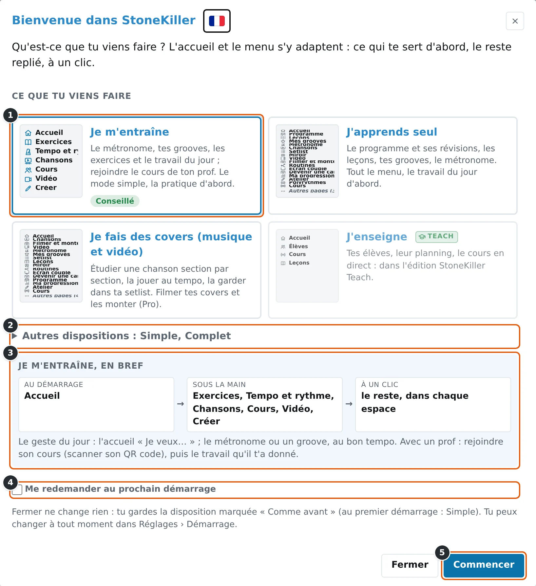
- Ce que tu viens faire, quatre cas : Je m'entraîne (le mode simple, la pratique d'abord : le métronome, tes grooves, le travail du jour, le cours de ton prof), J'apprends seul (le programme et ses révisions d'abord), Je fais des covers (musique et vidéo) (les chansons d'abord ; filmer et monter tes covers, avec Pro) et J'enseigne (l'accueil avec les cours du jour, tes élèves), dans l'édition Teach ; ailleurs, sa carte est là, marquée Teach, sans pouvoir la choisir. Chaque carte montre son menu en miniature.
- Autres dispositions : Simple, Complet, repliées sous les quatre cas (un clic les ouvre) : Simple (l'accueil « Je veux… » et les catégories) ou Complet (toutes les pages dans le menu). Tes propres profils suivent, sous Mes profils (voir Les réglages).
- En bref : le profil choisi, en trois étapes (ce qui s'ouvre au démarrage, ce qui est sous la main, ce qui est à un clic), et le geste du jour qu'il met en avant.
- Me redemander au prochain démarrage : tant que c'est coché, la question revient à chaque lancement (sur un appareil partagé, ou le temps de choisir). Réglages › Démarrage la recoche.
- Commencer applique le profil choisi. Fermer ne change rien : tu gardes la disposition marquée Comme avant (au premier lancement, Simple).
Le profil marqué Comme avant est celui qui correspond à ta disposition actuelle. Si tu as réglé le menu à ta façon et qu'aucun profil ne lui correspond, l'appli le garde d'abord comme profil à toi (« Ma disposition du … ») avant d'en appliquer un autre : rien ne se perd. Tu changes ensuite à tout moment, dans Réglages › Démarrage.
L'accueil « Je veux… »
En mode simple, l'appli s'ouvre sur l'accueil. Plutôt qu'une liste de pages, il propose ce que tu viens faire : « Jouer avec le métronome », « Faire mon travail du jour », « Écrire un groove »… Chaque tuile ouvre la page qui y répond.
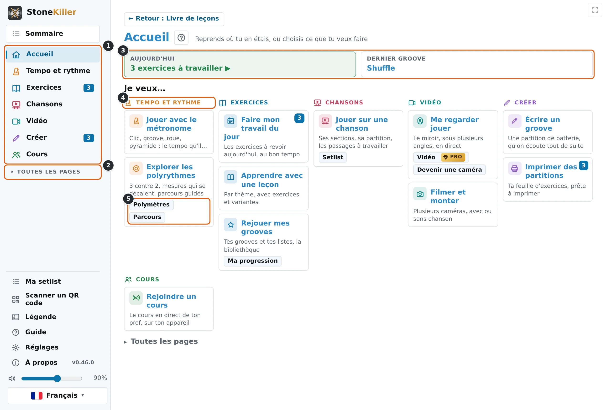
- Le menu : l'accueil et les six catégories, chacune à sa couleur : Tempo et rythme (métronome, polyrythmes, polymètres, parcours), Exercices (leçons, programme, mes grooves, ma progression), Chansons (les études de chanson, la setlist), Vidéo (le miroir, l'export vidéo, mes vidéos, filmer et monter, devenir une caméra), Créer (l'atelier, l'impression) et Cours (dans l'appli Teach : le planning, les élèves, le cours en direct, mon école ; dans l'appli élève : rejoindre le cours du prof).
- Toutes les pages : toutes les pages, rangées par catégorie, sans changer de mode (chaque catégorie se replie d'un clic sur sa flèche). En dessous, les Accès directs mènent droit à des fonctions qu'on cherche souvent (écrire un groove, enregistrer ce que je joue…). Réglages › Menu et accueil cache ceux qui ne te servent pas.
- Reprendre : le travail du jour, la dernière leçon, le dernier groove, la dernière chanson.
- Les tuiles sont rangées par catégorie ; le nom d'une catégorie ouvre son accueil.
- Sous certaines tuiles, des raccourcis vers les pages voisines (Polymètres, Parcours, Setlist…).
L'accueil d'une catégorie
Chaque catégorie a sa page d'accueil, à sa couleur : ce que tu y faisais, ce que tu peux y faire, et toutes ses pages, même celles que tu as cachées du menu. On y arrive par le nom de la catégorie : dans le menu, sur l'accueil et dans le bandeau en haut des pages.

- La catégorie, son nom et sa couleur.
- Reprendre : la dernière page que tu y as vue et, selon la catégorie, la dernière leçon, la dernière étude, le dernier groove ou le travail du jour.
- Ses tuiles « Je veux… », avec leurs raccourcis.
- Toutes les pages de la catégorie et ses accès directs.
En mode simple, un bandeau en tête de chaque page montre les autres pages de sa catégorie : tout reste à un clic.
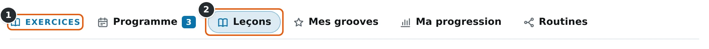
- La catégorie de la page ; un clic ouvre son accueil.
- La page ouverte ; les autres pages de la catégorie sont à côté.
Dans l'appli Teach, l'accueil commence par Tes cours aujourd'hui, et la catégorie Cours vient en premier, dans le menu comme sur l'accueil.
En mode simple, l'accueil tient sur un écran : sur un ordinateur, une tablette et même un téléphone couché, tout se voit sans faire défiler (on vient y choisir, pas y lire). Les tuiles sont resserrées ; sur un téléphone couché, il ne reste que leurs titres, rangés par catégorie ; les raccourcis et les phrases reviennent dès qu'il y a la place, et le menu garde toujours tout.
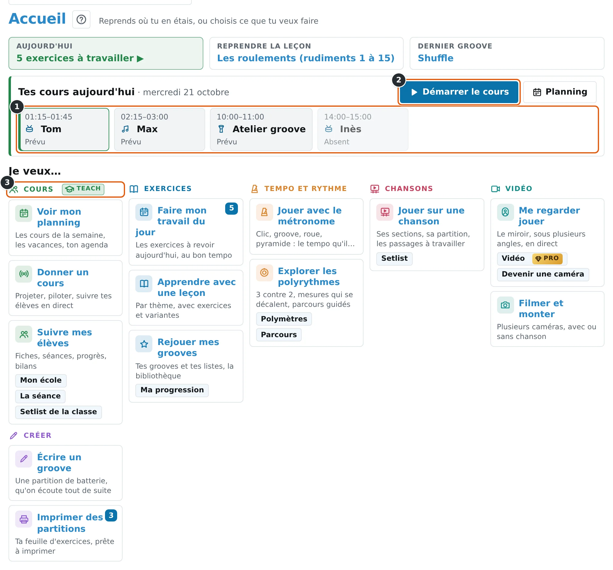
- Les cours du jour : un clic ouvre le cours (présent, absent, déplacer…, voir Le planning). Le prochain est encadré.
- ▶ Démarrer le cours : le prochain cours, tout de suite.
- La catégorie Cours : le planning, les élèves, le cours en direct.
Sur téléphone, la barre du bas montre l'accueil et les premières catégories.
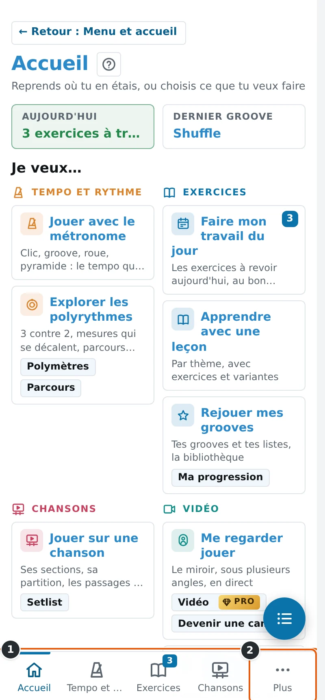
- La barre du bas : l'accueil et les premières catégories. Pendant un cours en direct, la catégorie du cours y prend la dernière place.
- Plus : toutes les catégories, toutes les pages, la légende, le guide et les réglages.
En mode simple, les réglages montrent l'essentiel (démarrage, langue, sons, affichage) ; le reste est replié dans Plus de réglages, en bas de la page.
L'écran principal
En mode complet, le menu reste à gauche, de haut en bas de l'écran : la page garde toute sa hauteur pour la partition, la grille ou le métronome.
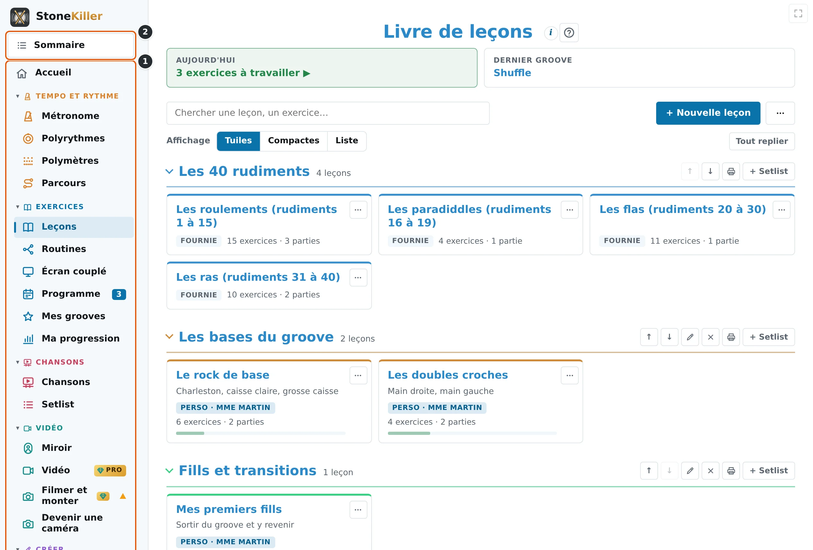
- Les pages, rangées par catégorie, chacune à sa couleur (voir Les pages en un coup d'œil). La flèche d'une catégorie la replie (l'appareil s'en souvient ; celle de la page ouverte reste ouverte) ; son nom ouvre son accueil. La page ouverte est surlignée.
- Sommaire : l'arbre de toutes tes leçons, parties et exercices, avec une recherche. Le plus rapide pour aller à un exercice précis.
- Scanner un QR code : l'appareil photo, pour un QR code de StoneKiller (une feuille, un groove, un cours, une caméra) ; c'est le code qui dit à l'appli quoi en faire. La même icône est en tête des pages qui reçoivent un QR code.
- Légende : que veut dire ce symbole sur la partition ? La légende s'ouvre dans une fenêtre, l'explique et fait entendre le son.
- Guide (ou la touche F1) : ce guide, dans l'appli, avec une recherche.
- Réglages : le démarrage, le menu et l'accueil, ton nom, l'affichage, le décompte, l'évaluation, les sons de la batterie (voir Réglages, sons et données).
- À propos : la version de l'appli, les licences, la confidentialité.
- Volume de la batterie et du métronome.
- Langue : français, anglais ou allemand.
Chaque page du menu porte la couleur de sa catégorie : on voit d'un coup d'œil où l'on est. Ma setlist, en bas du menu, compte les exercices cochés et l'ouvre d'un clic (voir La Setlist).
En tête de chaque page, ⓘ à côté du titre déplie l'explication de la page, et ? ouvre ce guide au bon chapitre. Les actions rares d'une page sont rangées dans son menu ⋯. ← Retour revient à la page d'où tu viens, comme le retour du navigateur ou d'Android.
Les sons se chargent à l'ouverture de l'appli : un message s'affiche en bas du menu pendant le chargement, ou en cas de problème.
Sur un écran étroit (un téléphone, une tablette en portrait), le menu passe dans une barre en bas, sous le pouce, et le panneau Plus garde le reste : voir Sur téléphone.
Au démarrage
En mode simple, l'appli s'ouvre sur l'accueil ; en mode complet, sur le métronome : de quoi jouer tout de suite. Réglages › Démarrage choisit une autre page (n'importe quelle page du menu, ou la dernière page ouverte), le mode du métronome et son plein écran.
Le menu et l'accueil se règlent dans Réglages › Menu et accueil, avec un aperçu à côté qui suit chaque changement :
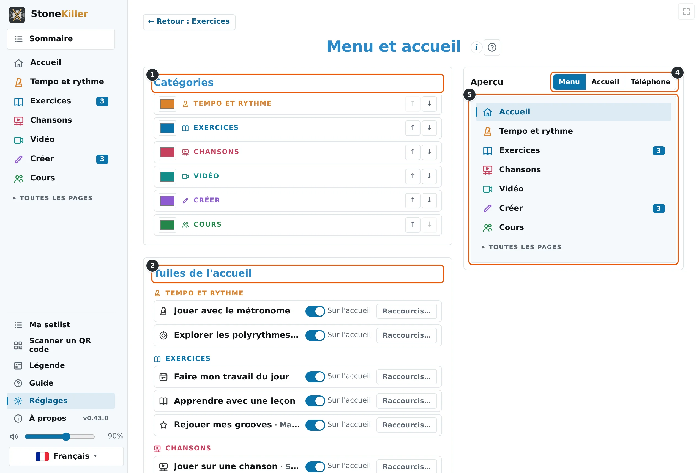
- Catégories : leur ordre (↑ ↓) et leur couleur (↺ : celle d'origine).
- Tuiles de l'accueil : chaque tuile « Je veux… » se cache (Sur l'accueil) ; Raccourcis… choisit les pages proposées dessous ; + Nouvelle tuile… crée la tienne (son nom, la page qu'elle ouvre, sa catégorie).
- Menu (mode complet) : l'ordre des pages dans leur catégorie, celles que tu ne veux pas voir (Dans le menu), celles qui se rangent sous Autres pages, en bas du menu (Replié), et les quatre pages de la Barre du bas sur téléphone.
- Aperçu : le menu, l'accueil ou la barre du bas du téléphone.
- L'aperçu lui-même, dessiné comme dans l'appli.
Une page cachée reste accessible par ses liens, dans Toutes les pages et sur l'accueil de sa catégorie ; ↺ Tout remettre comme à l'origine revient au menu et à l'accueil de l'appli.
L'ancienne présentation, avec les onglets en haut, reste disponible : Réglages › Démarrage › Interface › Classique. Les pages sont les mêmes ; seul le chemin pour y aller change.
En mode complet, la page Accueil est proposée en plus (à montrer dans Réglages › Menu et accueil, puis à choisir comme écran de départ si tu veux) : la même que celle du mode simple (voir L'accueil « Je veux… »), suivie d'une tuile par page, avec ce qu'elle permet. À l'ouverture, les billes du métronome se remplissent temps après temps, le temps que l'appli se charge (Billes du métronome à l'ouverture, dans les mêmes réglages). Les fonctions de l'atelier pro portent un badge PRO, celles de l'édition Teach un badge TEACH.
Les pages en un coup d'œil
| Page | Pour quoi faire | Chapitre |
|---|---|---|
| Métronome | un clic, un groove, ou trois modes d'entraînement (roue rythmique, pyramide rythmique, polymètre), pour travailler sans partition | Le métronome |
| Leçons | les exercices, rangés par thème et par leçon ; reprendre ce que tu faisais | Le livre de leçons |
| Chansons | étudier une chanson : la vidéo ou l'audio, ses sections, sa partition, les exercices qu'on en tire | Étudier une chanson |
| Vidéo | faire une vidéo d'une étude, avec les notes qui défilent ; les thèmes des notes | Exporter une vidéo |
| Programme | ce qu'il faut travailler aujourd'hui, à ton tempo ; ta progression | Le programme, Évaluation |
| Mes grooves | tes grooves enregistrés, rangés en listes ; la sauvegarde complète | Mes grooves et impression |
| Setlist | ce que tu as réuni pour le jouer d'un trait (et, dans Teach, la setlist de la classe) | La Setlist |
| Atelier | créer tes grooves et des séries d'exercices | L'atelier |
| Impression | composer une feuille d'exercices, à imprimer ou en PDF | Mes grooves et impression |
| Polyrythmes, Polymètres, Parcours | voir, entendre et travailler les rythmes croisés | Polyrythmes et polymètres |
| Cours (Enseigner dans l'appli Teach) | rejoindre le cours en direct du prof, ou le donner (édition Teach) | Les cours en direct |
| Élèves (édition Teach) | le registre de tes élèves et de leurs séances | Le registre des élèves |
La pastille sur une page du menu (Programme 3, Impression 3) compte ce qui t'y attend : les exercices du jour, les exercices mis sur la feuille. Un point rouge sur Cours : un cours est en direct.
Se déplacer
Quatre façons d'aller vite, selon ce que tu cherches :
- Reprendre : en haut de la page Leçons, deux cartes ramènent à ce que tu faisais : Aujourd'hui (les exercices du programme qui t'attendent) et Dernier groove (le dernier que tu as modifié).
- Sommaire : tout le livre en arbre, depuis n'importe quelle page. Tape quelques lettres (« paradiddle », « 6/8 ») pour filtrer. Sur un grand écran, l'épingle le garde ouvert à gauche (voir Trouver un exercice).
- Recherche du livre : le champ Chercher une leçon, un exercice… de la page Leçons filtre les cartes affichées.
- ? Guide (F1) : ce guide, avec sa propre recherche. Il s'ouvre dans une fenêtre par-dessus la page : en le fermant, tu retrouves ta page telle quelle.
Quand un lien de la page t'emmène ailleurs (une séance qui ouvre le journal des cours, une leçon qui ouvre l'atelier…), un lien ← Retour en tête de la nouvelle page te ramène là où tu étais. Et si ce lien partait d'une fenêtre (le calendrier du planning qui mène à Mon école), ← Retour rouvre aussi cette fenêtre : tu reprends exactement là où tu étais. Passer par le menu, lui, repart de zéro, et Atelier dans le menu ouvre toujours sa page. Ouvert depuis une autre page, l'atelier s'ouvre dans une fenêtre par-dessus : la fermer (✕ ou Échap) te rend ta page telle quelle ; quand la page attend un groove (une section de chanson, un exercice à projeter), le bouton ✓ en haut de la fenêtre le lui rend.
De l'aide où tu en as besoin. Le ? à côté du titre d'une page ouvre le guide à son chapitre. Ce qui demande plus d'explications (les crédits, le calendrier de l'école, le Wi-Fi d'un cours, les sons…) a son propre ?, qui ouvre le guide à la bonne section. Et chaque bouton dit, au survol, ce qu'il fait.
Toute fenêtre se ferme sans rien enregistrer : Annuler ou Fermer en bas, Échap, ou ✕ en haut. Tu retrouves ta page là où tu l'avais laissée. Le bouton Retour (celui d'Android, celui du navigateur) fait pareil : avec une fenêtre ouverte, il la ferme, comme Échap, et la page derrière ne change pas.
Ce qui s'enregistre tout seul (une leçon, une étude, un groove en cours, gardé en brouillon) ne se perd pas en changeant de page. Ce qui attend un Enregistrer (une fiche d'élève, les réglages de connexion, une note en cours d'écriture) ne part pas en silence : changer de page, ou fermer l'appli, te demande d'abord Quitter la page ?.
Deux gestes valent partout où il y a une partition : un clic sur une note lance la lecture à partir de cette note, et Espace lance ou arrête le dernier lecteur utilisé.
Les modes d'affichage à connaître
La plupart des pages ont un réglage d'affichage discret, qui change beaucoup le confort. Le choix est retenu d'une fois sur l'autre.
| Mode | Ce qu'il t'apporte | Où |
|---|---|---|
| Mode lecture (et Auto) | la partition seule, en grand, en plein écran ; idéal à la batterie, le téléphone sur un pupitre. Auto l'ouvre dès que tu lances un exercice sur téléphone | le bouton plein écran de chaque lecteur ; Le mode lecture |
| Complet / Mixte / Condensé | une leçon avec un lecteur par exercice, ou en lignes compactes pour la parcourir d'un coup d'œil | Affichage, en haut d'une leçon ; Lire une leçon |
| Plan / Détail | en modifiant une leçon : une ligne par exercice pour réorganiser, ou tout le contenu pour écrire | au-dessus des parties d'une leçon en modification ; Plan et repliage |
| Mesures par ligne (mode lecture, téléphone) | en portrait, 1 mesure ou ½ (notes plus grandes) ; en paysage, 2 mesures ou 1 | le bouton 1 mesure du mode lecture, ou Réglages › Affichage |
| Sommaire épinglé | l'arbre reste ouvert à côté de la page : on passe d'un exercice à l'autre sans le rouvrir | l'épingle du Sommaire, écran large |
| Grille / Texte | la même partition en cases ou en notation texte, à copier ou à taper | l'éditeur de grille ; Grille ou texte |
| Gravure des partitions | la clé standard, ou les conventions des leçons GrooveScribe si tu en as l'habitude | Réglages › Affichage ; Les réglages |
| Clé complète | la légende montre aussi les symboles prévus mais pas encore saisissables | en haut de la Légende ; La légende |
| Mise en page de la feuille | Normale, Compacte (partitions plus petites) ou 2 colonnes | page Impression ; Composer une feuille |
| Continu / Pages | l'aperçu d'impression d'un seul tenant, ou découpé en pages A4 avec les sauts de page | Aperçu, page Impression ; Composer une feuille |
| Allure du métronome | la forme des lumières (ronde, barre, carrée, cœur, étoile, douille, baguette, tête de mort), leurs couleurs, le balancier, la roue rythmique et le plein écran | le bouton ⚙ du métronome ; L'allure : lumières et balancier |
| Thème sombre | partitions comprises ; il fatigue moins les yeux le soir | suit le réglage de ton appareil ; Langue et thème |
Chapitre 3Partie I · Démarrer
L'appli selon ton appareil
StoneKiller est la même appli sur un ordinateur, une tablette ou un téléphone, installée ou ouverte dans un navigateur : les mêmes pages, les mêmes leçons, les mêmes fonctions. Ce qui change, c'est la place dont elle dispose, la façon de la toucher et ce que l'appareil sait faire. Ce chapitre dit ce qui change et ce qui reste, appareil par appareil.
Pourquoi y jeter un œil ? Parce qu'on ne s'en sert pas pareil partout : à la table, avec la souris, pour écrire un groove ; à la batterie, avec le téléphone posé sur un pupitre, pour jouer sans y toucher. Et parce que quelques fonctions dépendent de l'appareil : mieux vaut savoir pourquoi un bouton manque que le chercher. Pour savoir où est chaque page, va plutôt à Se repérer dans l'appli ; pour installer l'appli, à Installation et appareils.
La largeur compte, pas l'appareil
L'appli ne se demande pas « suis-je sur un téléphone ? », mais « de quelle largeur est ma fenêtre ? ». Pourquoi : une tablette en portrait est aussi étroite qu'un grand téléphone, et une fenêtre d'ordinateur réduite aussi ; elles ont donc la même présentation. Pour voir la disposition du téléphone sur ton ordinateur, rétrécis la fenêtre jusqu'à ce que le menu passe en bas. La mise en page change à trois largeurs, les mêmes dans toute l'appli :
| Largeur de la fenêtre | On la rencontre sur | Ce qui change |
|---|---|---|
| plus de 900 px | un ordinateur, une tablette en paysage | le menu reste à gauche, sur toute la hauteur ; à partir de 1100 px, le Sommaire peut s'épingler à côté de la page |
| 900 px ou moins | un téléphone, une tablette en portrait, une fenêtre étroite | le menu passe dans la barre du bas et le panneau Plus (quatre tuiles par rangée) |
| 640 px ou moins | un téléphone | les pages se resserrent (une colonne, des barres réduites) ; le panneau Plus passe à trois tuiles par rangée |
Les différences en bref
Tout ce que fait l'appli marche sur les deux ; la présentation s'adapte à la largeur de l'écran. Dans ce guide, quand une vue change vraiment, la capture du téléphone est montrée à côté de celle de l'ordinateur, et des encarts signalent les différences :
Les principales différences :
- Au doigt : un appui long remplace le clic droit (menu des variantes d'une note, glisser une brique) ; les raccourcis clavier disparaissent des boutons.
- Le métronome se réduit à son cadran (tempo, lumières, balancier, lecture) ; ses réglages se déplient en dessous. Au démarrage, il passe en plein écran.
- Le menu passe dans la barre du bas et le panneau Plus (voir Sur téléphone).
- L'éditeur de grille range ses outils dans un dock en bas de l'écran, à portée de pouce (voir L'éditeur de grille).
- L'atelier pro passe en onglets (Chercher, Modèle, Composition).
- Le sommaire s'ouvre par-dessus la page au lieu de s'épingler à côté.
Les fonctions qui dépendent de l'appareil (MIDI, Wi-Fi du cours, écran toujours allumé) sont dans Installation et appareils.
Sur ordinateur
L'ordinateur (Windows ou Mac dans l'appli installée, n'importe lequel dans un navigateur) est l'appareil qui donne le plus de place : le menu reste à gauche, de haut en bas, et la page garde toute sa hauteur pour la partition, la grille ou le métronome.
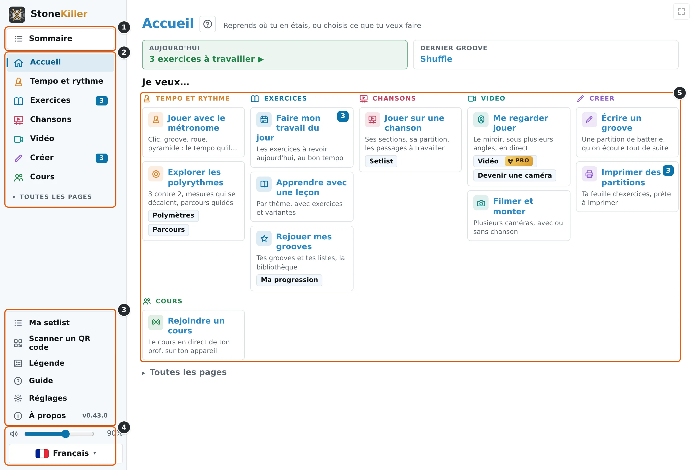
- Sommaire : l'arbre de toutes tes leçons, avec une recherche. À partir de 1100 px de large, l'épingle le garde ouvert à côté de la page (voir Trouver un exercice).
- Les pages. En mode simple, comme ici : l'accueil et les catégories, puis Toutes les pages pour déplier le menu complet (voir Simple ou complet).
- Au pied du menu : Ma setlist, Scanner un QR code, Légende, Guide, Réglages et À propos (voir L'écran principal).
- Volume et langue.
- La page : ici, l'accueil et ses tuiles.
Avec une souris, un survol dit ce que fait chaque bouton. Au clavier, Espace lance et arrête la lecture, F1 ouvre le guide, Échap ferme une fenêtre ou quitte le plein écran : toute la liste est dans Raccourcis. Dans l'appli installée, le plein écran du métronome ou d'une étude fait passer la fenêtre elle-même en plein écran.
Avec l'édition Teach, l'ordinateur héberge le cours en direct (Windows, Mac) et peut montrer la partition en grand sur un second écran (voir Les cours en direct).
Sur tablette
Une tablette n'a pas de présentation à elle : elle prend celle de sa largeur (voir le tableau plus haut). En portrait, c'est celle d'un téléphone, sur une page plus large :
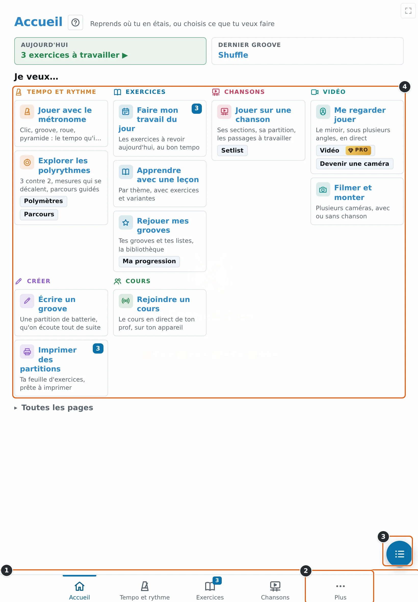
- La barre du bas : l'accueil et les premières catégories.
- Plus : le reste du menu, en tuiles (quatre par rangée sur une tablette, trois sur un téléphone).
- Ma setlist : le bouton rond, au-dessus de la barre.
- La page : les catégories de l'accueil se rangent en autant de colonnes que la largeur le permet.
Une grande tablette, plus large que 900 px même en portrait, garde le menu à gauche. Pour le reste, une tablette étroite fait comme un téléphone : avec Auto, le mode lecture s'ouvre dès que tu lances un exercice en portrait (en paysage, elle se comporte comme un ordinateur) ; les gestes, le plein écran et l'orientation sont ceux du téléphone (voir Sur téléphone). Une pédale tourne-page Bluetooth marche aussi, en mode lecture. Sur une tablette Android, l'appli s'installe comme sur un téléphone (voir Android).
Sur téléphone
Le téléphone est celui qu'on pose sur le pupitre pour jouer : la place y est comptée, le doigt cache ce qu'il touche, et à la batterie on ne veut plus rien toucher. L'appli y change donc de forme : le menu laisse la place à la page, le plein écran prend le relais, et l'écran se tourne dans les deux sens.
La barre du bas et Plus
Sur un écran étroit, le menu laisse toute la place à la page, et les pages du quotidien passent dans une barre en bas, sous le pouce.
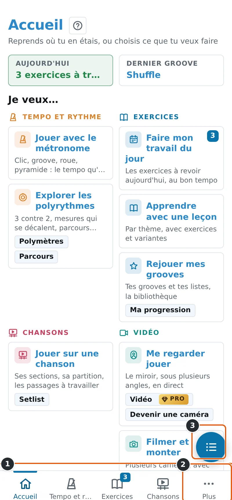
- La barre du bas : l'accueil et les premières catégories. Pendant un cours en direct, la catégorie du cours y prend la dernière place.
- Plus : toutes les catégories, toutes les pages, la légende, le guide et les réglages.
- Ma setlist : le bouton rond, au-dessus de la barre.
Ta setlist reste à portée de pouce : un bouton rond, au-dessus de la barre du bas, l'ouvre et dit combien d'exercices y sont cochés. Il s'efface sur la page Setlist et en plein écran.
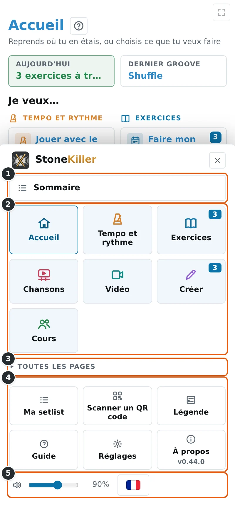
- Sommaire.
- L'accueil et les catégories, en grandes tuiles.
- Toutes les pages : un toucher les déplie, rangées par catégorie.
- Ma setlist, Scanner un QR code, Légende, Guide, Réglages, À propos.
- Volume et langue.
Un choix referme le panneau ; ✕, ou un toucher à côté, aussi.
En mode complet, la barre du bas montre quatre pages que tu choisis, et Plus toutes les pages, rangées par catégorie :
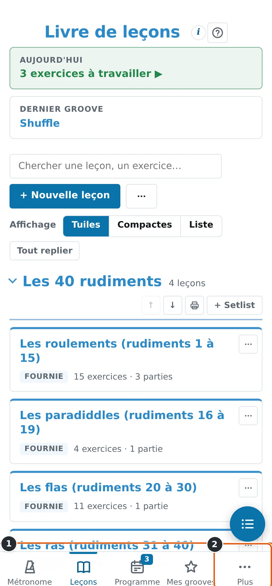
- La barre du bas : Métronome, Leçons, Programme, Mes grooves (ou celles que tu choisis, voir Au démarrage). Pendant un cours en direct, Cours s'y ajoute.
- Plus : tout le reste du menu.
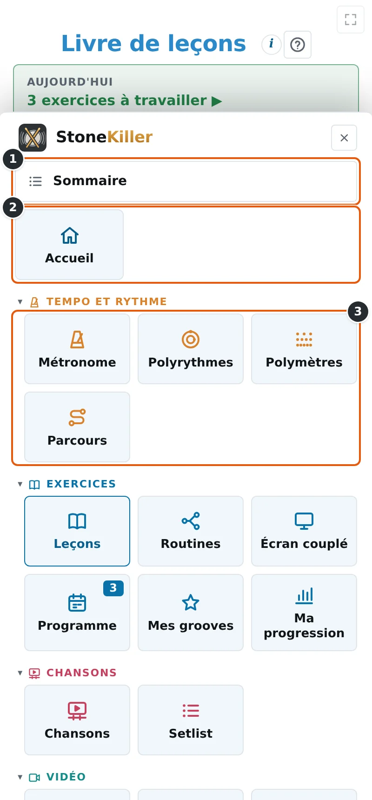
- Sommaire.
- Les pages, en grandes tuiles.
- Les pages rangées par catégorie (chaque catégorie se replie d'un clic).
- Scanner un QR code, Légende, Guide, Réglages, À propos.
- Volume et langue.
Écran étroit, plein écran, orientation
Sur un téléphone, trois choses comptent : la place, ce qu'on peut laisser sans y toucher, et le sens dans lequel on le tient.
- Une colonne. Jusqu'à 640 px de large, les pages se resserrent : une colonne, des barres réduites. Le métronome et l'éditeur de grille, par exemple, se réorganisent (voir Les différences en bref).
- Le plein écran, pour jouer. Le métronome passe tout seul en plein écran au démarrage : rien ne défile, même si tu effleures l'écran avec une baguette, et l'écran ne se met pas en veille (voir Le métronome). Le mode lecture montre la partition seule, en grand ; avec Auto, il s'ouvre dès que tu lances un exercice (voir Le mode lecture). Pour en sortir : le bouton retour du téléphone. Sur Android, le plein écran cache aussi les barres du système ; sur iPhone, il n'existe pas : le mode lecture occupe toute la fenêtre du navigateur.
Au doigt
Un doigt n'est pas une souris : il cache ce qu'il touche, et il n'y a ni survol ni clic droit. Quelques gestes prennent la place de ceux de la souris (l'appui long à la place du clic droit est dans Les différences en bref) :
- Le tempo du métronome : glisse le pouce sur le nombre.
- L'éditeur de grille : les notes se posent case par case, au relâchement ; glisser fait défiler la page au lieu de peindre. Un appui long sur une case ouvre le menu de ses variantes (le téléphone vibre un peu).
- Les briques de l'atelier pro : pour en poser une, appui long, puis glisse (voir L'atelier).
- Le plan d'une leçon, en modification : pose le doigt sur la poignée ⠿ puis glisse ; le reste de la ligne fait défiler la page normalement (voir Plan et repliage).
- Une pédale tourne-page Bluetooth se comporte comme un clavier : en mode lecture, elle change d'exercice sans que tu touches l'écran.
L'appli installée ou le navigateur
StoneKiller se présente sous deux formes : l'appli installée (Windows, Mac, Android) et une page web, c'est-à-dire le fichier .html ouvert dans un navigateur, ou la page qu'un téléphone ouvre en scannant le QR code d'un cours. Les pages, les leçons, le métronome, l'éditeur : tout y est. Ce que seule l'appli installée fait, c'est ce qu'un navigateur ne permet pas : écrire dans un dossier sans le redemander, ouvrir un cours à des élèves, créer un Wi-Fi.
- Héberger un cours (Teach). L'appli ouvre le cours à tes élèves ; dans un navigateur ou un fichier
.html, Démarrer le cours ouvre une démo, à essayer avec deux onglets. Côté élève, seules les applis trouvent le cours toutes seules : dans un navigateur, tape l'Adresse du prof, ou scanne son QR code (voir Les cours en direct). - Créer le Wi-Fi du cours. L'appli Teach sur Android seulement, avec Android 8 ou plus récent (voir Un cours sans Wi-Fi).
- Mes vidéos. La page qui réunit les enregistrements du miroir, les vidéos exportées et les prises de Capture n'existe que dans l'appli (voir Mes vidéos). Le miroir y enregistre sans redemander de dossier ; dans un navigateur, il t'en demande un une fois par lancement (Chrome, Edge), ou enregistre à l'arrêt.
- Le fichier d'une chanson. Une étude garde un lien vers ton fichier audio ou vidéo, sans le copier, dans l'appli de bureau (Windows, Mac) et dans Chrome ou Edge ; ailleurs (Firefox, Safari, téléphone, appli Android), le fichier est copié sur l'appareil (voir Étudier une chanson).
- Ouvrir un fichier StoneKiller. Un double-clic dans l'appli installée (Windows, Mac), « Ouvrir avec » ou « Partager » sur Android ; dans un navigateur, glisse le fichier sur la fenêtre.
- Garder l'écran allumé. L'appli Android le fait tant qu'elle est affichée ; un navigateur, non.
- Une batterie électronique (MIDI USB). C'est l'inverse : elle marche dans l'appli Windows et dans Chrome, Edge ou Firefox, mais pas dans l'appli Mac ni dans l'appli Android (voir Installation et appareils).
La page qu'un téléphone d'élève ouvre en scannant le QR code d'un cours est une page web : elle n'a ni le micro ni le MIDI, car l'adresse du réseau local n'est pas sécurisée (voir Les cours en direct).
Où vont tes données
Dans l'appli comme dans un navigateur, tes données restent sur l'appareil : pas de compte, rien n'est envoyé sur Internet, et rien ne se synchronise d'un appareil à l'autre (voir Réglages, sons et données). Ce qui change, c'est qui les garde :
- l'appli installée les garde pour elle. Désinstaller l'appli peut les effacer ; sur Android, elles sont exclues des sauvegardes Google et du transfert vers un nouveau téléphone ;
- un navigateur les garde pour lui, sur cet ordinateur : si tu changes de navigateur ou d'ordinateur, elles ne suivent pas. Deux fichiers
.htmlouverts dans le même navigateur peuvent partager les mêmes données. En fenêtre privée, rien n'est gardé en fermant : un avertissement ⚠ le dit ; - la page d'un téléphone d'élève garde son programme et son journal dans le navigateur du téléphone, liés à l'adresse du prof : si elle change (un autre Wi-Fi), la page repart de zéro.
Dans tous les cas, la Sauvegarde complète (page Mes grooves) emporte tout, et Restaurer la remet sur un autre appareil (voir Sauvegarder et changer d'appareil).
Simple ou complet selon l'appareil
Le mode simple ou complet ne dépend pas de l'appareil : c'est un réglage, retenu sur chaque appareil à part. Au premier lancement sur un appareil, la fenêtre de bienvenue te demande ce que tu viens faire (voir Au démarrage : ce que tu viens faire) : tu peux donc avoir le mode complet sur l'ordinateur et le mode simple sur le téléphone. Ce que l'appareil change, c'est la forme du menu :
| Ordinateur, tablette en paysage | Téléphone, tablette en portrait | |
|---|---|---|
| Simple | le menu à gauche : l'accueil, les catégories et Toutes les pages (replié) | la barre du bas : l'accueil et les premières catégories ; Plus : l'accueil, les catégories et Toutes les pages |
| Complet | le menu à gauche : toutes les pages, rangées par catégorie | la barre du bas : quatre pages à ton choix ; Plus : toutes les pages, rangées par catégorie |
Les quatre pages de la barre du bas du mode complet se choisissent dans Réglages › Menu et accueil (la Barre du bas, voir Au démarrage). En mode simple, l'accueil tient sur un écran, quel que soit l'appareil (voir L'accueil d'une catégorie).
Chapitre 4Partie II · Les outils de base
Jouer un exercice
Chaque exercice s'affiche dans un lecteur : la partition, avec les commandes au-dessus. Le lecteur sert à trois choses : entendre comment l'exercice doit sonner, le jouer avec l'appli à ton tempo, et isoler ce qui te pose problème (un instrument, une mesure, un tempo).
Le lecteur
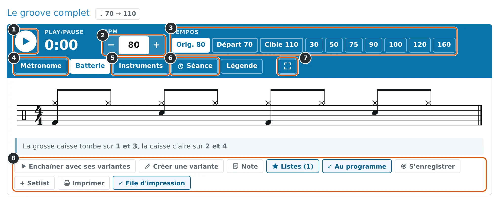
- Lecture / pause. Un clic sur une note de la partition lance la lecture à partir de cette note : pratique pour reprendre juste avant un passage difficile. Espace relance le dernier lecteur utilisé.
- Tempo, en BPM (battements par minute). − et + changent de 5 ; tu peux aussi taper une valeur. Voir Choisir son tempo.
- Tempos : des valeurs en un clic, dont les tempos prévus par la leçon.
- Métronome : le clic. Juste à côté, Batterie coupe la batterie pour ne garder que le clic. Voir Le clic et la batterie.
- Instruments : couper un ou plusieurs instruments pour jouer leur partie toi-même. Voir Couper des instruments.
- Séance : un travail minuté, ou un nombre de répétitions. Voir Les séances.
- Mode lecture (l'icône plein écran) : la partition seule, en grand. Voir Le mode lecture.
- Les actions de l'exercice : + Programme pour le travailler dans la durée, Créer une variante, Note perso, Ajouter à une liste, → Leçon (le copier dans une de tes leçons), S'enregistrer (le jouer et comparer), Imprimer ou File d'impression. L'édition Teach ajoute → Élève et, pendant un cours, Projeter.
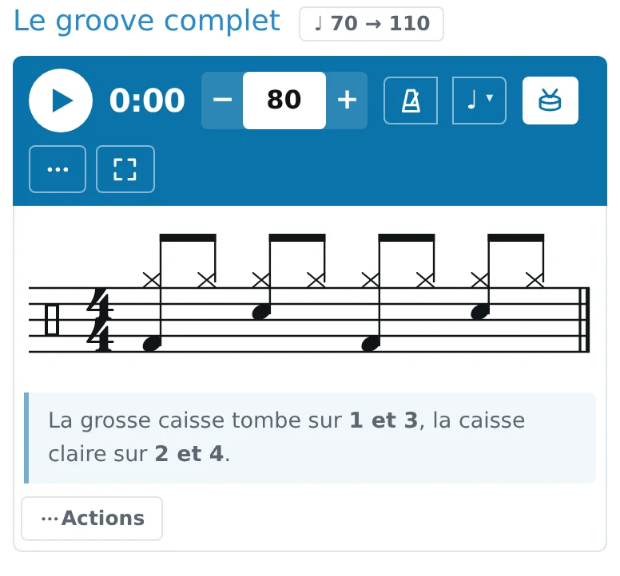
Choisir son tempo
Le tempo est ton principal réglage de travail. Un exercice joué propre à 60 BPM t'apprend plus qu'un exercice approximatif à 100 : à vitesse lente, tu entends tes erreurs et tu les corriges ; à vitesse trop rapide, tu les répètes. La bonne méthode : partir d'un tempo où tout est propre, puis monter par petits paliers.
Les puces Tempos donnent des valeurs en un clic :
- Orig. : le tempo écrit dans la partition ;
- Départ, Stable et Cible, quand la leçon (ou ton programme) les prévoit. Départ est le tempo où commencer ; Stable celui que tu dois tenir facilement, sans faute, pour considérer l'exercice comme acquis ; Cible, facultative, va plus loin, pour te pousser ;
- des valeurs courantes, de 30 à 160.
Tu n'as pas à retenir où tu en es : quand l'exercice est au programme, le lecteur démarre au tempo de ta dernière séance, et le programme le fait monter quand tu notes Bon (voir Le programme d'entraînement).
Le lecteur garde aussi, sur cet appareil, le dernier tempo joué de chaque exercice : rouvre-le demain, il repart de là. Un petit ↺ jaune à côté du tempo le signale ; un clic revient au tempo de départ (et oublie le tempo gardé).
Le clic et la batterie
Métronome fait entendre le clic : un son court sur chaque temps, celui du premier temps de la mesure un peu plus aigu. Batterie fait entendre (ou non) l'exercice lui-même.
Ces deux boutons donnent les trois étapes classiques pour apprendre un exercice :
- Écouter : batterie et clic, sans jouer, en suivant la partition des yeux.
- Jouer avec : batterie et clic, en jouant par-dessus. Tu entends tout de suite si tu t'écartes.
- Jouer seul : batterie coupée, clic seul. C'est la vraie vérification : tu tiens l'exercice sans modèle.
La séance Alternée fait passer automatiquement de l'étape 2 à l'étape 3 (voir plus bas).
Couper des instruments
Couper un instrument ne change pas la partition : l'appli arrête simplement de le jouer. À quoi ça sert ?
- Prendre sa place. Coupe la grosse caisse et joue-la au pied : l'appli tient les mains, tu te concentres sur le pied. C'est le principe du « play-along » : la musique sans ta partie.
- Comprendre un passage. Coupe tout sauf la caisse claire : tu entends exactement où tombent les ghost notes, sans le charleston par-dessus.
- Construire la coordination. Commence par les mains seules (pieds coupés), puis les pieds seuls, puis tout : un membre à la fois, c'est plus rapide que tout d'un coup.
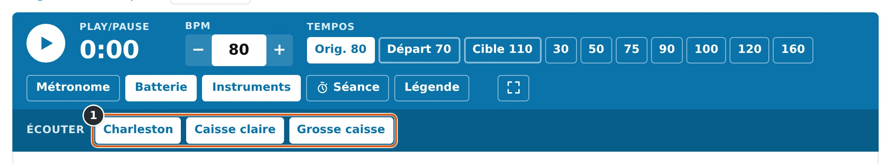
- Chaque instrument de l'exercice a son bouton. Un clic le coupe (le bouton s'éteint), un autre le rétablit.
Pour entendre la partie d'un instrument sans rien d'autre, coupe tous les autres. Pour ne garder que le clic, utilise plutôt Batterie.
Les séances : travailler un temps fixe
Une séance cadre ton travail : « 5 minutes sur ce groove » ou « 10 fois de suite ». Une durée fixe t'empêche de passer trop vite à autre chose ; un nombre de répétitions te fait jouer jusqu'au bout, même quand c'est difficile.
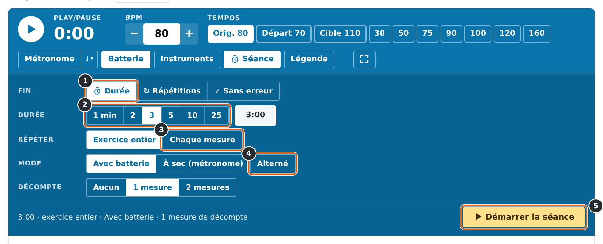
- Fin : au bout d'une Durée, ou après un nombre de Répétitions.
- La durée : 1, 2, 3, 5, 10 ou 25 minutes, ou une durée tapée (par exemple 3:00).
- Répéter : Exercice entier joue l'exercice du début à la fin (une mesure marquée ×3 dans la partition est jouée 3 fois ; pendant la lecture, des pastilles près du ×3 montrent quel passage se joue). Chaque mesure ×2, ×3, ×4 ou ×8 répète chaque mesure avant de passer à la suivante : idéal pour un exercice long, que tu apprends morceau par morceau.
- Mode : Avec batterie, À sec (métronome), ou Alterné (par exemple 2 mesures avec la batterie, 2 sans). Alterné te fait passer sans t'arrêter de « jouer avec » à « jouer seul » : quand la batterie revient, tu entends si tu as gardé le tempo.
- Démarrer la séance : la progression s'affiche, et à la fin l'appli résume le temps joué et le tempo.
Juste au-dessus, Décompte : Aucun, 1 mesure ou 2 mesures de clic avant la première note, le temps de prendre les baguettes. L'horloge compte « 1… 2… 3… 4… » pendant le décompte. Le choix vaut pour tous les exercices ; dans les Réglages, tu peux aussi l'appliquer à la simple lecture ▶.
En répétitions, des lumières comptent les passages, comme les LED du métronome, pour savoir où tu en es sans compter de tête : une bleue par passage (celle qui joue brille), une blanche par dizaine jouée (11 sur 23 : une blanche et une bleue). Dans la dernière dizaine ne restent que les passages à jouer : l'avant-dernier est jaune et le dernier rouge, pour voir venir la fin. Au-delà de cent, les dizaines s'écrivent en chiffres (124 : 120 et quatre bleues).
La Setlist
Un échauffement, une répétition, un cours : on enchaîne des exercices venus de partout, et les chercher un par un casse l'élan. La Setlist est ton panier : tu y ranges ce que tu veux jouer, dans l'ordre, puis tu le joues d'un trait.
Pour la remplir, + Setlist est partout : sur un exercice, en tête d'une partie ou d'une leçon, et sur un thème du livre des leçons. Pour une partie, une leçon ou un thème, une fenêtre montre ses exercices, tous cochés : décoche ceux qui ne partent pas cette fois-ci, plutôt que de les retirer ensuite un par un.
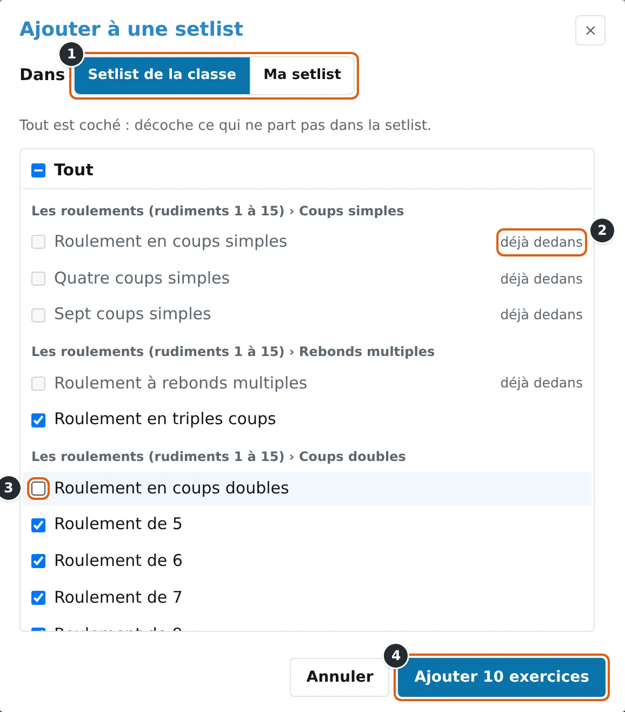
- Dans l'appli Teach : la setlist où ils vont, la tienne, celle de la classe (voir Cours en direct) ou celle de la prochaine séance (voir La setlist de la séance).
- Un exercice déjà dans cette setlist : grisé, il n'entre pas une deuxième fois.
- Décoché : il reste dans sa leçon, mais ne part pas dans la setlist. Tout, en tête de la liste, coche ou décoche tout d'un coup.
- Ajouter : le nombre d'exercices qui partent.
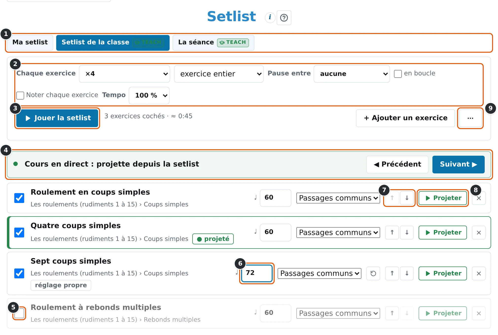
- Dans l'appli Teach : Ma setlist, la Setlist de la classe (celle que tu projettes pendant un cours) et La séance.
- Les réglages communs, comme pour un enchaînement : Chaque exercice ×4 ou pendant une durée, Répéter chaque mesure, une Pause entre deux exercices, en boucle, Noter chaque exercice (voir plus bas) ; le Tempo en pourcentage du tempo de départ de chaque exercice, pour tout ralentir d'un coup.
- ▶ Jouer la setlist enchaîne les exercices cochés ; dans le menu ⋯, Tableau les montre en tableau. À côté : combien d'exercices sont cochés, et la durée prévue.
- Pendant un cours : ◀ Précédent et Suivant ▶ parcourent les exercices cochés.
- Décoché, un exercice reste dans la liste mais n'est ni joué ni projeté : pratique pour le garder sous la main sans le jouer aujourd'hui.
- Un exercice peut avoir son propre tempo ou ses propres passages (encadrés, marqués réglage propre) : ↺ le ramène aux réglages communs.
- ↑ et ↓ changent l'ordre ; ✕ retire l'exercice de la Setlist (il reste dans sa leçon ou dans Mes grooves).
- Pendant un cours : ▶ Projeter montre cet exercice à la classe.
- ⋯, puis Imprimer : les exercices cochés, dans l'ordre, avec leurs partitions et leurs réglages propres, sous l'en-tête StoneKiller, pour jouer la setlist sur papier ou la donner à un élève.
+ Ajouter un exercice en choisit un dans la bibliothèque ; dans le menu ⋯, Vider retire tout, sans rien effacer des leçons ni de Mes grooves.
Noter chaque exercice
Enchaîner, c'est bien pour l'élan ; mais à la fin de dix exercices, on ne se souvient plus lequel accrochait. Avec Noter chaque exercice, la lecture s'arrête à la fin de chaque exercice (un signal sonore) et te demande tout de suite comment c'était, tant que c'est frais. Ensuite seulement viennent la pause entre les exercices, ou le décompte, puis l'exercice suivant : on ne répond jamais en jouant.
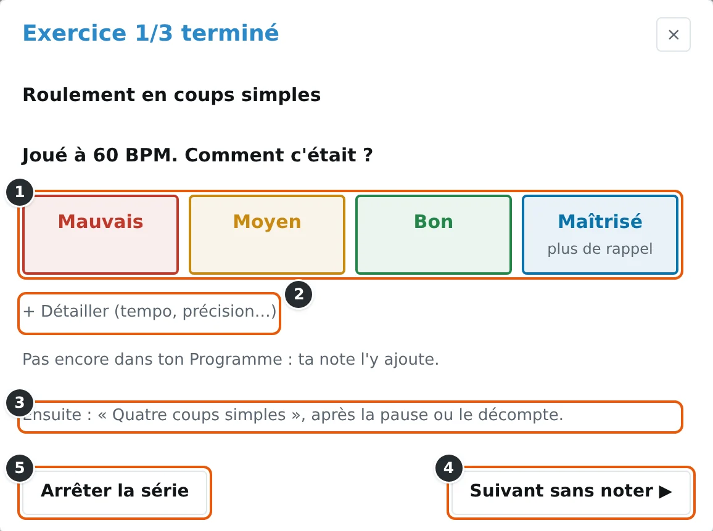
- Mauvais, Moyen, Bon, Maîtrisé : les mêmes notes que dans le Programme, avec le prochain rappel et son tempo. Un clic note l'exercice et lance la suite. Un exercice qui n'est pas encore dans ton Programme y entre.
- Détailler : une note par critère (tempo, précision…), comme dans l'évaluation.
- Ce qui vient ensuite : l'exercice suivant, après la pause ou le décompte.
- Suivant sans noter : la suite, sans rien noter.
- Arrêter la série (ou Échap) : rien n'est noté, la série attend ; dans le tableau, ▶ reprend à l'exercice suivant.
La même case existe dans Enchaîner (une leçon) et dans la barre Entraînement : c'est le même réglage.
La setlist de la séance
Dans l'appli Teach, avant un cours, on rassemble ce qui est prévu pour ses élèves : ce qu'ils ont à travailler, ce qui a été préparé pour ce cours-là. La séance le fait pour toi : c'est la setlist de la prochaine séance du planning (celle en cours, sinon la suivante), un cours seul ou un cours de groupe.
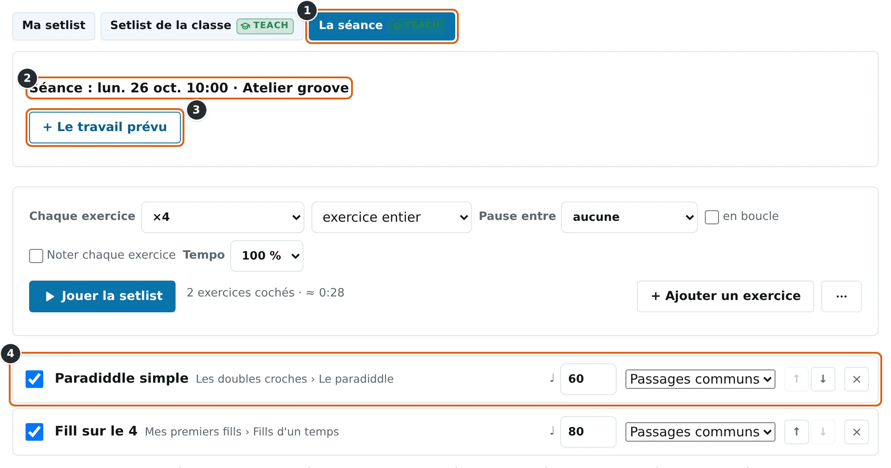
- La séance.
- Laquelle : le jour, l'heure, l'élève ou le groupe.
- + Le travail prévu : ce qui est prévu pour ses élèves (préparé pour ce cours, puis leur liste À travailler), sans doublon.
- Les exercices, à jouer, projeter ou imprimer comme dans les autres setlists.
+ Setlist, n'importe où dans l'appli, propose aussi la séance. Une fois la séance passée, la setlist le signale : Passer à la prochaine séance repart du travail prévu pour la suivante.
Le mode lecture
À la batterie, le téléphone posé sur un pupitre, les commandes prennent de la place et les notes sont petites. Le mode lecture affiche la partition seule, en grand, et suit la lecture. Pour sortir : le bouton retour du téléphone, Échap ou ✕.
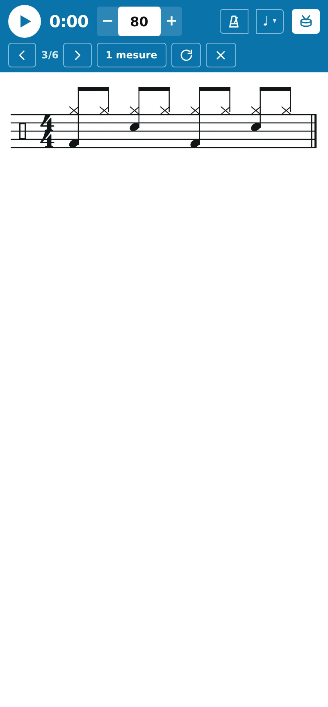
Dans le mode lecture :
- Métronome et Batterie restent à portée de main (les deux petites icônes) ;
- 1 mesure (sur téléphone) : combien de mesures par ligne. Une mesure entière se lit d'un coup d'œil ; une demi-mesure donne des notes plus grandes. En portrait, le bouton passe de 1 mesure à ½ mesure ; en paysage, de 2 mesures à 1 mesure. Le choix est retenu pour chaque orientation (aussi dans Réglages › Affichage) ;
- ◀ et ▶ passent à l'exercice précédent ou suivant sans quitter le plein écran ; « 3/9 » indique où tu en es. Les flèches du clavier et une pédale tourne-page Bluetooth font la même chose : tu changes d'exercice sans lâcher les baguettes ;
- si tu viens de jouer un exercice de ton programme, l'appli demande d'abord « Avant de passer à la suite : comment c'était ? ». Un clic, et ton suivi est à jour ; Plus tard passe sans noter. La question ne vient qu'en passant à l'exercice précédent ou suivant, pas en quittant par ✕ ou Échap.
Pour corriger ta posture, regarde-toi jouer : le miroir te montre sous plusieurs angles, et en différé.
Variantes et notes perso
- Créer une variante ouvre l'exercice dans l'atelier pour le modifier : une grosse caisse en plus, un autre doigté… Ta variante s'affiche ensuite sous l'exercice d'origine, avec les notes modifiées en couleur, pour voir d'un coup d'œil ce qui change.
- Note ajoute ton propre texte sous la partition : un doigté, un rappel, le nom du morceau où tu as entendu ce groove.
La légende
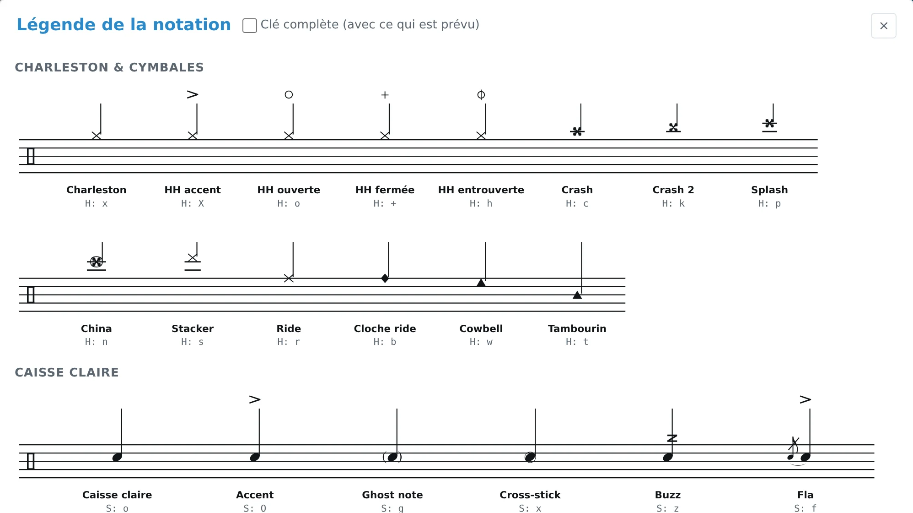
Légende (dans le menu, ou dans chaque lecteur) explique chaque symbole de la partition : têtes de notes de chaque instrument, accents, ghost notes, flas, drags, buzz, coups au pad. Un clic sur un symbole fait entendre son son.
Les partitions suivent la clé standard moderne : charleston et cymbales en croix au-dessus de la portée, caisse claire sur le troisième interligne, grosse caisse en bas. Clé complète, en haut de la légende, montre aussi les symboles prévus mais pas encore disponibles. Tous les symboles, avec le code à taper en notation texte, sont dans La clé de batterie. Si tu as l'habitude de GrooveScribe, Réglages › Affichage › Gravure des partitions reprend ses conventions.
Chapitre 5Partie II · Les outils de base
L'éditeur de grille
Partout où l'appli te laisse écrire du rythme (un groove dans l'atelier, un exercice de leçon, une variante, le groove du métronome, le tableau d'un cours), c'est la même grille. Ce chapitre l'explique une fois pour toutes ; les autres chapitres renvoient ici.
Pourquoi une grille ?
La grille rend le rythme visible : chaque ligne est un instrument, chaque colonne une subdivision du temps (une double croche, une croche de triolet…). Une case remplie, c'est un coup. Tu vois où tombe chaque coup par rapport aux temps, tu l'entends dès que tu le poses, et l'appli écrit la partition pour toi : pas besoin de savoir écrire la musique pour noter un groove juste.
Pour qui préfère le clavier, la même partition existe aussi en texte (voir Grille ou texte).
L'éditeur en un coup d'œil
Ce qui sert à chaque note tient dans une seule barre, au-dessus de la grille. Ce qui sert de temps en temps (la forme du groove, l'aide, les instruments) attend derrière un bouton ou sous la grille : la grille garde toute la place.
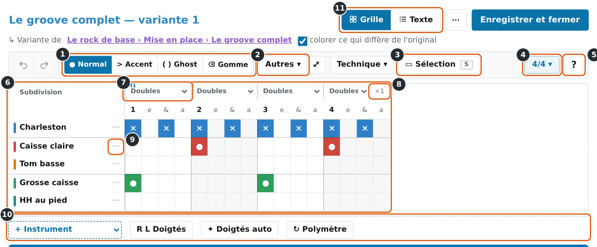
- Les pinceaux de tous les jours : Normal, Accent, Ghost et la Gomme, après Annuler / Rétablir.
- Autres : tous les pinceaux (Fla, Drag, Buzz, Ouvert, Fermé…) et les frappes rares. Quand l'un d'eux est pris, le bouton s'allume et montre son symbole. Juste à côté, ⤢ les déplie tous dans la barre, pour un groove qui en change souvent : avec leur nom s'il y a la place, sinon leur symbole seul (le nom s'affiche au survol, ou par un appui long au doigt). ⤡ les replie.
- Sélection (S) : encadrer des notes pour les copier ou les décaler (voir Sélectionner, copier, décaler).
- La puce du pattern (« 4/4 · Doubles · 1 mesure · ♩ 90 ») : la forme du groove d'un coup d'œil ; un clic l'ouvre pour la changer.
- ? : les raccourcis clavier et le mode d'emploi de la grille.
- La grille : une ligne par instrument, une case par subdivision. Les temps (1, 2, 3, 4) sont numérotés au-dessus.
- La subdivision de chaque temps : croches, triolets, doubles, sextolets… Chaque temps peut avoir la sienne.
- Reprise ×N : la mesure se joue plusieurs fois avant la suivante.
- ⋯, au bout du nom d'un instrument : l'écouter, lui donner un polymètre, le masquer.
- Sous la grille : + Instrument, les doigtés et le polymètre.
- Grille / Texte : la même partition, en cases ou en notation texte.
Sur téléphone
Sur un téléphone, la grille de la page sert d'aperçu : le doigt y fait défiler la page, et la grille de côté, sans jamais poser de note. Pour écrire, touche la grille : l'éditeur s'ouvre en grand, sur la mesure touchée (voir L'éditeur en grand, au doigt). Les outils qui restent sur la page passent dans un dock en bas de l'écran, sous le pouce.
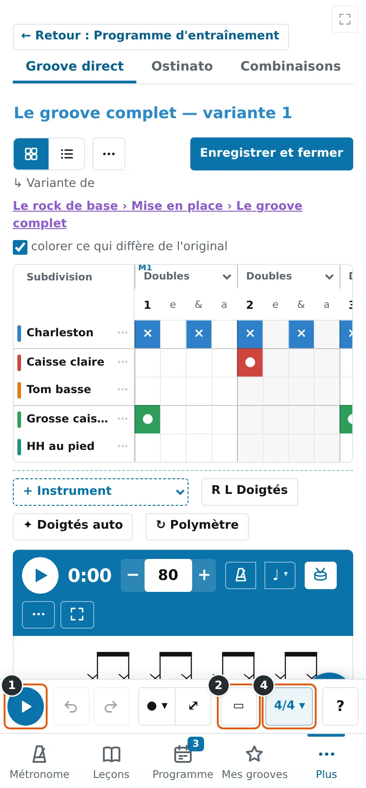
- ▶ : écouter le groove, ou l'arrêter. Juste après, Annuler / Rétablir.
- Sélection.
- Éditer en grand : l'éditeur plein écran, sur la mesure que tu vois.
- La puce du pattern (sa signature) ouvre ses réglages ; au bout, ? pour l'aide.
Les fenêtres de ces boutons montent du bas de l'écran. Pendant une sélection, ses actions prennent la place des outils dans le dock.
L'éditeur en grand, au doigt
Sur un petit écran, des cases de la taille d'un ongle se touchent mal, et le doigt hésite entre poser une note et faire défiler. L'éditeur en grand règle les deux : il prend tout l'écran, se met en paysage et ne montre qu'une mesure à la fois, en grandes cases.
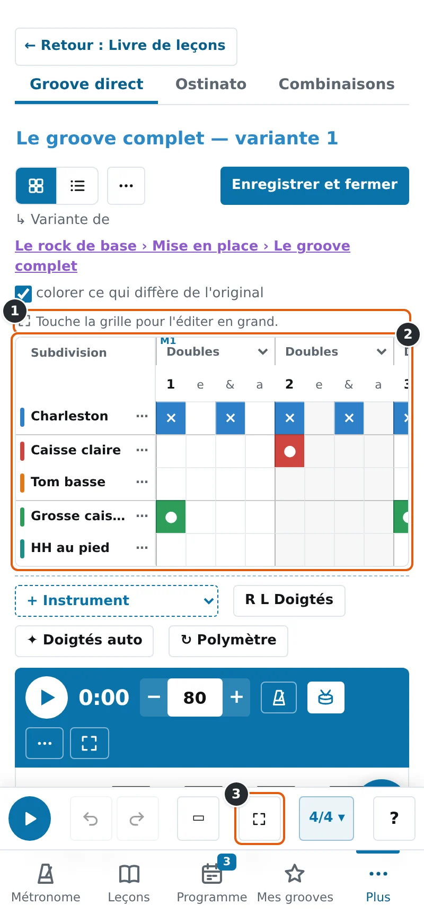
- Une ligne le rappelle au-dessus de la grille.
- La grille de la page : un toucher ouvre l'éditeur en grand sur la mesure touchée ; glisser la fait défiler, de côté ou avec la page.
- Éditer en grand, dans le dock : l'éditeur en grand sur la mesure que tu vois. Sur une tablette ou un ordinateur, le même bouton est dans la barre de la grille.
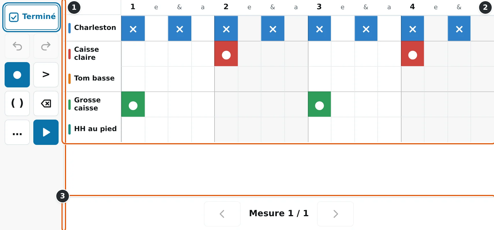
- Les outils : Terminé (revenir à la page), Annuler, Rétablir, les quatre pinceaux (normal, accent, ghost, gomme), … pour les frappes plus rares, et ▶ pour écouter.
- La mesure en grandes cases : toucher une case pose la note du pinceau, ou la retire ; glisser le long d'une ligne pose sur toutes les cases traversées ; glisser vers le haut ou le bas fait défiler les lignes ; un appui long ouvre les variantes de la note.
- ◀ ▶ : la mesure précédente ou suivante (« Mesure 2 / 4 ») ; une mesure trop longue pour l'écran se coupe en parties de temps entiers. Pendant l'écoute, la page suit la tête de lecture.
Ce que tu fais en grand est dans la grille de la page, et Annuler le défait encore après la fermeture. Le bouton Retour du téléphone ferme l'éditeur sans quitter la page. Si l'écran ne tourne pas, l'éditeur tient en portrait : deux temps à la fois, et une ligne propose de tourner le téléphone.
Poser et retoucher des notes
- Choisis un pinceau, puis clique dans une case : la note est posée et tu l'entends. Un clic sur une note existante avec le pinceau Normal l'efface ; avec un autre pinceau, elle prend son articulation.
- Glisse pour peindre plusieurs cases d'un coup. Avec la Gomme, glisse pour effacer.
- Les touches 1 à 9 changent de pinceau, y compris ceux rangés dans Autres ; E prend la gomme. Le curseur montre le pinceau en cours.
- Pour changer une note sans changer de pinceau : un clic droit (ou Maj+clic) passe à l'articulation suivante ; un clic droit tenu ouvre le menu de toutes ses variantes (accent, ghost, rimshot, entrouverte…) et Effacer la note.
- Dans Autres, la liste Autres… donne les frappes moins courantes : rimshot et charleston entrouvert.
- Un clic sur le nom d'un instrument le fait entendre (son ⋯ propose aussi Écouter).
- ↶ ↷ (Ctrl+Z, Ctrl+Y) annulent et rétablissent ; un coup de pinceau glissé compte pour une seule étape.
Mesures, subdivisions et instruments
La forme d'un groove se règle rarement, mais il faut la voir tout le temps : la puce du pattern la résume, et un clic l'ouvre.
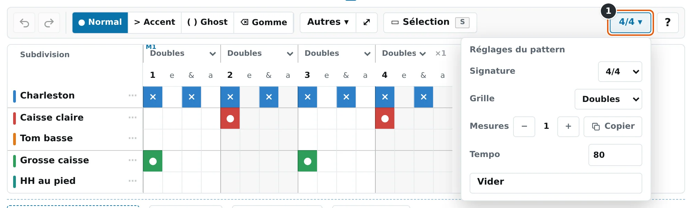
- Signature : 4/4, 3/4, 6/8, 7/8…
- Grille : la subdivision de tous les temps d'un coup (croches, doubles, triolets…). Ensuite, le petit menu au-dessus de chaque temps la change pour ce temps seul : des doubles croches sur les temps 1 et 2, un triolet sur le 3, dans la même mesure.
- Mesures : − retire la dernière, + ajoute une mesure vide, Copier ajoute une copie de la dernière : pratique pour écrire une variation sur la mesure 2 sans tout réécrire.
- Tempo : le tempo du groove. Vider efface toutes les notes (après confirmation).
Un clic à côté, ou Échap, referme la fenêtre. Dans la grille même, le menu ×1 à la fin de chaque mesure la fait jouer de ×2 à ×16 avant la suivante (Reprise ×N) ; la partition l'écrit avec des barres de reprise.
Sous la grille, les instruments et les doigtés :
- + Instrument : ride, cloche, crash, splash, china, cowbell, tambourin, toms (jusqu'à six), deuxième grosse caisse, pad d'entraînement… Une ligne vide se masque d'un clic, ou par son ⋯.
- R L Doigtés affiche une ligne de doigtés (mains R / L, pieds K / F) ; Doigtés auto la remplit : mains alternées, R sur les temps.
- Polymètre répète une figure de N cases sur toute la ligne, qui glisse alors sur la mesure ; le ⋯ d'une ligne l'ouvre directement pour cet instrument. Voir Polyrythmes et polymètres.
Sélectionner, copier, décaler
Une fois les notes posées, on retravaille souvent par morceaux : copier un temps sur le suivant, déplacer une figure d'une double croche, passer la caisse claire sur un tom. La sélection fait tout cela sans réécrire les notes.
Prends l'outil Sélection (S) et glisse dans la grille pour encadrer des notes. Plus rapide : un clic sur un temps (1, 2…) ou une mesure (M1…) dans l'en-tête le sélectionne ; Maj+clic agrandit la sélection. Tant qu'une sélection est faite, ses actions prennent la place de la barre d'outils :
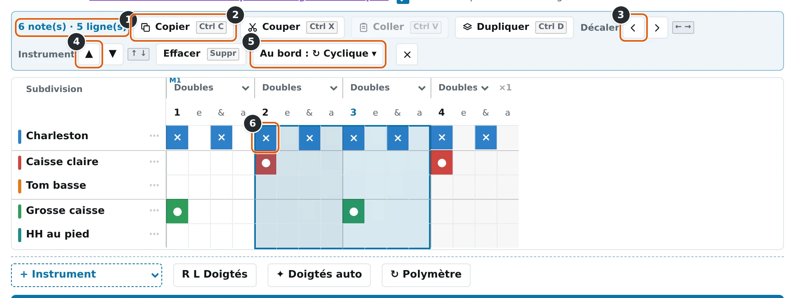
- Ce qui est sélectionné : le nombre de notes et de lignes.
- Copier, Couper, Coller, Dupliquer : le collage remplace le contenu du cadre ; Dupliquer recopie juste après. Une seule ligne copiée se colle sur l'instrument sélectionné : c'est ainsi qu'on passe la caisse claire sur un tom. On peut aussi coller dans un autre éditeur (d'un exercice vers sa variante).
- Décaler ◀ ▶ (← →, avec Maj : d'un temps entier) : les notes bougent dans le cadre.
- Instrument ▲ ▼ (↑ ↓) : les notes passent sur l'instrument du dessus ou du dessous.
- Au bord : ce que deviennent les notes qui sortent du cadre en décalant : Cyclique (elles reviennent de l'autre côté, idéal pour « faire tourner » une figure), Bloquer, Couper ou Étendre (le cadre s'agrandit).
- Le cadre : glisse-le ailleurs pour déplacer les notes ; avec Ctrl ou Alt, elles sont copiées.
Effacer (Suppr) vide le cadre ; ✕ (Échap) désélectionne et ramène les outils. Ctrl+A sélectionne tout.
Grille ou texte
▦ Grille / ≡ Texte montre la même partition en notation texte : une ligne par instrument (H charleston, S caisse claire, K grosse caisse…), un caractère par case, - pour une case vide et | entre les mesures.
4/4 @90 div=16
H: x-x-x-x-x-x-x-x-
S: ----o-------o---
K: o-------o-------
C'est utile pour copier un groove dans un message, le coller depuis un autre logiciel, ou l'écrire vite au clavier. Ce que tu changes d'un côté se retrouve de l'autre. Le caractère de chaque note (par exemple S: g pour une ghost note à la caisse claire) est indiqué sous chaque symbole dans La clé de batterie.
Où tu le retrouves
| Où | Pour quoi | Chapitre |
|---|---|---|
| Atelier › Groove direct | écrire un groove à toi, de zéro ou à partir d'un exercice | L'atelier |
| Sous un exercice : Créer une variante | modifier un exercice sans toucher l'original | Jouer un exercice |
| Une leçon en Détail : Éditer la partition | écrire ou corriger les exercices de tes leçons | Créer une leçon |
| Métronome, mode Groove : Modifier le groove | griffonner un groove qui tourne à la place des clics | Le métronome |
| Atelier pro : la composition | composer avec des morceaux d'autres grooves | L'atelier |
| Cours : Composer en direct (édition Teach) | construire un groove devant les élèves | Les cours en direct |
Dans Groove direct, ton travail en cours est gardé tout seul : il revient en rouvrant l'outil. Quand tu modifies un groove déjà enregistré, un exercice ou une variante, Enregistrer et fermer garde les changements ; si tu fermes l'appli avant, elle te prévient. Comment enregistrer un nouveau groove : L'atelier.
Cette présentation rangée est celle de Groove direct et des leçons. Le métronome, les cours en direct, les séries et l'enregistrement gardent la barre complète, tous les outils dépliés : ce sont les mêmes, à la même place qu'avant. L'interface classique (Réglages › Démarrage › Interface) garde partout la barre complète.
Chapitre 6Partie III · S'entraîner
Le livre de leçons
Le livre range les exercices comme un manuel : des thèmes (les rayons), des leçons dans chaque thème, des parties dans chaque leçon, et des exercices dans chaque partie, avec leurs tempos, leurs notes et leurs variantes. L'appli est livrée avec des leçons ; tu peux en créer, en recevoir d'un prof et en partager.
Parcourir le livre
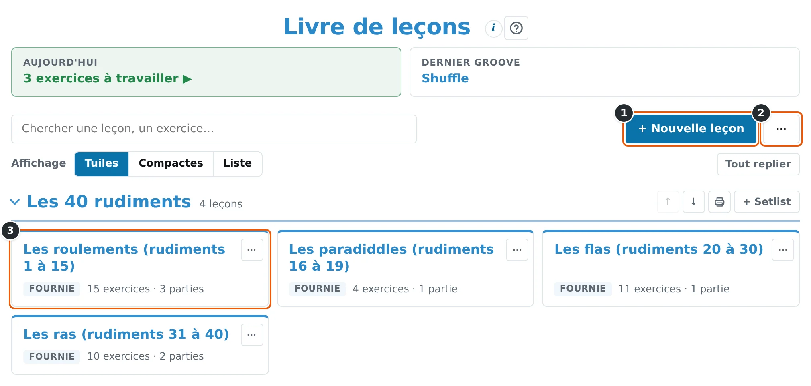
- Nouvelle leçon : une leçon vide, prête à remplir (voir Créer une leçon).
- ⋯ : Nouveau thème (un nouveau rayon pour ranger des leçons), Importer des leçons (un fichier
.sklessonsreçu d'un prof ou d'un ami) et Exporter mes leçons. - Un clic sur une carte ouvre la leçon.
Chaque leçon a une origine, qui dit ce que tu peux en faire :
| Origine | Ce qu'on peut en faire |
|---|---|
| Fournie | livrée avec l'appli. Elle ne se modifie pas, pour rester identique pour tout le monde : tu peux la Masquer (elle se rétablit en bas de page) ou la Dupliquer pour modifier (sur sa page). |
| Perso | la tienne : tout est modifiable. |
| Importée | reçue d'un fichier ; modifiable comme une leçon perso. Quand le prof envoie une nouvelle version du même fichier, elle se met à jour ; si tu l'avais modifiée, l'appli te demande quoi garder. |
Affichage, en haut du livre, choisit la présentation : Tuiles (une par leçon : nom, sous-titre, nombre d'exercices et progression), Compactes (plus petites : plus de leçons à l'écran) ou Liste (une ligne par leçon). Un clic sur le nom d'un thème le replie ou le déplie ; Tout replier ne laisse que les thèmes, pour s'y retrouver d'un coup d'œil. Le ⋯ d'une leçon la modifie, la duplique, la range dans un autre thème, la monte ou la descend, l'exporte, l'imprime, la masque ou la supprime.
Les 40 rudiments
Les rudiments sont les gestes de base du batteur, comme les gammes pour un pianiste : grooves et breaks en sont faits. Le thème Les 40 rudiments, fourni avec l'appli, réunit les 40 rudiments internationaux de la Percussive Arts Society (PAS), dans leur ordre officiel, en quatre leçons : Les roulements (1 à 15), Les paradiddles (16 à 19), Les flas (20 à 30) et Les ras (31 à 40).
Chaque exercice est écrit pour le pad, avec le doigté au-dessus des notes (R : droite, L : gauche), des tempos conseillés (départ, stable, cible) et une consigne courte. Son nom anglais et son numéro PAS ouvrent la consigne : pratique pour les retrouver dans une méthode ou une fiche de rudiments. Comme les autres exercices, ils vont dans le programme, dans une liste ou sur une feuille à imprimer.
Trouver un exercice
Le Sommaire, en tête du menu, montre tout le livre en arbre : thèmes, leçons, parties, exercices. C'est le plus rapide pour aller à un exercice précis, de n'importe où dans l'appli.
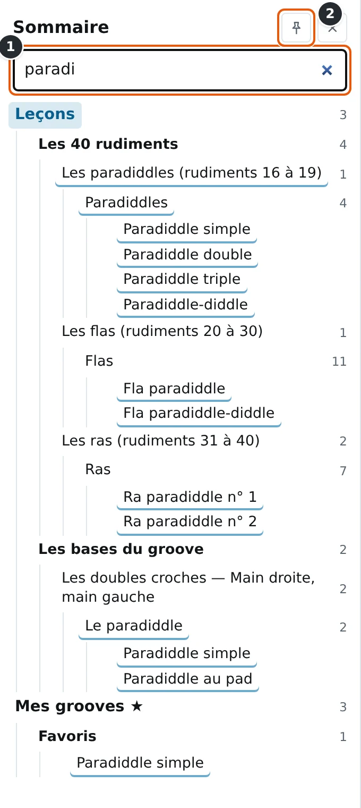
- Recherche : tape quelques lettres (un nom, « paradiddle », « 6/8 »), l'arbre ne garde que ce qui correspond.
- Épingler à gauche : le sommaire reste ouvert à côté de la page, pour passer d'un exercice à l'autre.
Lire une leçon
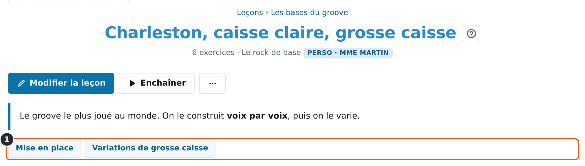
- Le sommaire de la leçon mène directement à chacune de ses parties.
En haut de la leçon, Toute la leçon au programme ajoute tous ses exercices au programme d'un coup, et ▶ Enchaîner les joue à la suite (voir plus bas).
Une leçon qui a beaucoup d'exercices et de variantes se lit mieux en lignes condensées :
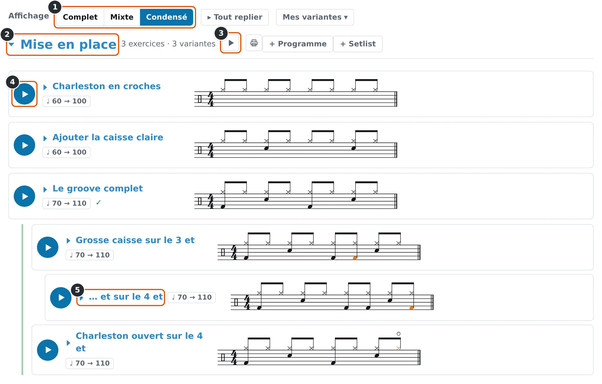
- Affichage : Complet (un lecteur par exercice et par variante), Mixte (exercices en grand, variantes en lignes) ou Condensé (tout en lignes). Le choix est retenu.
- Un clic sur le titre d'une partie la replie ou la déplie. Tout replier / Tout déplier agit sur toutes les parties ; les parties repliées le restent à la prochaine visite.
- ▶ à côté d'une partie l'enchaîne ; l'icône d'imprimante l'imprime.
- Une ligne : ▶ joue l'exercice, avec son nom, ses tempos et ses notes. Un clic sur le nom ouvre la carte complète (lecteur, notes, actions) ; ▾ la referme.
- Les variantes de variantes sont en retrait sous leur variante d'origine, avec les notes changées en couleur.
Enchaîner les exercices
Un échauffement, une routine de rudiments, toutes les variantes d'un groove : Enchaîner joue une suite d'exercices sans que tu touches l'appli. Chaque exercice passe le nombre de fois choisi, puis le suivant démarre, au même tempo. Tu gardes les baguettes en main du début à la fin.
▶ Enchaîner est en haut d'une leçon, à côté de chaque partie, et sur un exercice qui a des variantes (Enchaîner avec ses variantes).
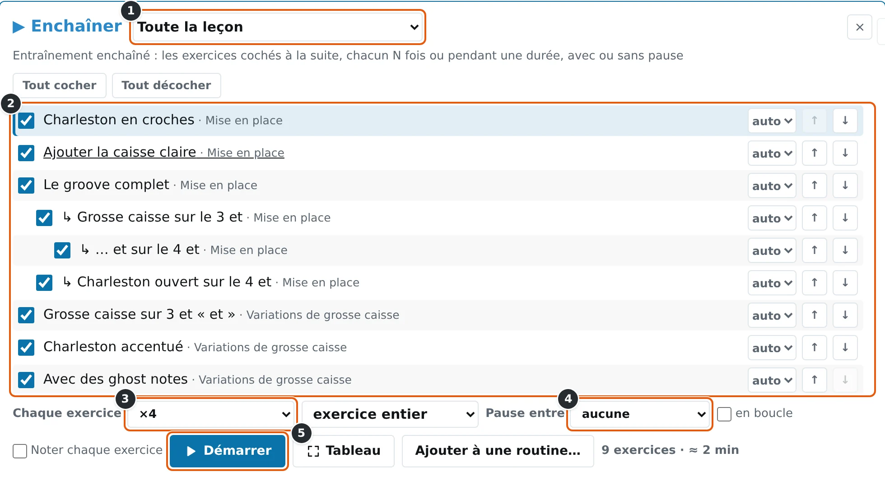
- Quoi : toute la leçon, une partie, ou un exercice et ses variantes.
- La liste : coche ce que tu veux jouer, range-le avec ↑ ↓. auto peut être remplacé par un nombre de passages propre à un exercice.
- Chaque exercice : de ×1 à ×50 passages (×… autre nombre pour en choisir un autre), ou une durée de 30 s à 10 min (autre durée… pour la tienne). À côté : l'exercice entier, ou chaque mesure 2 à 8 fois avant la suivante.
- Pause entre : aucune, ou 1 à 2 mesures où seul le clic continue, le temps de lire l'exercice suivant.
- Démarrer : le décompte, puis les exercices à la suite. En boucle recommence au début.
À côté de la liste, l'aperçu joue ce que tu as coché, comme le fera l'enchaînement : les passages, les durées, la pause entre. ‹ › passent d'un exercice coché à l'autre, et un clic sur un nom le montre. Rien de coché : la portée reste vide, et la lecture attend.
Au départ, le tableau s'ouvre en plein écran : une ligne par exercice, avec sa partition. Celle qui joue est mise en évidence, avec la tête de lecture et des pastilles pour les passages (l'avant-dernière jaune, la dernière rouge). Le décompte s'affiche dans un anneau autour de ▶ et dans le chrono, sans rien faire bouger. En haut, la barre de lecture habituelle : ▶ / ⏸, le chrono, le tempo, Métronome et Batterie. Un clic sur une ligne y saute. Fermer le tableau ne coupe pas la lecture.
À la fin, ★ Évaluer (dans la barre du tableau) note toute la série d'un coup, au lieu d'exercice par exercice : voir Évaluer toute une série. Tu préfères noter chaque exercice juste après l'avoir joué ? Coche Noter chaque exercice : la lecture s'arrête à la fin de chacun et te le demande, avant la pause et le décompte du suivant (voir Noter chaque exercice).
Les choix (cases, ordre, réglages) sont gardés pour chaque leçon. Les listes de Mes grooves et les résultats de l'atelier ont le même Entraînement, avec les mêmes réglages.
Créer une leçon
Une leçon perso sert à organiser ton propre travail, ou, pour un prof, à préparer un cours et le donner aux élèves. Tout s'enregistre automatiquement.
- Nouvelle leçon, puis donne un titre. L'éditeur s'ouvre.
- Remplis le haut de la fiche, puis ajoute des parties et des exercices :
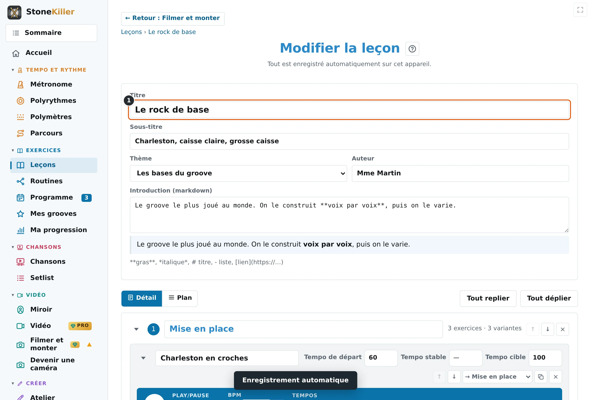
Titre, sous-titre, thème, auteur et introduction (en markdown : gras, italique, listes, liens).
✦ Créer avec l'atelier… : choisis un outil (Groove direct, Ostinato, Combinaisons, Enregistrer, Polyrythmes, Polymètres) pour créer des exercices directement dans cette partie (voir plus bas).
+ Exercice : un exercice vide, à écrire dans la grille (Éditer la partition) ou En texte.
+ Partie : une nouvelle partie de la leçon.
Pour chaque exercice, donne ses tempos et des notes (voir ci-dessous). À droite de son nom : ↑ ↓ pour le déplacer, le menu → partie pour l'envoyer dans une autre partie, Dupliquer et ✕.
Voir la leçon pour la jouer.
Les tempos d'un exercice
Chaque exercice peut prévoir trois tempos, qui deviennent des puces en un clic dans le lecteur et règlent le programme de qui le travaille :
- Départ : le tempo de la notation, où commencer ;
- Stable : le tempo à tenir facilement, sans faute, pour que l'exercice soit acquis. Le programme propose Maîtrisé quand il est atteint ;
- Cible (facultative) : plus loin que le tempo stable, pour pousser ceux qui avancent vite.
Tu peux aussi décider si le métronome est allumé au lancement : éteint, par exemple, pour un exercice à jouer sur un morceau.
Plan et repliage
Une longue leçon se réorganise plus vite en ☰ Plan qu'en ▤ Détail (les deux boutons au-dessus des parties ; le choix est retenu).
- Détail : tout s'édite. Le chevron ▾ à gauche d'une partie ou d'un exercice le replie : l'exercice garde sa ligne (nom, tempos, outils) et cache sa partition, ses notes et ses variantes.
- Plan : une ligne par partie et par exercice, avec ses tempos Départ, Stable et Cible et le métronome au lancement. Sous le titre de chaque partie, Toute la partie donne d'un coup un tempo stable, une cible ou le métronome à tous ses exercices : pratique pour régler une partie entière d'échauffements à 80 BPM. Glisse la poignée ⠿ pour changer l'ordre, aussi d'une partie à l'autre ; lâcher un exercice sur le titre d'une partie repliée l'y range. ✎ ouvre l'exercice en détail.
Variantes de variantes
Une variante peut avoir ses propres variantes, pour construire une progression. Exemple : le paradiddle ; une variante avec une grosse caisse ; une sous-variante où elle se déplace ; une autre variante avec deux grosses caisses…
- ↳+ sur une variante crée une sous-variante à partir d'elle (nommée « 1.1 », « 1.2 »…).
- Le menu ↳ (« dérivée de ») rattache une variante à l'exercice ou à une autre variante.
- Supprimer une variante fait remonter ses sous-variantes d'un niveau.
- Les notes changées sont colorées par rapport à la variante d'origine, et non à l'exercice.
Partir d'un groove existant
Plutôt que de partir d'une grille vide, reprends un groove proche de ce que tu veux. Partir d'un groove existant… (sous chaque partie) et Variante d'un autre groove… (sous les variantes d'un exercice) ouvrent un choix visuel :
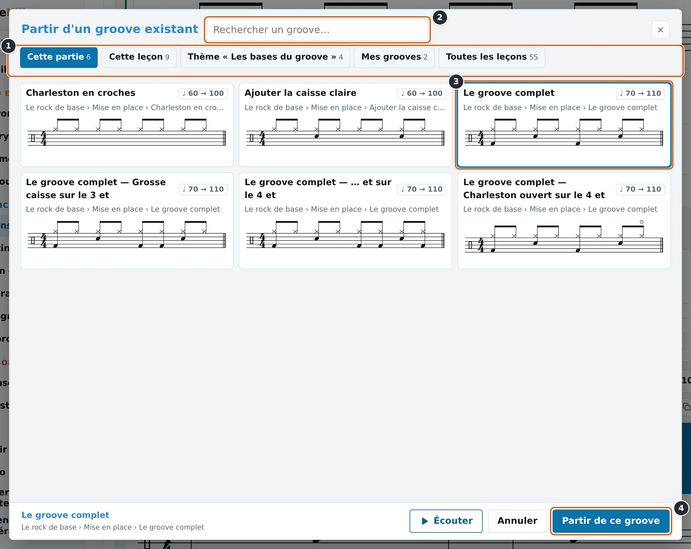
- Les onglets, du plus proche au plus large : cet exercice, cette partie, cette leçon, le thème, Mes grooves, toutes les leçons.
- Rechercher dans toutes les sources à la fois.
- Un clic sur une vignette la choisit et la fait écouter ; un double-clic la prend directement.
- Partir de ce groove : le nouvel exercice (ou la variante) commence avec ce groove, prêt à modifier.
Créer avec l'atelier
Depuis l'éditeur, Créer avec l'atelier ouvre l'outil choisi, relié à la leçon : ce que tu crées y arrive directement.
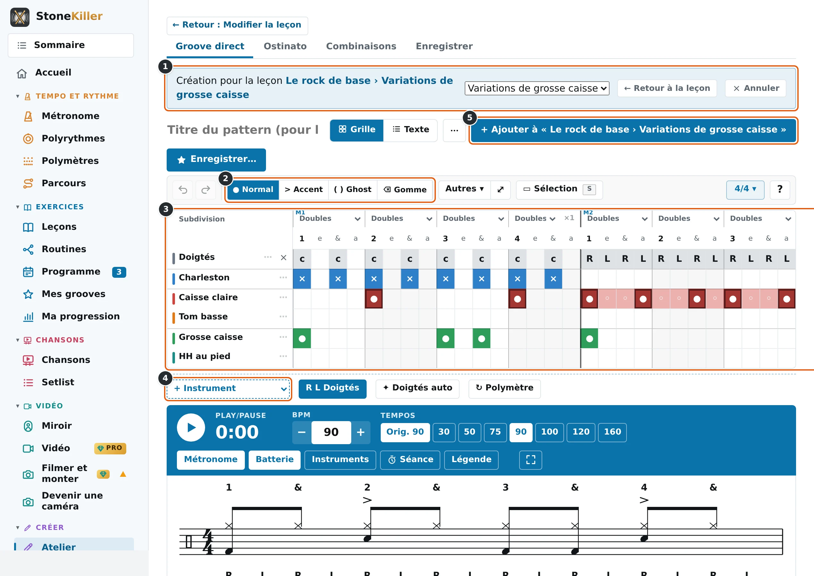
- Le bandeau rappelle la leçon visée. Son menu partie choisit où vont les exercices, ou crée une ＋ Nouvelle partie…. Retour à la leçon ou Annuler à tout moment.
- Les pinceaux : le son posé au clic (normal, accent, ghost ; fla, drag… dans Autres).
- La grille : un clic pose une note, un autre l'efface.
- + Instrument, sous la grille : ajoute une ligne (ride, cloche, crash, toms, pad…).
- Ajouter à « … » : l'exercice rejoint la leçon et tu reviens dans l'éditeur.
Ostinato et Combinaisons produisent toute une série : tu restes dans l'atelier, et la ligne Leçon des résultats a le même menu partie. L'atelier est détaillé dans L'atelier.
Partager des leçons
- Sur la carte d'une leçon, Exporter crée un fichier
.sklessons. Exporter mes leçons, dans le menu ⋯ en haut de la page, exporte d'un coup toutes tes leçons perso et importées. - Envoie le fichier comme tu veux (message, e-mail, clé USB). L'élève l'ouvre avec Importer des leçons, ou d'un double-clic.
- Si le prof envoie une nouvelle version, l'importer met à jour la leçon importée ; en cas de différence, la fenêtre d'import demande quoi garder (voir Ouvrir un fichier). Une leçon perso n'est jamais écrasée : un fichier qui porte la même leçon arrive en copie.
Les exercices fournis restent dans l'appli
Les leçons fournies avec l'appli sont faites pour être travaillées ici, pas pour circuler en dehors. Dans l'appli, tu fais tout avec elles : les jouer, les copier, en faire des variantes, les imprimer pour toi. Seuls les fichiers exportés changent.
- Dans un fichier exporté (leçons, sauvegarde complète, registre des élèves), un exercice fourni, sa copie, ou une variante qui en garde l'essentiel est scellé : une autre appli StoneKiller l'ouvre tel quel, un éditeur de texte n'y lit rien. Ton travail à toi reste lisible.
- « L'essentiel », c'est l'exercice recopié (ou presque), ou plus de la moitié de ce qui le distingue : ses syncopes, ses ghost notes placées, ses fills. Le matériau commun à tous les grooves (charleston en croches, caisse claire sur 2 et 4, grosse caisse sur 1 et 3) n'est à personne : un rock de base que tu écris reste à toi. Quand ta variante s'éloigne de la figure de l'original, c'est ta création : elle sort lisible.
- Dans l'atelier, le mode Texte ne montre pas la notation d'un tel exercice : modifie-le dans la grille.
- À l'impression, le bas des pages porte « © … — usage personnel ».
Pendant un cours en direct, le prof peut aussi projeter n'importe quel exercice chez les élèves, sans fichier.
Chapitre 7Partie III · S'entraîner
Le programme d'entraînement
Le Programme répond chaque jour à la question « qu'est-ce que je travaille aujourd'hui, et à quel tempo ? ». Il rassemble les exercices que tu travailles, se souvient de ton tempo pour chacun et te les représente au bon moment. Plus un exercice est réussi, plus ses rappels s'espacent ; un exercice difficile revient vite. C'est la répétition espacée : la même méthode que pour apprendre du vocabulaire, appliquée aux baguettes.
Pourquoi un programme ?
Sans programme, on rejoue ce qu'on aime et on oublie ce qui est difficile. Le programme corrige ces deux travers :
- ce qui est acquis s'efface peu à peu : un exercice noté Bon plusieurs fois revient de plus en plus rarement, pour vérifier qu'il tient ;
- ce qui résiste revient vite, un peu plus lentement, jusqu'à ce que ça passe ;
- le tempo monte tout seul : chaque Bon le rapproche du tempo visé, par petits paliers.
Quinze minutes par jour sur le programme valent mieux qu'une heure le dimanche.
Ajouter des exercices
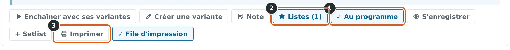
- + Programme : ajoute l'exercice, avec les tempos prévus par la leçon. Le bouton devient ✓ Au programme ; un nouveau clic propose de le retirer (son historique est alors perdu).
- Ajouter à une liste : le ranger dans une liste de Mes grooves, sans le programmer.
- Imprimer : une feuille avec cet exercice seul.
En haut d'une leçon, Toute la leçon au programme ajoute tous ses exercices d'un coup ; en tête d'une partie, + Programme ajoute ceux de la partie seulement. Ce qui y est déjà n'est pas ajouté deux fois. Les devoirs donnés par le prof pendant un cours en direct arrivent tout seuls.
Le programme du jour
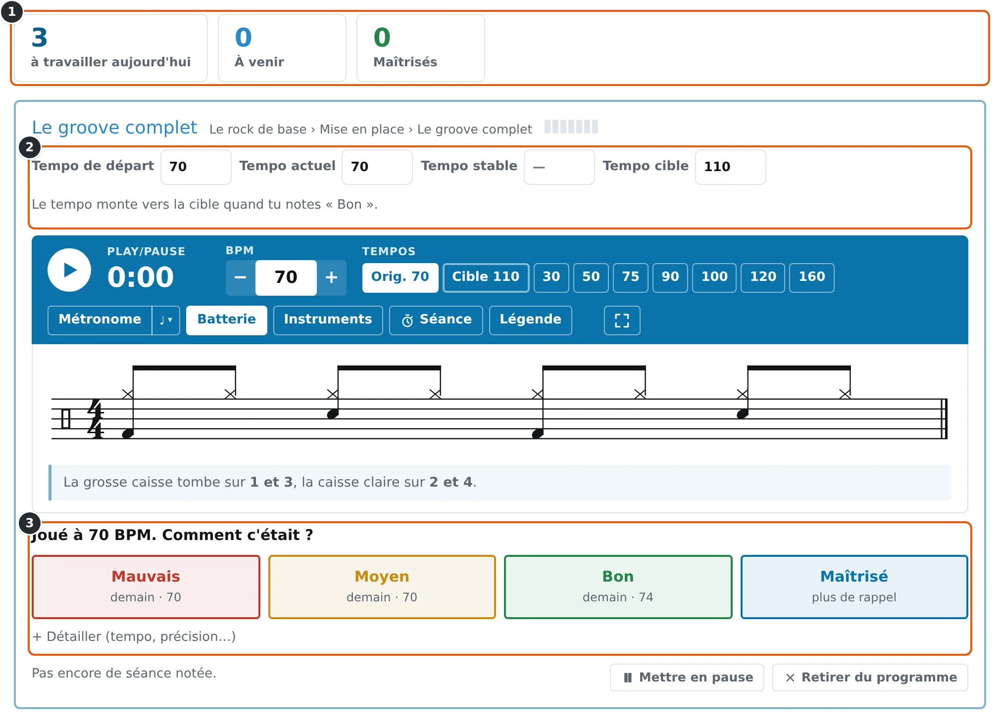
- Les compteurs : à travailler aujourd'hui, À venir (programmés pour plus tard), Maîtrisés (sans rappel).
- Les tempos de l'exercice : Tempo de départ, là où tu as commencé ; Tempo actuel, celui où tu travailles aujourd'hui (le lecteur démarre à ce tempo) ; Tempo stable et Tempo cible, ce que tu vises (voir plus bas). Tu peux les changer ici.
- Comment c'était ? : ta note, une fois l'exercice joué. Elle règle le prochain rappel et le prochain tempo. Sous chaque bouton, l'appli annonce ce qui va se passer (« demain · 70 »).
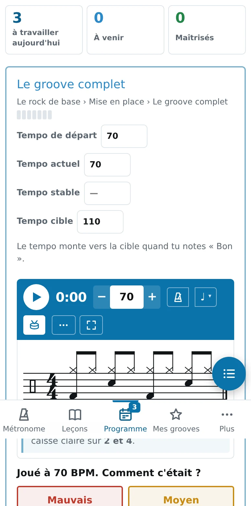
Le déroulé d'une séance : joue l'exercice du haut, note-le, passe au suivant. Quand la liste du jour est vide, tu as fini.
Ce que fait chaque note
| Note | Prochain rappel | Tempo de la prochaine fois |
|---|---|---|
| Mauvais | demain | 10 % plus lent (jamais sous le tempo de départ) |
| Moyen | même délai que la dernière fois | inchangé |
| Bon | plus tard : 1, 2, 4, 7, 14, 30 puis 60 jours | environ 5 % plus rapide, vers le tempo visé |
| Maîtrisé | plus de rappel | – |
Tant que le tempo monte encore, les rappels restent rapprochés (4 jours au plus). Quand tu tiens le tempo visé depuis plus d'une semaine, l'appli propose de passer l'exercice en Maîtrisé.
Pour aller plus loin que ces quatre boutons (noter le tempo, la précision, les nuances… séparément), voir Évaluation et progression.
Tempo stable et tempo cible
Deux tempos disent où va l'exercice :
- le tempo stable est celui à tenir facilement, sans faute, pour que l'exercice soit acquis. Quand tu l'atteins, l'appli propose Maîtrisé ;
- le tempo cible, facultatif, va plus loin. S'il est donné, le tempo de travail continue d'y monter au fil des Bon.
Ils viennent de la leçon (ou du prof) et se changent sur l'exercice du jour. Sans eux, le tempo reste celui de départ : seul le délai des rappels change.
Gérer la liste
Un programme grossit vite : une leçon par-ci, un groove par-là, les devoirs du prof… et un matin, quinze exercices t'attendent. Mieux vaut en travailler cinq vraiment que quinze à moitié. Plutôt que de tout effacer (et perdre l'historique), mets en pause ce qui peut attendre : l'exercice garde son tempo et ses notes, mais ne revient plus dans la liste du jour tant que tu ne le reprends pas.
Un exercice à la fois :
- ⏸ (au bout de la ligne, ou Mettre en pause sous l'exercice du jour) le met en pause. Il rejoint le panneau En pause, en bas de la page.
- ▶ Reprendre, dans ce panneau, le remet au programme : il revient aujourd'hui.
- ✕ Retirer du programme l'enlève pour de bon (son historique est perdu ; la pause, elle, le garde).
- Un exercice maîtrisé revient avec ↺ Reprendre, par exemple avant un concert.
Plusieurs d'un coup, comme on trie ses e-mails :
- Sélectionner, en haut de la page : une case apparaît devant chaque exercice, et toutes les listes s'ouvrent (aujourd'hui, à venir, en pause, maîtrisés).
- Coche les exercices, ou Tout cocher au-dessus d'une liste.
- La barre du bas dit combien sont choisis et propose Mettre en pause, Reprendre ou Retirer du programme (avec une confirmation).
- Terminé referme la sélection.
Le panneau Comment ça marche résume ces règles dans l'appli. Ma progression, dans le menu ⋯ en haut de la page, montre ce que disent tes notes sur la durée (voir Ma progression) ; un exercice en pause n'y compte pas parmi les points faibles.
Les devoirs du prof
Pendant un cours en direct, le prof peut donner des devoirs. À la fin du cours, ils arrivent tout seuls dans ton programme, avec les tempos qu'il a choisis, et son message s'affiche sous la partition.

Les feuilles de ton prof
Ton prof te donne parfois une feuille imprimée plutôt qu'un cours en direct. Si elle porte un QR code en haut à droite, l'icône QR code Scanner un QR code (en haut du programme) la fait entrer dans l'appli : ses exercices rejoignent ton programme, et la séance ton journal. Scannée deux fois, rien n'est doublé.
Une feuille avec des cases sous chaque exercice (les jours travaillés, ton tempo, ta note) se remplit au stylo pendant la semaine. Ensuite, Mes cases (photo) (menu ⋯ du programme) : prends la feuille en photo, bien à plat ; l'appli lit les cases cochées et les reporte dans ton programme, comme si tu avais noté chaque exercice ici. Ni Internet, ni intelligence artificielle : les deux petits QR codes au bout de chaque ligne disent où sont les cases, et l'encre dit laquelle est cochée.

- La photo, avec les cases lues : en vert, celle qui est cochée ; en orange, une ligne à vérifier (deux cases cochées, ou une seule des deux marques lue).
- La note de chaque exercice, à corriger d'un clic si la lecture s'est trompée ; une ligne introuvable se note ici à la main.
- Ton tempo, si tu l'as écrit sur la feuille.
- Enregistrer mes notes : rien n'est noté avant.
Envoyer ton travail au prof
Ton prof ne voit pas ce que tu fais chez toi, sauf si tu le lui dis. Envoyer mon travail au prof (menu ⋯ du programme) lui donne en un geste ce que tu as travaillé et noté depuis ton dernier envoi : les exercices, le tempo, ta note. Il prépare le prochain cours avec, et vous parlez de la même chose. Rien d'autre ne part : ni tes grooves, ni tes réglages.

- Pour : ton prof relié (voir Relier ton appli à ton prof), ou Un autre prof (il te reconnaîtra à ton nom).
- Période : depuis ton dernier envoi (par défaut), les 7 ou 30 derniers jours, ou depuis le début.
- Ce qui part : combien de séances notées, pour combien d'exercices.
- QR code : montre-le à ton prof au cours ; il le scanne depuis ta fiche.
- Enregistrer le fichier : un fichier
.skreport, à lui envoyer par mail ou par message.
Envoyé deux fois, rien n'est compté deux fois chez lui.
Chapitre 8Partie III · S'entraîner
Évaluation et progression
Après chaque exercice du programme, tu dis comment c'était. Cette autoévaluation a deux rôles : elle règle le programme (quand l'exercice revient, à quel tempo), et, sur la durée, elle montre où tu progresses et ce qui coince. Ce chapitre explique la note simple, le détail par critère, l'évaluation d'une série entière et le tableau Ma progression.
La note simple
Quatre boutons, après avoir joué : Mauvais, Moyen, Bon, Maîtrisé. C'est la note globale : elle seule règle les rappels et le tempo de la prochaine fois (voir Ce que fait chaque note). Pour noter vite et juste, pose-toi une seule question : est-ce que je pourrais le rejouer maintenant, au même tempo, sans faute ?
- non, loin de là : Mauvais ;
- presque, avec quelques accrocs : Moyen ;
- oui : Bon ;
- oui, facilement, même au tempo visé : Maîtrisé.
Si tu notes depuis le mode lecture, la question vient au moment de passer à l'exercice suivant : voir Le mode lecture.
Le détail par critère
Une note globale dit « ça va » ou « ça ne va pas », mais pas pourquoi. Le détail te fait noter séparément ce qui compose une bonne exécution : le tempo, la précision, les nuances, l'endurance… Au bout de quelques semaines, il montre ton vrai point faible : souvent pas celui que tu crois.
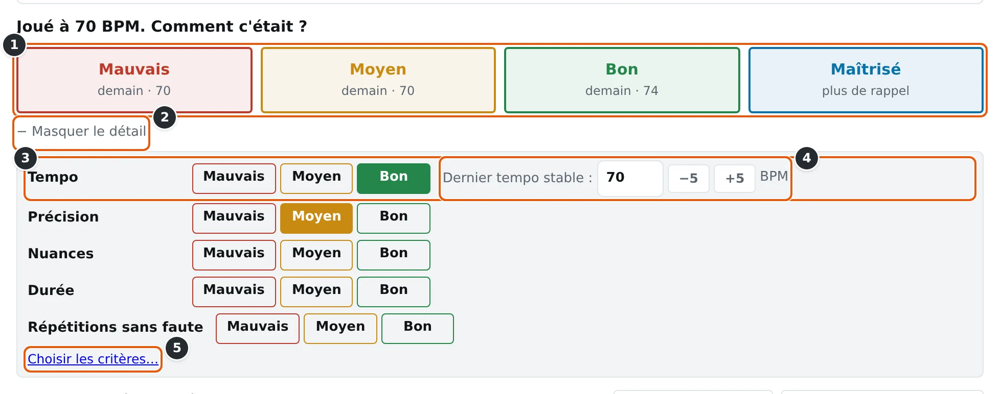
- La note globale, comme d'habitude. C'est en la choisissant que tout s'enregistre.
- + Détailler (tempo, précision…) ouvre le détail ; − Masquer le détail le referme. Il est facultatif : ne l'ouvre que quand tu as le temps.
- Un critère, noté sur trois niveaux : Mauvais, Moyen ou Bon. Un critère laissé vide n'est pas noté. Maîtrisé n'existe pas ici : c'est une note globale.
- Le dernier tempo stable : le tempo le plus rapide que tu as joué facilement, sans faute. −5 et +5 l'ajustent d'un clic. C'est une mesure objective de ta progression : il alimente la courbe des tempos de Ma progression.
- Choisir les critères… ouvre les réglages (voir ci-dessous).
Le détail ne change pas les rappels : il s'enregistre avec la séance et nourrit Ma progression.
Les critères proposés :
| Critère | Question à se poser |
|---|---|
| Tempo | ai-je tenu le tempo, sans accélérer ni ralentir ? |
| Précision | les coups tombent-ils pile, mains et pieds ensemble ? |
| Nuances | accents, ghost notes et coups normaux sont-ils bien distincts ? |
| Durée | ai-je tenu jusqu'au bout sans me crisper ni faiblir ? |
| Répétitions sans faute | combien de fois de suite sans erreur ? |
| Coordination, Son, Détente, Lecture, Par cœur | à activer selon ce que tu travailles |
Choisir ses critères
Dans Réglages › Évaluation :
- Ouvrir le détail par critère d'office : le détail est ouvert à chaque note, sans passer par + Détailler ;
- Critères proposés : coche ceux à noter. Peu de critères bien choisis valent mieux que dix : trois ou quatre suffisent ;
- + Ajouter un critère crée un critère à ton nom (par exemple « Rimshots réguliers ») ; ✕ le retire, les séances déjà notées gardent leur note.
Évaluer toute une série
Après un enchaînement de 20 exercices, noter chacun un par un serait fastidieux. ★ Évaluer, dans la barre du tableau d'un enchaînement (Enchaîner d'une leçon, Entraînement d'une liste), les note tous d'un coup :
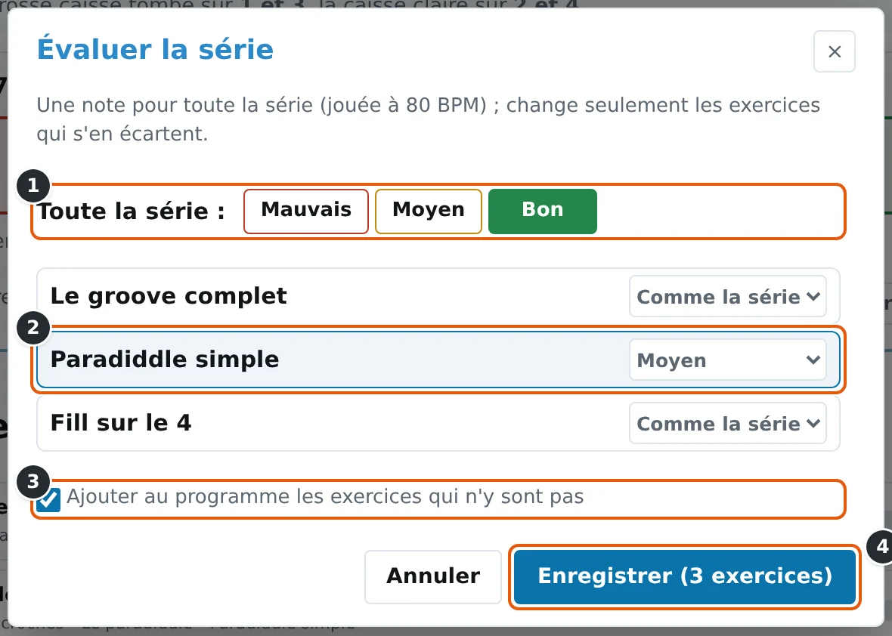
- Toute la série : une note pour l'ensemble, jouée au tempo indiqué en haut.
- Chaque exercice suit la note de la série (Comme la série). Change seulement ceux qui s'en écartent : une autre note, ou Pas de note pour un exercice que tu n'as pas vraiment joué.
- Les exercices qui ne sont pas encore au programme y sont ajoutés, sauf si tu décoches la case.
- Enregistrer : le bouton dit combien d'exercices seront notés.
Ma progression
Ma progression (en haut du Programme, ou dans Réglages › Évaluation) rassemble tes notes pour répondre à trois questions : est-ce que je travaille régulièrement, qu'est-ce qui coince, et est-ce que mes tempos montent ?
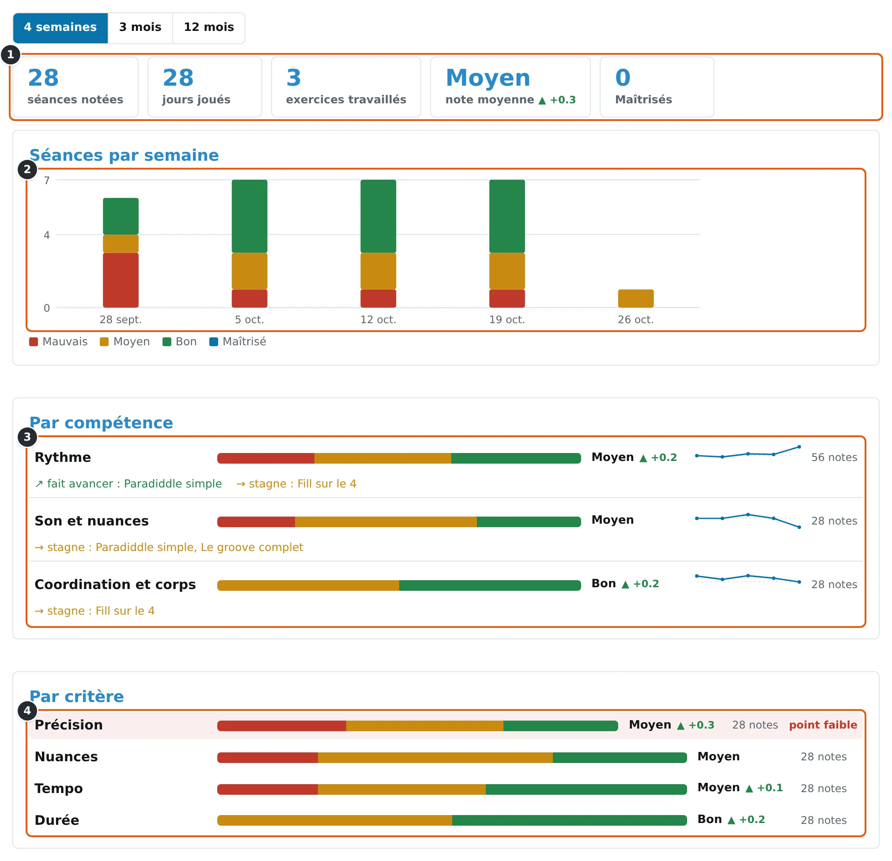
- Les chiffres de la période : séances notées, jours joués, exercices travaillés et note moyenne, avec l'évolution par rapport à la période d'avant. Période : 4 semaines, 3 mois ou 12 mois.
- Séances par semaine, colorées par note : la régularité d'un coup d'œil. Une semaine vide se voit tout de suite.
- Par compétence : on progresse moins sur un exercice que sur une compétence. Chaque note d'un critère compte pour sa famille (le rythme : tempo, précision ; le son et les nuances ; la coordination et le corps ; la lecture et la mémoire ; et les catégories de ton prof). Pour chacune : la répartition de tes notes, son niveau et son évolution, sa courbe semaine par semaine, et les exercices qui la font avancer (leurs notes montent) ou qui stagnent (trois notes ou plus, sans progrès). Un exercice que ton prof a lié à une compétence y compte aussi, par sa note d'ensemble.
- Par critère : la répartition de tes notes pour chaque critère du détail. Le plus faible est marqué point faible : c'est là que ton travail rapportera le plus.
Plus bas :
- À retravailler : les exercices qui reçoivent le plus de Mauvais et de Moyen. Un clic y mène ;
- Exercices de la période : pour chacun, ses séances, ses tempos joués et une barre qui compare le tempo stable atteint au tempo demandé.
Chapitre 9Partie III · S'entraîner
Le métronome
La page Métronome est un métronome complet, pour tout ce qui ne demande pas de partition : travailler un rudiment, un morceau, ta régularité, ou un groove griffonné en deux clics. Rien n'est à enregistrer : tu règles, tu joues. Tes réglages favoris se gardent en préréglages.
Pourquoi un métronome à part, alors que chaque exercice a déjà son clic ? Parce qu'on travaille aussi sans exercice écrit : un morceau à la radio, un fill que tu inventes, une technique de main. Et parce qu'il a des outils que le lecteur n'a pas : accélération automatique, préréglages, son des subdivisions, groove à la place du clic, et trois modes d'entraînement (roue rythmique, pyramide rythmique, polymètre) qui font travailler ce qu'un clic seul ne fait pas travailler.
L'écran du métronome
Le cadran ressemble aux applis de métronome que tu connais peut-être : les lumières des temps en haut, un balancier, le tempo en grand au centre, le gros bouton de lecture en bas. Les réglages plus rares sont rangés dans des cartes, sous le cadran.

Le mode : Clic, un clic classique ; Groove, un groove qui joue à la place des clics (voir Un groove à la place du clic) ; Roue, Pyramide et Polymètre, les modes d'entraînement (voir Trois modes d'entraînement). Changer de mode arrête la lecture.
Les lumières : une par temps, et une petite par subdivision, toutes à intervalles égaux. Celle qui sonne s'allume ; la première, orange, marque le « 1 ». Elles se lisent de loin, depuis la batterie. Dessous, le balancier : la bille rouge va d'un bord à l'autre à chaque temps, comme le balancier d'un métronome mécanique. Tu vois venir le temps suivant au lieu de le subir.
Le tempo, en grand. Il tourne comme une molette : glisse dessus vers le haut ou vers le bas (ou utilise la molette de la souris), ou touche le nombre voisin, en grisé. −1 +1 −5 +5 l'ajustent finement ; le curseur, dessous, va vite d'un bout à l'autre. Sous le nombre, le nom italien du tempo (Adagio, Andante, Allegro…), celui qu'on lit sur les partitions.
Les trois boutons ronds :
- Tap : tape au moins deux fois en rythme, le tempo suit. Pratique pour retrouver le tempo d'un morceau que tu entends ;
- ▶ / ■ : démarrer, arrêter. Pendant le décompte, un cercle se remplit autour du bouton ;
- Durée (le chronomètre) : chaque clic passe à la durée suivante (en minutes ou en mesures, voir La durée). Pendant la séance, un cercle se referme autour du bouton.
L'horloge, sous les boutons, montre le temps joué (et le temps restant).
⚙ : l'allure des lumières et du balancier (voir L'allure : lumières et balancier).
Mesure · Subdivision : en chiffrages (2/4 à 12/8) ou en temps par mesure (voir Mesure et subdivision).
Préréglages : ceux de base, les tiens et les derniers utilisés (voir Les préréglages).
Accélérer ou ralentir : le tempo change tout seul (voir Accélérer ou ralentir).
Durée : en minutes ou en mesures, toutes visibles.
Sons et décompte : un son pour le 1er temps, un pour les autres temps, un pour les subdivisions, et les clics avant le départ (voir Les sons et le décompte).
Les cartes sont rangées dans l'ordre où tu t'en sers : ce qui joue (la mesure), les préréglages, l'accélération, la durée, puis les sons, qu'on règle une fois pour toutes. Les petits i à côté d'un réglage déplient une explication ; touche-les encore pour la replier. Sur un grand écran, la présentation de la page s'affiche sous le titre ; ailleurs, elle se cache derrière le ⓘ à côté du titre, pour laisser la place au cadran.
En bas à gauche du cadran, ⛶ passe en plein écran : le cadran seul, aussi grand que l'écran, sans rien autour. Touche-le encore (ou Échap) pour revenir.
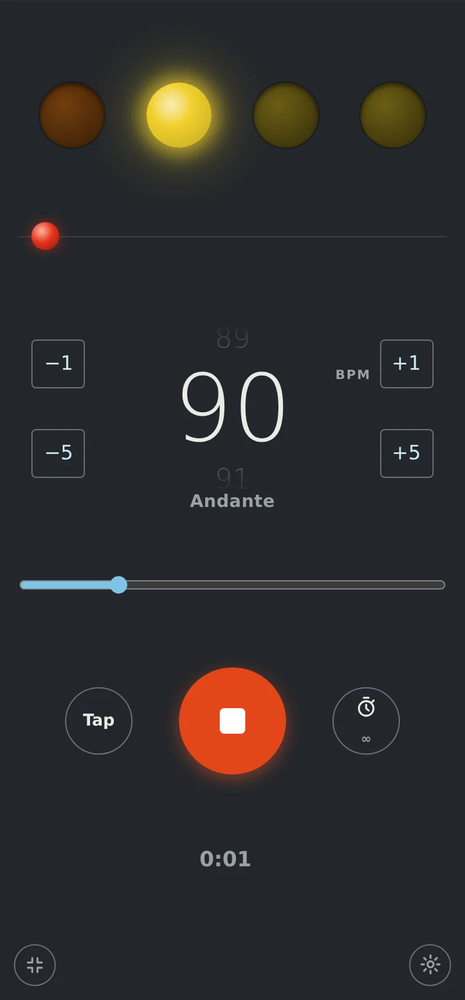
Mesure et subdivision
La mesure dit combien de temps compte un cycle (4 en 4/4, 3 en 3/4, 7 croches en 7/8). La subdivision découpe chaque temps : croches (2), triolets (3), doubles croches (4), et jusqu'aux quintolets (5), sextolets (6), septolets (7) et triples croches (8).
Faire entendre la subdivision aide à placer les notes entre les temps : à 60 BPM, l'écart entre deux clics est long, et on a tendance à se précipiter. Avec les doubles croches audibles, tu entends où tombe chaque « e & a ». Les quintolets et les septolets, eux, s'apprennent presque uniquement à l'oreille : le métronome te les fait entendre bien réguliers. Quand c'est en place, repasse en noires : c'est toi qui dois tenir la subdivision.
Deux façons de choisir, selon ton habitude :
- Chiffrages : les mesures courantes et les subdivisions en boutons, d'un coup d'œil ;
- Temps × subdivisions : comme sur un métronome de poche, deux compteurs − + : le nombre de temps par mesure (de 1 à 16) et le nombre de clics par temps (de 1 à 8). Pratique pour une mesure rare (11 temps) sans chercher son chiffrage.
Les sons et le décompte
Trois sons distincts, pour savoir à l'oreille où tu en es sans regarder l'écran :
- 1er temps : le « 1 » de la mesure. Un son à part (le clic aigu, au départ) est indispensable dans les mesures inhabituelles (5/4, 7/8) pour ne pas perdre le début de la mesure. Choisis le même son que les temps pour un clic tout égal ;
- Temps : les autres temps ;
- Subdivisions : les petits temps entre deux temps. Un son discret aide sans gêner. Muet (seulement à l'écran) garde les petites lumières sans le son : l'étape avant de s'en passer complètement.
Au choix pour chacun : clic aigu, clic, charleston, baguettes, cross-stick, cloche de ride, cowbell ou muet. Chaque changement te fait entendre le son choisi. Ces sons sont ceux de la batterie choisie dans Réglages › Sons de la batterie (catégorie Métronome pour les clics) : au départ, des clics que l'appli fabrique elle-même.
Le décompte joue des clics avant le départ : Aucun, 1 mesure ou 2 mesures. Il suit la mesure choisie : autant de clics que de temps, donc 4 en 4/4, 3 en 3/4, 2 en 2/4 ou en 6/8 (deux temps pointés). Le décompte du métronome est le sien ; celui des lecteurs se règle dans les Réglages.
L'allure : lumières et balancier
Selon la distance et la lumière de la pièce, des lumières rondes ou des barres, vives ou discrètes, se lisent plus ou moins bien. Le bouton ⚙ du cadran (ou Réglages › Métronome) ouvre l'allure du métronome, avec un aperçu qui suit tes choix :
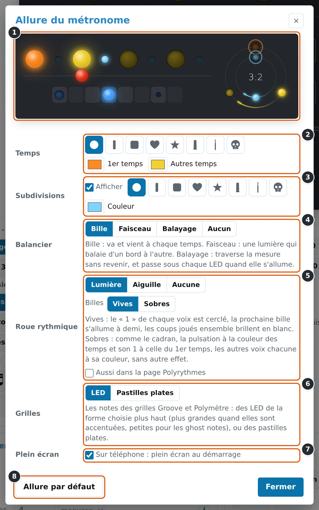
L'aperçu : le cadran et une petite roue rythmique, avec tes choix.
Temps : la forme des lumières (Ronde, Barre verticale, Carrée, ou pour le plaisir Cœur, Étoile, Douille, Baguette et Tête de mort), la couleur du 1er temps et celle des autres temps. Allumées, toutes brillent de la même lueur.
Subdivisions : les afficher ou non, leur forme et leur couleur.
Balancier :
- Bille : la bille rouge va et vient à chaque temps ;
- Faisceau : une lumière balaie d'un bord à l'autre, comme un scanner ;
- Balayage : la lumière traverse la mesure sans revenir, et passe sous chaque lumière au moment où elle s'allume ;
- Aucun : pas de balancier.
Roue rythmique : ce qui tourne sur la roue (voir La roue rythmique) :
- Lumière : sur chaque anneau, une courte traînée lumineuse de la couleur de l'anneau ; sa tête allume chaque bille au moment où elle passe dessus ;
- Aiguille : une aiguille fine, comme une trotteuse ;
- Aucune : seules les billes s'allument.
Billes : Vives, le « 1 » de chaque voix est cerclé, la prochaine bille s'allume à demi et les coups joués ensemble brillent en blanc ; Sobres, comme le cadran : la pulsation à la couleur des temps et son 1 à celle du 1er temps, les autres voix chacune à sa couleur, sans autre effet. Les billes sont les mêmes LED que celles du cadran : même relief, même lueur, même forme.
Aussi dans la page Polyrythmes remplace le cercle de la page Polyrythmes par cette roue : un seul dessin à apprendre.
Grilles : les notes des grilles Groove et Polymètre en LED, les mêmes que sur le cadran (de la forme choisie en 2, plus grandes quand elles sont accentuées, petites pour les ghost notes), ou en Pastilles plates, plus discrètes.
Plein écran : sur téléphone, passer en plein écran dès le démarrage.
Allure par défaut remet les formes et les couleurs de départ.
La durée
Une séance minutée t'évite de surveiller l'heure ; une séance en mesures colle à la musique (« 32 mesures de ce groove, puis on change »). La carte Durée propose les deux :
- Minutes : ∞ (sans fin), 1, 2, 5, 10, 15, 20 ou 30 minutes ;
- Mesures : ∞, 4, 8, 16, 32, 64 ou 100 mesures, ou le nombre que tu veux dans Nombre de mesures. Le décompte ne compte pas.
Le métronome s'arrête tout seul à la fin, avec un signal. Le bouton rond du chronomètre, sur le cadran, fait défiler les mêmes durées, et un cercle se referme autour pendant la séance.
Les préréglages
Un préréglage remet d'un clic le tempo, la mesure, la subdivision et les sons.
- Préréglages de base : les réglages les plus courants (60 en noires, 80 en croches, 3/4, 6/8, 12/8, 5/4, 7/8…).
- Mes préréglages : règle le métronome comme tu veux, puis ★ Enregistrer ce réglage et donne un nom (« Échauffement », « Morceau du concert »). Il garde tout : le mode, tempo, mesure, sons, décompte, accélération, durée, le groove en mode Groove, et les réglages de la roue, de la pyramide et du polymètre (« mon 3:5:7 », « ma pyramide en quintolets », « indépendance 3 · 5 · 4 »). Gérer renomme (✎) ou supprime (✕) tes préréglages.
- Récents : les derniers réglages lancés, pour y revenir sans les enregistrer.
Les préréglages restent sur l'appareil, dans le métronome.
Accélérer ou ralentir
Monter le tempo par petits paliers est la façon la plus sûre de gagner en vitesse : chaque palier est assez petit pour rester propre. Le métronome le fait pour toi.
Active l'interrupteur dans le titre de la carte (il reste visible même carte repliée), puis choisis : Accélérer ou Ralentir, de combien de BPM, toutes les combien de mesures ou de secondes, et jusqu'à quel tempo. Exemples :
- +2 BPM toutes les 4 mesures, de 80 jusqu'à 110 : une montée progressive pour un groove ;
- +5 BPM toutes les 30 secondes : un exercice d'endurance sur un rudiment ;
- Ralentir de 2 BPM toutes les 2 mesures : apprendre à ralentir sans s'écrouler, plus difficile qu'il n'y paraît.
Le tempo change toujours pile sur un premier temps, jamais au milieu d'une mesure. À l'arrêt, le tempo atteint reste affiché : c'est souvent ton nouveau tempo de travail.
Un groove à la place du clic
Jouer sur un clic seul est austère. En mode Groove, une petite boucle de batterie joue à la place des clics, au tempo du métronome : un rythme de base pour travailler une technique de main, un fill, ou jouer avec quelqu'un.
- Groove : le mode.
- La matrice, à la place des lumières : une ligne par instrument, une pastille par note (plus grosse pour un accent, creuse pour une ghost note). Pendant la lecture, la colonne qui joue s'allume, et ses pastilles grossissent légèrement : tu vois d'un coup d'œil ce qui sonne à cet instant.
- Modifier le groove : ouvre l'éditeur de grille pour changer le groove. Groove de départ revient au groove proposé au début.
Deux réglages en plus :
- Clic avec le groove : le clic continue sous le groove ;
- Groove par intermittence : N mesures avec le groove, N mesures sans (le clic continue). Pendant les mesures sans, c'est toi qui tiens le groove : quand il revient, tu entends tout de suite si tu as gardé le tempo.
Le groove n'est enregistré nulle part, sauf dans un préréglage. Pour garder un groove pour de bon, écris-le dans l'atelier.
Trois modes d'entraînement
Un clic régulier t'apprend à tenir le temps. Trois difficultés de batteur demandent autre chose : tenir deux pulsations à la fois (le polyrythme), changer de subdivision sans que le temps bouge, et laisser chaque membre suivre son propre cycle (l'indépendance). Les modes Roue, Pyramide et Polymètre sont faits pour ça. Ils gardent tout le reste du métronome : tempo, sons, décompte, durée, accélération, plein écran.
La roue rythmique
Un polyrythme, 3 contre 4 par exemple, se comprend mieux quand on le voit tourner : chaque voix est un anneau, chaque coup une bille, et toutes les voix reviennent ensemble en haut, sur le « 1 ». Tu vois où tombe chaque coup par rapport au clic, et le parcours Pyramide t'emmène d'un rapport à l'autre sans t'arrêter.
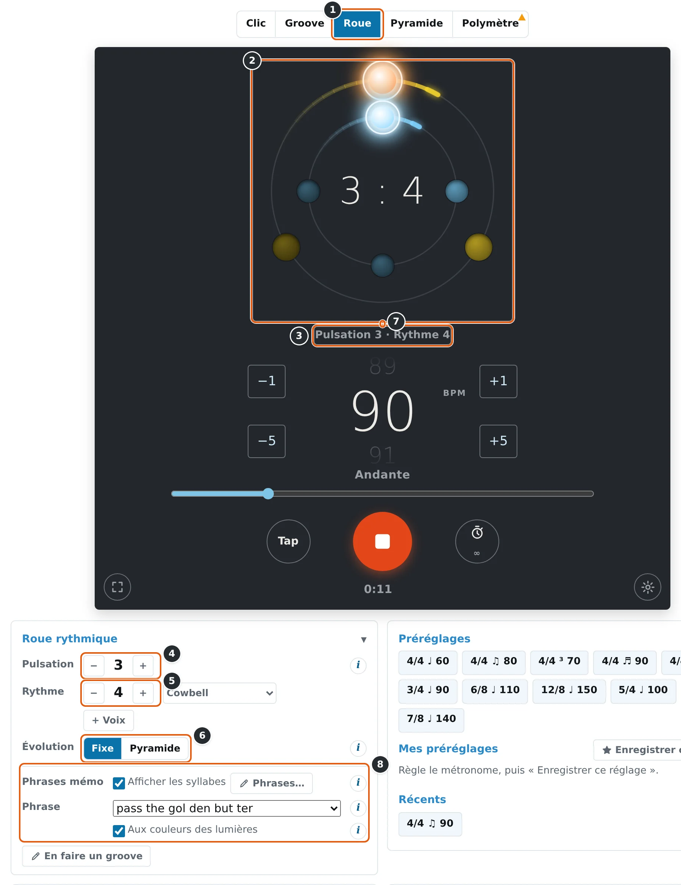
- Roue : le mode.
- La roue. L'anneau extérieur est la pulsation, c'est-à-dire le clic du métronome : il a la couleur des temps, et son « 1 » celle du 1er temps. À l'intérieur, la voix du rythme, puis les autres voix. Une bille par coup : sombre en attendant, à demi allumée quand c'est la prochaine, allumée quand elle sonne, blanche quand deux voix frappent ensemble. Au centre, le rapport. Ce qui tourne sur la roue (lumière, aiguille ou rien) se choisit dans l'allure.
- Sous la roue, les voix ; en parcours, le rapport suivant et dans combien de mesures il arrive.
- Pulsation : le nombre de clics par tour, de 2 à 9. Le tempo est celui de la pulsation.
- Rythme : le nombre de coups de l'autre voix, et son instrument. + Voix ajoute un troisième puis un quatrième anneau (3:4:5…) ; ✕ en retire un.
- Évolution : Fixe, un seul rapport ; Pyramide, la voix du rythme parcourt plusieurs valeurs.
- La phrase mémo, si tu l'affiches : la syllabe du coup qui sonne s'allume (voir Les phrases mémo).
- Phrases mémo : les afficher, choisir la phrase du rapport, et ✎ Phrases… pour la changer ou écrire la tienne.
En Pyramide, trois réglages de plus :
- Parcours : les valeurs à enchaîner. Contre 3, l'appli propose 2, 4, 5, 7 et 8 : celles qui ne se réduisent pas (3 contre 6 n'est que 1 contre 2 joué deux fois). Toutes les valeurs montre aussi les autres. Une valeur grisée demanderait une grille trop fine pour rester lisible ;
- Changer toutes les N mesures ;
- Sens : → monte, puis recommence (3:2, 3:4, 3:5, 3:7, 3:8, 3:2…) ; ↔ monte, puis redescend (… 3:8, 3:7, 3:5, 3:4, 3:2…).
Le chemin complet s'affiche sous les réglages.
En faire un groove (en bas de la carte) ouvre un rapport dans l'éditeur de groove : la pulsation au ride, chaque voix sur son instrument, sur le nombre de mesures choisi ; en parcours, choisis le rapport. C'est un nouveau groove, un point de départ à modifier : la roue ne change pas.
La pyramide rythmique
Passer des croches aux triolets, puis aux doubles croches, sans que le temps bouge : c'est l'un des exercices les plus durs à la batterie. On a tendance à accélérer en serrant les notes, et à ralentir en les écartant. La pyramide garde le clic fixe et change seulement ce qu'il y a dans chaque temps.
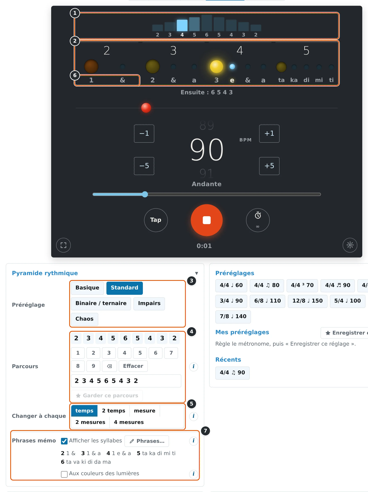
Le parcours : une colonne par étape, plus haute pour une subdivision plus fine. Celle qui joue s'allume ; la suivante est à peine marquée.
La mesure en cours : pour chaque temps, sa subdivision en grand et ses lumières. Dessous, ce qui vient ensuite.
Préréglage : Basique (1 2 3 4 3 2 1), Standard (2 3 4 5 6 5 4 3 2), Binaire / ternaire (2 3 4 6 4 3 2), Impairs (3 5 7 5 3) et Chaos (2 5 3 7 4 6), puis tes parcours gardés (✕ en retire un).
Parcours : les étapes en grand, puis deux façons de l'écrire, de 1 (noires) à 9 :
- au pavé 1 à 9, pratique au doigt ; ⌫ retire la dernière étape, Effacer repart d'une seule ;
- au clavier, dans le champ : « 2 3 4 3 », « 2-3-4-3 » ou « 2343 », chaque chiffre compte (le 0 et le reste sont ignorés). Les étapes se mettent à jour pendant que tu tapes.
★ Garder ce parcours le range à côté des préréglages, pour le retrouver d'un clic.
Changer à chaque : temps, 2 temps, mesure, 2 mesures ou 4 mesures. À chaque temps, la subdivision change en pleine mesure : c'est le plus exigeant. Le parcours se répète alors jusqu'à retomber pile sur une fin de mesure, pour boucler sans couture.
Les syllabes, si tu les affiches : une sous chaque lumière, et celle qui sonne s'allume.
Phrases mémo : les afficher, voir ce qui sera dit pour chaque subdivision du parcours, et ✎ Phrases… pour les changer (voir Les phrases mémo).
Le temps sonne avec le son des temps, les subdivisions avec celui des subdivisions (carte Sons et décompte).
Le polymètre
Dans un polymètre, chaque membre joue sa propre boucle, d'une longueur à elle, sur une mesure qui ne bouge pas : un groove de 3 temps sur un charleston en 4/4, une figure de 5 doubles à la caisse claire, la main droite toutes les 3 doubles contre la main gauche toutes les 5. Chaque boucle recommence sur son propre « 1 » ; les boucles glissent les unes contre les autres, puis retombent toutes ensemble sur le 1 après quelques mesures. C'est un excellent travail d'indépendance, et le principe de bien des grooves modernes.
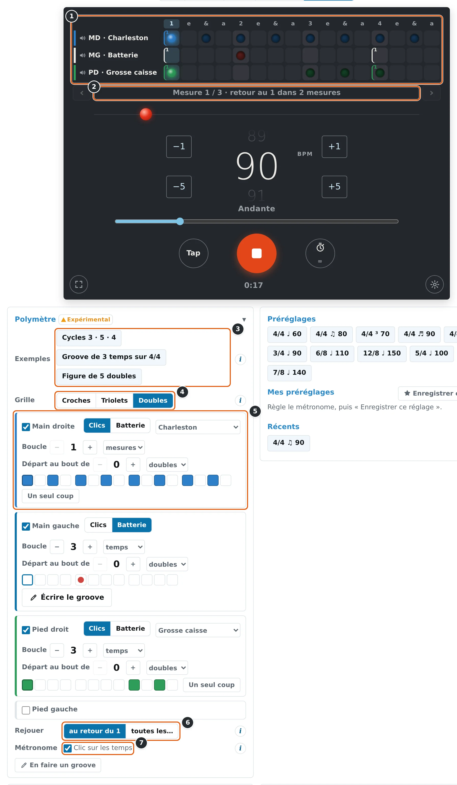
- La grille : une ligne par membre, une case par subdivision ; la colonne qui joue s'allume. Un petit 1 marque chaque case où la boucle d'un membre recommence. La grille avance mesure par mesure. Les notes sont des LED, comme celles du cadran.
- Où tu en es : la mesure dans le cycle, et dans combien de mesures tout retombe sur le 1. À l'arrêt, ‹ et › parcourent les mesures (voir Sur le cadran).
- Exemples : des points de départ, tous modifiables : Cycles 3 · 5 · 4 (un coup toutes les 3, 5 et 4 doubles), Groove de 3 temps sur 4/4, Figure de 5 doubles.
- Grille : croches (2), triolets (3) ou doubles croches (4) par temps.
- Les membres : main droite, main gauche, pied droit, pied gauche ; la case à cocher fait jouer le membre. Pour chacun :
- Clics ou Batterie : la façon d'écrire sa boucle (voir plus bas) ;
- Boucle : sa longueur, en doubles, croches, temps ou mesures. Changer d'unité garde la même durée quand elle tombe juste (12 doubles = 3 temps) ;
- Départ au bout de : la boucle commence plus tard, au bout de N doubles, croches, temps ou mesures. Le charleston au pied sur 2 et 4, par exemple : une boucle de 2 temps, départ au bout d'1 temps ;
- le motif : une case par subdivision de la boucle, groupées par temps ; la première, cerclée, est son 1.
- Rejouer : au retour du 1 joue jusqu'à ce que toutes les boucles retombent ensemble sur le 1, puis recommence ; toutes les… recommence au bout du nombre de mesures choisi, même si elles ne sont pas retombées ensemble. Un cycle de plus de 64 mesures est coupé, et l'appli te le signale.
- Métronome : Clic sur les temps, pour garder la mesure sous les boucles.
Deux façons d'écrire une boucle :
- Clics : un instrument, et un clic par case pour frapper ou effacer. Un seul coup remet le motif le plus simple : un coup sur le 1 de la boucle, c'est-à-dire « un coup toutes les N ».
- Batterie : un vrai petit groove, avec plusieurs instruments et leurs frappes (accents, ghost notes, charleston ouvert, flas…). ✎ Écrire le groove l'ouvre dans l'éditeur de grille, à la longueur de la boucle (5 doubles s'écrivent en 5/16, 3 temps en 3/4). Change la mesure ou ajoute des mesures pour l'allonger : la boucle prend la longueur du groove écrit. Sur le cadran, la ligne du membre montre ses coups.
Au départ, la main droite au ride toutes les 3, la main gauche à la caisse claire toutes les 5 et le pied droit à la grosse caisse tous les temps : le cycle complet dure 15 mesures. Un groove de 3 temps sur 4/4 retombe sur le 1 en 3 mesures, une figure de 5 doubles en 5 mesures.
En faire un groove
Un polymètre est un bon point de départ pour un groove qui sort de l'ordinaire. En faire un groove, en bas de la carte, ouvre un passage du cycle dans l'éditeur de groove :
- Mesures : de la mesure… à la mesure… (au départ, 4 mesures à partir du départ choisi), ou en un geste Tout le cycle, La 1re mesure, Les 2 premières, Les 4 premières ;
- Lignes coupées : laissées de côté, sauf si tu coches Les garder dans le groove.
Le groove s'ouvre au tempo du métronome, avec son titre (« Polymètre 3 · 5 · 4 ») et l'origine du passage en description. C'est un nouveau groove : modifie-le, puis Enregistrer… ; le polymètre ne change pas.
Sur le cadran : couper, parcourir, partir d'ailleurs
Un cycle de 15 mesures, c'est long à attendre quand seule la mesure 7 te pose problème ; et pour travailler l'indépendance, il aide d'entendre une voix de moins, puis de la jouer toi-même. La grille du cadran sert à ça, sans passer par les réglages :
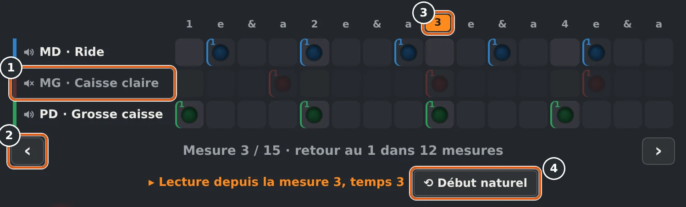
- Couper une ligne : touche le nom d'un membre (un petit haut-parleur le précède). La ligne reste affichée mais s'éteint, et ne joue plus : tu vois toujours ce qu'elle fait, à toi de la jouer. Touche-le encore pour la rétablir. Ça marche aussi pendant la lecture.
- Parcourir le cycle : ‹ et › passent à la mesure précédente ou suivante ; après la dernière vient la première, et inversement. Au clavier : ← et →. À l'arrêt seulement : pendant la lecture, la grille suit ce que tu entends.
- Partir d'un temps : touche un numéro de temps (1, 2, 3 ou 4) dans la mesure affichée : la lecture partira de là, et le numéro prend la couleur du 1er temps. Le décompte mène jusqu'à ce temps (départ sur le 3 : « 1 2 3 4, 1 2 », puis le 3). Le cycle continue ensuite normalement ; avec Rejouer : toutes les…, ce sont les N mesures à partir de ce départ qui tournent en boucle, de quoi travailler un passage précis.
- Début naturel : revient au début du cycle (mesure 1, temps 1). Toucher à nouveau le temps choisi fait la même chose.
Les notes de la grille sont les LED du cadran : leur forme et leurs couleurs viennent de l'allure ; une note accentuée est plus grande, une ghost note plus petite. Tu préfères des pastilles plates ? Choisis Grilles : Pastilles plates dans l'allure.
Les phrases mémo
Dire le rythme aide à le jouer : une syllabe par note, et la subdivision se sent avant de se penser. Les batteurs et les professeurs ont depuis longtemps leurs façons de le dire. Le métronome en propose beaucoup, toutes en usage, rien d'inventé. Elles sont toutes disponibles quelle que soit la langue de l'appli : la langue choisit seulement celles de départ. Tes choix sont gardés.
Où les choisir : ✎ Phrases…, dans la carte de la pyramide ou de la roue (et dans la page Polyrythmes), ou Réglages › Métronome › Phrases mémo…. La fenêtre a deux onglets.
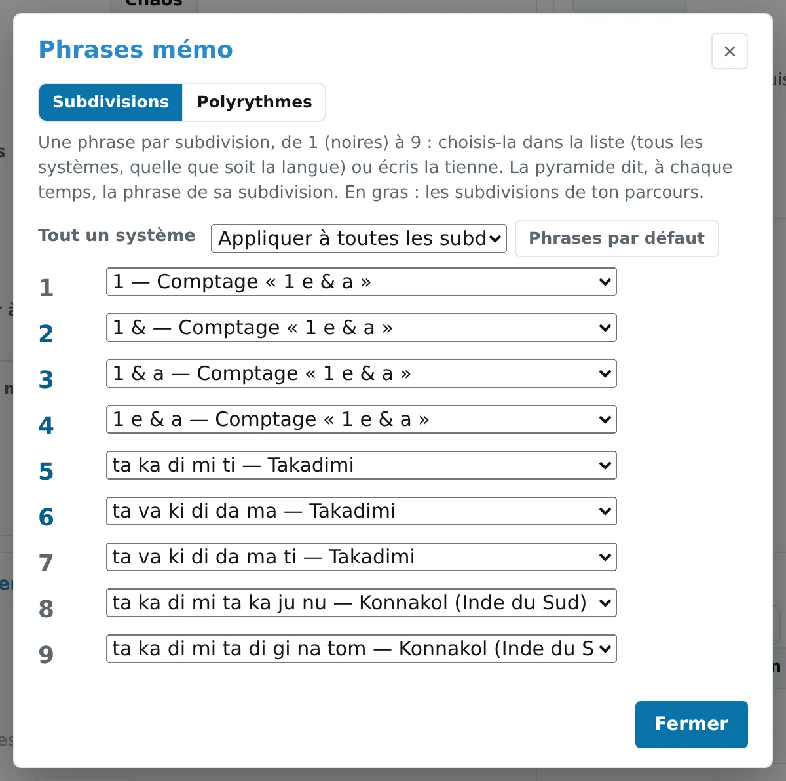
Subdivisions : une ligne par subdivision, de 1 (noires) à 9. Pour chacune, choisis la phrase dans la liste, tous systèmes confondus, ou Ma phrase… pour écrire la tienne : une syllabe par note, séparées par des espaces ou des tirets, {b} devient le numéro du temps. En gras : les subdivisions de ton parcours. Tout un système applique d'un coup un système à toutes les subdivisions qu'il connaît ; Phrases par défaut remet celles de ta langue. La pyramide dit, à chaque temps, la phrase de sa subdivision : en « 3 5 6 7 », « 1 & a », puis « ta ka di mi ti », « ta va ki di da ma »…
| Système | 2 | 3 | 4 | 5 et plus |
|---|---|---|---|---|
| Comptage « 1 e & a » | 1 & | 1 & a | 1 e & a | |
| Comptage « 1 trip let » | 1 trip let | 6 : 1 trip let & trip let | ||
| Comptage « 1 la li » | 1 la li | 6 : 1 la li & la li | ||
| Takadimi | ta di | ta ki da | ta ka di mi | 5 : ta ka di mi ti, 6 : ta va ki di da ma, 7 : ta va ki di da ma ti |
| Kodály | ti ti | tri o la | ti ri ti ri, ti ka ti ka | |
| Gordon | du de | du da di | ||
| Langue des durées (Chevé) | ta té | ta fa té fé | ||
| Konnakol (Inde du Sud) | ta ka | ta ki ta | ta ka di mi | de 5 à 9 : ta di gi na tom… |
| Mots anglais | cof fee | co ca co la | 5 : hip po pot a mus, u ni ver si ty, op por tu ni ty, Phi la del phi a ; 7 : pur ple hip po pot a mus, gol den op por tu ni ty | |
| Aaron Edgar (Modern Drummer) | 7 : ta ka din ah ge na gah | |||
| Compter les notes | 1 2 | 1 2 3 | 1 2 3 4 | 1 2 3 4 5… |
Chaque subdivision a toujours une vraie phrase par défaut : en français, le comptage jusqu'à 4, puis Takadimi jusqu'à 7 et le konnakol au-delà ; en anglais, « 1 trip let », puis les mots ; en allemand, Kodály. Compter simplement les notes (1 2 3 4 5) reste possible, mais seulement si tu le choisis.
Polyrythmes : une phrase par rapport, dont chaque syllabe tombe sur un coup des deux voix ensemble (le rythme résultant) et dure jusqu'au coup suivant. Sous chaque phrase, les syllabes sont posées à leur place, chacune aussi large que son intervalle : on voit les écarts du rythme. Dite à voix haute, la phrase donne le polyrythme d'un coup :
- 3 contre 2 : « nice cup of tea », « hot cup of tea » ;
- 4 contre 3 : « pass the golden butter », « pass the bread and butter », « what atrocious weather » ;
- 5 contre 2 : « let's go to the movies » ;
- 5 contre 3 : « play this rhythm really fast », « M-I-S-S-P-P-I » ;
- 5 contre 4 : « I'm looking for a house to buy », « that butter is not my butter », « this rhythm difficult is not ».
Ce sont des phrases anglaises connues des batteurs ; on les garde telles quelles, car c'est leur rythme qui compte. Pour les autres rapports, et à 3 ou 4 voix, Compter la grille dit le numéro de chaque case où tombe un coup (en 3 contre 2 : 1, 3, 4, 5), et Ma phrase… te laisse écrire la tienne, une syllabe par coup du résultant. Les rapports joués sont en tête de liste ; + Rapport en ajoute un (« 5:7 »). Dans un parcours de la roue, chaque rapport dit sa propre phrase : la phrase change avec le couple de voix.
Aux couleurs des lumières colore chaque syllabe comme la lumière qu'elle accompagne : dans la pyramide, le 1 à la couleur du 1er temps, les temps à la leur, les subdivisions à la leur ; sur la roue, la couleur de la voix qui frappe. Quand plusieurs voix frappent ensemble, la pulsation l'emporte, et le 1 l'emporte sur tout. Tu vois ainsi d'un coup d'œil quelle main (ou quel pied) dit quelle syllabe.
Chapitre 10Partie III · S'entraîner
Les routines
Une séance de travail, c'est souvent la même suite : le métronome pour se chauffer, un rudiment pied droit puis pied gauche, un groove à deux tempos, puis ce qu'on veut travailler ce jour-là. Sans routine, on passe son temps à aller d'une page à l'autre : le métronome, une leçon, Mes grooves, le tempo à remettre. Une routine enchaîne tout cela d'un seul geste : tu la lances, la consigne s'affiche en grand, chaque étape démarre à son tempo et dure ce qu'elle doit durer, et tu joues.
Une routine peut aussi se ramifier. Après l'échauffement, tu choisis la suite : « les mains » ou « les pieds ». Tu gardes ainsi une partie que tu fais toujours, et tu choisis le point fort du jour ; à chaque choix, l'appli te dit combien de fois tu l'as déjà fait, et quand.
Les mots d'une routine
- Une étape : un exercice (une leçon, un groove, une étude de chanson), le métronome, ou une simple consigne (« étire les poignets »). Chacune a sa durée : des passages, un temps, des mesures pour le métronome, ou « jusqu'à Étape suivante » (tu passes à la suite quand tu veux) ; son tempo ; et une consigne affichée en grand pendant qu'elle joue (« pied gauche », « nuances piano »).
- Un nœud : une suite d'étapes, avec un nom qui dit ce qu'on y travaille. Le premier est le Départ.
- La suite d'un nœud : rien (la routine finit), un nœud (on continue), ou plusieurs (une branche : on choisit). Des branches peuvent se rejoindre plus loin, par exemple sur un « Retour au calme » commun.
Une routine va toujours vers l'avant : un nœud ne peut pas mener à un nœud d'où l'on vient. Il n'y a pas de boucle sans fin ; pour refaire un nœud, le récapitulatif propose Refaire ce nœud.
La liste des routines
- Nouvelle routine : son nom, et celui de son premier nœud ; l'éditeur s'ouvre. À côté, Depuis Ma setlist fait une routine d'un nœud avec les exercices cochés de Ma setlist, leur tempo et leurs passages compris.
- Ce qu'elle contient : ses nœuds, ses étapes, et sa durée quand elle se calcule (celle du chemin le plus long).
- Jouer : la lancer.
- Modifier : l'éditeur. Le menu ⋯ propose aussi Dupliquer, Ajouter au programme et Supprimer (après confirmation ; ses séances gardées partent avec elle).
Écrire une routine
Nouvelle routine ouvre l'éditeur. En tête, son Nom, une Description facultative et deux réglages pour enchaîner les étapes (repère 1 de la liste, plus bas). Dessous, le plan, en Graphe ou en Liste : l'appli garde ton choix.
Le graphe
Le graphe montre toute la routine d'un coup d'œil : par où elle commence, où elle se ramifie, où les branches se rejoignent. Il se lit de haut en bas, ou de gauche à droite quand il tient mieux ainsi sur un grand écran ; c'est la vue proposée au départ.
- Graphe / Liste : les deux vues du plan ; la barre et le nœud choisi restent à leur place de l'une à l'autre.
- Le zoom : réduire, agrandir, et Ajuster à la place ; un clic sur la taille la remet à 100 %. À la souris, la molette zoome autour du pointeur, et glisser déplace la vue, comme une main.
- Un nœud : son nom, ses étapes en icônes (exercice, métronome, consigne) et sa durée, Départ pour le premier, combien de fois tu l'as fait et les pastilles de ses dernières notes. Après un nœud qui propose plusieurs suites, chaque suite a sa couleur ; un nœud jamais atteint est à part, en pointillés.
- Le nœud choisi, encadré : un clic sur un autre nœud le choisit.
- La poignée +, sous le nœud choisi ou survolé (toujours là au doigt) : un clic propose + Nœud après, + Branche et Rejoindre « … » ; glissée sur un nœud plus loin, elle le relie. Pendant le geste, seuls les nœuds permis s'allument : jamais un nœud d'où l'on vient.
- Sur ordinateur, le nœud choisi s'ouvre à côté : combien de fois tu l'as fait, son Nom du nœud, ses étapes, de quoi en ajouter et Ensuite, comme dans la liste (ci-dessous), et son menu ⋯.
La liste
La liste range les mêmes nœuds en cartes, le Départ en tête. Sur ordinateur, un clic sur une carte la choisit : elle s'ouvre à côté, comme dans le graphe. Sur une tablette, elle se déplie sur place (son nom, ses étapes, sa suite) ; un autre clic la referme.
- Enchaîner tout seul : une étape finie, la suivante démarre ; décoché, tu passes à la suite toi-même. Pause entre deux étapes : un décompte de quelques secondes pour changer de position.
- Départ : le premier nœud, celui par lequel la routine commence.
- Les branches : après un nœud qui propose plusieurs suites, chacune dans son bloc, marqué d'un trait de couleur.
- Les branches se rejoignent ici : la suite commune revient au niveau du nœud d'où elles partent. Une branche qui en rejoint une autre plus loin le dit sur sa puce (« ↪ rejoint « Retour au calme » ») ; un clic y mène.
- Une étape : sa Consigne, sa Durée, son Tempo, et pour un exercice la Mesure répétée (chaque mesure plusieurs fois avant la suivante, comme dans une setlist). Les flèches la montent ou la descendent ; Dupliquer l'étape la recopie juste après : c'est le geste pour « pied droit », puis la même « pied gauche ».
- Ajouter une étape : Exercice ouvre le sélecteur des exercices (une recherche, les leçons, tes grooves) ; Métronome prend les Réglages actuels du métronome ou un de Mes préréglages ; Consigne demande un texte et une durée.
- Ensuite : la suite du nœud, ou Fin de la routine. Nœud après en ajoute un juste après (il reprend la suite qu'avait ce nœud) ; Branche ajoute une suite de plus, au choix ; Rejoindre… relie ce nœud à un nœud plus loin, et ne propose jamais un nœud d'où l'on vient. Une suite se retire avec la croix de sa puce.
Le menu ⋯ d'un nœud (sur sa carte, ou à côté du graphe) propose Renommer, Dupliquer le nœud et Supprimer le nœud ; les nœuds qui menaient à un nœud supprimé continuent vers ses suites. Un nœud auquel plus rien ne mène est rangé à part, sous Nœuds jamais atteints : il n'est pas perdu, relie-le depuis un nœud plus haut (Relier depuis…, ou la poignée + du graphe).
Sur un téléphone
Sur un téléphone, le graphe prend toute la largeur (il défile de côté s'il est large) et les cartes de la liste restent fermées : un toucher sur un nœud l'ouvre en plein écran, avec les mêmes réglages en plus grand. Pas de glisser-déposer pour les étapes : les flèches les rangent.
- Graphe / Liste.
- Un nœud : un toucher l'ouvre en plein écran.
- La poignée +, plus grande au doigt : la toucher pour ajouter la suite, la glisser pour relier.
- Le nom du nœud.
- Une étape et ses réglages.
- Monter, descendre, dupliquer ou retirer l'étape.
Jouer une routine
- Le nœud en cours et l'étape (« Étape 2 / 3 ») ; à droite, le temps passé dans le nœud, et Arrêter.
- La consigne de l'étape, en grand, lisible depuis la batterie.
- L'étape elle-même : le lecteur de l'exercice à son tempo, le cadran du métronome avec ses réglages, ou le compte à rebours d'une consigne.
- ▶ lance l'étape, ■ la met en pause ; ▶ la reprend depuis son début.
- Étape suivante, Étape précédente et Fin du nœud, toujours au même endroit. Une étape quittée avant sa fin est notée « passée ».
Quand une étape a fait ses passages ou son temps, la suivante démarre seule (avec Enchaîner tout seul), après le décompte de la pause s'il y en a une. L'écran reste allumé tant que la routine joue.
Après chaque nœud
- Ce que tu as fait : chaque étape, son tempo, son temps, ses passages, ou « passée ».
- Combien de fois tu as fait ce nœud, la dernière fois, et les pastilles de ses dernières notes.
- La suite : Terminer la routine, Continuer vers le nœud suivant, ou un bouton par choix, chacun avec combien de fois tu l'as fait, quand, ses pastilles et sa durée.
- Refaire ce nœud : le même, une fois de plus.
À la fin, Ton chemin montre le graphe de la routine, le chemin suivi en couleur, puis les nœuds suivis et le temps total ; Rejouer relance la routine. Chaque nœud fini est gardé aussitôt : si tu arrêtes en route ou quittes la page, ce qui est fait compte quand même.
Une routine au programme
Ajouter au programme (dans le menu ⋯ de la liste ou de l'éditeur, ou à la fin d'une routine) la met dans ton Programme, comme un exercice : elle revient au bon moment, selon tes notes.
- Sa carte du jour montre ce qu'elle enchaîne et ta dernière séance ; Lancer la routine la joue.
- Lancée depuis le programme, chaque récapitulatif demande Comment c'était ? : Mauvais, Moyen ou Bon, facultatif ; ces notes font les pastilles des nœuds.
- À la fin, tu notes toute la routine (Mauvais, Moyen, Bon ou Maîtrisé) : la note règle le prochain rappel, comme pour un exercice, et te ramène au programme. Terminer sans noter y revient sans rien changer.
Une routine n'a pas de tempo au programme : chaque étape a le sien. Les routines et leurs séances sont dans la Sauvegarde complète (voir Sauvegarder et changer d'appareil).
Chapitre 11Partie IV · Chansons et vidéo
Étudier une chanson
La page Chansons sert à apprendre une vraie chanson, celle que tu veux jouer avec ton groupe ou que ton prof t'a donnée. La chanson devient un objet de travail, en quatre couches qui avancent ensemble : la vidéo ou l'audio de référence, les sections (intro, couplet, refrain…), la partition, calée sur la musique mesure par mesure, et les exercices que tu en tires.
Pourquoi ne pas se contenter de la vidéo ? Parce qu'on n'apprend pas une chanson d'un bout à l'autre. On la découpe, on isole le passage qui coince, on le ralentit, on le boucle, on écrit ce qu'on entend, puis on le remet dans la chanson. Ici, tout ça tient sur un seul écran, et ce que tu écris reste attaché au bon moment de la musique, même si tu corriges la partition plus tard.
Les études
La page Chansons liste tes études, avec leur vignette quand il y a une image (l'image choisie pour l'étude, ou une vidéo YouTube ; sinon, la source est une étiquette de la carte : Fichier, Adresse, Sans média…), leur tempo, leurs sections, leurs exercices, et une petite barre qui montre la part de la partition déjà écrite. Cherche par titre, artiste ou provenance, filtre par style ou par source, trie (récentes, titre, artiste, tempo) et garde tes favorites (★) en tête.
L'image de l'étude. Une vidéo de l'appareil commence souvent par du noir : rien ne la distingue dans la liste. Dans l'étude, ⋯ › Image de l'étude… propose l'image de la tête de lecture et douze images prises sur toute la vidéo (les sombres à la fin) ; un clic choisit. Choisir un fichier image… prend une photo ou une pochette, utile aussi pour une vidéo en ligne. L'image s'affiche dans la liste et sur la vidéo arrêtée, et part avec l'étude quand tu la partages.
Pour essayer sans rien préparer : Essayer avec un exemple crée une étude sans vidéo, avec six sections, leur partition, une version simplifiée et quelques exercices.
Créer une étude
+ Nouvelle étude demande d'abord la source :
- En ligne : colle le lien d'une vidéo YouTube ou Vimeo, ou d'un morceau SoundCloud. Le service activé (voir plus bas), le titre et l'artiste se remplissent tout seuls (« L'Ordre du Chaos - "Six Reasons, Seven Lies" (Music Video) » donne le titre et l'artiste, sans le reste) ; corrige-les au besoin. Le média se joue dans le lecteur du site, intégré à la page : il faut Internet, et certains médias refusent d'être intégrés (l'appli te le dit et propose de l'ouvrir sur le site) ;
- Fichier : un fichier audio ou vidéo de ton appareil (MP3, M4A, WAV, OGG, MP4, WebM…). L'étude garde un lien vers lui, pas une copie : le fichier reste où il est, et marche sans Internet. Déplacé ou renommé, Retrouver le fichier refait le lien ; son empreinte (sa taille et un CRC) dit si c'est bien le même. Dans l'appli de bureau et dans Chrome ou Edge, le fichier est lié ; ailleurs (Firefox, Safari, téléphone), il est copié sur l'appareil ;
- Adresse : le lien direct vers un fichier audio ou vidéo ;
- Sans média : pas de musique, la chanson avance au tempo. Pratique pour préparer la structure d'un morceau avant d'avoir l'enregistrement, ou pour le jouer avec la batterie de la partition.
Puis le style, le tempo (tape-le avec Tap en écoutant la chanson ; tu pourras le régler finement plus tard, voir Le tempo) et la mesure. ✎ Infos les change plus tard, et garde aussi la provenance de la partition (qui l'a transcrite, d'après quoi).
Chaque source ne permet pas tout. Les lecteurs des sites gardent la main sur leur son :
| Source | Vitesse de lecture | Forme d'onde | Analyse du tempo | Sans Internet |
|---|---|---|---|---|
| YouTube | de 25 à 200 %, par paliers | non | en l'écoutant | non |
| Vimeo | seulement si l'auteur de la vidéo le permet | non | en l'écoutant | non |
| SoundCloud | non | non | en l'écoutant | non |
| Fichier, adresse | de 50 à 125 %, sans changer la hauteur | oui | oui | oui (fichier) |
Quand une source ne permet pas de changer la vitesse, le menu de vitesse est grisé, et le dit. Pour ralentir finement ou voir l'onde, prends un fichier.
Changer la source (menu ⋯) : Vidéo en ligne ou fichier, Adresse ou Sans média. La partition, le calage et les exercices restent ; si c'est un autre enregistrement, recale la partition. Une étude peut garder les deux, la vidéo en ligne et son fichier : la vidéo pour la regarder et la créditer, le fichier pour ce que le site interdit (ralentir finement, analyser le son, extraire la batterie, exporter une vidéo).
- La vidéo en ligne : son lien (YouTube, Vimeo, SoundCloud). Facultatif si tu as le fichier.
- Le fichier de l'appareil : Choisir un fichier (ou Un autre fichier…), et la corbeille pour le retirer de l'étude. Prends le même enregistrement que la vidéo : le calage reste.
- Lecture : ce qui joue, quand l'étude a les deux. L'onde, l'analyse du tempo et la batterie extraite viennent toujours du fichier ; l'export vidéo aussi, quelle que soit la lecture.
Sur la page, le sélecteur Lien / Local, à côté d'Affichage, passe de l'un à l'autre d'un clic.
L'espace de travail
- Le titre et ce qu'on sait de la chanson, dont la part écrite de la partition. Le tempo (♩) ouvre l'onglet Calage, là où il se règle.
- ✎ Éditer, ▶ Jouer : les outils de travail, ou le mode Jouer, plus simple (voir Jouer la chanson). ✓ Enregistré : l'étude s'enregistre à chaque changement, sur l'appareil (le témoin s'allume ; Ctrl+S le confirme). Annuler, Rétablir (Ctrl+Z, Ctrl+Maj+Z) : chaque changement se défait, un glisser compte pour un seul pas ; ↺ (à côté) ramène l'étude telle qu'à son ouverture (Annuler les modifications). L'icône de page (Infos) change le titre, le tempo, la mesure ou la provenance ; Imprimer prépare la feuille (voir Imprimer) ; ⋯ exporte l'étude, ouvre le média sur son site, calcule la forme d'onde ou supprime l'étude. ✕ Fermer revient à la liste des chansons (rien à enregistrer : c'est déjà fait). Quand la colonne est étroite (téléphone, panneau large, téléphone couché), ces boutons ne gardent que leur icône ; leur nom s'affiche au survol. Une étude déjà écrite (des sections et une partition) s'ouvre en mode Jouer ; ensuite, elle se rouvre dans le dernier mode choisi. Sur un téléphone debout, le titre passe au-dessus des boutons, et Infos, Imprimer et Annuler les modifications vont dans ⋯.
- Le panneau : Sections, Partition, Exercices, Calage, Paroles et Notes (sur deux rangées quand il est étroit). C'est une colonne sur toute la hauteur, contre le menu de l'appli, comme dans l'atelier pro : tire son bord droit pour l'élargir ; ‹ le replie. Sur un écran étroit (téléphone, tablette debout), il devient un tiroir : la languette Panneau, au bord gauche, l'ouvre par-dessus l'étude, sans pousser la partition loin en bas ; un toucher à côté, Échap ou un glisser vers le bord le referme.
- Le média : la vidéo, l'audio ou l'horloge.
- Les pistes : les mesures numérotées et les ancres ⚓, la forme d'onde, les sections en couleur, la partition (les blocs écrits avec leurs notes en petit, et les hachures là où rien n'est encore écrit), les frappes pendant une saisie au tap, le tempo (en blocs, comme les sections) et les paroles. Sur la piste Partition, de fins traits marquent les limites des mesures, et la mesure sous la souris s'éclaire. Clique ou glisse sur les mesures numérotées (la règle, en haut) pour placer la lecture : dans les pistes, un clic choisit (une section, un bloc, une ligne de paroles) sans bouger la tête, pour qu'un geste d'édition ne la déplace jamais (en mode Jouer, où rien ne se modifie, un clic n'importe où la place) ; passe la souris sur la piste Partition pour voir la partition de la mesure. Au-dessus, la barre d'outils des pistes (voir plus bas) ; en haut à gauche, le timecode de la tête de lecture.
- Lecture : ⏮ ⏭ passent à la section d'avant ou d'après, −1 mes. +1 mes. reculent ou avancent d'une mesure ; à côté, le temps et la mesure qui joue.
- La vitesse et la zone : le menu de vitesse (l'icône du compteur) ; ⟳ Boucle répète la zone In–Out (sans zone, la section qui joue devient la zone) ; In et Out posent son début et sa fin sur la mesure qui joue ; ▾ ouvre le menu de la zone (voir La zone In–Out).
- Clic, Décompte et Écoute (voir Travailler la chanson).
- Volumes : la musique, nos notes (la batterie de la partition) et le clic, chacun à son niveau.
- Caler la partition : Mesure 1 ici, ⚓ Mesure N ici, ◆ Section ici, et ? qui explique (voir Caler la partition sur la musique).
- Affichage : le média en grand, en petit (plus de place pour la partition), en pleine largeur ; pour une chanson sans vidéo, le visualiseur (par défaut) ou la forme d'onde ; les notes sur la vidéo (ou sur le visualiseur), en bas ou en haut ; le thème de ces notes et du visualiseur ; le plein écran ; pour YouTube, ses commandes (voir plus bas) ; les sous-titres (coupés par défaut ; grisés quand la source n'en a pas de réglables) ; les numéros de mesure sur la partition (affichés par défaut : une mesure répétée dit de quelle mesure à quelle mesure, « 5–8 ») ; les paroles sur la vidéo (voir Les paroles) ; Ajuster la vidéo à l'écran (voir plus bas). À côté, Plein écran ouvre le lecteur plein écran (voir Le plein écran).
- La partition : la section en cours, la chanson entière ou le bloc en cours (Section, Chanson, Bloc), dans la version choisie, avec son curseur qui suit la musique. Clique sur une note pour y placer la lecture. ● Taper et ✎ Écrire la remplissent.
- Une section : son genre, son nom, sa première mesure, son tempo, sa longueur, et ses boutons : ◆ la fait commencer à la mesure qui joue, ▶ la joue, ⟳ la boucle, l'imprimante l'imprime, ✕ la supprime. Un clic sur la section la met en avant (voir plus bas).
Les notes sur la vidéo : la partition qui joue, posée sur l'image comme des sous-titres, avec la tête de lecture et les pastilles des reprises. Les yeux restent sur le batteur et lisent quand même. Leur allure (cadre, couleurs, mesures à l'écran, mouvement, tête de lecture) vient du thème (voir Les thèmes) ; Affichage en règle vite trois choses pour l'étude ouverte : les Mesures sur la vidéo (de 1 à 8, ou celles du thème), le mouvement et la taille. Les notes sont centrées dans leur cadre, et le cadre se resserre à leur hauteur : il cache le moins possible de l'image.
Trois mouvements :
- Pages : les mesures tournent par pages, la tête avance dessus ;
- Deux lignes : la ligne du haut joue, celle du bas montre déjà la suite, plus pâle ; elle s'éclaire à la fin de la ligne, puis prend sa place (en fondu). On lit la suite avant d'y être, comme sur une partition papier ;
- Défilement : toute la partie défile sous une tête fixe, sans saut de page en route. À une reprise (×4), c'est la tête qui revient au début de la mesure, pas les notes : la partition ne bouge que si la tête sortirait de la vue.
La vue épurée de YouTube : sans ses commandes, la vidéo se joue avec celles de l'appli ; un clic sur l'image lance ou arrête, un double-clic passe en plein écran. YouTube garde toujours son titre et son logo en haut : il ne permet pas de les enlever. Rallume Commandes de YouTube (menu Affichage) pour retrouver ses réglages (sous-titres, qualité).
Mettre une section en avant : un clic sur une section (sur les pistes, dans le panneau, ou sur son nom dans la partition) la met en avant. En vue Chanson, la partition montre toute la chanson section par section : celle mise en avant reste nette, les autres s'estompent. Encore un clic (ou Échap), et toutes redeviennent pareilles. Sans choix, c'est la section qui joue qui ressort.
Replier des sections : en vue Chanson, une longue partition oblige à beaucoup défiler. ⌄ devant le nom d'une section la replie : il ne reste que son nom et une barre de progression, qui avance quand la lecture passe dedans (on sait où on en est sans voir les notes) ; un clic la déplie. Le bouton à côté de Section · Chanson · Bloc replie ou déplie tout. L'étude se souvient de ce qui est replié.
Ce qui défile : sur ordinateur, l'étude tient dans l'écran. La vidéo, les pistes et les commandes restent en place, seule la partition défile (avec le panneau de la saisie au tap). Pendant la lecture, la partition suit la ligne jouée, et la page aussi si la partition en sort : après un saut (une autre section, une boucle), la ligne revient en vue. La poignée sous la vidéo règle sa hauteur (à la souris, ou au clavier avec ↑ ↓) : la vidéo se met à l'échelle en direct ; un double-clic lui rend sa taille. Deux façons de faire, dans Affichage : Ajuster la vidéo à l'écran (par défaut), la vidéo rapetisse pour laisser à la partition au moins un tiers de la hauteur, la poignée choisit dans cette limite ; décoché, la vidéo garde la hauteur que tu lui donnes, aussi grande que tu veux, et c'est toute la colonne qui défile, comme une page. Quand la place manque (fenêtre basse, tablette, téléphone) et que tu fais défiler la partition, la vidéo reste en haut mais rapetisse dans un coin, à côté de la section, du temps et des boutons de lecture, et les pistes restent visibles dessous : on garde l'œil sur la musique sans perdre la partition.
Les pistes, à la souris et au clavier
Les gestes reprennent ceux de DaVinci Resolve, pour ceux qui montent déjà de la vidéo :
| Geste | Effet |
|---|---|
| Alt + molette (ou Ctrl + molette, pincement du pavé tactile) | zoomer autour de la souris |
| Maj + molette | défiler |
| molette enfoncée et glisser | faire glisser la vue |
| Maj+Z | toute la chanson |
| Ctrl++, Ctrl+− (ou +, −) | zoomer, dézoomer |
| Espace, K, L, J | lecture ou pause (même si un bouton ou un interrupteur a le focus), pause, lecture, une mesure en arrière |
| I, O, Alt+X | début et fin de la zone (In, Out), effacer la zone (aussi [ ]) |
| ↑ ↓ | section d'avant, d'après |
| Maj+↑ ↓ | ancre d'avant, d'après (et la choisir) |
| , . | décaler l'ancre choisie d'un centième de seconde (Maj : d'un dixième) |
| ← → | 5 secondes en arrière, en avant (Maj : une mesure) |
| Début, Fin | le début, la fin |
| 1, A, M, T | mesure 1 ici, mesure N ici, section ici, saisie au tap |
| B, Échap | l'outil Couper, retour à la sélection |
| Ctrl+B, Ctrl+Maj+B | couper la section, le bloc, à la tête de lecture |
| N | magnétisme |
La barre d'outils des pistes, comme un logiciel de montage : Sélection (les gestes ci-dessus) ; Couper (un clic sur une section ou un bloc le coupe à cette mesure : deux sections du même genre, ou deux blocs qui jouent la même chose) ; Joindre (un clic près d'une coupure réunit les deux côtés) ; sur la piste Paroles, Couper coupe une ligne entre deux mots et Joindre la réunit à la suivante ; le magnétisme (ce qu'on tire, une ancre, un bord, la boucle, la lame, s'accroche à la tête de lecture quand il passe près d'elle, et la tête s'allume) ; à droite, le zoom et toute la chanson.
Au doigt (téléphone, tablette) : glisser vers le haut ou le bas fait défiler la page ; de côté, la vue des pistes glisse ; sur la règle (les mesures numérotées), un toucher bref place la tête de lecture, depuis la tête elle suit le doigt, et un appui long la place au plus juste (le doigt va quatre fois plus vite qu'elle) ; dans les pistes, un toucher choisit (une ligne de paroles choisie se tire alors au doigt : ses bords, ses mots, toute la ligne) ; deux doigts zooment, sans bouger la tête.
La zone In–Out
Comme dans un logiciel de montage, la zone (un point d'entrée In, un point de sortie Out) dit sur quoi on travaille : ce qui boucle, ce que l'atelier de tap enregistre, ce que l'export peut enregistrer, ce que le calage des paroles reprend. Boucler est à part : on peut garder la zone sans la répéter (elle reste alors en pointillés sur les pistes).
- Poser la zone : In et Out (ou I O) sur la mesure qui joue, les icônes de la barre d'outils des pistes, ou le clic droit sur les pistes (le menu propose aussi la section sous la souris comme zone, et Jouer d'ici). Ses bords se tirent, calés sur les mesures (Maj : librement) ; un double-clic sur une section en fait la zone.
- ⟳ Boucle répète la zone ; sans zone, la section qui joue devient la zone.
- ▾ : la section comme zone, Boucler la zone, Décompte avant chaque tour (une mesure de clics avant chaque reprise, le temps de se replacer), Taper dans la zone, Effacer la zone (Alt+X).
Jouer la chanson
Une fois la chanson préparée, les outils de calage et d'écriture prennent de la place pour rien : on veut la vidéo, la partition, et jouer. ▶ Jouer, en haut à côté d'✎ Éditer, passe en mode Jouer : plus d'annuler ni d'infos, plus de panneau, plus de pistes d'écriture (partition, frappes, tempo) ni d'outils de la frise ; il reste la vidéo, les sections, le lecteur et la partition. Une étude déjà écrite s'ouvre directement ainsi.

- ✎ Éditer ramène les outils ; l'étude se souvient du mode, chanson par chanson.
- Les sections, de leur couleur : un toucher y va, celle qui joue s'allume. Sur un grand écran, elles forment une colonne à droite, de toute la hauteur, chacune aussi haute qu'elle est longue : la carte de la chanson, et toute la largeur pour la partition. Sur un écran plus étroit, ce sont des pastilles au-dessus du lecteur.
- Le lecteur, le même qu'en plein écran : quoi jouer, les répétitions et les pauses entre deux passages (voir Le plein écran).
- La vitesse, le clic et les lumières du métronome, le décompte, le plein écran et l'affichage.
En mode Jouer, la partition est gravée plus serrée, pour en voir plus à la fois.
La frise garde les mesures, les sections et les paroles pour se repérer, mais rien ne s'y tire ni ne s'y coupe : un clic ou un toucher place seulement la lecture.
Caler la partition sur la musique
La partition compte en mesures, la musique en secondes. Pour que la partition, le clic, la batterie et les boucles suivent la chanson, il faut les accrocher l'une à l'autre. Ce qu'on accroche, c'est une mesure (son premier temps), pas une note : on dit à l'appli « la mesure 9 commence ici ».
- Mesure 1 ici (ou 1) : lance la chanson et appuie au premier temps de la première mesure. Avec le bon tempo, toute la chanson suit.
- ⚓ Mesure N ici (ou A) : un vrai batteur ne joue pas comme un métronome, et la partition finit par dériver. Arrête-toi sur le début d'une mesure qui tombe à côté et appuie : le bouton dit quelle mesure (la plus proche de la tête) va s'accrocher à cet instant. Entre deux ancres, les mesures s'étirent ou se resserrent ensemble, et la piste Tempo montre le tempo réel qui en résulte.
- Une ancre ne bouge plus. Si tu ajoutes ou enlèves des mesures avant elle, ou si tu changes le rythme plus tôt dans la chanson, c'est le tempo d'avant qui s'adapte : l'outro que tu as calée reste à sa place.
Pour ajuster à la main, sur les pistes :
- une ancre (le triangle ⚓ sur la règle) se tire ; un clic la choisit, et , . la décalent d'un centième de seconde ; un double-clic l'enlève ;
- le bord d'une section, tiré avec Alt, recale aussi : la mesure de ce bord s'accroche à un autre instant (une ancre se pose, les mesures voisines s'étirent) ; avec Maj, le geste est quatre fois plus fin. Tiré sans Alt, le bord change seulement de mesure (la section commence ou finit plus tôt ou plus tard) : le tempo ne bouge pas.
Le plus rapide reste souvent de taper le tempo pendant la lecture, ou d'analyser le son d'un fichier : les ancres se posent seules (voir Le tempo).
L'onglet Calage sert aussi à insérer ou enlever des mesures à l'endroit qui joue.
Le tempo
Le tempo de la chanson (♩, en haut de l'onglet Calage, ou dans ✎ Infos) fait avancer la partition tant qu'il n'y a pas d'ancre. Un passage plus lent ou plus rapide se règle de deux façons :
- le tempo d'une section : la case ♩ de la section (onglet Sections). C'est un changement de tempo à sa première mesure ;
- un changement de tempo ou de mesure à n'importe quelle mesure (un pont en 3/4, un refrain plus rapide), dans l'onglet Calage.
Dès qu'il y a des ancres, ce sont elles qui décident du tempo réel ; la piste Tempo le montre en blocs, comme les sections (les mesures au même tempo, à un demi-battement près, n'en font qu'un ; « ~ » dit que le tempo bouge un peu dans le bloc ; un clic ouvre l'onglet Calage), et la section affiche « réel 97 » quand il diffère de celui écrit. Le tempo écrit sert alors aux exercices et à l'impression.
Taper le tempo : choisis ce que tu tapes, le 1 de chaque mesure, chaque temps, les croches (1 et 2 et) ou les doubles (1 e et a), puis tape en rythme sur Tape ici (ou Entrée). Le BPM se lit au fur et à mesure, avec la régularité de tes frappes et une petite courbe qui montre si le tempo change. Prendre ce tempo le garde. Si la chanson joue pendant que tu tapes, Caler les mesures sur mes frappes pose les ancres : commence sur un « 1 », dis quelle mesure c'est, et l'appli place juste assez d'ancres pour suivre les changements de tempo.
Analyser le son (un fichier de l'appareil ou une adresse) : l'appli cherche le tempo et les temps dans l'enregistrement. Les temps trouvés s'affichent sur la piste Tempo (un trait par temps, sous l'étiquette temps trouvés : son ✕ les cache), pour vérifier qu'ils tombent juste ; ils ne changent rien tant que tu ne prends pas ce tempo ou ne cales pas la partition dessus. ÷2 et ×2 corrigent un tempo compté deux fois trop lentement ou trop vite. Caler les mesures sur ces temps pose les ancres à partir du 1 de la mesure 1 (pose d'abord Mesure 1 ici si le premier temps trouvé n'est pas le bon). Une vidéo en ligne (YouTube, Vimeo, SoundCloud) ne laisse pas lire son son : Analyser le son l'écoute alors pendant qu'elle joue. Choisis le son de l'onglet ou de l'écran (le navigateur demande quoi partager : coche « Partager l'audio » ; un onglet de Chrome ou d'Edge, ou tout l'écran sous Windows) ou le micro, qui entend les haut-parleurs. La vidéo se lance, et sous elle la courbe du tempo se construit en direct (le tempo des dix dernières secondes, toutes les secondes et demie, avec celui de l'étude en pointillés) : on voit tout de suite si le batteur accélère. Laisse jouer sans sauter, au moins vingt secondes, puis Arrêter et analyser : les temps trouvés arrivent comme pour un fichier. Rien n'est enregistré, le son est oublié une fois l'analyse faite.
Poser les sections
Pendant la lecture, appuie sur ◆ Section ici (ou M) au début de chaque partie : la section commence à la mesure la plus proche. Donne-lui ensuite son genre (Intro, Couplet, Pré-refrain, Refrain, Pont, Solo, Break, Fill, Outro) et, si tu veux, un nom (« Couplet 2 »). Le genre donne sa couleur à la section. Une section finit où commence la suivante ; sa première mesure se corrige dans sa case, ou en tirant son bord sur les pistes ; Couper et Joindre la partagent en deux ou la réunissent à la suivante.
Un double-clic sur une section, sur les pistes, la boucle.
Écrire la partition
La partition de la chanson est faite de blocs : un groove de une, deux ou quatre mesures, joué tant de fois de suite (« ×8 »). Rien n'oblige à tout écrire : là où il n'y a pas de bloc, c'est un trou, hachuré sur les pistes, et on peut travailler la chanson quand même. Les exercices sont tirés de cette partition : corrige un bloc, et tous les exercices qui passent par là sont corrigés.
✎ Écrire ouvre l'éditeur de grille sur le bloc qui joue (ou clique sur un bloc de la piste Partition) :
- en tête, les mesures du bloc, son nom, × le nombre de fois qu'il est joué, Copier à la suite (le même bloc juste après), ✕ pour le supprimer et ✓ Terminé ;
- dessous, l'éditeur de grille, avec tous ses outils (et son propre Annuler) ; ce que tu écris est gardé au fur et à mesure ;
- sur un trou, l'éditeur propose de commencer un bloc : des mesures vides, le bloc d'avant, ou un groove des leçons ; par défaut, le bloc remplit tout le trou (jusqu'au bloc suivant ou à la fin de la section). Dans la partition, une mesure pas encore écrite porte le repère « rien d'écrit » : elle ne se confond pas avec un silence écrit.
⊞ Atelier pro ouvre l'atelier pro autour du même éditeur. Son panneau de gauche montre alors les blocs et les trous de la chanson (onglet Chanson) : passe de l'un à l'autre sans fermer, et prends des modèles dans les autres onglets.
L'onglet Partition du panneau liste les blocs et les trous dans l'ordre de la chanson : clique pour écrire, ▶ pour écouter.
Taper la partition
Plutôt que d'écrire, tu peux jouer par-dessus la chanson, et l'appli met en grille ce que tu joues. ● Taper (ou T) ouvre l'atelier de tap, par-dessus l'étude : la vidéo en petit, la zone et la lecture en haut, les pistes, puis de grandes zones de frappe et la prise en grille. Tout y est pour ne pas avoir à revenir à l'étude entre deux tours.
- La disposition des zones de frappe, selon ce que tu as sous la main : Pads (de grandes zones, pour plusieurs doigts à la fois), Pavé numérique (les zones rangées comme les touches) ou Batterie vue de dessus (chaque fût à sa place). À côté, MIDI : une batterie électronique ou des pads branchés en MIDI (Chrome, Edge, appli de bureau) ; chaque coup devient une frappe, à son instant exact. Les notes General MIDI sont reconnues ; le menu change le pad d'un instrument (Apprendre, puis frappe le pad). ⛶ passe l'atelier en plein écran : la vidéo en grand, les commandes et les zones en transparence par-dessus, pour taper en regardant le batteur (une vidéo de caméra sur la batterie, par exemple).
- La zone In–Out : ce que l'atelier enregistre ; ⟳ Boucle la répète, Décompte à chaque tour laisse une mesure de clics pour se replacer. Dessous, la lecture et la vitesse : ralentir aide beaucoup, et les frappes sont placées juste à toutes les vitesses (comme ce que tu entends arrive en retard avec un casque Bluetooth, le réglage de latence est compté aussi).
- Les pistes : la zone, et chaque frappe à son instant.
- Les zones de frappe : au doigt, à la souris, ou au clavier : 0 grosse caisse, 2 caisse claire, 4 charleston, 5 ride, 6 crash, 7 8 9 toms, 1 charleston au pied (sur un portable sans pavé : B N J K L U I O V, dans le même ordre). Le rond ○ d'une zone l'arme (voir plus bas).
- ● Enregistrer, ■ Arrêter : l'enregistrement, sans fermer l'atelier.
Personne ne tape tout un groove d'un coup. Boucle la zone et ajoute un instrument à chaque tour : chaque fois que la chanson repart en arrière, c'est un nouveau passage, et les passages se superposent sur les mêmes mesures.
Qu'est-ce qu'un passage efface ? Un passage ne réécrit que les instruments qu'il enregistre, et taper un instrument suffit à l'enregistrer : refaire la caisse claire ne touche pas à la grosse caisse du tour d'avant. Pour effacer un instrument dans la zone (tu t'étais trompé), arme-le (son rond ○ s'allume) et laisse passer un tour sans le taper : ce passage l'enregistre, vide.
Dessous, la prise en grille :
- Les passages, chacun de sa couleur : un clic en laisse un de côté (un tour raté).
- Passages superposés : Tout garder (tout ce qui a été frappé compte), Le plus récent (pour chaque instrument, le dernier passage qui l'a enregistré décide : un instrument armé sans être frappé s'efface) ou Ce qui revient (une case frappée par au moins la moitié des passages : les accidents disparaissent).
- Le jugement des frappes : leur écart moyen à la grille, leur régularité, et surtout leur dérive. Tes frappes ne s'adaptent pas au tempo de la partition : c'est l'inverse, elles le jugent. Si elles prennent du retard mesure après mesure, la musique va moins vite que la grille, et le panneau propose Caler ces mesures sur mes frappes (deux ancres qui étirent la grille sur tes frappes ; un retard constant, celui de ta main, est laissé de côté).
- La grille : chaque frappe brute est un trait, à son instant exact, et la case où elle tombe est remplie. Un clic sur une case l'ajoute ou l'enlève ; + instrument ajoute une ligne pour dessiner ce que tu n'as pas tapé. Change la Grille (croches, doubles, triolets…) ou les mesures (Auto : la boucle, sinon celles des frappes) à tout moment. Geler dans la partition écrit le résultat sur ces mesures. Geler (dans les réglages) dit ce que devient ce qui y était déjà écrit : en remplaçant les instruments tapés (par défaut : la caisse claire tapée aujourd'hui remplace celle d'hier, la grosse caisse que tu n'as pas tapée reste), en ajoutant à la partition (rien ne s'efface) ou en remplaçant tout. Dessous, la prise mise en grille, et ▶ pour l'écouter avant.
■ Arrêter suspend l'enregistrement sans fermer : retouche, puis ● Ajouter un passage pour continuer. La prise brute (l'instant de chaque frappe) est gardée, même gelée : dans l'onglet Partition, Retravailler la rouvre, avec ses passages et tes retouches. En rouvrant la saisie au tap sur des mesures déjà tapées, ↻ Reprendre la prise continue la dernière (un passage de plus) au lieu d'en commencer une autre.
Extraire la batterie (expérimental)
Dans un mix, la batterie se cache sous la basse et les guitares : on l'entend mal, et tout taper à la main est long. L'appli peut séparer la batterie du reste du son, pour l'entendre plus fort, et repérer ses frappes, pour commencer la partition.
⋯ › Extraire la batterie (un fichier de l'appareil seulement) :
- la séparation : les sons frappés (courts, sur toutes les fréquences à la fois) sont gardés, les sons tenus (une note qui dure) écartés. Ce n'est pas une vraie séparation des instruments : la basse et les guitares laissent des traces, mais la batterie ressort nettement. La piste extraite a son propre volume (Volumes › Batterie extraite) : monte-la et baisse la musique pour entendre ce que joue le batteur ;
- les frappes : grosse caisse, caisse claire et charleston sont cherchés dans cette piste. Elles arrivent comme une prise « machine » dans le panneau de la saisie au tap, sur la section qui joue : relis-les, corrige, puis Geler les écrit dans la partition, comme une prise tapée à la main (voir Taper la partition). ⋯ › Prise « machine » ici en refait une sur une autre section (ou sur la boucle).
Le calcul prend quelques secondes ; la piste et ses frappes restent sur l'appareil, avec le fichier. À une autre vitesse que 100 %, la piste extraite change de hauteur : c'est une piste d'essai.
Les versions
Une chanson difficile se travaille rarement telle quelle. Une version est une autre partition de la même chanson : simplifiée, avec un autre doigté, ou avancée. Elle ne réécrit que les blocs qui changent ; les autres reprennent la version dont elle dérive, puis l'originale. Les versions forment un arbre, comme les variantes des leçons : une version « Débutant » peut dériver de « Simplifiée ».
- Dans l'onglet Partition, + Nouvelle version en crée une (dérivée de celle montrée) ; un clic sur une version la montre.
- Le menu à côté du titre de la partition change la version montrée. Les notes qui changent par rapport à l'originale s'affichent en couleur.
- En mode Écrire sur une version, un bloc encore repris d'une autre version le dit : le modifier lui crée le sien. Effacer sa version le rend à la version d'avant.
Les paroles
Les paroles disent où on en est dans une chanson mieux que des numéros de mesure : « le break arrive après one more time ». Sur la vidéo, elles aident un élève à suivre ; sous les notes, elles relient la partition à ce qu'on entend.
- Importer… un fichier de sous-titres, déjà calé : SRT, WebVTT (dont les sous-titres de YouTube, au mot près), YouTube (
.srv3,.json3), SBV, LRC ; ou Coller le texte : une ligne par phrase chantée (un SRT ou un LRC collé garde ses temps). - Caler au tap, façon Musixmatch : la chanson joue, et tu appuies sur Espace (ou tu touches la ligne en grand) quand chaque ligne commence ; la suivante est déjà affichée dessous. ↓ marque la fin de la ligne chantée (un silence avant la suivante), ← refait la dernière (la lecture revient au début de celle d'avant), Échap termine. Le premier Espace lance la chanson. Plusieurs passages au choix : Toutes les lignes, Depuis la ligne choisie, Dans la section jouée, ou Dans la zone In–Out, qui boucle : un passage par tour, jusqu'à ce que ce soit juste. À toutes les vitesses, l'appui place la ligne là où tu l'as entendue : ralentis pour les passages rapides.
- Sur la vidéo : Comme le thème, Sous-titres, Karaoké ou Non (l'allure vient du thème, voir Les thèmes). Sous les notes : chaque ligne écrite sous la mesure et le temps où elle commence ; les reprises (×8) sont alors déroulées, chaque mesure à sa place, puisque les paroles, elles, ne se répètent pas. Une ligne trop longue continue sur la ligne de partition suivante.
- La liste des lignes : le début (à corriger à la main, au dixième de seconde), ▶ pour l'écouter, le texte, et ⋯ (commencer à la tête de lecture, décaler d'un dixième, caler au tap à partir d'ici, insérer une ligne, enlever le calage, supprimer). La ligne chantée s'allume pendant la lecture.
- La ligne chantée, sur la vidéo ou le visualiseur, comme à l'export.
- Pendant le calage, sous la vidéo : la ligne à placer en grand, la précédente et la suivante en petit, Refaire, Fin de ligne, Terminer.
- La piste Paroles : tire une ligne pour la déplacer, ses bords pour changer son début ou sa fin (voir Retoucher dans la frise, caler les mots) ; un clic la choisit, un double-clic la modifie ; le clic droit ajoute une ligne à la tête de lecture, ou cale ses mots.
⋯ › Enregistrer en .srt… donne les paroles calées à un logiciel de montage, ou les rend à YouTube. Les paroles voyagent avec l'étude (export, sauvegarde) et s'impriment sous la partition.
Retoucher dans la frise, caler les mots
Le tap place chaque ligne à un dixième de seconde près. Pour aller plus loin, par exemple qu'un mot tombe pile sous sa note quand les paroles défilent sous les notes, on retouche dans la piste Paroles avec les gestes d'un logiciel de montage (DaVinci Resolve), et on cale les mots d'une phrase sans la couper.
- Les bords : le pointeur dit ce que fait le geste, et le bord visé s'éclaire. Un bord seul change le début ou la fin de sa ligne, et s'arrête à la voisine. Là où deux lignes se touchent, comme dans Resolve : juste sur le bord commun, il les déplace ensemble (la fin de l'une, le début de l'autre : on dit rouler) ; un peu à gauche ou à droite, seulement la fin de la ligne de gauche ou le début de celle de droite (ou Alt).
- Une ancre : un mot calé (trait plein). Les mots se tirent sur la ligne choisie (un clic sur la ligne la choisit) : près d'une limite de mot, le pointeur change ; tire-la, les mots autour se répartissent de nouveau ; un double-clic l'enlève.
- Un mot réparti seul (pointillé) : il se place entre deux ancres, selon sa longueur. Tire-le pour en faire une ancre.
Tirer la ligne la déplace, et pousse les lignes qu'elle rencontre. Avec Ctrl (⌘ sur Mac), tout ce qui est de ce côté suit : les lignes suivantes avec la fin ou avec la ligne déplacée, les lignes d'avant avec le début ; le pointeur passe au jaune. Le magnétisme accroche aux bords des autres lignes, aux mesures, aux temps trouvés par l'analyse, aux notes de la partition et à la tête de lecture ; Maj rend le geste plus fin, sans aimant. Un geste s'annule d'un coup (Ctrl+Z).
⋯ › Caler les mots… (dans la liste, ou clic droit sur la ligne dans la frise) montre la phrase en pastilles, sans la couper :
- Une ancre (pastille pleine) : un mot calé, ou le premier d'un groupe de mots ; les mots entre deux ancres (en pointillé) se répartissent seuls.
- Le mot choisi (un clic, ou ← →) ; un double-clic l'écoute.
- Ancre à la tête (Entrée) : le mot choisi commence à l'instant joué, et le suivant est choisi. La chanson joue (Espace), tu appuies sur Entrée à chaque mot qui compte : un tap au mot près. Et aussi Retirer l'ancre (Suppr), Couper avant ce mot, Tout répartir, Retirer les mots.
Les mots calés suivent la ligne quand elle bouge, et restent dedans quand on la raccourcit. Sous les notes sur la vidéo, chaque mot se place sous sa note, et le karaoké avance mot par mot.
Les paroles sur la vidéo
Sur une vidéo, les paroles et les notes se disputent la place. Elles peuvent donc prendre la ligne du titre des notes (« Couplet · mes. 3–4 »), à la taille de ce titre : on lit les deux d'un coup d'œil. Ou passer sous les notes : chaque mot sous le temps où il est chanté ; il défile avec les notes sous la tête de lecture, et se colore en karaoké.
Affichage › Paroles sur la vidéo les règle pour cette étude : le style, la place (en bas, en haut, sur la ligne du titre, sous les notes), la police et la taille (sinon celles du thème). La place change aussi d'un clic dans les réglages rapides posés sur la vidéo : Paroles en bas, sur le titre, sous les notes, en haut. Sous les notes, une ligne commencée avant ce qu'on voit (une mesure reprise ×4, ou les notes qui ont défilé) garde son début au bord tant qu'on la chante. Sur la première image :
- La chanson entière, sous les notes : ses sections, ce qui est joué, la tête de lecture. Un clic y replace la lecture ; en glissant, on cherche un passage (le temps s'affiche).
- Les réglages rapides des notes sur la vidéo : − et + pour le nombre de mesures à la fois, Titre et Paroles pour les montrer ou les masquer. Ils sont dans la barre du plein écran, et au-dessus de la vidéo dans la page (au survol).
Les repères
Un passage qui arrive vite (un fill, un break, l'entrée du refrain) se rate souvent parce qu'on ne l'a pas vu venir. Un repère te prévient : un texte (« Fill », « Break », « Refrain »), un décompte avant lui (« Fill… 4, 3, 2, 1 ») et, si tu veux, un bip à chaque temps. Il est à part du métronome : le clic compte tous les temps, le repère n'annonce que ce passage. Posé sur les mesures, il suit la partition quand tu recales la musique.
- Maj+M, ou un clic droit dans la frise › Ajouter un repère ici : un repère au temps le plus proche, et sa fenêtre.
- Dans la fenêtre : le texte, le décompte (en temps ; 0 : le repère seul), les bips (un à chaque temps du décompte, un plus aigu au repère, au volume du clic), et où le montrer : sur la vidéo (le play-along et le plein écran ; En grand au milieu de l'image avec le chiffre du décompte, sinon un bandeau discret), sur la partition (une marque au-dessus de la mesure), à l'impression.
- Dans la frise, la piste Repères montre chaque repère : le décompte, puis un trait au repère. Tire-le pour le déplacer (il s'accroche aux temps) ; tire son début pour allonger ou raccourcir le décompte. Un double-clic rouvre sa fenêtre (et Supprimer).
Travailler la chanson
- La zone In–Out en boucle et la vitesse : ralentis sans changer la hauteur (selon la source, voir le tableau plus haut), boucle le passage qui coince, avec un décompte avant chaque tour si tu veux te replacer.
- Les reprises : sur une mesure répétée (×8), des pastilles à côté du ×8 montrent quel passage se joue, comme dans les entraînements (réglage Pastilles sur les reprises) ; au-delà de dix passages, une rangée de dizaines s'ajoute aux dix pastilles des unités.
- Le son de l'appli (la batterie, le clic) ne part qu'après un geste dans la page : si tu lances la vidéo dans le lecteur YouTube lui-même, clique une fois dans la page (l'appli le rappelle).
- Clic : le clic du métronome par-dessus la chanson, calé sur ses mesures, même ralentie. Décompte : une mesure de clics avant que la chanson reparte.
- Écoute : ce qu'on entend.
- La chanson ;
- Chanson + batterie : la partition jouée par la batterie de l'appli, par-dessus la chanson, pour vérifier une transcription ;
- Batterie seule : la chanson se tait, la batterie de la partition joue ;
- Clic seul : plus que le clic, pour vérifier que tu tiens le tempo ;
- En alternance : les trois à tour de rôle, à chaque passage de la boucle (sans boucle : à chaque section). On écoute, on joue avec la batterie, puis on joue seul sur le clic.
- Volumes : baisse la musique pour mieux entendre nos notes, ou l'inverse ; le clic a son propre réglage. Le volume général de l'appli reste dans le menu.
Le plein écran
Pour jouer avec la chanson loin de l'écran, il faut voir gros, et ne plus toucher à rien : le lecteur plein écran enchaîne lui-même les passages, les répète, et laisse souffler entre deux.
Plein écran (à côté d'Affichage, ou la touche F) ouvre le lecteur :
- Lecture : ⏮ recommence le passage (ou revient au précédent), ▶ lance ou arrête, ⏭ passe au suivant. À côté, le passage qui joue et ses pastilles.
- Quoi jouer : Tout le morceau, La section (celle qui joue), La sélection (In–Out) (la zone posée en mode Éditer) ou Les exercices de l'étude, à la suite (ceux qui portent sur des mesures, avec leur version et leur vitesse). Répéter (l'icône de boucle) met la répétition en marche ou l'arrête : arrêtée, la lecture continue au-delà du passage. Le nombre de répétitions, de ×1 à ×16, ou ∞ sans fin (jusqu'à ce que tu arrêtes, ou passes au suivant) ; un exercice d'endurance garde le sien. Une pause entre deux passages (2, 4 ou 8 secondes, avec un compte à rebours), le temps de reprendre ses baguettes. À chaque nouveau passage, son numéro s'affiche en grand un instant (« 2 / 4 »), et les pastilles sautent : on sait où on en est sans compter.
- Ce qu'on voit : Vidéo + notes, Notes seules (en grand, au milieu : la vidéo se cache, le son continue) ou Vidéo seule. Une chanson sans vidéo montre son visualiseur.
- Le thème des notes et du visualiseur, et Modifier….
- Les notes sur la vidéo, à portée : le nombre de mesures (− et +), le titre et les paroles (voir Les paroles sur la vidéo).
- Le métronome : le clic et les lumières (en haut de l'image ; voir plus bas).
Les notes se suivent sur toute la chanson : en deux lignes, celle du bas montre toujours ce qui joue ensuite, la suite de la section comme la section d'après, ou le début de la zone qui boucle ; les deux lignes ont la même échelle. La tête de lecture avance d'un pas égal dans chaque mesure, barre comprise.
Le métronome, pour garder la pulsation en jouant avec la chanson : Clic, dans la barre, fait entendre le clic par-dessus (le 1 de chaque mesure plus fort) ; Lumières pose en haut de l'image une LED par temps de la mesure jouée, celles du métronome (son allure : formes et couleurs). Les deux suivent la mesure écrite de la partition : trois lumières dans une partie en 3/4, quatre en 4/4. Les mêmes réglages sont dans la barre de lecture (Clic, Lumières) et en mode Jouer.
La barre se cache quand la souris ne bouge plus ; Échap ou ✕ quittent le plein écran. Dans l'appli de bureau, la fenêtre passe aussi en plein écran ; sur un téléphone ou une tablette, les barres du système se cachent et l'écran tourne pour la vidéo (en hauteur pour une vidéo filmée en hauteur). Le bouton retour du téléphone quitte le plein écran.
Les thèmes
Des notes posées sur une vidéo doivent rester lisibles quelle que soit l'image : sur un clip sombre, un cadre sombre suffit ; sur une scène très claire, mieux vaut un fond plein ; pour un tuto filmé, des notes qui défilent comme un karaoké. Un thème règle tout cela d'un coup, et aussi le visualiseur des chansons sans vidéo.
Affichage › Thème choisit parmi ceux de l'appli (Studio, Papier, Néon, Karaoké, Verre) et les tiens. Modifier… ouvre l'éditeur, rangé à droite : chaque réglage s'applique tout de suite à l'étude ouverte.
Notes sur la vidéo : le cadre (carte, bande sur toute la largeur, verre qui floute la vidéo dessous, ou aucun), le mouvement (des pages qui tournent, deux lignes, ou des notes qui défilent sous une tête fixe), les mesures à l'écran (de 1 à 8), la tête de lecture (trait, trait lumineux, temps éclairé, balle qui rebondit de temps en temps), la taille, les couleurs, l'arrondi, un contour sombre pour lire sans cadre, le titre en tête du cadre (la section, les mesures), et la chanson entière dessous (un trait fin, une barre avec ses sections, ou rien).
Visualiseur : le dessin (voir plus bas), les couleurs des graves, du médium et des aigus, le fond, le halo, et l'onde dessous (zoomée comme les pistes, la chanson entière, ou aucune). Plus bas, Paroles sur la vidéo : le style (Sous-titres, comme YouTube, ou Karaoké, où ce qui est chanté se colore), la place (en bas, au-dessus des notes, en haut, sur la ligne du titre des notes, ou sous les notes), la police, la taille, les couleurs (dont celle du déjà chanté), le fond, un contour, et la ligne suivante en plus petit dessous.
Enregistrer le fichier… : le thème devient un fichier
.sktheme, à partager. Celui qui l'ouvre (double-clic, glisser sur la fenêtre, ou Importer) le retrouve dans sa liste, choisi.
Un thème de l'appli ne se modifie pas : le premier réglage en fait une copie, la tienne (« Studio (ma version) »). Un thème n'est qu'une liste de réglages, sans code : on peut en recevoir de n'importe qui sans risque, une valeur inconnue reprend sa valeur par défaut.
Une chanson sans vidéo : le visualiseur
Une chanson sans image laisse l'écran vide, alors que la batterie se joue avec les yeux autant qu'avec les oreilles. Le visualiseur montre la musique et la batterie, et sert d'image à l'export vidéo d'une chanson audio.
Il est calculé une fois, à l'ouverture, depuis le fichier (un fichier de l'appareil ou une adresse) : son spectre, des graves aux aigus, et la partition de l'étude. Trois dessins, au choix du thème :
- Spectre : des barres, des graves aux aigus ; la grosse caisse de la partition fait battre le fond, la caisse claire allume le haut des barres, le charleston scintille ;
- Batterie : une batterie vue de face, chaque fût s'allume sur ses notes (sans partition : sur le son) ;
- Pulsation : des anneaux qui naissent à chaque temps, un point par temps de la mesure (celui qui joue s'allume), un cœur qui gonfle avec les graves.
Dessous, l'onde de la chanson, avec les sections en couleur et la tête de lecture. Le fond prend la couleur de la section qui joue, son nom s'affiche en haut. Un clic sur le visualiseur lance ou arrête la lecture.
Tirer des exercices
Une section difficile se travaille rarement d'un bloc. + Ajouter un exercice (onglet Exercices) propose ses mesures (la boucle, sinon la section en cours) et sa version, avec un aperçu :
- Groove : les mesures de la partition, telles quelles ;
- Version simplifiée : les mêmes mesures dans une version plus simple ;
- Fill de transition : le fill qui amène la section suivante ;
- Préparation et Coordination : un exercice pris dans les leçons ou dans Mes grooves ;
- Boucle au ralenti : ces mesures de la chanson en boucle, à la vitesse choisie ;
- Endurance : ces mesures tant de fois de suite ; les pastilles comptent les passages, et la lecture s'arrête au dernier.
Les exercices sont rangés par section. Ceux qui ont une partition se jouent (▶) et s'ajoutent au programme (+ Programme) : ils reviennent alors avec le reste de ton entraînement. ⟳ les travaille dans la chanson, en boucle ; ✎ les modifie.
Dans l'édition Teach, → Élève met un exercice de la chanson dans la liste « À travailler » d'un élève, pour sa prochaine séance (voir Le registre des élèves). Un clic sur cet exercice, dans la fiche de l'élève, ramène à la chanson, sur ses mesures.
L'onglet Notes garde tes consignes : ce qu'il faut écouter, les pièges, les nuances.
Imprimer
Imprimer ouvre l'aperçu d'impression sur la chanson entière : sa fiche (tempo, sections en couleur, provenance, notes), sa partition section par section, puis ses exercices. Dans l'aperçu, choisis d'imprimer la partition seule, une section ou un exercice, dans la version voulue, avec ou sans les exercices. Chaque section et chaque exercice a aussi son bouton d'impression dans le panneau.
Partager une étude
⋯ › Exporter l'étude crée un fichier .sksong : les sections, le calage, la partition et ses versions, les prises au tap, les paroles, les exercices et les notes, mais jamais l'audio ni la vidéo. Celui qui l'ouvre retrouve un média en ligne par son lien ; pour un fichier, il choisit le sien. Les études font partie de la sauvegarde complète (voir Mes grooves, sauvegarde et impression), sans leurs fichiers audio ou vidéo, qui restent sur l'appareil.
Les études faites avec une version d'avant (0.11) sont converties toutes seules : chaque début de section devient une ancre, sa partition un bloc.
Partitions d'autres logiciels
Une partition de batterie existe souvent déjà, dans un autre logiciel : un fichier Guitar Pro qui circule dans le groupe, un MusicXML exporté de MuseScore, la partition que ton prof a écrite. La ressaisir prend une soirée. L'appli lit la piste de batterie de ces fichiers et en fait une étude ; dans l'autre sens, elle écrit une étude (ou un groove) dans ces formats, pour l'ouvrir ailleurs.
Importer une partition… (menu ⋯, en haut de la liste des études), ou un fichier glissé sur la fenêtre de l'appli : Guitar Pro (.gp3, .gp4, .gp5, .gpx, .gp) ou MusicXML (.musicxml, .mxl, .xml).
- Un fichier à plusieurs pistes de percussion (une batterie, un tambourin, un shaker) : l'appli demande laquelle importer, ou Toutes ensemble.
- La piste devient une étude sans média : son titre et son artiste, son tempo, ses changements de tempo et de mesure, ses sections (les repères du fichier, leur genre deviné d'après leur nom : intro, couplet, refrain…) et sa partition, un bloc par section. Les reprises et les fins alternatives sont dépliées dans l'ordre où on les joue ; des mesures identiques à la suite deviennent une mesure ×N.
- Accents, ghost notes et flams sont gardés ; les toms sont répartis sur ceux de l'appli. Ce que l'appli ne joue pas (un shaker, une cloche) est laissé de côté, et le message de fin d'import le dit.
- L'étude importée : son titre ; sa Provenance (dans Infos) dit d'où vient la partition (« Partition importée de… : vérifie les droits avant de la partager »).
- Ses sections et ses blocs, prêts à travailler : au visualiseur (voir Une chanson sans vidéo : le visualiseur), ou avec la musique, une fois une source ajoutée.
Dans une étude qui existe déjà
Tu as déjà ton étude, calée sur la vidéo, avec ses sections : il ne manque que la partition, et elle existe en Guitar Pro. Importer une partition dans cette étude… (menu ⋯ de l'étude) la pose sur tes mesures. Une partition et une vidéo ne se suivent pas toujours (une intro plus longue, une reprise en plus, une mesure de silence) : tu dis où tombent ses mesures, par un ou plusieurs points de calage.
- Mesure de la partition : une mesure du fichier (à côté, sa section).
- Mesure de l'étude : où elle tombe dans ton étude (à côté, ta section). D'un point au suivant, les mesures se suivent ; ce qui dépasserait sur le point suivant est laissé de côté.
- + Un point de calage là où la partition et la chanson ne se suivent plus ; Caler sur les sections propose un point par section de même genre, dans l'ordre (l'intro sur l'intro, le refrain sur le refrain) : c'est ce qui est proposé à l'ouverture, quand les deux ont des sections.
- Le résultat, en direct : où la partition tombe, combien de mesures sont laissées, combien de mesures déjà écrites seront remplacées.
- Ce que tu reprends : la partition (elle remplace la tienne sur ces mesures seulement, le reste ne bouge pas), les sections du fichier, et pour une étude sans média, le tempo et les chiffrages. Annuler (Ctrl+Z) défait l'import d'un coup.
Les paroles et les sous-titres (.srt, .vtt, .lrc, .txt, sous-titres YouTube…) s'importent dans l'onglet Paroles (voir Les paroles).
Vers un autre logiciel
Dans l'autre sens, le menu ⋯ de l'étude écrit sa partition (la version montrée) avec ses sections, ses tempos et ses mesures ; les mesures sans partition deviennent des silences.
- Exporter la partition en Guitar Pro (.gp), en MusicXML ou en MIDI.
- Expérimental : le badge des fonctions encore à l'essai.
Le MusicXML s'ouvre dans la plupart des logiciels de partition (MuseScore, Sibelius, Finale, Dorico) : c'est le plus sûr. Le Guitar Pro est écrit au format de Guitar Pro 7 et 8 ; s'il s'ouvre mal quelque part, dis-le nous. Le MIDI (la batterie General MIDI, canal 10) va dans une station audio (Reaper, Cubase, GarageBand), pour la jouer avec tes propres sons. Un groove s'exporte de la même façon (voir Vers un autre logiciel).
Exporter une vidéo
Une étude qui marche mérite d'être montrée : à un élève, à un groupe, sur les réseaux. L'export enregistre la vidéo (ou le visualiseur) avec les notes par-dessus, ou les notes seules sur un fond vert, à incruster dans un logiciel de montage par-dessus une vidéo filmée.
⋯ › Exporter une vidéo…, ou une chanson de la page Vidéo du menu (elle liste les études et les thèmes des notes) :
- Image : Vidéo + notes (ou Visualiseur + notes pour une chanson sans vidéo), Notes seules sur fond vert (à incruster), ou la vidéo (le visualiseur) seule. Les notes ont l'allure du thème choisi.
- Par-dessus : le titre des notes, les paroles calées, la chanson entière ; chacun s'allume ou s'éteint d'un clic.
- Son : la chanson et la batterie de la partition, la chanson seule, la batterie seule, ou sans son.
- Passage : toute la chanson, la section qui joue, ou la zone In–Out ; puis la taille, 1080p ou 720p.
L'image vient toujours du fichier de l'étude, même quand c'est la vidéo en ligne qui joue à l'écran (voir Changer la source, dans Créer une étude). L'export joue le passage dans son propre lecteur et l'enregistre en temps réel : la fenêtre dit ce qui se fait (préparation, lecture du fichier, enregistrement, écriture du fichier), montre l'image enregistrée, le temps écoulé et ce qui reste. Si la lecture ne part pas (le navigateur attend un geste), Lancer la lecture la relance ; Garder jusqu'ici arrête et garde ce qui est déjà enregistré ; Arrêter ne garde rien. Garde la fenêtre visible jusqu'au bout. À la fin, l'appli demande où enregistrer le fichier (WebM). ⋯ › Export rapide recommence avec les mêmes réglages, sur la zone In–Out, sinon la section qui joue.
Sans fichier (une vidéo YouTube, Vimeo ou SoundCloud), l'export donne les notes seules sur fond vert : une vidéo en ligne ne peut pas être enregistrée (ni techniquement, ni par les conditions du site). Il dit à quel instant de la vidéo les notes commencent : pose-les à cet instant dans ton logiciel de montage, par-dessus la vidéo. Avec la batterie de la partition, ou sans son.
Pour filmer ta batterie pendant que la chanson joue, sous plusieurs angles, puis monter la vidéo : Filmer et monter (Capture). Les vidéos que l'appli écrit (le miroir, l'export, Capture) se retrouvent dans Mes vidéos.
Trois mises en page à l'essai
Où ranger la vidéo et la partition ? Trois réponses sont à l'essai, dans Réglages › Développement › Étude de chanson : mise en page :
- Empilée (par défaut) : la vidéo, les pistes et les commandes, puis la partition dessous ;
- Côte à côte : la vidéo et les commandes à gauche, la partition à droite ;
- Partition sur la vidéo : la partition de la section posée en bas de la vidéo (s'il n'y a pas de vidéo, l'étude reste empilée). Pour quelques mesures seulement, préfère Affichage › Notes sur la vidéo.
Dis-nous laquelle tu préfères : les autres disparaîtront.
Chapitre 12Partie IV · Chansons et vidéo
Le miroir
Le prof voit ce que tu ne sens pas : le siège trop bas, le dos qui s'arrondit, les épaules qui montent, un poignet cassé. Seul, un miroir aide ; une caméra fait mieux : elle te montre sous plusieurs angles, et en différé, pour te regarder une fois les baguettes posées. La page Miroir (catégorie Vidéo) fait cela. Rien n'est enregistré sans toi : les images restent en mémoire quelques secondes, et disparaissent en quittant la page ; Enregistrer les garde, seulement si tu le demandes.
Qu'y regarder ? Ta posture : la hauteur du siège, le dos, les épaules. Tes mains : les poignets, la hauteur des baguettes. Ton pied : la jambe, le talon sur la pédale. Autant de choses qu'on ne sent pas en jouant, et que la partition ne dit pas. Et comme on ne peut pas jouer et se regarder en même temps, le miroir sait attendre : le différé te montre ce que tu viens de jouer, quelques secondes plus tard. Tu joues d'abord, tu te regardes ensuite.
Ce chapitre présente la page du miroir, puis chaque fonction : ajouter un téléphone comme caméra (un deuxième angle, de côté ou derrière toi), te voir en différé, figer l'image et en garder un passage, tracer des repères, enregistrer pour de bon, et ce qui se passe quand ton prof te donne une caméra pendant un cours. Les enregistrements se retrouvent dans Mes vidéos. Pour filmer une cover avec la chanson, sous plusieurs angles, c'est le travail de Capture.
La page du miroir

- Allumer la caméra : celle de l'appareil (la webcam, la caméra de la tablette). Une autre caméra en ajoute une (une deuxième webcam) ; Un téléphone comme caméra… en ajoute un téléphone (voir Un téléphone comme caméra).
- Différé : Direct, ou l'image d'il y a 3, 5, 10 ou 20 secondes.
- Repères : des lignes sur l'image (le milieu, les tiers) pour juger un dos droit, des épaules à niveau.
- Figer arrête toutes les vues au même instant ; Garder en vidéo… en fait une vidéo ; Reprendre revient au direct.
- Chaque vue : ⇋ Miroir la retourne comme un miroir (d'office pour la caméra qui te fait face), Autre caméra (un téléphone : devant ou derrière), ✕ la retire. Un double-clic la met en plein écran, pour la voir de la batterie.
- Une ligne posée, avec son angle.
La première fois, l'appareil te demande l'autorisation d'utiliser la caméra ; une fois accordée, elle s'allume d'elle-même à chaque visite. Si elle est refusée, l'appli le dit et te demande de vérifier l'autorisation de l'appli ; si l'appareil ne donne pas accès à une caméra, la page l'indique.
Un téléphone comme caméra
Pourquoi un téléphone : la webcam de l'ordinateur te voit de face, alors que le dos et les bras se jugent mieux de côté, et les épaules de derrière. Un téléphone posé là te donne cet angle, sans fil. Cette fonction est expérimentale (le petit triangle orange ▲ sur le bouton) : dans une version stable, le premier clic active les fonctions expérimentales de l'appli (voir Les réglages).
Un téléphone comme caméra… ouvre la salle du miroir : sur un téléphone (ou un autre ordinateur et sa webcam) avec l'appli, Devenir une caméra (catégorie Vidéo) la trouve d'elle-même, ou scanne son QR code ; l'appareil devient une vue de plus, posé de côté ou derrière toi (le même Wi-Fi ; l'image va directement d'un appareil à l'autre, sans passer par Internet).
Sur le téléphone, la page Devenir une caméra liste le miroir qu'elle trouve ; Devenir sa caméra, et c'est relié, sans rien scanner. En scannant le code, le téléphone te demande d'abord de confirmer pour quel miroir il va filmer ; Envoyer l'image confirme.
Sur le téléphone, la page de la caméra montre ce qu'il envoie et le dit (« Image envoyée à … ») : pose-le, écran allumé, et joue.
Sur cette page, le téléphone garde peu de commandes : Autre caméra (celle de devant ou de derrière) et Arrêter. Le miroir peut aussi demander l'autre caméra, avec le bouton Autre caméra de la vue. Un ordinateur qui a plusieurs webcams choisit dans une liste celle qui envoie son image. Si le miroir se ferme, le téléphone le dit.
Dans un navigateur (le fichier .html), le miroir ne passe pas par le réseau local : il ne reçoit que l'image d'un autre onglet du même navigateur, pour essayer (un lien de démonstration est proposé sous le code). Pour de vrais téléphones, utilise l'appli Windows ou Android.
Te voir en différé
Joue un passage, puis regarde-toi le rejouer, sans t'arrêter.
L'image montrée est celle d'il y a 3, 5, 10 ou 20 secondes : joue, laisse passer le retard, et tu te vois jouer. Le différé vaut pour toutes les vues en même temps. Pour cela, l'appli garde les 30 dernières secondes de chaque vue, en mémoire seulement (jamais sur le disque, jamais envoyées ailleurs) et en images réduites ; elles disparaissent en quittant la page. Le réglage du différé est retenu d'une fois sur l'autre.
Figer l'image et la garder
Un défaut de posture se voit mieux à l'arrêt : en figeant l'image, tu parcours ce qui vient de se passer, toutes les vues ensemble.
Figer arrête toutes les vues au même instant ; le curseur parcourt alors les 30 dernières secondes, les vues ensemble. Garder en vidéo… fait de ces secondes une vidéo (les vues côte à côte), enregistrée où tu veux : seulement si tu le demandes. Reprendre revient au direct.
Garder en vidéo… n'est actif qu'une fois l'image figée. Il fait une petite vidéo, sans le son : 12 images par seconde, chaque vue dans une case de 640 × 360 pixels, retournée comme à l'écran, les cases en grille de deux colonnes. C'est du MP4 si l'appareil sait l'écrire, sinon du WebM. Dans l'appli de bureau, une fenêtre demande où ranger le fichier ; dans un navigateur, il arrive dans les Téléchargements. Pour une vidéo en pleine qualité, avec le son, utilise Enregistrer (plus bas).
Les repères à tracer
Un dos « presque droit », une cuisse « presque à l'horizontale » : à l'œil, on s'y trompe. Une ligne tracée une fois sur la bonne posture te donne une référence, et son angle s'affiche pour chiffrer l'écart.
Avec les repères, tire sur une vue pour poser ta propre ligne (le dos, la cuisse, l'avant-bras) : son angle s'affiche (↕ par rapport à la verticale, ↔ à l'horizontale), et elle reste d'une séance à l'autre. Maj en traçant verrouille l'angle sur 0°, 30°, 45°, 60° ou 90° (au doigt, la ligne s'aimante à ces angles). Un clic sur une ligne la choisit : tire-la pour la déplacer, tire un de ses bouts pour la refaire, Retirer (ou Suppr) l'enlève. Annuler (Ctrl+Z) revient en arrière, un geste à la fois : une ligne ratée ne fait pas tout recommencer. Effacer les lignes les retire toutes.
L'interrupteur Repères doit être allumé pour tracer. Une vue garde douze lignes au plus : au-delà, la plus ancienne s'efface.
Enregistrer
Pour montrer un passage à ton prof, ou comparer ta posture d'une semaine à l'autre, il faut une vraie vidéo, en pleine qualité et avec le son : c'est ce que fait Enregistrer, là où Garder en vidéo… ne garde que les dernières secondes, en petit.
● Enregistrer filme pour de bon : chaque vue (et le son du micro, réglé pour une batterie : sans les filtres faits pour la voix) devient une vidéo, écrite au fil de l'eau dans le dossier des vidéos, sous Miroir (dans l'appli de bureau ; voir Mes vidéos ; dans un navigateur, le dossier que tu choisis, une fois par lancement), aussi longtemps que tu veux, sans rien garder en mémoire. ■ Arrêter finit les fichiers. Dans un navigateur qui ne donne pas de dossier, les vidéos s'enregistrent à l'arrêt. Une vue ajoutée pendant l'enregistrement attend le suivant.
Chaque vue donne un fichier à part, nommé d'après l'heure et le nom de la vue ; le son du micro va avec la première. Le format est le MP4 (H.264) si l'appareil sait l'écrire, sinon le WebM. À l'arrêt, l'appli dit combien de vidéos sont enregistrées et où. Pour les retrouver, les lire ou les renommer : Mes vidéos.
Quand ton prof te donne une caméra
Pendant un cours en direct, ton prof peut te donner l'une de ses caméras (le retour vidéo, voir Pendant le cours). Me voir apparaît alors dans la barre du cours et ouvre le miroir avec cette image, comme une vue de plus : elle a tout ce que savent faire les autres vues (le différé, Figer, les repères), et tu peux y ajouter ta propre caméra. C'est un retour en direct, pas un enregistrement.
Chapitre 13Partie IV · Chansons et vidéo
Filmer et monter (Capture)
Ce chapitre est pour toi si tu veux publier une cover de batterie : la chanson joue, plusieurs caméras te filment, et tu obtiens une vidéo montée, ou un dossier prêt pour un logiciel de montage. Le fil conducteur : la chanson sert de temps commun à toutes les caméras, donc rien n'est à caler à la main.
Tu y trouveras, dans l'ordre : le principe et la page Filmer et monter, la fenêtre de Capture pour filmer, la façon dont une prise revient calée sur la chanson, les caméras qui n'ont pas l'appli (un iPhone, une GoPro, une STAN, le logiciel où l'on enregistre et mixe la batterie), les repères sonores et l'import qui les calent quand même, puis le montage, le cadrage, l'aperçu, l'export et la fin du travail dans DaVinci Resolve. Pour te voir jouer sans faire de cover, le miroir suffit ; les vidéos produites se retrouvent dans Mes vidéos.
Le principe : filmer avec les téléphones que tu as
Une vidéo de batterie se regarde mieux sous plusieurs angles : les pieds, la caisse claire, le charleston, le visage. D'habitude, il faut plusieurs caméras, puis caler chaque prise à la main dans un logiciel de montage. Capture se sert des téléphones que tu as : chacun filme pendant que la chanson joue, et chaque prise revient calée sur la chanson. Elle devient un angle de l'étude, qui suit la lecture.
Depuis le menu : Filmer et monter
Filmer une cover et la monter est un parcours à part, de création : la page Filmer et monter (catégorie Vidéo, badges Pro et Expérimental) y mène directement, avec deux accès directs, Filmer et Monter une vidéo.

- L'entrée du menu.
- Les quatre étapes : filmer (les caméras partent ensemble, sur la chanson), importer les autres caméras et le son de la STAN, monter, préparer pour DaVinci Resolve.
- Tes études, celles déjà filmées d'abord, avec leurs prises et leurs caméras : Filmer, Importer des fichiers et Monter ouvrent l'étude avec la bonne fenêtre. Capture, l'import et le montage vivent dans l'étude : la chanson est le temps commun de toutes les caméras.
Juste filmer, en tête de la page : un exercice, une impro ou un cours se filment aussi sans chanson. Filmer sans chanson crée une séance filmée (une étude sans musique, nommée d'après sa date) et ouvre Capture : les caméras partent ensemble comme sur une chanson, la séance dure ce que durent les prises gardées, et tu la retrouves dans Chansons pour importer d'autres caméras, la monter et la préparer pour DaVinci.
Filmer : la fenêtre du maître et ses caméras
⋯ › Capture… ouvre la fenêtre du maître, l'appli qui joue la chanson :
- Ajouter une caméra et son QR code. Sur chaque téléphone (ou ordinateur) avec l'appli, sur le même Wi-Fi : Devenir une caméra (catégorie Vidéo). La séance du maître y apparaît d'elle-même ; Devenir sa caméra, et c'est relié, sans rien scanner. Sinon (un navigateur, un autre réseau), scanne le code : Scanner son QR code sur la même page, ou Scanner un QR code. Le code porte l'adresse du maître et un secret de séance.
- Les caméras jointes : ce qu'elles filment (une vignette), leur état, leur batterie et leur place libre.
- Tout enregistrer : un décompte, puis toutes les caméras démarrent au même instant, le repère sonore de début sonne et la chanson part. Arrêter termine la prise : la chanson s'arrête, le repère de fin sonne, puis les caméras s'arrêtent un instant après.
Webcam ajoute une webcam de cet appareil (celle d'un portable, une webcam USB) : elle filme dans la fenêtre même, avec les téléphones, et sa prise se cale pareil ; s'il y en a plusieurs, l'appli demande laquelle, et ✕ sur sa carte la retire. Pourquoi : une caméra de plus sans téléphone à poser, par exemple face à la batterie depuis l'ordinateur.
Un autre ordinateur et sa webcam deviennent une caméra comme un téléphone : l'appli sur cet ordinateur, même Wi-Fi, Devenir une caméra. S'il a plusieurs webcams, la liste Webcam de sa page caméra choisit laquelle filme. Le principe est toujours le même : un maître (celui qui enregistre et lance les prises) et des caméras qui envoient leur image et suivent le maître ; elles n'ont rien à régler.
Cadrage fait envoyer à chaque téléphone quatre images par seconde, en grand : on règle le cadrage de toutes les caméras sans courir de l'une à l'autre (pendant une prise, une image toutes les deux secondes, pour ne pas charger le Wi-Fi).
Sur le téléphone, la page caméra montre en grand ce qu'il filme, et l'essentiel pour le poser : pour qui il filme, l'état en un mot (prête, décompte, filme), le temps filmé. Avant la prise : la caméra de devant ou de derrière, 720p ou 1080p. Chaque téléphone garde sa vidéo seconde par seconde, puis l'envoie au maître par morceaux, sur sa propre connexion : une coupure ne perd rien, l'envoi reprend où il s'était arrêté.
La prise arrivée et son angle
Une prise arrivée est calée sur la chanson : par les repères sonores que le téléphone a entendus (au millième), sinon par les horloges (chaque caméra a réglé la sienne sur celle du maître) puis au son, en comparant les attaques entendues par le micro du téléphone à celles de la chanson ; la dérive d'une longue prise est corrigée. Sans son exploitable, le calage par les horloges reste. Garder (1) en fait un angle de l'étude, et la caméra efface sa copie ; Écarter l'efface.
Sous la vidéo, l'angle (1) choisit la chanson ou une prise filmée : elle suit la lecture (pause, boucles, sauts) sans se décaler. ⋯ › Angles filmés… les renomme ou les retire (la vidéo s'efface de l'appareil).
Un iPhone ou un iPad, sans l'appli
L'iPhone n'a pas l'appli (pas d'App Store pour elle) ; sa caméra marche pourtant dans Safari, à une condition : une page sécurisée (HTTPS). L'appli de bureau en sert une, sur le réseau local, avec son propre certificat (fait sur l'ordinateur ; aucune autorité sur Internet). Dans la fenêtre Capture, sous le QR code, Un iPhone ou un iPad (sans l'appli) :
- Une fois : le certificat. Scanne le premier code avec l'appareil photo de l'iPhone, ouvre dans Safari et autorise le profil. Puis Réglages › Général › VPN et gestion de l'appareil : installer ; et Réglages › Général › Informations › Réglages des certificats : activer « StoneKiller (local) ». L'iPhone fait alors confiance à cet ordinateur, même quand son adresse change.
- À chaque séance : la caméra. Scanne le second code, ouvre dans Safari, autorise la caméra : l'iPhone apparaît parmi les caméras et filme comme un téléphone avec l'appli (en MP4 H.264, que Resolve lit tel quel). Garde l'écran allumé et Safari au premier plan.
Une GoPro par Bluetooth
Dans l'appli de bureau, Ajouter une GoPro relie une GoPro (HERO9 et suivantes) par Bluetooth : elle part et s'arrête avec les autres caméras, prend l'heure de l'ordinateur (ses fichiers portent la bonne date) et un HiLight au début de chaque prise (visible dans Quik), et sa carte dit sa batterie, les minutes qui restent sur la carte et si elle filme. Appaire-la une fois dans le système (Windows : Paramètres › Bluetooth, la GoPro en mode appairage : Préférences › Connexions › Connecter un appareil). Le déclencheur Bluetooth tremble de quelques centaines de millisecondes : le calage reste celui des repères sonores, et ses fichiers arrivent par l'import (la carte, le câble). Une GoPro qui ne répond plus le dit sur sa carte ; la prise continue sans elle. Sur Android, la GoPro se démarre encore à la main.
Les repères sonores
Une caméra que l'appli ne démarre pas, et la STAN qui enregistre la batterie (Cubase, Reaper…), n'ont pas l'horloge du maître. Pour les caler quand même, le maître joue deux repères sonores par son haut-parleur : un balayage montant juste avant la chanson, un balayage descendant juste après l'arrêt. Tout ce qui enregistre dans la pièce les entend au même instant ; retrouvés dans un fichier, ils disent où il se place dans la prise, au millième, et de combien son horloge dérive entre le début et la fin.
L'interrupteur Repères sonores de la fenêtre Capture les règle (ils sont mis par défaut). Avec eux, Tout enregistrer marche même sans téléphone caméra : les GoPro démarrées à la main et la STAN suffisent. Chaque prise est gardée avec l'étude (l'heure de ses repères, ce que jouait la chanson) : ses fichiers se calent plus tard, à l'import.
Importer d'autres caméras et le son de la STAN
⋯ › Importer des fichiers… (ou Importer des fichiers dans la fenêtre Capture) prend les vidéos d'une caméra démarrée à la main (une GoPro, un appareil photo, l'appli caméra d'un téléphone) et le son de ta STAN (un WAV) :
- Une caméra par ligne : les chapitres d'une GoPro (GH01…, GH02…) se rangent ensemble, bout à bout ; donne-lui le nom que tu veux.
- Comment elle s'est calée : par les repères du début et de la fin d'une prise (la dérive de son horloge est corrigée), par un seul repère, ou, sans repère, au son de la chanson cherché sur tout le fichier ; choisis alors la prise (celle des autres fichiers, d'habitude). Une caméra qui a tourné pendant plusieurs prises donne une ligne par prise.
- Garder : une vidéo devient un angle de l'étude, un son devient le son possible du montage.
Le son d'un gros fichier se lit par morceaux, sans charger le fichier entier (une vidéo de GoPro de plusieurs Go) : le son d'un MP4 ou d'un MOV (AAC, PCM, MP3), un WAV. Les fichiers restent où ils sont, comme le média d'une étude : l'étude garde un lien vers eux.
Le montage
Un montage simple, dans l'étude : choisir quelle caméra se voit à chaque instant, avec des fondus. Le partage des rôles est voulu : StoneKiller fait ce qu'un logiciel de montage ne sait pas faire seul (filmer à plusieurs, caler chaque caméra au millième sur la chanson, poser la partition et les paroles) et le premier montage ; les effets, l'étalonnage et les titres se font dans DaVinci Resolve, gratuit, qui reçoit tout prêt (voir Finir dans DaVinci Resolve). ⋯ › Montage l'ouvre :

- La barre du montage : la prise montée (s'il y en a plusieurs), le son du montage (la chanson, le son de la STAN, ou celui d'une caméra : la chanson de l'étude se coupe), Exporter le mix, Préparer pour DaVinci…, Projet…, Terminer le montage.
- V1 · programme : les plans, chacun montre une caméra (de sa couleur). V2 · superposition pose un plan par-dessus, à son opacité.
- Une piste par caméra, où elle a filmé (ses fichiers) ; un clic dessus fait montrer cette caméra au plan de V1 à cet instant. En dessous, le son importé de la STAN.
Les gestes sont ceux de DaVinci Resolve :
| Geste | Ce qu'il fait |
|---|---|
| 1 à 9 pendant la lecture | couper à la tête de lecture et montrer cette caméra (le multicam de Resolve) |
| 1 à 9 à l'arrêt | le plan sous la tête montre cette caméra |
| Maj+1 à 9 | un plan de cette caméra par-dessus (V2), à moitié transparent |
| Ctrl+B | couper le plan sous la tête (la lame) |
| tirer un bord, la jonction | rogner un plan, rouler la coupe entre deux plans |
| la poignée en haut d'un bord | à une coupe : un fondu enchaîné centré sur la coupe ; ailleurs : un fondu depuis ou vers le noir (V1), la transparence (V2) |
| double-clic sur un plan | sa caméra, son opacité, ses fondus, son cadrage, ses images clés |
| K | une image clé du plan choisi, à la tête de lecture (encore K au même instant : la retirer) |
| Suppr | retirer le plan choisi (un trou de V1 montre la vidéo de l'étude) |
Par-dessus le montage, l'étude garde ce qu'elle montre : les notes, les paroles, les repères.
Le cadrage : position et zoom
Une vue large de la batterie contient déjà des plans serrés : la caisse claire, le charleston, les pieds. Comme l'inspecteur de DaVinci Resolve (Transformer), chaque plan a son cadrage : un zoom et une position, qui partent de celui de sa caméra.
- Zoom, Position X, Position Y (en %, la position en part de la hauteur de l'image). Plus vite : choisis le plan sur la piste, puis tire l'image dans le lecteur pour la déplacer, molette ou pincement pour zoomer (un cadre de couleur montre que l'image se manipule).
- Cadrage de la caméra : le plan reprend celui de sa caméra.
- Pour toute la caméra : ce cadrage devient celui de la caméra (un double-clic sur la piste d'une caméra le règle aussi), pour tous ses plans qui n'ont pas le leur.
Le cadrage se voit dans le lecteur, part dans l'export du mix et dans la timeline pour Resolve (adjust-transform, à ouvrir avec Use Sizing Information). Le cadrage d'un plan peut aussi changer pendant le plan : voir les images clés, juste après.
Les images clés : un zoom qui avance
Pourquoi : un plan qui se resserre lentement sur la caisse claire pendant un fill, ou une superposition qui apparaît puis s'efface, donne du mouvement à une cover filmée avec des caméras fixes. Comme les images clés de l'inspecteur de Resolve, on pose le cadrage et l'opacité à deux instants ; entre les deux, l'image glisse de l'un à l'autre.
- Le cadrage (et l'opacité, plus haut) à l'instant de la tête de lecture. Avec des images clés, ce que tu règles ici, ou sur l'image dans le lecteur, va dans l'image clé sous la tête de lecture (il s'en pose une au besoin).
- Une image clé : son instant, son zoom, sa position, son opacité ; sur la piste du montage, un losange la montre dans le plan.
- Adoucie : le passage vers l'image clé suivante démarre et arrive en douceur (sinon : à vitesse constante).
- Aller : la tête de lecture va à cette image clé, et les réglages la montrent. ✕ la retire.
- ◆ Image clé à … : en pose une à la tête de lecture, avec les réglages ci-dessus. Plus vite : choisis le plan, place la tête de lecture et appuie sur K (encore K au même instant : elle se retire).
Couper un plan garde le mouvement des deux côtés ; un plan de la superposition déplacé emporte ses images clés ; changer la caméra d'un plan les retire (elles cadraient l'autre image). Les images clés se voient dans le lecteur, partent dans l'export du mix et dans la timeline pour Resolve (des keyframeAnimation : position, zoom, opacité).
L'aperçu : originaux, 1/2, 1/4
Pourquoi : quatre caméras en 4K, c'est beaucoup d'images à décoder en même temps ; un ordinateur portable ou une tablette n'y arrive pas toujours, et la lecture saccade. Comme le « Timeline Proxy Resolution » de Resolve, Aperçu dans la barre du montage lit des proxys : une copie légère de chaque vidéo, à la moitié ou au quart de sa hauteur.
- Aperçu : 1/2 ou 1/4 : les proxys se font une fois, en fond (la barre dit où ils en sont) ; en attendant, l'original se lit, puis le proxy prend sa place, sans rien arrêter. Ils restent sur l'appareil pour les fois suivantes.
- Aperçu : originaux : les vidéos telles quelles.
- Vider les proxys (en bas de la liste, avec la place qu'ils prennent) : ils se refont au besoin.
L'export du mix et le dossier pour Resolve prennent toujours les originaux : l'aperçu ne change que ce que tu vois en montant.
Exporter le mix
Exporter le mix ouvre l'export vidéo de l'étude : l'image vient du montage (ses coupes, ses fondus, la superposition), le son est celui du montage, les notes et les paroles se posent dessus comme d'habitude. C'est la vidéo finie en un geste, pour la partager telle quelle.
Finir dans DaVinci Resolve
Pourquoi Resolve : c'est un logiciel de montage professionnel (on y monte des films et des séries), et sa version gratuite suffit pour tout ce qui suit : effets, étalonnage, titres, coupes fines, export pour YouTube. Refaire ces outils dans StoneKiller donnerait une moins bonne version de ce qui existe déjà ; StoneKiller fait plutôt ce que Resolve ne fait pas seul, caler chaque caméra sur la chanson, et lui prépare le terrain : il n'y a rien à régler.
Préparer pour DaVinci… :
- Ce que contient le dossier :
- les vidéos et le son : les fichiers des caméras tels quels ; les prises filmées par l'appli converties en MP4 au passage (Resolve ne lit pas le format des enregistrements du navigateur) : la vidéo en H.264 à cadence fixe, le son en AAC (ou en PCM, dans un
.mov), aux mêmes instants ; - la timeline (
.fcpxml), au format de tes caméras : V1 avec ses coupes et ses fondus enchaînés, V2 à son opacité, chaque caméra entière et synchronisée sur sa piste (éteinte : on y prend un autre plan), le son du montage, la chanson, et les sections de l'étude en marqueurs ; - les paroles (
.srt), un sous-titre par ligne calée ; l'étude (.sksong) : le dossier est aussi le projet, il se rouvre dans StoneKiller (voir Le projet et ses sources) ; un mode d'emploi (Lis-moi.txt).
- les vidéos et le son : les fichiers des caméras tels quels ; les prises filmées par l'appli converties en MP4 au passage (Resolve ne lit pas le format des enregistrements du navigateur) : la vidéo en H.264 à cadence fixe, le son en AAC (ou en PCM, dans un
- Ensuite, dans Resolve : Fichier › Importer › Timeline…, puis le
.fcpxmldu dossier : tout est en place, à l'image près. Les paroles : importe le.srtdans le Media Pool et glisse-le au début de la timeline (une piste de sous-titres, à habiller dans Resolve). Les notes : Exporter les notes (fond vert)… rend une vidéo Notes seules ; pose-la sur la piste du haut et incruste le vert (effet 3D Keyer). - Préparer le dossier… choisit le dossier, convertit et copie (la fenêtre dit où elle en est) ; Le .fcpxml seul n'enregistre que la timeline.
Dans l'appli de bureau, la timeline connaît le chemin de chaque fichier : rien à relier. Chrome et Edge préparent aussi le dossier, mais ne disent pas où il est : Resolve montre les vidéos « hors ligne », Relier les médias puis le dossier les retrouve. Firefox et Safari ne donnent pas de dossier : le .fcpxml seul.
Le projet et ses sources
Projet… › Enregistrer le projet… (ou le dossier préparé pour DaVinci, qui en est un aussi) choisit un dossier et y met tout le montage : une copie de chaque fichier (la chanson, les vidéos des caméras, le son de la STAN) et l'étude entière (un .sksong avec ses angles, ses prises et son montage). À garder, à copier sur un autre ordinateur. Pour le rouvrir : importe le .sksong du dossier, ouvre l'étude, puis Montage › Projet… › Relier les fichiers… et choisis le dossier : chaque fichier est retrouvé par son nom (et son empreinte). Dans l'appli de bureau, Chrome et Edge ; ailleurs, l'appli ne peut pas écrire dans un dossier.
Chapitre 14Partie IV · Chansons et vidéo
Mes vidéos
Les vidéos que l'appli écrit s'éparpillaient : un dossier pour le miroir, un autre pour un export. Mes vidéos (catégorie Vidéo, dans l'appli Windows et Android) les réunit : les enregistrements du miroir, les vidéos exportées et les prises de Capture, rangés par dossier, les plus récents d'abord.
Chaque fonction vidéo de StoneKiller écrit des fichiers : le miroir quand tu t'enregistres, l'export quand tu fais une vidéo d'une étude, Capture quand tu filmes avec plusieurs caméras. Sans un endroit commun, on cherche ses vidéos dans trois dossiers. Cette page les montre ensemble, avec de quoi les lire, les renommer, les retrouver dans leur dossier ou les supprimer, sans quitter l'appli. Ce chapitre dit ce que la page montre, où sont les fichiers, et ce que tu peux faire d'une vidéo. Les fonctions qui y écrivent : le miroir, l'export vidéo et Capture.
Ce que la page montre
Les fichiers sont rangés par groupe : les Prises de Capture, un groupe par dossier de prises ; Vidéos exportées et autres, ce qui est à la racine du dossier des vidéos ; et un groupe par sous-dossier, comme Miroir pour les enregistrements du miroir. Chaque groupe dit la place qu'il prend, et en tête de liste l'appli donne le nombre de fichiers et la taille totale. Chaque ligne montre la vignette, le nom, la date et la taille.
En tête, les Projets de montage : les études filmées avec Capture (Pro, expérimental), avec leurs prises, leurs caméras et leur montage ; Ouvrir mène à la chanson, sur le montage s'il y a des vidéos, sinon sur Capture.
Dans un navigateur, la page ne montre que les projets de montage : un navigateur n'a pas accès aux dossiers de l'ordinateur, et la page le dit.
Le dossier des vidéos
Le dossier des vidéos : Vidéos › StoneKiller sur ordinateur (le menu ⋯ en choisit un autre, ou revient à celui-là), celui de l'appli sur Android. Le miroir y enregistre, sous Miroir, sans redemander de dossier ; la boîte d'enregistrement d'un export vidéo s'y ouvre.
Ouvrir le dossier ouvre le dossier des vidéos dans l'explorateur. Revenu dans l'appli, la liste se relit.
Lire, renommer, supprimer
La vignette d'une vidéo (une image vers la première seconde) la lit dans l'appli ; un fichier son n'a que son icône. Le menu ⋯ d'une vidéo la renomme, la montre dans le dossier (l'explorateur s'ouvre, la vidéo sélectionnée) ou la supprime (après confirmation : le fichier est effacé du disque).
Un clic sur la vignette ouvre la vidéo dans une fenêtre, avec ses commandes de lecture. Renommer… demande le nouveau nom, sans l'extension du fichier ; si un fichier porte déjà ce nom, l'appli le dit (« Ce nom est déjà pris. »).
Chapitre 15Partie V · Créer
L'atelier
L'Atelier sert à fabriquer tes propres exercices : un groove entendu dans un morceau, une variante d'un exercice de leçon, toute une série d'exercices de coordination, ou ce que tu viens de jouer sur ta batterie. Ce que tu crées va ensuite où tu veux : une leçon, Mes grooves, le programme, une feuille imprimée.
Quel outil choisir ?
| Tu veux… | Outil |
|---|---|
| écrire un groove note par note | Groove direct |
| assembler un groove avec des morceaux d'autres grooves | l'Atelier pro et ses briques |
| une série d'exercices d'indépendance (mains variées sur des pieds fixes) | Ostinato et Combinaisons |
| écrire ce que tu joues sur ta batterie | Enregistrer |
| des rythmes croisés (3 contre 2…) | Polyrythmes et polymètres |
- Les outils : Groove direct, Ostinato, Combinaisons et Enregistrer. Les briques sont dans l'atelier pro.
- Chaque outil avance par étapes numérotées, de haut en bas.
Groove direct : écrire dans la grille
Groove direct est l'outil le plus simple : une grille vide (ou un exercice de départ) et l'éditeur complet. Tu poses les notes, tu les entends, la partition s'écrit sous la grille. Tout ce que fait la grille (pinceaux, subdivisions par temps, reprises, sélection, notation texte) est expliqué dans L'éditeur de grille.
En haut, une seule barre, comme celle d'un document : le nom du groove, Grille / Texte, ⋯ et le bouton principal : ★ Enregistrer…, ou Enregistrer et fermer quand tu modifies un groove déjà enregistré. Le reste attend dans ⋯ : les autres façons d'enregistrer, Nouveau, Description…, Partir d'un exercice…, ⊞ Atelier pro, la syntaxe du texte et Fermer sans enregistrer.
Ce que Groove direct ajoute à l'éditeur :
- Partir d'un exercice ou en enchaîner plusieurs (dans ⋯) : charge un exercice existant comme point de départ, ou met plusieurs exercices bout à bout.
- Nouveau (dans ⋯) repart d'une grille vide.
- Description… ajoute une description au groove : elle s'affiche avec lui dans tes listes et tes leçons.
- Ton travail en cours est gardé tout seul : il revient en rouvrant Groove direct, même après avoir fermé l'appli.
Enregistrer son groove
★ Enregistrer… ouvre la fenêtre Enregistrer sous : donne un nom, puis choisis l'endroit : Mes grooves (et une liste, ou + Nouvelle liste…) ou Une leçon (une de tes leçons et sa partie, ou + Nouvelle leçon… / + Nouvelle partie…). Le dernier endroit choisi est proposé la fois suivante. Ensuite, Enregistrer les modifications met à jour le groove, et Enregistrer sous… (dans ⋯) en fait une copie ailleurs.
En modifiant un groove existant (ou une variante), on termine comme dans une fenêtre : Enregistrer et fermer revient à la page d'avant ; ⋯ › Fermer sans enregistrer oublie les modifications (après confirmation). Ctrl+S enregistre, Ctrl+Maj+S ouvre Enregistrer sous.
Atelier pro : composer à partir de tous les grooves
L'atelier pro est une grande fenêtre de travail pour composer avec des extraits précis : tu choisis un groove modèle, tu prends exactement le morceau qui t'intéresse (un temps, la partie de caisse claire seule), et tu le poses dans ta composition. ⊞ Atelier pro, dans le menu ⋯ de Groove direct, l'ouvre.
La fenêtre a deux colonnes : à gauche, de quoi trouver un groove ; à droite, le travail, de haut en bas : le modèle, le bac, la composition. Chaque réglage est à côté de ce qu'il touche.
- Chercher dans tous les grooves : par nom, leçon, doigté (
rlrrtrouve les grooves qui contiennent ce doigté) ou mesure (6/8). - Trois façons de parcourir : Arborescence (thèmes › leçons › parties › exercices), Liste (avec l'aperçu de chaque groove) et Briques (voir Les briques).
- Le modèle : le groove choisi, en grand. Ouvrir ↗ va à l'original ; ▶ Écouter, ou ⟳ Boucler la sélection.
- Prends un morceau sur la partition du modèle : un clic prend le temps touché, un double-clic toute la mesure, glisser une plage, Maj+clic agrandit.
- La barre du morceau : sa taille et son doigté ; ses instruments, un clic en retire un (par exemple pour ne prendre que la caisse claire) ; puis Copier (C), Poser (Entrée), Au bac (B), ou ⠿ Glisser sur la composition. Aussi dans ×N liste les autres grooves qui contiennent le même morceau : un choix l'ouvre comme modèle.
- Le bac garde des morceaux pour plus tard. ▾ replie le modèle et le bac pour laisser la place à la composition.
- La composition : ta grille, avec tous ses outils, et sa partition, où un clic choisit l'endroit où poser. Poser en : Superposer garde ce que jouent les autres instruments à cet endroit, Remplacer le vide d'abord.
Si le morceau et ce qui est déjà joué demandent deux grilles différentes (des sextolets sur des doubles croches), l'appli demande quoi faire : garder les deux (grille plus fine), remplacer, ou annuler.
Raccourcis : Espace écoute la composition, Maj+Espace le modèle, / va à la recherche, Échap désélectionne puis ferme. Fermer la fenêtre ne perd rien ; ★ Enregistrer… est aussi en haut de la fenêtre.
Le panneau de gauche (Arborescence, Liste, Briques) s'élargit en tirant son bord droit (double-clic : sa largeur de départ) et se replie contre le bord avec ‹ ; une fine bande le rouvre. Sa liste défile seule, sous ses onglets.
Les briques
Beaucoup de grooves se ressemblent : le même temps de caisse claire, la même figure de grosse caisse. L'onglet Briques de l'atelier pro découpe tous les grooves de l'appli (exercices, variantes, tes grooves) en morceaux d'un temps, deux temps ou une mesure, prêts à glisser dans ta composition. C'est une façon rapide d'explorer : « et si je mettais cette grosse caisse sous mon charleston ? ».
- La taille : 1 temps, 2 temps ou 1 mesure.
- Filtrer par subdivision (croches, doubles, triolets…), ou par nom du groove d'origine.
- Une brique : un clic l'écoute. ×N dit dans combien de grooves elle se trouve ; ✓ marque celles déjà dans ton groove.
- Glisse une brique sur un temps de la grille : elle s'y pose. +, un double-clic ou Entrée la pose à la suite. Au doigt : appui long, puis glisse. La grille s'adapte toute seule (triolets dans une grille de doubles) et s'allonge s'il le faut.
Ensuite, tout l'éditeur sert : décaler, changer d'instrument, annuler…
Ostinato et Combinaisons : fabriquer des séries
L'indépendance (les mains font une chose, les pieds une autre) se travaille avec des séries : une partie fixe qui tourne (l'ostinato, par exemple grosse caisse et charleston au pied), et par-dessus, toutes les combinaisons possibles de quelques petites figures. Écrire ces dizaines d'exercices à la main serait long ; ces deux outils les génèrent, du plus simple au plus difficile.
Le vocabulaire : une cellule est un petit motif d'un temps, nommé par une lettre (A, B, C…). Une combinaison s'écrit avec ces lettres : ABAB joue A, B, A, B, une cellule par temps. Ostinato pose les combinaisons sur une partie fixe ; Combinaisons part d'un kit de cellules, sans partie fixe au départ. Cinq étapes :
- Cellules (les briques) : un kit de cellules (doubles, triolets, flas…), des cellules générées sur un temps, ou tes propres patterns. Le générateur produit toutes les façons de poser des notes dans un temps : en doubles, le soupir d'abord, puis 1, e, &, a, puis 1 e, e &… jusqu'à 1 e & a. Coche celles à combiner, ou un groupe d'un coup (1 note, 2 notes…).
- Partie fixe (ostinato) : ce qui ne change pas, par exemple les pieds ou le charleston ; six modèles sont proposés. ▶ Écouter l'ostinato le fait entendre seul.
- Combinaisons : Composer (clique les lettres), Texte (tape ACAC, BABA…) ou Générer : du plus simple au plus fin, d'abord une seule cellule sur toute la mesure (AAAA), puis par demi-mesures (AABB), puis temps par temps (AAAB). Réglages : Longueur, Changements, Cellules différentes, Filtres (« jamais deux fois la même lettre de suite »…) et Ordre. La liste s'arrête à 300 combinaisons : coche moins de cellules ou ajoute un filtre.
- Instruments (repliable) : remplacer un instrument par un autre (caisse claire → cloche…).
- Résultat : une grille de mini-partitions à écouter, enregistrer, ajouter à une leçon ou travailler en enchaînement. ☑ Choisir et arranger… garde seulement certains exercices, dans l'ordre de ton choix, puis les enregistre dans une nouvelle liste ou les ajoute à la leçon.
Enregistrer : tu joues, l'appli écrit
Tu as trouvé un groove en jouant, ou tu veux vérifier que tu joues bien ce qui est écrit ? Enregistrer écoute ta batterie (électronique, micro ou pad) et écrit la partition : ghost notes, accents, placement dans le temps.
- La source : Batterie électronique (MIDI), Fichier MIDI, Audio (micro, carte son) ou Pad d'entraînement.
- Jouer avec : le clic seul, ou un groove choisi comme accompagnement.
- Mes prises : les 40 dernières prises, gardées sur l'appareil. Ouvrir la retranscrit ; ✕ la supprime.
Pas à pas :
- Choisis la source et la longueur du groove (en mesures).
- Enregistrer : une mesure de décompte, puis joue le même groove 4 à 8 fois de suite. Arrêter quand tu as fini.
- L'appli garde ce qui revient à chaque passage et écrit la partition.
- Corrige dans la grille si besoin. Tes corrections restent quand tu changes les réglages (seuil, tempo ×2 ou ÷2, décalage du « 1 »).
- Donne un nom, puis ★ Enregistrer….
Avec Jouer avec un groove, le résultat lui est comparé : « 18/20 notes du groove (90 %) · 2 oubliées · 1 en plus », et la partition colore ce qui diffère. C'est un vrai contrôle de lecture : sur chaque exercice, ● S'enregistrer ouvre directement Enregistrer avec cet exercice comme modèle.
Chapitre 16Partie V · Créer
Polyrythmes et polymètres
Les polyrythmes et les polymètres superposent deux façons de découper le temps. Ils donnent ce son « qui tourne » des musiques africaines, du jazz, du rock progressif, et de beaucoup de fills modernes. Ils sont difficiles parce que le cerveau veut ramener les deux voix à une seule. StoneKiller les montre (une bande et un cercle synchronisés avec la lecture), les fait entendre voix par voix, et propose une méthode pour les mettre en place.
Deux notions à ne pas confondre
- Un polyrythme superpose deux pulsations régulières dans la même durée. En 3 contre 2 (noté 3:2), une voix joue 3 coups égaux pendant que l'autre en joue 2. Les deux voix repartent ensemble à chaque cycle.
- Un polymètre répète une figure dont la longueur ne tombe pas sur la mesure. Une figure de 3 doubles croches jouée sur une mesure de 16 commence chaque fois à un autre endroit, et ne retombe sur le « 1 » qu'après 3 mesures. La pulsation, elle, ne change pas.
En clair : le polyrythme change la vitesse d'une voix par rapport à l'autre ; le polymètre garde la même vitesse, mais décale la figure à chaque tour.
Les polyrythmes
La page Polyrythmes est un explorateur : tu choisis les voix, l'appli les joue, les dessine et les explique.
- Les voix : pour chacune, le nombre de coups du cycle (2 à 9) et l'instrument. + Voix en ajoute une (jusqu'à 4, par exemple 3:4:5), × la retire, ⇄ inverse A et B. pulsation désigne la voix qui donne les temps de la mesure : en 3:2 avec la pulsation sur B (grosse caisse), la mesure a 2 temps et la ride joue 3 coups égaux par-dessus.
- La bande : le cycle étalé sur une grille commune de tics, numérotés en haut. Chaque ligne est une voix, chaque rond un coup. La colonne où toutes les voix frappent ensemble est surlignée. Pendant la lecture, le tic qui sonne s'allume.
- Le cercle : le même cycle, vu comme une horloge. Chaque voix est un polygone : 3 coups font un triangle, 2 un segment, 4 un carré. Une aiguille tourne pendant la lecture et passe sur chaque coup. Là où deux sommets se touchent, les voix frappent ensemble.
- L'explication : la taille de la grille commune et l'écart entre les coups de chaque voix, puis le rythme résultant (voir plus bas).
- Écouter : Toutes les voix, ou une voix seule (A, B…) pour l'entendre comme modèle.
- faire entendre la grille commune (tics) : un petit clic sur chaque tic de la grille.
Sous ces réglages, le lecteur joue le polyrythme en boucle, avec la partition : chaque voix a sa couleur, la même que sur la bande et le cercle.
Lire la grille commune
Pour jouer 3 contre 2 avec précision, il faut une unité commune aux deux voix : le plus petit nombre divisible par 3 et par 2, soit 6. Sur une grille de 6 tics, la voix A (3 coups) frappe tous les 2 tics (1, 3, 5) et la voix B (2 coups) tous les 3 tics (1, 4). Compter les 6 tics à voix haute, c'est entendre exactement où tombe chaque coup.
Plus les nombres sont grands, plus la grille est fine : 4:3 donne 12 tics, 5:4 en donne 20. C'est ce qui rend 5:4 bien plus difficile que 3:2.
Le rythme résultant
Quand les deux voix jouent ensemble, on entend un seul rythme : la suite des écarts entre tous les coups. En 3:2, c'est 2 1 1 2 (en tics). C'est la clé pour jouer un polyrythme : plutôt que de penser deux voix séparées, tu apprends ce rythme unique, puis tu le répartis entre les mains (ou entre main et pied). Une petite phrase dite sur ce rythme aide beaucoup.
Si les nombres ont un diviseur commun (4:2, 6:4), l'appli le signale : 6:4 revient à jouer 3:2 deux fois de suite. Commence par la version simple.
La phrase mémo et la roue du métronome
Sous l'explication, Phrases mémo › Afficher les syllabes ajoute sous la bande une phrase dont chaque syllabe tombe sur un coup du rythme résultant : « nice cup of tea » en 3:2, « pass the golden butter » en 4:3. Pendant la lecture, la syllabe du coup qui sonne s'allume. Pour les autres rapports, compte la grille ou écris ta propre phrase dans ✎ Phrases…, où chaque syllabe s'affiche à la place de son intervalle. Aux couleurs des lumières donne à chaque syllabe la couleur de la voix qui frappe. Le détail des phrases, et d'où elles viennent : Les phrases mémo.
Tu travailles aussi avec la roue rythmique du métronome ? Dans Allure du métronome (le bouton ⚙ du métronome, ou Réglages › Métronome), coche Aussi dans la page Polyrythmes : le cercle devient la même roue, avec les mêmes LED, la même lumière qui tourne et les mêmes formes. Tu n'as plus qu'un seul dessin à apprendre. En billes Sobres, la pulsation y prend la couleur des temps du métronome.
- La roue : la pulsation à l'extérieur, une bille par coup, la lumière qui tourne.
- La phrase mémo, la syllabe en cours allumée.
- Phrases mémo : les afficher, choisir la phrase, la colorer.
La méthode
Le panneau Méthode pour les assimiler de l'appli résume la mise en place. En détail, pour 3:2 :
- Règle 3 sur A (ride), 2 sur B (grosse caisse), pulsation sur B. Baisse le tempo du lecteur à 40.
- Coche les tics et compte les 6 tics à voix haute, sans jouer.
- Écoute B seule et joue-la au pied en comptant (tics 1 et 4). Puis A seule, à la main (tics 1, 3, 5).
- Joue le rythme résultant 2 1 1 2 d'une seule main, sur un seul instrument. Puis répartis-le : les coups de A à droite, ceux de B au pied.
- Écoute Toutes et joue avec l'appli. Regarde le cercle : l'aiguille montre le coup suivant.
- Décoche les tics, monte le tempo par paliers, puis change d'instruments (cross-stick contre charleston au pied…).
À 3 ou 4 voix, maîtrise d'abord chaque paire (A:B, A:C, B:C), puis ajoute une voix à la fois.
Toutes les paires

Toutes les paires (2 à 9), sous l'explorateur, donne une vue d'ensemble : plus la case est foncée, plus la paire est difficile. Les paires encadrées n'ont pas de diviseur commun : ce sont les « vrais » polyrythmes ; les autres se ramènent à une paire plus simple. Un clic sur une case la charge dans l'explorateur.
Plus bas, les Exercices par niveau (débutant à expert) sont des cartes comme dans les leçons : à jouer, à mettre au programme, à imprimer.
Les polymètres
La page Polymètres présente des figures qui « traversent la barre de mesure ». Pour le batteur, c'est surtout la base des fills qui décalent : un groupe de 3, 5 ou 7 doubles croches répété jusqu'à retomber sur le 1.
- L'exemple, choisi dans la liste (classée par niveau).
- La bande : en haut, la Figure répétée (ici 16 fois), chaque bloc étant une figure ; en bas, la Mesure (ici 3 fois). On voit les figures glisser par rapport aux mesures, puis les deux bandes se rejoindre à la fin du cycle. Pendant la lecture, la case qui sonne s'allume.
- L'explication : la longueur de la figure et de la mesure, la durée du cycle complet (ici 48 cases, soit 3 mesures et 16 figures), puis les Départs de la figure : où commence chaque répétition, en mesure et en temps (« m2 1& » = mesure 2, sur le « et » du 1).
Le lecteur joue tout le cycle ; au-dessus de la partition, une bande colorée marque chaque figure.
La méthode
- Joue la figure seule, en boucle et sans clic, jusqu'à la sentir comme un motif à part entière.
- Ajoute le métronome et compte la mesure à voix haute (« 1 e & a 2 e & a… ») : la figure démarre chaque fois à un autre endroit.
- Repère les départs (la liste et la bande) et annonce à voix haute où commence chaque figure.
- Joue le cycle complet jusqu'au retour sur le 1, puis termine par un crash sur le 1, ou enchaîne avec un groove : c'est ainsi qu'on l'utilise en fill.
Pour écrire ton propre polymètre, utilise Polymètre dans l'éditeur de grille : une figure de N cases y est répétée sur toute la ligne.
Le parcours
La page Parcours mélange polyrythmes et polymètres dans leurs versions les plus utiles, du plus simple au plus difficile : du 3:2 et de l'hémiole pour commencer, jusqu'à 9:8 et au 7/8 sur 4/4. Chaque étape dit pourquoi elle est utile et a sa bande, synchronisée avec la lecture.
Suis-le dans l'ordre : chaque étape prépare la suivante. Mets au programme l'étape en cours, et passe à la suivante quand le programme propose Maîtrisé.
Chaque exercice du parcours a aussi son bouton Roue : il l'ouvre dans une fenêtre, avec son lecteur et sa roue rythmique, qui tourne avec la lecture, pour voir où tombent les coups des deux voix.
Le bouton plein écran (en haut des polyrythmes et des polymètres, et sur chaque exercice de la page Parcours) fait couvrir l'écran par la bande, la roue et le lecteur : de quoi jouer devant, sans rien d'autre. Le même bouton, ou Échap, en sort.
Garder un polyrythme
Comme tout exercice, un polyrythme ou un polymètre se garde : ★ Enregistrer… le range dans Mes grooves ou dans une leçon, avec son explication. Quand tu crées pour une leçon, le bouton Ajouter à « … » l'y met directement.
Chapitre 17Partie V · Créer
Mes grooves, sauvegarde et impression
Mes grooves est ta collection personnelle : tout ce que tu as créé ou mis de côté, rangé en listes (un répertoire de concert, les grooves d'un style, les exercices d'une semaine). Ce chapitre explique aussi comment sauvegarder tes données, les passer sur un autre appareil, et imprimer des feuilles d'exercices.
Mes grooves

- Les listes : Tous mes grooves, Favoris et tes propres listes (par exemple un répertoire de concert). Tape un nom pour en créer une.
- Un groove : il se joue, se modifie, s'ajoute au programme ou à l'impression comme un exercice de leçon. Dans une liste, ↑ ↓ changent l'ordre.
- Sauvegarde complète et Restaurer : voir ci-dessous.
Une liste n'est pas seulement un rangement : elle se travaille en Entraînement enchaîné : chaque exercice est joué plusieurs fois (ou pendant une durée) avant de passer au suivant (par exemple le premier 4 fois, puis le deuxième 4 fois…), entier ou mesure par mesure, avec ou sans pause entre eux : les mêmes réglages que Enchaîner dans une leçon. Tout imprimer ajoute ses exercices à la file d'impression ; ouvre ensuite la page Impression.
Partager un groove par QR code
Un groove que tu as écrit tient souvent dans un QR code : pas besoin de fichier ni de mail pour le passer à un ami, à ton prof ou à l'élève d'à côté. Dans le menu ⋯ d'un groove, QR code… l'affiche en grand ; l'autre le scanne avec son appli (Scanner un QR code) et le garde dans ses grooves, avec ton nom comme auteur. Scanner un QR code est dans les accès directs du menu et sur l'accueil : l'appareil photo du téléphone, lui, ne sait pas ouvrir l'appli (il montre le code comme du texte, ou ouvre le cours dans le navigateur).
- Le QR code : tout le groove est dedans (sa partition, son titre, son auteur).
- Ce qu'il contient, écrit dessous : on sait ce qu'on scanne.
Seul ce que tu as fait toi-même se partage ainsi : un exercice des leçons fournies avec l'appli (ou un groove qui en reprend l'essentiel) ne se partage pas par QR code. Un groove trop long pour un QR code se partage en fichier (voir Sauvegarder et changer d'appareil).
La bibliothèque de grooves
Pour avoir tout de suite de quoi jouer dans chaque style, chaque version de StoneKiller est livrée avec une bibliothèque de grooves : rock, pop, funk, shuffle, reggae, metal, nu metal, metalcore (et ses breakdowns), disco, hip-hop, punk, jazz, bossa nova, soul et Motown, country, ballades en 6/8 et 12/8. Chaque style va du groove de base (niveau 1) à une variante (niveau 2) et à un groove composé de plusieurs mesures, avec un break ou une réponse (niveau 3). Ce sont des grooves, pas des chansons : 95 en tout, dans 16 styles. Une version plus récente ajoute ses nouveaux grooves aux listes de style que tu as déjà.
Elle est dans l'appli : Bibliothèque de grooves…, sur le côté de Mes grooves.
- Un style par ligne, avec son nombre de grooves et ses niveaux ; ceux qui ne sont pas encore dans Mes grooves sont cochés. Un style déjà ajouté le dit (déjà dans Mes grooves).
- Tout cocher ou décocher.
- Ajouter : chaque style coché devient une liste de Mes grooves (« Bibliothèque · Rock »…), dans la langue de l'appli. Un seul style : sa liste s'ouvre.
L'ajouter de nouveau ne fait pas de doublon : un groove de la bibliothèque que tu as modifié reste le tien, et une liste de style garde les grooves que tu y as mis ; une version plus récente y ajoute seulement ce qui manque.
La même bibliothèque est jointe aux téléchargements de chaque release, en fichier : StoneKiller-Grooves-FR-<version>.skgroove (aussi en anglais et en allemand), pour la partager ou l'ouvrir dans une autre appli (double-clic, glissé sur la fenêtre, ou Importer).
Partager une liste
Partager, en tête d'une liste de Mes grooves, l'enregistre avec ses grooves dans un fichier .skgroove. Celui qui l'ouvre la retrouve telle quelle dans ses grooves (les exercices des leçons y restent des renvois vers les leçons).
Sauvegarder et changer d'appareil
Tout reste sur ton appareil : rien n'est envoyé sur Internet, il n'y a pas de compte en ligne pour garder une copie. C'est à toi de faire une sauvegarde, de temps en temps et avant de changer d'appareil ou de désinstaller l'appli : un fichier qui contient tout, à garder où tu veux.
- Mes grooves › Sauvegarde complète : un fichier
.skbackupavec tes grooves, tes listes, tes kits de cellules, tes notes perso, tes leçons (perso et importées), ton programme, tes routines, tes sons, le journal des cours, tes prises enregistrées, tes calibrages micro et pad, et tes études de chansons (sans leurs fichiers audio ou vidéo, qui restent sur l'appareil). L'édition Teach y ajoute le registre des élèves, avec les photos et documents des séances. - Garde ce fichier (clé USB, cloud, e-mail).
- Sur le nouvel appareil : Mes grooves › Restaurer, puis choisis le fichier (ou ouvre-le d'un double-clic, voir plus bas). Le fichier se fusionne avec ce qui est déjà là : rien n'est effacé.
Les préférences de l'appareil (nom affiché, Wi-Fi du cours, décompte, affichage) ne sont pas dans la sauvegarde : règle-les à nouveau dans Réglages.
En bas de la page, une ligne indique où sont gardées tes données et la place qu'elles prennent. Si le navigateur refuse tout stockage (fenêtre privée), un avertissement ⚠ le dit : rien ne sera gardé en fermant.
Les fichiers de l'appli ont chacun leur extension : .skbackup (sauvegarde complète), .sklessons (leçons à partager), .skroster (registre des élèves, édition Teach), .sksong (une étude de chanson, sans la musique). Tu peux ouvrir n'importe quel fichier StoneKiller avec n'importe quel bouton d'import : l'appli reconnaît son type et le range au bon endroit. Les anciens fichiers .json s'ouvrent toujours. Un fichier créé par une version plus récente de l'appli est signalé clairement : mets l'appli à jour pour l'ouvrir.
Vers un autre logiciel
Un groove travaillé ici mérite parfois d'aller ailleurs : dans le logiciel de partition du groupe, dans une station audio pour l'habiller de vrais sons. Dans l'atelier, le menu ⋯ d'un groove l'écrit en Guitar Pro (.gp), en MusicXML ou en MIDI : ses reprises sont dépliées, ses accents, ghost notes et flams gardés. C'est une fonction expérimentale (dans une version stable, l'entrée se montre avec son badge et propose de l'ouvrir la première fois), comme l'import des partitions Guitar Pro et MusicXML, qui deviennent des études de chanson ou se posent dans une étude (voir Partitions d'autres logiciels) ; un fichier .gp ou .musicxml glissé sur la fenêtre de l'appli y va tout seul.
Ouvrir un fichier : la fenêtre d'import
Un fichier StoneKiller s'ouvre de plusieurs façons : avec un bouton d'import (Restaurer, Importer des leçons, Importer du registre), en le glissant sur la fenêtre de l'appli, ou depuis le système :
Rien ne change avant d'avoir confirmé : la fenêtre d'import montre d'abord le type du fichier et sa date.
- Pour chaque catégorie (grooves, listes, leçons, programme, routines, sons, élèves…) : ce qui est nouveau, identique ou différent de ce que tu as déjà.
- En cas de différence : la règle pour les éléments différents (voir le tableau ci-dessous).
- Choisir une par une : chaque différence, avec la date de ses deux versions.
Les nouveautés s'ajoutent toujours. Pour les éléments différents (même groove, même leçon, mais modifiés d'un côté ou de l'autre), choisis la règle En cas de différence :
| Règle | Effet |
|---|---|
| Garder le plus récent | la version modifiée en dernier (réglage de départ) |
| Prendre celui du fichier | la version du fichier remplace la tienne |
| Garder le mien | ta version reste, celle du fichier est ignorée |
| Garder les deux (copie) | la version du fichier arrive en copie, marquée « (importé) », à côté de la tienne |
Choisir une par une liste les différences avec la date de chaque version (la plus récente en gras) : tu peux changer le choix d'un élément sans toucher aux autres. Rien n'est jamais supprimé par un import. Après une sauvegarde complète, l'appli redémarre sur les données fusionnées.
Imprimer
Une feuille imprimée reste utile : sur le pupitre, dans le classeur d'un élève, pour un remplaçant. L'impression met les partitions en page proprement, avec un cartouche et des numéros de page.
Tout de suite
- Imprimer à côté du titre d'une partie : une feuille avec cette partie.
Le même bouton existe partout : Imprimer sur un exercice, Imprimer la leçon en haut d'une leçon, Imprimer tout le thème dans le livre de leçons. L'aperçu s'ouvre d'abord, avec ses réglages (mise en page, options) : vérifie-le, puis Imprimer ouvre la boîte d'impression.
Une leçon a souvent plus de variantes que d'exercices, et sur papier la place compte : l'aperçu d'un exercice, d'une partie, d'une leçon ou d'un thème te laisse choisir lesquelles imprimer.
- Variantes : Aucune (les exercices seuls), Celles de la leçon, ou La leçon et les miennes (avec tes variantes de Mes grooves, faites depuis ces exercices).
- Placement des variantes : Après chaque exercice, ou À la fin de chaque partie, sous un titre « Variantes », pour garder les exercices ensemble.
Le choix est retenu pour la prochaine impression.
Composer une feuille
Pour réunir des exercices de plusieurs endroits, ajoute-les à la File d'impression (bouton sous chaque exercice, ou File d'impression en haut d'une leçon), puis ouvre la page Impression.

- Titre : ajoute un titre (et Sous-titre pour un niveau en dessous).
- Texte : un paragraphe libre, en markdown (consignes, dates…).
- Saut de page : la suite commence sur une nouvelle page.
- Imprimer : l'aperçu d'impression du système ; choisis l'imprimante ou « Enregistrer au format PDF ».
Les flèches ↑ ↓ rangent les éléments, ✎ modifie un titre ou un texte. Les options règlent ce qui est imprimé : doigtés, descriptions et notes, légende, nouvelle page à chaque titre. Titres par leçon range tout automatiquement, un titre par leçon.
Mesures par ligne fixe combien de mesures tient chaque ligne de partition (de 1 à 8) : Selon la place en met autant qu'il en tient, au moins deux ; 1 ou 2 donnent une partition aérée, pour un débutant ou pour écrire dessus. Une mesure à répéter garde son ×N juste au-dessus de sa barre de reprise, là où l'œil arrive en fin de mesure.
Cases pour l'élève ajoute sous chaque exercice une ligne à remplir à la main : les Jours travaillés (sept cases à cocher), Mon tempo (le tempo atteint) et sa note (Mauvais, Moyen, Bon, Maîtrisé). Pourquoi : un élève qui travaille sur papier garde une trace de sa semaine, et le prof la voit au cours suivant, ou l'élève la reporte dans l'appli. Avec QR code pour l'appli de l'élève, l'appli de l'élève lit même ses notes sur une photo de la feuille (voir Le QR code de la feuille).
La légende, en fin de feuille, explique toutes les notes écrites sur la feuille et seulement elles : chaque instrument et chaque façon de le jouer (accent, ghost note, charleston ouvert, tom accentué…), et les doigtés utilisés. Une feuille de grooves au charleston n'a pas de ligne pour la ride.
Aperçu choisit comment voir la feuille à l'écran :
- Continu : la feuille d'un seul tenant, pratique pour la composer ;
- Pages : la feuille découpée en pages A4, avec les mêmes sauts de page qu'à l'impression, l'en-tête et les numéros de page. Tu vois où tombe chaque exercice avant d'imprimer, sans ouvrir la boîte d'impression.
- Le bas de chaque page : la date et « page n / N ».
- Le haut des pages suivantes : StoneKiller et le titre de la feuille.
La feuille s'imprime toujours sur fond blanc, même en thème sombre.
Mise en page règle la densité : Normale (aérée), Compacte (partitions plus petites, moins d'espace) ou 2 colonnes (deux exercices par rangée, jamais coupée entre deux pages). La première page porte un cartouche sobre (logo, StoneKiller, date, titre) ; les suivantes, un en-tête avec StoneKiller et le titre, et en bas la date et « page n / N ». Si le navigateur ajoute en plus sa propre ligne (adresse, heure), décoche En-têtes et pieds de page dans sa fenêtre d'impression.
Dans l'appli Teach, le nom et le logo de ton école (voir Ton école) entrent dans le cartouche, et le nom de l'école en tête des pages suivantes : une feuille donnée à un élève porte l'école qui la donne.
- Le logo et le nom de l'école.
Le QR code de la feuille
Une feuille imprimée se perd, se recopie mal, et ce qui y est écrit ne rejoint jamais l'appli. Avec QR code pour l'appli de l'élève, la feuille porte un QR code dans son cartouche : l'élève la scanne (Scanner un QR code, l'icône en haut de son programme), et ses exercices rejoignent son programme, la séance son journal. Les leçons fournies avec l'appli y figurent par leur nom (l'élève les a déjà) ; tes grooves, en entier. Une feuille trop chargée garde tous les titres, et seulement les partitions qui tiennent.
Avec Cases pour l'élève en plus, la ligne des notes passe entre deux petits QR codes : l'élève coche ses cases au stylo pendant la semaine, puis prend la feuille en photo (Mes cases (photo)) ; l'appli lit les cases et reporte ses notes dans son programme (voir Les feuilles de ton prof).
- Le QR code de la feuille : ses exercices, son titre, sa date, l'école.
- Le repère de gauche d'une ligne : la feuille et le numéro de l'exercice.
- Les cases de la note, à cocher au stylo.
- Le repère de droite : avec celui de gauche, il dit à l'appli où sont les cases, même sur une photo prise de biais.
Chapitre 18Partie VI · Le prof et l'élève
Le lien entre le prof et l'élève
Le prof et l'élève ont chacun leur appli, sur leur propre appareil : pas de compte à créer, pas de serveur à installer. Pourtant, ils doivent se retrouver : le prof veut savoir qui est là, projeter un exercice et donner des devoirs ; l'élève veut recevoir ce qu'on lui donne et montrer ce qu'il a travaillé. Ce chapitre explique comment les deux applis se parlent, pour que tu saches quoi préparer selon ta salle et tes élèves, et par où passe chaque chose.
Elles se parlent de trois façons : on se relie une fois, on se retrouve sur un Wi-Fi commun pendant le cours, et entre deux cours on s'échange des fichiers et des QR codes. Rien de tout cela ne demande Internet. Un élève sans appli ou une salle sans Wi-Fi ont chacun leur solution, plus bas ; et pour se passer d'appli, voir Papier ou connexion : les circuits.
Relier ton appli à ton prof
Ton prof te reconnaît à chaque cours sans que tu aies rien à faire, même si tu changes de pseudo ou si l'appli se met à jour : il suffit de relier ton appli à lui, une fois. Il te montre un QR code d'invitation, depuis ta fiche ; dans ton appli, Scanner un QR code (page Cours, Programme ou Mes grooves), vise-le, puis Relier. Au cours en direct suivant, ton appli se présente toute seule, et le lien est confirmé.
Sur un appareil qui le permet (l'appli installée, ou une page sécurisée), ton appli a sa propre clé, StoneID : elle signe ton arrivée au cours, et personne ne peut se faire passer pour toi. La clé ne quitte jamais l'appareil ; seule sa partie publique part chez ton prof. Tes profs reliés sont dans Réglages › Mes cours › Mes profs.
Pourquoi relier ? Sans lien, la première fois, le prof doit te désigner lui-même dans le panneau Classe (voir Le panneau Classe). Avec le lien, il te connaît avant même ton premier cours. Le lien sert aussi à te donner un contenu personnel : un exercice chiffré pour ton appareil, que seule ton appli ouvre, et dont tu sais qu'il vient de ton prof (voir Un contenu personnel). Côté prof, l'invitation se fait depuis la fiche de l'élève (voir Ses appareils) : le QR code vaut 24 heures, pour un seul scan.
Les façons de faire cours ensemble
Pour un cours en direct, les appareils n'ont besoin que d'un point commun : le même Wi-Fi, sans accès à Internet s'il le faut. Selon la salle, c'est celui de l'école, un Wi-Fi qu'un téléphone crée pour l'occasion, ou celui d'un petit routeur. Et un élève n'a même pas besoin de l'appli.

- Le Wi-Fi de la salle ou de l'école. Le plus simple : le prof démarre le cours, l'appli des élèves le trouve toute seule (▶ Rejoindre). Il suffit que tout le monde soit sur le même Wi-Fi ; un Wi-Fi « invités » isole souvent les appareils les uns des autres (voir Si l'élève ne trouve pas le cours).
- L'appli Teach sur Android crée le Wi-Fi. Pas de Wi-Fi dans la salle ? Le téléphone du prof en crée un, sans Internet (voir Un cours sans Wi-Fi).
- Un partage de connexion ou un petit routeur. La même chose avec n'importe quel téléphone (iPhone compris) ou un routeur de voyage, pour un prof sur ordinateur comme sur téléphone (voir Avec un partage de connexion ou un petit routeur).
- Un élève sans appli. Son navigateur suffit : il scanne le QR code du cours (voir Un élève sans appli).
Deux choses ne marchent pas : les données mobiles (4G, 5G), parce qu'un téléphone en 4G ne peut pas joindre l'appareil du prof, et le Bluetooth, trop limité pour une classe (voir Questions fréquentes).
Un cours sans Wi-Fi
Le cours n'a pas besoin d'Internet, seulement d'un Wi-Fi commun. S'il n'y en a pas dans la salle, un téléphone en crée un. Tout le monde s'y connecte, et le trafic du cours reste dans la salle, sans consommer de données mobiles.
Tout se règle dans la fenêtre 📶 Wi-Fi du cours : le bouton dit le Wi-Fi retenu. Il y a deux façons : Ce téléphone crée le Wi-Fi (l'appli Teach sur Android), ou Un Wi-Fi qui existe déjà (un partage de connexion, un petit routeur : tu donnes son nom et son mot de passe). Le Wi-Fi indiqué est gardé pour l'appli : d'un cours à l'autre, c'est le même, et les téléphones des élèves s'y reconnectent tout seuls, sans rien scanner (le Wi-Fi créé par l'appli Android, lui, change de nom à chaque fois). Oublier ce Wi-Fi le retire (un nouveau mot de passe, une autre salle).
Les élèves scannent alors deux QR codes, un à la fois pour que l'appareil photo ne prenne pas le mauvais : l'étape ① Wi-Fi d'abord, puis l'étape ② Cours. Sous chaque QR code, ce qu'il fait et ce qu'il reste à faire. Après le QR code ①, certains téléphones proposent seulement le réseau : ouvre alors les réglages Wi-Fi du téléphone et choisis le Wi-Fi du cours (le mot de passe est écrit sous le QR code). Un clic sur un QR code l'agrandit seul.
L'appli Teach sur Android crée le Wi-Fi
- Démarre le cours, touche 📶 Wi-Fi du cours, puis Créer un Wi-Fi avec ce téléphone (la partie Ce téléphone crée le Wi-Fi).
- La première fois, Android demande une autorisation (Appareils à proximité, ou la position jusqu'à Android 12) : accepte. Jusqu'à Android 12, la localisation du téléphone doit aussi être activée.
- Les élèves scannent le QR code ①, acceptent de rejoindre le Wi-Fi, puis scannent le QR code ②. Avec l'appli StoneKiller sur Android, un seul scan suffit : Scanner le QR code dans la page Cours, sur le QR code ① ; l'appli rejoint le Wi-Fi (Android demande de confirmer), puis trouve le cours.
- Les étapes : ① Wi-Fi, puis ② Cours (déjà sur l'adresse du nouveau Wi-Fi).
- Le QR code de l'étape montrée ; un toucher l'agrandit.
- 📶 Wi-Fi du cours : la fenêtre, où le même bouton arrête le Wi-Fi. Il s'arrête aussi à la fin du cours.
Ce Wi-Fi n'a pas Internet : il ne sert qu'au cours.
Avec un partage de connexion ou un petit routeur
Cette méthode marche avec un ordinateur Windows comme avec un téléphone, et avec n'importe quel téléphone pour créer le Wi-Fi, iPhone compris.
- Active le partage de connexion d'un téléphone, ou branche un petit routeur Wi-Fi de voyage.
- Connecte l'appareil du prof à ce Wi-Fi, puis démarre le cours.
- Touche 📶 Wi-Fi du cours et indique le nom du Wi-Fi et son mot de passe (la partie Un Wi-Fi qui existe déjà).

- Le Nom du Wi-Fi et son Mot de passe.
- Ils sont gardés pour l'appli : les cours suivants reprennent le même Wi-Fi.
- Oublier ce Wi-Fi.
- Enregistrer.

- 📶 Wi-Fi du cours : le Wi-Fi retenu.
- Les étapes : ① Wi-Fi, puis ② Cours.
- Le QR code de l'étape ; un clic l'agrandit.
- Ce qu'il fait, le mot de passe, et ce qu'il reste à faire sur le téléphone.
Un ordinateur Windows sans connexion ne peut pas créer de Wi-Fi lui-même : utilise le partage de connexion d'un téléphone.
Un élève sans appli
Un élève qui n'a pas installé l'appli, ou un parent venu regarder le cours, ne reste pas à l'écart. Son téléphone suffit : il ouvre l'appareil photo, vise le QR code du cours et touche le lien. La page du cours s'ouvre dans le navigateur, avec le code déjà rempli : rien à installer, pas de compte. Dans une salle sans Wi-Fi, il scanne d'abord le QR code ① pour rejoindre le Wi-Fi du cours.
Il voit ce que le prof projette, et peut en entendre la batterie sur son téléphone (voir Avec un téléphone, sans appli). Deux limites : la page n'a ni micro ni MIDI, et ce qu'elle garde reste dans le navigateur de ce téléphone, lié à l'adresse du prof. Le prof le voit dans sa classe sous le nom qu'il a tapé, comme les autres. Pour un travail suivi, l'appli reste la bonne façon.
Le serveur de l'école
Par défaut, rien n'est à installer : l'appli du prof héberge elle-même le cours, sur le réseau de la salle. Certaines écoles préfèrent un serveur StoneKiller à elles, tenu par leur administrateur : il fait passer le cours entre le prof et les élèves, ce qui sert surtout quand ils ne sont pas sur le même réseau, ou quand le prof n'a que le navigateur (l'édition Teach ne peut pas y héberger de cours).
Le prof et les élèves choisissent alors Serveur de l'école dans Réglages, sous Connexion, avec l'adresse que l'administrateur leur donne, puis Tester la connexion. Le serveur remet chaque message à son destinataire sans le garder, mais, comme sur le réseau local, les échanges ne sont pas chiffrés de bout en bout (voir Vie privée : ce que l'appli envoie). Si ton école n'a pas de serveur, tu n'en as pas besoin.
Ce qui passe pendant un cours
Pendant le cours, le prof n'envoie ni son écran ni du son. Il envoie l'exercice, le tempo et l'instant où la lecture démarre ; l'appli de chaque élève l'affiche et le joue avec ses propres sons. Un Wi-Fi modeste suffit donc.
- Du prof vers les élèves : l'exercice projeté (sa partition, son titre, sa description), le tempo, le métronome, le départ et l'arrêt de la lecture ; un message, affiché au-dessus de la partition, et la place dans la setlist (« 2/4 ») ; le tableau, quand le prof compose en direct ; les devoirs et la fin du cours ; et, si le prof le décide, une courte vidéo donnée à un élève ou l'image d'une caméra (le retour vidéo, fonction à l'essai), qui vont directement d'un appareil à l'autre.
- Des élèves vers le prof : le nom de l'élève et ce qu'il fait (il suit la projection, explore seul, a mis en pause, ou se reconnecte), et de quoi le reconnaître : l'identifiant de son appareil et, s'il est relié, la signature de son arrivée. Rien d'autre ne part : ni son programme, ni ses grooves.
- Ce qui reste chez le prof : les notes écrites dans le panneau Classe ne sont jamais projetées.
Ce qui passe entre deux cours
Hors du cours, il n'y a plus de Wi-Fi commun, et il n'en faut pas : ce qui voyage, ce sont des fichiers (par e-mail, par message, sur une clé) et des QR codes (montrés à l'écran, ou imprimés sur une feuille). L'appli de celui qui reçoit montre toujours d'abord ce qui arrive et d'où : rien n'entre sans un oui.
- Du prof vers l'élève : un contenu personnel (un fichier
.skpersonalou un QR code, chiffré pour l'appareil relié de l'élève ; voir Un contenu personnel) ; une feuille imprimée avec son QR code, que l'élève scanne (Scanner un QR code) ou dont il photographie les cases (Mes cases (photo)) (voir Le QR code de la feuille) ; un groove par QR code, une liste de grooves ou des leçons par fichier ; et les cours d'un élève, en fichier.icspour son agenda (voir Le planning dans ton agenda). - De l'élève vers le prof : son travail, avec Envoyer mon travail au prof : un QR code à montrer au prochain cours, ou un fichier
.skreportà envoyer ; le prof le reçoit avec Recevoir son travail…, depuis la fiche de l'élève (voir Envoyer ton travail au prof). Un groove que l'élève a écrit voyage de la même façon, par QR code ou par fichier.
Ce qui ne passe pas par Internet
L'appli n'a ni compte ni serveur à elle, et rien de ce qui précède n'a besoin d'Internet.
- Le cours circule sur le Wi-Fi de la salle, d'un appareil à l'autre. (Avec un serveur d'école, il passe par ce serveur : demande à son administrateur où il est hébergé.)
- L'image d'une caméra (le miroir, le retour vidéo, Capture) va d'appareil à appareil, sur le même réseau.
- Un QR code contient ce qu'il transporte, et la caméra le lit : aucun serveur n'est consulté. Les cases d'une feuille se lisent dans l'appli, sans Internet ni intelligence artificielle.
- La clé StoneID de l'élève ne quitte jamais son appareil : seule sa partie publique part chez le prof.
- Le programme, le journal et les grooves restent sur l'appareil : ne part que ce que l'on envoie soi-même.
Un fichier envoyé par e-mail ou par message passe, lui, par ce service : c'est un choix de celui qui l'envoie. Un contenu personnel y reste illisible pour tout autre que l'appareil de l'élève.
Ce qui passe par où, en un tableau
| Ce qui passe | Par quoi | Quand |
|---|---|---|
| L'invitation à relier l'appli de l'élève | un QR code | une fois |
| L'exercice, le tempo, la lecture, les devoirs | le Wi-Fi du cours (ou le serveur de l'école) | pendant le cours |
| Ce que fait l'élève (il suit, explore, est en pause) | le Wi-Fi du cours | pendant le cours |
| Une courte vidéo, l'image d'une caméra | le Wi-Fi du cours, d'appareil à appareil | pendant le cours |
| Un contenu personnel | un fichier .skpersonal ou un QR code |
entre deux cours |
| Une feuille d'exercices | le papier, avec un QR code et des cases lues en photo | entre deux cours |
| Un groove, une liste, des leçons | un QR code, ou un fichier .skgroove ou .sklessons |
entre deux cours |
| Le travail de l'élève | un QR code ou un fichier .skreport |
entre deux cours |
| Les cours d'un élève, pour son agenda | un fichier .ics |
entre deux cours |
Chapitre 19Partie VI · Le prof et l'élève
Papier ou connexion : les circuits
L'appli est facultative. Un élève sans smartphone, un parent qui préfère le papier, un cours où le Wi-Fi est tombé ou la batterie vide : tout doit pouvoir continuer. C'est pourquoi chaque information échangée entre le prof et l'élève a deux chemins : un chemin par l'appli, un chemin sur papier. Ce chapitre les met côte à côte, information par information, pour que tu choisisses, élève par élève, celui qui convient, sans que personne reste à l'écart.
Les deux chemins se rejoignent souvent : une feuille imprimée porte un QR code que l'appli de l'élève scanne, et les cases cochées au stylo se lisent sur une photo. Chaque section commence par ce qu'on veut transmettre, puis donne le chemin Avec l'appli. et le chemin Sur papier., chacun renvoyant au chapitre qui l'explique en détail. Pour la façon dont les appareils se retrouvent (relier, Wi-Fi, fichiers), voir Le lien entre le prof et l'élève.
Les exercices à travailler
Un élève travaille mieux quand il sait quoi travailler, sans avoir à le demander.
Avec l'appli. Dans la fiche de l'élève, la liste À travailler garde ses exercices d'une séance à l'autre ; pendant un cours, un clic projette ce que chaque élève présent a à travailler (voir La fiche d'un élève). Les exercices arrivent dans le Programme de l'élève par les devoirs du cours, par une feuille qu'il scanne ou par un contenu personnel (les sections suivantes), ou parce qu'il les y ajoute lui-même (+ Programme).
Sur papier. Imprimer, en haut de la fiche, prépare une feuille Ses leçons : ce qu'il y a à travailler, avec les partitions ou en liste, à donner à l'élève ou à ses parents (voir La fiche d'un élève).
Les devoirs du cours
Ce qu'on donne à la fin d'un cours ne doit pas dépendre de la mémoire de l'élève.
Avec l'appli. Pendant le cours, Donner en devoir fait de l'exercice projeté un devoir ; à Terminer le cours, les devoirs partent par le Wi-Fi du cours et entrent dans le Programme de chaque élève, avec les tempos choisis (voir Donner des devoirs).
Sur papier. Ce que tu mets dans Donnés à travailler à la séance s'imprime avec son compte rendu : Imprimer, dans la séance dépliée, sort le compte rendu avec les partitions données à travailler, pour l'élève ou ses parents (voir Les séances). Une feuille préparée d'avance fait aussi l'affaire (voir la section suivante).
Une feuille d'exercices
Une feuille imprimée se perd, se recopie mal, et ce qu'on y écrit n'atteint jamais l'appli : le QR code règle cela, sans obliger personne à avoir l'appli.
Avec l'appli. Dans la page Impression, coche QR code pour l'appli de l'élève : la feuille porte un QR code dans son cartouche. L'élève le scanne (l'icône Scanner un QR code, en haut de son Programme) : les exercices rejoignent son programme, la séance son journal. Scannée deux fois, rien n'est doublé (voir Le QR code de la feuille).
Sur papier. Sans le QR code, la feuille se suffit : partitions, doigtés, légende. Elle se compose dans la page Impression, puis Imprimer ouvre la boîte d'impression du système, ou « Enregistrer au format PDF » pour l'envoyer (voir Composer une feuille).
Les cases à cocher et les notes
Noter ce qu'on a travaillé règle les rappels et le tempo de la fois suivante : sur papier comme dans l'appli, il faut un endroit où le faire.
Avec l'appli. L'élève note chaque exercice joué dans son Programme : Mauvais, Moyen, Bon ou Maîtrisé. L'appli règle le prochain rappel et le prochain tempo (voir Ce que fait chaque note).
Sur papier. Avec Cases pour l'élève (page Impression), chaque exercice a sa ligne à remplir au stylo : les Jours travaillés (sept cases), Mon tempo et la note. Le prof la voit au cours suivant. Si la feuille porte aussi le QR code, l'élève peut la prendre en photo avec Mes cases (photo) (menu ⋯ du Programme) : l'appli lit les cases cochées, il corrige si besoin, et Enregistrer mes notes les reporte dans son programme (voir Les feuilles de ton prof).
Le travail de l'élève rendu au prof
Le prof ne voit pas ce que l'élève fait chez lui, sauf s'il le lui montre : de quoi préparer le prochain cours avec ce qui a vraiment été travaillé.
Avec l'appli. Envoyer mon travail au prof (menu ⋯ du Programme) donne en un geste ce que l'élève a travaillé et noté depuis son dernier envoi : un QR code à montrer au prof au cours, ou un fichier .skreport à lui envoyer. Le prof le reçoit avec Recevoir son travail…, depuis la fiche de l'élève ; envoyé deux fois, rien n'est compté deux fois (voir Envoyer ton travail au prof et, côté prof, Son travail à la maison).
Sur papier. L'élève apporte au cours sa feuille remplie (jours travaillés, tempo, note de chaque exercice) et le prof la regarde avec lui : rien à scanner, la feuille est le compte rendu (voir Le QR code de la feuille).
Un contenu personnel
Un arrangement écrit pour un élève, une partition qui ne doit pas circuler : le prof peut les lui donner pour lui seul.
Avec l'appli. Dans la fiche de l'élève, Contenu personnel chiffre des exercices pour les appareils reliés de l'élève : seule son appli les ouvre, il sait qu'ils viennent de son prof, et l'appli respecte ce que tu permets (modifier, imprimer, repartager). Ils voyagent par un QR code (pour un contenu court) ou par un fichier .skpersonal. Il faut avoir relié l'appli de l'élève (voir Relier ton appli à ton prof et Un contenu personnel).
Sur papier. Imprime l'exercice et remets-le en main propre (voir Imprimer). Le papier ne chiffre rien : la feuille est lisible par quiconque la tient. Si l'exercice doit rester à l'élève seul, garde le chemin de l'appli.
Le bilan et le registre
Ce qui s'est passé en cours doit laisser une trace : pour toi, pour l'élève, pour ses parents.
Avec l'appli. Pendant le cours, le panneau Classe note qui suit et qui décroche ; à Terminer le cours, le Bilan propose, pour chaque élève, ce qu'il a fait et sa note, et Mettre à jour le registre applique ce que tu as coché. L'élève garde le cours dans son Journal des cours (voir Le bilan du cours et Les élèves).
Sur papier. Imprimer, en haut de la fiche d'un élève, prépare sa fiche, ses leçons ou l'aperçu de l'année ; dans la liste des élèves, Imprimer sort le registre en tableau ; le compte rendu d'une séance s'imprime aussi seul. À donner à l'élève ou à ses parents, ou à classer au dossier (voir La fiche d'un élève).
Le planning
Un élève ou ses parents veulent savoir quand ont lieu les prochains cours.
Avec l'appli. Le planning est dans l'appli Teach (page Planning). Sur la fiche d'un élève, Agenda (.ics) en tire un fichier avec ses cours à venir, à lui envoyer ou à ses parents : il s'ouvre dans n'importe quel agenda, sans StoneKiller (voir Le planning dans ton agenda).
Sur papier. Dans le planning, Imprimer prépare les jours affichés (un jour, 5 jours ou la semaine), pour un prof ou une salle, à l'en-tête de l'école ; la fiche de l'élève, imprimée, liste aussi ses cours (voir Imprimer le planning et La fiche d'un élève).
Chapitre 20Partie VII · Enseigner
Préparer un cours
Un cours qui avance sans chercher se prépare avant. Devant les élèves, chercher un exercice fait perdre le groupe ; ne plus savoir où en est chacun oblige à tout redemander. Préparer, c'est décider à l'avance quoi montrer, quoi donner et à qui, pour que le temps du cours serve à jouer.
Ce chapitre est écrit pour le prof (édition Teach). Il réunit ce que l'appli permet de préparer : la setlist de la classe, la séance du planning, la prochaine séance d'un élève, un contenu personnel et une feuille à distribuer. Chaque partie résume et renvoie vers le chapitre qui la détaille. Quand il existe aussi un chemin sans appli, deux paragraphes le disent côte à côte : Avec l'appli. et Sur papier.
La setlist de la classe
Avec l'appli. Préparer un cours, c'est souvent choisir à l'avance une suite d'exercices. Range-les dans la Setlist de la classe (voir La Setlist) : pendant le cours, tu passes de l'un à l'autre sans chercher.

- Les exercices cochés, dans l'ordre : un clic projette celui-là. Chez les élèves, la projection affiche sa place (« 2/4 »).
- Suivant ▶ projette l'exercice suivant ; ◀ Précédent revient en arrière.
- Ouvrir : la page de la setlist, pour cocher, ranger ou régler les tempos.
- Vider : la setlist repart de zéro, pour la classe suivante (après confirmation ; rien n'est effacé des leçons ni de Mes grooves).
Pendant un cours, ▶ Projeter existe aussi sur une partie, une leçon ou un thème : leurs exercices entrent dans la setlist de la classe et le premier est projeté. Si un exercice est en train de jouer, l'appli demande : Maintenant (projeté tout de suite) ou Après celui-ci (Suivant y mène).
+ Setlist sur un exercice demande où l'ajouter : la Setlist de la classe (à projeter pendant ce cours), La séance (la prochaine séance du planning, pour la préparer) ou Ma setlist (pour t'entraîner toi-même). Chaque choix dit à quoi il sert ; pendant un cours, la setlist de la classe vient en premier.
Cette setlist existe avant le cours : remplis-la la veille, elle t'attend au démarrage et reste d'un cours à l'autre jusqu'à ce que tu la vides.
Sur papier. Pas d'écran, ou des élèves sans appareil : Imprimer, dans le menu ⋯ de la page de la setlist, sort ses exercices cochés dans l'ordre, avec leurs partitions et leurs réglages propres, pour jouer la setlist sur la feuille ou la donner à un élève (voir La Setlist).
La séance du planning
Un cours du planning a déjà son élève (ou son groupe), son jour et sa salle : c'est le bon endroit pour dire ce qu'on y fera. La préparation reste attachée à cette séance, sans se mélanger à celle d'un autre jour.
Avec l'appli. Dans la fenêtre du cours, + Préparer ajoute un exercice prévu pour ce cours précis, et une note libre garde ce qu'il faut apporter (voir Un cours). La setlist La séance rassemble ce travail prévu et la liste À travailler de ses élèves, sans doublon, prête à jouer ou à imprimer ; + Le travail prévu l'y verse (voir La setlist de la séance). Le jour venu, pour un cours particulier, ▶ Démarrer le cours ouvre la fenêtre de séance avec ce qui est prévu (voir Mener une séance).
Sur papier. Imprimer, dans le planning, sort les jours affichés ; l'option Prévu pour ce cours (Avec le travail prévu) ajoute à chaque cours ce qui est prévu pour lui (voir Imprimer le planning).
La prochaine séance d'un élève
D'une semaine à l'autre, on oublie vite ce qu'on a demandé à chacun. Le registre s'en souvient : dans la fiche de l'élève, la liste À travailler est sa prochaine séance, prête quand il arrive.
Avec l'appli. + Ajouter un exercice la remplit depuis Mes grooves et les leçons, avec l'aperçu à écouter avant de choisir ; → Élève, partout dans l'appli (un exercice, une étude de chanson, ce que tu projettes), y ajoute ce que tu as sous les yeux. Pour chaque exercice, tu peux dire ce qu'il fait travailler et pourquoi (voir Préparer la prochaine séance et Ce que l'exercice fait travailler). Pour un cours de groupe, → Envoyer au cours met sa liste dans la file de la page Cours : pendant le cours, ses exercices sont en tête du choix Projeter….
Sur papier. Imprimer, en haut de la fiche, prépare une feuille Ses leçons : ce qu'il a à travailler, avec les partitions ou en liste, à donner à l'élève ou à ses parents (voir La fiche d'un élève).
Un contenu personnel
Un arrangement écrit pour un seul élève, une partition qui ne doit pas circuler : ce n'est pas pour la classe. Contenu personnel, en haut de la fiche de l'élève, le chiffre pour son appli : lui seul l'ouvre, il sait qu'il vient de toi, et tu choisis ce qu'il peut en faire (le modifier, l'imprimer, le repartager). Il part par QR code (un contenu court) ou par un fichier .skpersonal, à envoyer par mail ou par message.
Il faut que l'appli de l'élève soit reliée à la tienne (voir Ses appareils) ; sinon, l'appli propose de l'inviter. Les détails sont dans Un contenu personnel ; ce que voit l'élève est dans Un contenu de ton prof.
Une feuille à distribuer
Tous les élèves n'ont pas l'appli, ni un appareil sous la main pendant le cours. Une feuille se prépare avant et se donne en main propre : elle sert pendant le cours, et l'élève la garde pour la semaine.
Avec l'appli. Ce que tu veux donner peut aussi partir directement dans l'appli de l'élève : les devoirs du cours entrent dans son Programme à la fin du cours (voir Donner des devoirs), un contenu personnel arrive chiffré pour lui (voir plus haut).
Sur papier. Réunis les exercices de plusieurs endroits dans la File d'impression, puis compose la feuille : titre, consignes, partitions (voir Composer une feuille). Deux options en font plus qu'une feuille. QR code pour l'appli de l'élève : l'élève la scanne avec Scanner un QR code, ses exercices rejoignent son programme et la séance son journal (sans appli, la feuille se suffit). Cases pour l'élève : sous chaque exercice, une ligne à remplir au stylo pendant la semaine (les jours travaillés, son tempo, sa note), que tu vois au cours suivant. Ce que l'élève en fait de son côté est dans Les feuilles de ton prof ; la feuille et son QR code, dans Le QR code de la feuille.
Chapitre 21Partie VII · Enseigner
Pendant le cours
En cours de groupe, tout le monde regarde le même exercice, au même tempo, sur son propre écran. Le prof montre un exercice : les élèves le voient sur leur écran, l'entendent au bon tempo et peuvent jouer avec. À la fin, les devoirs partent directement dans le programme de chaque élève : plus de photocopies ni de « c'était quel exercice déjà ? ». Le cours passe par le Wi-Fi de la salle, ou par celui d'un téléphone s'il n'y en a pas. L'appli du prof (Windows ou Android) l'héberge elle-même : pas de serveur à installer, pas de compte à créer.
Ce chapitre suit un cours de groupe dans l'ordre où tu agis : démarrer, faire entrer les élèves, projeter, suivre la classe, donner des devoirs, puis ce que les élèves voient de leur côté. Un cours particulier se mène autrement : voir Mener une séance. Avant le cours, voir Préparer un cours ; après, Après le cours. Quand une action a aussi un chemin sans appli, deux paragraphes le disent côte à côte, Avec l'appli. et Sur papier. ; tous les circuits sont réunis dans Papier ou connexion : les circuits.
Démarrer
Tant que le cours n'est pas démarré, les élèves n'ont rien à rejoindre : tout part de la page Cours.
- Démarrer le cours. Un code à 6 chiffres et un QR code s'affichent.
Faire entrer les élèves
Les élèves n'ont besoin que du code ou du QR code : avec l'appli, ils rejoignent le cours ; sans appli, un téléphone l'ouvre dans son navigateur. Ce que chacun voit est décrit plus bas, dans Côté élève.
- Le Code du cours et le lien du cours, à donner si besoin.
- Le QR code du cours : un téléphone qui le scanne ouvre le cours dans son navigateur, sans rien installer. Un clic dessus l'agrandit seul dans une fenêtre, pour le montrer à toute la classe.
- 📶 Wi-Fi du cours : pour une salle sans Wi-Fi (voir Un cours sans Wi-Fi).
- Les élèves connectés.
- Planning du jour : les cours d'aujourd'hui au planning (édition Teach), pour retrouver la séance de chacun.
- Terminer le cours.
L'appli trouve toute seule son adresse sur le réseau. Si l'ordinateur en a plusieurs (Wi-Fi, câble, machine virtuelle…), choisis sous le QR code celle du Wi-Fi des élèves.
Projeter et piloter
Avec l'appli. Avant de montrer un exercice à toute la classe, mieux vaut le voir et l'entendre soi-même. ▶ Projeter… ouvre une fenêtre de choix :
- Chercher un exercice.
- La liste : en tête, ce que les élèves présents ont à travailler (et la file du cours), puis Mes grooves et les leçons, repliées par leçon. Créer dans l'atelier écrit un groove pour l'occasion.
- L'aperçu de l'exercice cliqué, à écouter : rien n'est encore envoyé aux élèves. Le tempo réglé dans l'aperçu est celui de la projection.
- Projeter, ou Annuler.
Quand des élèves présents ont du travail prévu, un panneau, À travailler, élèves présents, le montre au-dessus du lecteur :
- Pour chaque élève présent, ce qu'il a à travailler : un clic le projette. Les élèves envoyés au cours depuis leur fiche y sont aussi, même absents du cours, avec Retirer de la file.

- ▶ Projeter… : changer d'exercice. Pendant le cours, chaque exercice de l'appli a aussi un bouton ▶ Projeter.
- Composer en direct : une grille apparaît, les élèves voient le groove se construire note après note. Donne un nom au tableau si tu veux ; + Nouveau tableau en commence un autre.
- 📺 Écran de projection : la partition en grand sur un autre écran (voir Projeter sur un autre écran).
- Message : une consigne affichée au-dessus de la partition chez les élèves.
- Ce lecteur pilote les élèves : lecture, arrêt et tempo sont suivis chez eux.
- → Élève : ce qui est projeté va dans la liste À travailler d'un élève, pour sa prochaine séance (voir Le registre des élèves).
- La ligne des élèves : qui est là, qui se reconnecte, et qui a mis la projection en pause. Un exercice projeté pendant la pause d'un élève est noté Non fait pour lui dans le journal du cours.
Ton cours continue quand tu vas ailleurs dans l'appli (une leçon, le registre) : une pastille en haut de chaque page le rappelle et y ramène d'un clic. Si l'appli se ferme pendant le cours, elle propose au retour de Reprendre le cours avec le même code : les élèves se reconnectent seuls. Si c'est l'appli Android qui avait créé le Wi-Fi du cours, crée-le à nouveau ; les élèves rescannent le QR code ① (voir Un cours sans Wi-Fi).
Sur papier. Pas d'écran, ou des élèves sans appareil : imprime la setlist de la classe (Imprimer, dans le menu ⋯ de sa page) et distribue-la. Ses exercices cochés sortent dans l'ordre, avec leurs partitions et leurs réglages propres : chacun joue sur sa feuille (voir La Setlist et Une feuille à distribuer).
Le panneau Classe
Pendant un cours, il faut voir d'un coup d'œil qui suit et qui décroche, et noter une remarque sans quitter la projection. Le panneau Classe donne une ligne par élève.

Pendant la projection, l'appli note seule ce qu'elle sait : le temps passé sur chaque exercice projeté et le tempo joué. Toi, tu ne notes que ce qu'elle ne peut pas savoir, d'un geste.
- Coche un ou plusieurs élèves : pour leur écrire une note, ou leur donner une note éclair.
- Ce qu'il fait : il suit la projection, explore seul, est en pause, ou en reconnexion (sa connexion a coupé, il revient tout seul).
- ✓ Réussi : il a réussi l'exercice projeté (un autre clic l'enlève). Recevoir un exercice ne veut pas dire l'avoir joué : c'est toi qui le marques.
- ↺ À revoir : pas encore ; le bilan proposera de le remettre au prochain cours.
- Qui il est. Un appareil déjà lié à un élève du registre est reconnu tout seul : ✓ et son nom, qui ouvre sa fiche. Un appareil inconnu attend ta décision : C'est Léa quand un élève du registre porte ce nom, + Nouvel élève, Lier à… un autre élève, ou Invité pour un élève de passage (rien n'entre dans le registre). Lié une fois, l'appareil est reconnu à chaque cours, même sous un autre pseudo.
- Les notes éclair, sans quitter la projection : ✓ Réussi et ↺ À revoir en grand, pour les élèves cochés (ou le seul élève du cours), ou au clavier, + et −. Le bilan les reprend, à valider.
- La note, pour tous les élèves cochés.
- Ajouter la note (ou Ctrl+Entrée). Tes notes restent chez toi : elles ne sont jamais projetées. Tu les retrouves dans le bilan du cours.
Projeter sur un autre écran
Dans une salle, tous les élèves n'ont pas un appareil, et une partition se lit mieux en grand. Deux façons, qui se combinent entre elles et avec les élèves connectés :
- 📺 Écran de projection ouvre une deuxième fenêtre : la partition en grand, sans boutons, qui suit la lecture. Avec un deuxième écran branché (vidéoprojecteur, télé, écran étendu), l'appli la pose dessus, en plein écran ; sinon, glisse-la où tu veux. La recopie d'écran de ton système (Miracast, AirPlay, Cast) envoie cette fenêtre sur une télé sans câble.
- Un autre appareil comme écran : sous Projeter sur un autre appareil, un lien et un QR code. Le PC de la salle, une tablette ou la télé connectée qui l'ouvre devient un écran du cours, sans être compté comme élève.
L'écran ne fait pas de son : le son vient de ton appareil, ou de ceux des élèves. Le nombre d'écrans branchés s'affiche à côté des élèves.
Une courte vidéo pour les élèves
Un geste se montre mieux qu'il ne s'explique, et d'ici la semaine prochaine l'élève l'aura oublié. Courte vidéo…, au-dessus de l'exercice projeté, enregistre une démonstration à revoir chez soi : une caméra, le son de ton appareil, pas de montage.
- L'image de la caméra, comme dans un miroir : celle de ton appareil (une autre webcam se choisit à droite, s'il y en a une).
- ● Enregistrer, puis ■ Arrêter : trois minutes au plus.
La vidéo enregistrée prend la place de la caméra :
- Le passage à garder : tire les deux poignées.
- Ou pendant la lecture : Début ici, Fin ici ; Revoir le passage le rejoue. Le titre est celui de l'exercice projeté, à changer si tu veux.
- Pour qui : les élèves connectés, cochés.
- Donner à … : la vidéo part par la connexion du cours, d'appareil à appareil, sans Internet, et arrive dans leur journal (Tes vidéos).
- Partager… : WhatsApp, e-mail, Messages… (la feuille de partage de ton appareil). Enregistrer le fichier… la garde chez toi ; Refaire recommence.
Le passage devient un MP4 que les messageries lisent (un WebM si l'appareil ne sait pas faire de MP4 : l'appli le dit). Sans partage sur l'appareil (Linux, macOS), enregistre le fichier, puis envoie-le. Rien n'est gardé sans que tu le demandes : fermer la fenêtre oublie la vidéo. Quelqu'un d'autre que toi est à l'image ? Demande-lui son accord avant de partager.
Le retour vidéo : chaque élève se voit jouer
Pourquoi : dans une salle à plusieurs batteries, tu ne peux pas être derrière chaque élève. Une caméra posée vers sa batterie lui montre ce qu'il doit corriger (ses mains, son dos), sur son appareil, pendant qu'il joue. C'est un miroir, pas un enregistrement. Fonction à l'essai : voir Fonctions expérimentales dans Les réglages.
- Une vignette par webcam de ton appareil, en direct. Montrer mes caméras les ouvre la première fois ; aux cours suivants, elles s'ouvrent seules.
- Les élèves qui reçoivent cette caméra : le point vert dit que l'image arrive, l'orange qu'elle est en route, le gris que l'élève n'est pas là (elle partira dès qu'il se connecte). ✕ la lui reprend.
- Donner à… : le geste unique ; ou glisse la vignette sur l'élève, dans la classe. Une caméra peut aller à plusieurs élèves, un élève peut en recevoir plusieurs.
- Dans la classe, la ligne de l'élève montre ses caméras.
L'affectation reste d'un cours à l'autre : Léa retrouve sa caméra dès qu'elle se connecte. Si elle change de batterie, déplace la caméra : il n'y a rien d'autre à régler.
Chez l'élève, Me voir apparaît dans la barre du cours. Il ouvre le miroir avec l'image de ta caméra, et tout ce que le miroir sait faire : le différé (se revoir juste après avoir joué), Figer, les repères, et sa propre caméra en plus.
- L'image de ta caméra.
- Différé : direct, ou quelques secondes plus tard.
L'image va directement de tes caméras aux appareils des élèves, sur le réseau de la salle, sans passer par Internet, et ne reste nulle part.
Donner des devoirs
Avec l'appli. Un exercice montré en cours ne s'installe que s'il est retravaillé chez soi : le devoir le fait partir chez l'élève, avec ses tempos, sans photocopie.

- Le tempo de départ et le tempo cible, puis Donner en devoir : l'exercice projeté devient un devoir.
- Les devoirs du cours.
À Terminer le cours, les devoirs partent chez les élèves et entrent dans leur Programme (sans devoir, l'appli demande confirmation). Le Bilan s'ouvre ensuite (voir Le bilan du cours). Tout ce qui a été montré est gardé dans le Journal des cours, chez le prof comme chez chaque élève : un élément par exercice, replié, avec son nom (celui du modèle, celui donné dans l'atelier ou au tableau), d'où il vient (la leçon, Mes grooves, l'étude de chanson ; « d'après » l'exercice d'où est parti le tableau) et un petit ▶ pour le réécouter. Un clic le déplie ; Tout déplier les ouvre tous. Le tableau compte pour un seul élément, à sa dernière version.
Chez le prof, chaque cours du journal mène aussi plus loin : la fiche de chaque élève reconnu, et le Planning du jour du cours. Du cours à la fiche et au planning, sans rien chercher.
Sur papier. Une feuille imprimée peut tenir lieu de devoir : les exercices à travailler, leurs partitions, des consignes. Avec QR code pour l'appli de l'élève, un élève qui a l'appli la scanne (Scanner un QR code) et ses exercices rejoignent son programme ; avec Cases pour l'élève, il coche sa semaine au stylo, et tu la vois au cours suivant. Sans appli, la feuille se suffit (voir Une feuille à distribuer et Le QR code de la feuille).
Côté élève
Pour guider les élèves, il faut savoir ce qu'ils voient. Un élève rejoint de deux façons : avec l'appli StoneKiller, ou sans appli, dans le navigateur de son téléphone.
Avec l'appli StoneKiller
- Le cours du prof apparaît tout seul : touche ▶ Rejoindre. Ça marche sur le même ordinateur que le prof ou sur un autre appareil du même Wi-Fi.
- Ton nom, tel que le prof le verra.
- Adresse du prof, si le cours n'apparaît pas : celle affichée sous le QR code du prof, par exemple
192.168.1.23:8787.
Scanner le QR code ouvre la caméra de l'appareil : vise le QR code du prof. Le QR code ② (le cours) te fait entrer tout de suite. Dans une salle sans Wi-Fi, l'appli Android rejoint d'elle-même le Wi-Fi du QR code ①, puis trouve le cours (voir Un cours sans Wi-Fi).
Rejoindre un cours ouvre l'appli en plein écran, et ce que le prof projette s'affiche en grand : la partition seule, qui suit le prof. Tu as les mains libres pour jouer, sans rien toucher.
- Son sur cet appareil : désactivé au départ, car dans la même pièce le son vient de l'appareil du prof (sinon, écho). Active-le pour entendre la batterie sur ton appareil, synchronisée avec celle du prof : à distance, ou au casque.
- ■ : tu reprends la main pour explorer seul (tempo, lecture…) ; ↺ Revenir au prof te remet sur ce qu'il montre.
- ✕ : sortir du plein écran met la projection en pause, tout de suite. Échap, le bouton retour du téléphone ou un geste qui sort du plein écran font de même : rien n'est perdu, tu reprends d'un geste.
- Quitter : le seul bouton qui fait sortir du cours (l'appli demande de confirmer).
En pause, le prof le voit, et l'exercice est noté Interrompu dans ton journal (Non fait dans celui du prof). Avoir reçu un exercice ne veut pas dire l'avoir joué : le prof sait ainsi quoi reprendre avec toi.
- ▶ Reprendre la projection : retour en plein écran, sur ce que le prof montre maintenant.
- Son sur cet appareil (voir plus haut).
- Quitter le cours. L'appli demande de confirmer.
Le cours continue quand tu vas ailleurs dans l'appli ; changer de page le met aussi en pause. Une pastille en haut de chaque page le rappelle :
- ↺ Revenir au cours : retour à la projection, en plein écran, en un geste.
Sans le son, la tête de lecture suit celle du prof sur la partition, même si l'appareil n'a jamais joué de son. Si la connexion se coupe (Wi-Fi perdu un instant, téléphone en veille), l'appli se reconnecte seule et reprend ce que montre le prof ; chez le prof, tu apparais « en reconnexion » en attendant. Si l'appli se ferme (par erreur, ou fermée par le téléphone en veille), elle propose au retour, pendant 3 heures, de Reprendre le cours : tu reviens sous le même nom, et ton journal continue.
Avec un téléphone, sans appli
Ouvre l'appareil photo et vise le QR code du prof, puis touche le lien. La page du cours s'ouvre dans le navigateur, avec le code déjà rempli.

- Ton nom.
- Rejoindre.
Mener une séance
Avec l'appli. Pendant un cours particulier, on n'a pas le temps de passer d'une page à l'autre. ▶ Démarrer la séance ouvre une fenêtre pour cet élève seul : tout ce que tu y notes revient dans sa fiche, sans risque de te tromper d'élève.
- À travailler : un clic ouvre l'exercice au centre. + Ajouter un exercice en ajoute un pendant la séance ; → Donner à travailler en donne un pour la prochaine fois.
- L'exercice en cours, avec sa partition et son lecteur. Le tempo auquel tu le joues devient le ♩ atteint ; un exercice sans partition peut être écrit sur place (✎ L'écrire).
- Son état, ses tempos, À reprendre la prochaine fois, une remarque, et l'évaluation (voir Évaluer).
- Le compte rendu de la séance, en texte mis en forme, avec ses pièces jointes et l'évaluation de la séance.
- Écran de projection : la partition en grand sur un autre écran (voir Projeter sur un autre écran).
- Inviter l'élève : un code et un QR code pour qu'il suive sur son appareil.
- Terminer la séance : la séance entre dans le tableau, avec ce qui a été ouvert ou noté. La liste À travailler garde ce qui n'a pas été vu, ce qui est À reprendre et ce qui a été donné ; un exercice Acquis en sort.
Fermer la fenêtre sans terminer demande confirmation, pour ne rien perdre. L'horloge, en haut, compte la durée de la séance.
Sur papier. Un élève sans l'appli repart avec une feuille : Imprimer, en haut de sa fiche, prépare Ses leçons (ce qu'il a à travailler, avec les partitions, et ses séances), et le compte rendu d'une séance s'imprime seul (voir La fiche d'un élève).
Si la connexion se coupe
Un Wi-Fi qui décroche, un téléphone qui se met en veille, un relais qui redémarre : le cours ne s'arrête pas pour autant. L'appli se reconnecte toute seule ; une coupure de quelques secondes passe inaperçue. Au-delà, un bandeau le dit, sur toutes les pages : Connexion au cours coupée : on réessaie, avec Réessayer maintenant. Côté prof, il rappelle que les élèves ne voient plus ce que tu projettes ; côté élève, qu'on peut continuer à jouer seul. Au retour, Reconnecté au cours., et chacun reprend où en est le prof. Si rien ne revient, voir la liste ci-dessous.
Si l'élève ne trouve pas le cours
Si le cours n'apparaît pas chez un élève, vérifie dans l'ordre :
- Le prof et les élèves sont-ils sur le même Wi-Fi ? Un Wi-Fi « invités » isole souvent les appareils les uns des autres.
- Sur Windows, l'appli du prof est-elle autorisée sur les réseaux privés ? (Paramètres Windows › Pare-feu › Autoriser une application.)
- L'ordinateur du prof a plusieurs adresses ? Choisis sous le QR code celle du Wi-Fi des élèves.
- Tape l'adresse du prof dans Adresse du prof.
- Dans les Réglages, la connexion doit être sur Réseau local (automatique).
- Pour l'informaticien de l'école : le cours utilise le port 8787 (TCP) et, pour être trouvé tout seul, le port 8786 (UDP), sur le réseau local.
- Pas de Wi-Fi dans la salle ? Voir Un cours sans Wi-Fi.
Chapitre 22Partie VII · Enseigner
Après le cours
Quand le cours se termine, il reste à en garder la trace. Chez le prof, ce qui s'est passé doit arriver dans le registre sans tout recopier ; chez l'élève, il faut retrouver ce qu'il doit retravailler. Sans cela, au cours suivant, on repart de mémoire.
Ce chapitre suit les deux côtés. D'abord celui du prof : le bilan du cours, puis le suivi qui vient ensuite (le registre, le travail que l'élève renvoie, la séance suivante). Ensuite celui de l'élève : ce qu'il retrouve sur son appareil et ce que son prof peut lui donner en plus ; ces dernières parties sont écrites pour lui. Quand il existe aussi un chemin sans appli, deux paragraphes le disent côte à côte : Avec l'appli. et Sur papier.
Le bilan du cours
Ce qui s'est passé en cours doit arriver dans le registre, sans tout recopier et sans que l'appli décide à ta place. À Terminer le cours, le Bilan s'ouvre :
- Le tempo atteint : le dernier joué pendant le cours, à corriger si besoin. À côté, le temps passé sur l'exercice.
- Pour chaque élève et chaque exercice : vu, fait ou interrompu. L'appli part de ce qu'elle sait (Réussi marqué, pause pendant l'exercice) ; tu corriges.
- La note, proposée d'après le cours : Bon pour un exercice réussi, Moyen pour un « à revoir ». Change-la, ou choisis — pour n'en donner aucune.
- Ses notes, modifiables ; + Note en ajoute une, ✕ en retire une (une note écrite pour plusieurs élèves n'est retirée que pour celui-ci).
- Les mises à jour proposées de son registre, à cocher : garder la séance dans sa fiche, avec ses notes, ses tempos et ses évaluations ; mettre un exercice interrompu à travailler au prochain cours ; retirer de À travailler un exercice fait ; ajouter au registre un élève qui n'y est pas encore.
- Plus tard : le bilan t'attend dans le journal des cours, bouton Bilan.
- Mettre à jour le registre applique ce qui est coché, et rien d'autre. Les évaluations comptent ensuite dans ses progrès par compétence (sa fiche, et Ma progression chez lui).
Un bilan validé reste modifiable : ✓ Bilan, dans le journal, le rouvre.
Ce qui vient ensuite
Un cours ne s'arrête pas à son bilan : ce que tu as noté prépare le suivant, et ce que l'élève fait chez lui te revient. Trois choses se suivent.
Le registre à jour
Au cours suivant, tu repars de la fiche de l'élève plutôt que de ta mémoire.
Avec l'appli. Une fois le bilan validé avec Mettre à jour le registre, la séance est dans la fiche de l'élève, parmi ses séances (voir Les séances), et ses évaluations comptent dans sa progression (voir Sa progression). Après un cours particulier mené dans la fenêtre de séance, Terminer la séance la range dans son tableau (voir Mener une séance).
Sur papier. Le compte rendu d'une séance s'imprime seul, avec les partitions données à travailler, pour l'élève ou ses parents (voir La fiche d'un élève).
Le travail que l'élève renvoie
Ce que l'élève fait entre deux cours compte autant que le cours : a-t-il travaillé, à quel tempo, qu'est-ce qui a coincé ? Avec cela, tu prépares la séance au lieu de tout redemander.
Avec l'appli. L'élève choisit Envoyer mon travail au prof dans le menu ⋯ de son programme (voir Envoyer ton travail au prof) : un QR code à te montrer au cours, ou un fichier .skreport à t'envoyer par mail ou par message. Dans sa fiche, Recevoir son travail… le lit ; tu confirmes avant que rien ne s'ajoute (voir Son travail à la maison).
Sur papier. Une feuille donnée avec Cases pour l'élève se remplit au stylo pendant la semaine : les jours travaillés, le tempo, la note. L'élève la rapporte au cours suivant et tu vois sa semaine d'un coup d'œil ; avec l'appli, il peut aussi la prendre en photo (Mes cases (photo)) et ses notes entrent dans son programme (voir Les feuilles de ton prof et Le QR code de la feuille).
La séance suivante
La liste À travailler de l'élève garde ce qui n'a pas été vu, ce qui est à reprendre et ce qui a été donné ; un exercice acquis en sort (voir Préparer la prochaine séance). La setlist La séance signale que la séance est passée : Passer à la prochaine séance repart du travail prévu pour la suivante (voir La setlist de la séance). Pour tout préparer, voir Préparer un cours.
Chez l'élève
Cette partie et les deux suivantes sont écrites pour l'élève : c'est ce qu'il voit sur son appareil.
Avec l'appli. Les devoirs reçus sont dans ton Programme, et le cours dans ton Journal des cours, en bas de la page Cours : chaque exercice montré se rejoue, se garde dans Mes grooves ou s'ajoute au programme.
Une vidéo que ton prof t'a donnée (une courte démonstration) est dans ce cours du journal, sous Tes vidéos : un clic l'ouvre.
- La vidéo.
- Lire ou Pause, la position, la vitesse (50 % ou 75 % : le geste au ralenti).
Elle reste sur ton appareil ; effacer le cours du journal l'efface aussi.
Sur papier. Si ton prof t'a donné une feuille avec un QR code, scanne-la avec Scanner un QR code : ses exercices rejoignent ton programme et la séance ton journal. Sans scanner, la feuille se suffit : remplis ses cases au stylo pendant la semaine, et montre-la à ton prof au cours suivant (voir Les feuilles de ton prof).
Ce qui reste dans le journal
Par défaut, tout ce que le prof projette ou te donne sur papier reste dans ton Journal des cours. Sur un appareil partagé (celui de la famille, le PC de la salle), décoche Garder dans mon journal ce que le prof projette ou donne sur papier dans les réglages (voir Les réglages) : rien n'y reste.
Un contenu de ton prof
Ton prof peut te donner des exercices pour toi seul : un fichier .skpersonal (par mail, par message) ou un QR code. Ils sont chiffrés pour ton appareil relié : seule ton appli les ouvre. Ouvre le fichier, ou scanne le QR code ; l'appli montre de qui il vient et ce que tu peux en faire.

- De qui il vient : vérifié quand il est signé par l'appli de ton prof relié.
- Ce que ton prof te permet : le modifier (le copier dans une leçon), l'imprimer, le repartager.
- Ses exercices peuvent rejoindre ton programme ; Garder le range dans ton journal.
L'appli respecte ces choix : sans le droit d'imprimer, la feuille d'impression ne montre pas l'exercice ; sans celui de le repartager, une copie ne sort de l'appli que scellée, et ne se partage pas par QR code. Ce que tu vois et joues reste visible : c'est une gêne, pas une protection.
Chapitre 23Partie VII · Enseigner
Les élèves
Avec dix ou vingt élèves, on oublie vite qui travaille quoi et où chacun en est. L'édition Teach tient un registre de tes élèves : une fiche par élève, ce qu'il a à travailler, et chacune de ses séances, avec ce qui a été travaillé, à quel tempo, ce que tu en penses, et les photos ou documents du cours. Au cours suivant, tu repars exactement d'où vous en étiez.
Ce chapitre suit un élève de bout en bout : la liste, ses propriétés, sa fiche, ses séances, ton évaluation, sa progression et son année. Ses cours et leurs dates sont dans Le planning et le calendrier ; l'école, les profs et les crédits dans L'école, les profs et les crédits ; le cours en direct dans Pendant le cours.
La liste des élèves

La liste est un tableau : une ligne par élève, avec ce qu'il faut savoir avant un cours, pour voir d'un coup d'œil qui n'est pas venu depuis longtemps ou qui a une séance à préparer.
- Nouvel élève : crée une fiche.
- Vus en cours, pas encore dans le registre : les élèves qui ont rejoint un de tes cours en direct ; un clic les ajoute.
- Un élève : un clic sur son nom (ou sur la ligne) ouvre sa fenêtre ; Fiche › ouvre sa fiche complète.
- Les colonnes : Niveau, nombre de Séances, Dernière séance (« il y a 4 jours »), exercices prévus pour la Prochaine séance, exercices En cours et Acquis. Un clic sur un titre trie le tableau ; un deuxième clic inverse l'ordre.
Planning (en haut) ouvre la semaine des cours (voir Le planning) ; la colonne Prochain cours donne la date du prochain cours de chaque élève.
Mon école (en haut) décrit l'école : ses lieux et ses salles, ses profs, son logo (voir Ton école).
Rechercher un élève filtre la liste. Les élèves archivés sont rangés à part, sous Archivés ; Réactiver les remet dans la liste.
Avec l'appli. Dans le menu ⋯ en haut de la page, Exporter et Importer exportent ou importent le registre seul (fichier .skroster, qui ne s'ouvre que dans l'édition Teach), avec les photos et documents des séances. Il est aussi compris dans la sauvegarde complète.
Sur papier. Imprimer, dans le même menu ⋯, sort le registre en tableau : une ligne par élève actif, avec son niveau, son nombre de séances, sa dernière séance, sa dernière évaluation, le nombre d'exercices à travailler et ses objectifs.
Les propriétés d'un élève
Pour bien faire travailler quelqu'un, il faut savoir ce qu'il aime jouer, ce qu'il vise et où il bloque. La fenêtre d'un élève le garde sous la main.
- Ses chiffres : séances, dernière séance, prochaine séance, exercices en cours et acquis.
- L'élève : nom, niveau, ses instruments (un clic sur une puce, + Un instrument pour en ajouter un), contact, contact d'un parent, rythme des cours, et Facturation (qui paie, l'adresse, une référence : un texte libre, l'appli ne calcule rien). Un nouvel élève reçoit l'instrument par défaut de l'école.
- Sa musique : les styles musicaux qu'il joue (un clic sur une puce ; + Autre style pour en ajouter un), puis les styles et techniques visés et son matériel.
- Points forts et points à travailler.
- Pour toi : ses objectifs et tes notes. Les Noms utilisés en cours (les pseudos sous lesquels il rejoint les cours en direct) sont repliés en bas.
- Archiver : l'élève sort de la liste sans rien perdre. Supprimer efface sa fiche, toutes ses séances et leurs pièces jointes (après confirmation).
- Ouvrir la fiche ›.
- Enregistrer garde tes changements ; Annuler les oublie.
On remplit souvent une fiche en parlant avec l'élève ou ses parents : une faute de frappe dans un nom part vite. Rien n'est donc enregistré avant Enregistrer. Annuler, Échap ou ✕ referment la fenêtre ; si tu as changé quelque chose, l'appli demande d'abord : Enregistrer, Ne pas enregistrer, ou revenir à la fenêtre. Ce qui est rempli s'affiche aussi en tête de sa fiche, sous son nom.
Un élève renommé garde son ancien nom parmi les Noms utilisés en cours : les cours en direct d'avant le retrouvent toujours. Et quand le bilan d'un cours est validé, chaque élève reconnu à son nom y reste lié par sa fiche, quoi qu'il arrive ensuite à son nom.
Ses disponibilités
Trouver un créneau pour un élève, c'est d'abord savoir quand il peut venir : après l'école, pas le mercredi, de préférence le mardi. Noté une fois, ça sert chaque fois qu'on cherche une heure pour lui (voir Proposer des créneaux). Sous Disponibilités (replié en bas de sa fenêtre), peins sa semaine type :
- Le pinceau : Préféré, Possible, Impossible, ou Effacer.
- Appuie, puis glisse : tout le bloc de jours et d'heures prend la couleur du pinceau (« du lundi au vendredi, de 17 h à 19 h »).
- Impossible : aucun créneau n'y sera proposé.
- Le résumé, en mots ; il s'affiche aussi sur la ligne repliée.
Ce qui n'est pas peint reste inconnu : un créneau peut y tomber, et la proposition le dit. Au clavier, chaque case est un bouton (les flèches pour se déplacer, Entrée pour peindre). Comme le reste de la fiche, les disponibilités s'enregistrent avec Enregistrer.
Ses appareils
Un élève rejoint les cours avec son téléphone, une tablette ou le PC de la salle. Chaque appareil lié à sa fiche (dans le panneau Classe, pendant un cours) le fait reconnaître tout seul, quel que soit le pseudo tapé. En bas de sa fenêtre, Appareils les liste, avec le nom donné au moment du lien et sa date.
- Retirer un appareil perdu, prêté ou revendu : au prochain cours, il redevient un appareil inconnu.
Pour qu'un élève soit reconnu avant même d'avoir rejoint un cours, quel que soit le pseudo qu'il tape, relie son appli une fois pour toutes : Relier son appli (QR code)…, dans Appareils. L'élève scanne le QR code avec son appli (Scanner un QR code) et accepte ; au cours en direct suivant, son appli se présente toute seule et rejoint sa fiche.

- Le QR code de l'invitation, pour cet élève-là.
- Il vaut 24 heures, une seule fois.
Un appareil relié ainsi a sa clé StoneID (l'étiquette clé StoneID dans la liste) : il signe son arrivée au cours, et un autre appareil ne peut pas prendre sa place. Cette clé sert aussi à lui chiffrer un contenu personnel.
La fiche d'un élève
En tête, ce qui vaut pour l'élève entier : son nom, son niveau, ses instruments, ses objectifs. Le reste se regarde surtout cours par cours : un élève qui suit la batterie et un atelier n'a pas les mêmes dates, ni les mêmes crédits. La fiche a trois onglets : Prochains cours (une carte par cours, voir Les cours d'un élève, puis ce qu'il a à travailler), Historique (son année, puis ses séances, par cours ou dans l'ordre) et Compétences (ses progrès compétence par compétence, puis exercice par exercice). L'onglet choisi reste d'une visite à l'autre.
- ✎ Propriétés : la fenêtre de l'élève.
- 📊 Progression : son tableau de bord (voir Sa progression).
- ▶ Démarrer la séance : mener la séance dans une fenêtre (voir Mener une séance).
- La prochaine séance : sa liste À travailler. Un exercice, avec un lien vers sa partition.
- Son état : À faire, En cours ou Acquis.
- ♩ atteint et ♩ visé : le tempo atteint et l'objectif. À côté, une remarque libre.
- → Envoyer au cours : la liste de l'élève attend dans l'écran Cours, pour un cours de groupe (voir Projeter et piloter).
- ✓ Séance faite : la séance prévue passe dans le tableau des séances, datée d'aujourd'hui, telle quelle. Elle est regroupée avec le cours en direct du même jour, s'il y en a eu un avec cet élève.
Un clic sur un exercice de la liste n'ouvre pas l'éditeur : une fenêtre propose de Voir l'exercice dans sa page (la leçon, Mes grooves, l'étude de chanson…) ou Voir l'original d'une variante, et seulement en option de le Modifier dans l'atelier. Les partitions de la fiche sont Compactes (plus de mesures par ligne, selon la place, avec la tête de lecture) ou Grandes, au choix (Taille des partitions).
Sur papier. Imprimer (en haut de la fiche) prépare une feuille à donner ou à classer, et suit l'onglet ouvert. Dans l'aperçu, Document passe de l'une à l'autre :
- Fiche de l'élève : qui il est (niveau, instruments, objectifs, styles, coordonnées, contact d'un parent, facturation), et ses cours en tableau (quand, prof et salle, cours faits cette année, crédits restants). La feuille du dossier, ou celle de l'accueil.
- Ses leçons (depuis Prochains cours) : ce qu'il y a à travailler (avec les partitions, ou en liste) et ses séances (toutes, les 5 dernières ou la dernière), cours par cours avec un saut de page entre deux cours ; Cours n'en garde qu'un. La feuille à donner à l'élève ou à ses parents.
- Aperçu de l'année (depuis Historique) : voir Son année.
Un compte rendu de séance s'imprime aussi seul, avec les partitions données à travailler, pour l'élève ou ses parents.
Préparer la prochaine séance
+ Ajouter un exercice ouvre une fenêtre de choix : la liste à gauche (ce que l'élève a déjà à travailler, Mes grooves, les leçons), l'aperçu de l'exercice cliqué à droite, à écouter avant de choisir. + Exercice libre (texte)… ajoute un travail sans partition (lecture, morceau, technique), Créer dans l'atelier un groove écrit pour l'occasion.
On ajoute aussi à la liste depuis le reste de l'appli : le menu → Élève d'un exercice, d'une étude de chanson, ou de ce qui est projeté pendant un cours.
- → Élève.
- Choisis l'élève, ou + Nouvel élève.
Un exercice déjà dans la liste n'est pas ajouté deux fois.
Ce que l'exercice fait travailler
Un exercice n'est pas une fin en soi : on le donne pour travailler une compétence (le tempo, la coordination, la lecture) ou pour une raison qui motive l'élève (apprendre ce morceau, préparer le concert). Le dire en le donnant aide l'élève à comprendre, et toi à suivre : Compétence, sur un exercice à travailler (dans sa fiche, ou pendant la séance).
- Les compétences, rangées par famille : les critères de ton évaluation (voir Évaluer).
- Une compétence choisie.
- Motivation : pourquoi tu le donnes, en quelques mots (des idées sont proposées).
L'exercice affiche ensuite ses compétences et sa motivation. Quand tu le notes (★ Évaluer), sa note compte pour ces compétences dans l'onglet Compétences (voir Compétence par compétence), sauf pour un critère que tu as noté à part ; donné et pas encore noté, il y apparaît à travailler.
Un contenu personnel
Parfois, un exercice n'est que pour un élève : un arrangement écrit pour lui, une partition que tu ne veux pas voir circuler. Contenu personnel (en haut de sa fiche) le chiffre pour son appli : lui seul l'ouvre, il sait qu'il vient de toi, et son appli respecte ce que tu permets.
- Pour quels appareils : ceux de l'élève reliés par QR code (voir Ses appareils). Sans appareil relié, l'appli propose de l'inviter.
- Les exercices : + Ajouter un exercice (une leçon fournie avec l'appli part par son nom : l'élève l'a déjà).
- Ce qu'il peut en faire : Le modifier (le copier dans une leçon), L'imprimer, Le repartager (QR code, fichier).
- QR code : un contenu court, à scanner tout de suite.
- Enregistrer le fichier : un fichier
.skpersonal, à lui envoyer par mail ou par message.
C'est une gêne, pas une protection : ce que l'élève voit et joue reste visible ; son appli ne l'imprime pas et ne le laisse pas sortir si tu ne le permets pas.
Les séances
- Le tableau : #, la date et le début du compte rendu, sur une ligne. Les cours en direct où l'élève était présent apparaissent tout seuls (● Cours en direct), avec tout ce qui a été montré ; ils sont retrouvés grâce au nom qu'il a donné en rejoignant.
- Ce qui est attaché à la séance, en petites puces : pièces jointes, exercices travaillés (♪), exercices donnés (→) et l'évaluation.
- Déplié : le compte rendu, en texte mis en forme (gras, italique, surligné, titre, listes). Un texte collé arrive sans sa mise en forme.
- Les pièces jointes : photos (en miniature), PDF, sons, vidéos. Joindre un fichier, ou glisse-les sur la zone ; sur tablette et téléphone, Prendre une photo (une partition annotée, la position des mains). Les photos sont réduites, les autres fichiers gardés jusqu'à 10 Mo. Un clic en ouvre une en grand.
- Exercices travaillés : ce qui a été fait pendant la séance, à annoter comme la prochaine séance.
- Donnés à travailler : ce que l'élève emporte ; + Donner à travailler l'ajoute aussi à sa liste À travailler.
- Évaluation : ton avis sur la séance.
Tout déplier ouvre toutes les séances ; + Nouvelle séance en ajoute une faite hors de l'appli (cours particulier, examen…).
- Par cours : les séances de chaque cours sous son nom, numérotées dans le cours ; celles d'un jour sans cours vont sous Autres séances. Dans l'ordre : toutes, de la plus récente à la plus ancienne.
- Le cours, au-dessus de ses séances.
Compétence par compétence
On progresse moins sur un exercice que sur une compétence : le rythme, les nuances, la coordination, la lecture. Chaque critère noté dans une évaluation (de la séance, ou d'un exercice) compte pour sa compétence : l'onglet Compétences les rassemble.
- Critères… : ceux que tu proposes à l'évaluation, et les tiens (voir Évaluer).
- Une famille de compétences : Rythme, Son et nuances, Coordination et corps, Lecture et mémoire, et tes catégories.
- Ses dernières notes, en points, de la plus ancienne à la plus récente ; au survol, la date et l'exercice.
- La tendance : ↗ en progrès, ↘ en recul (les trois dernières notes contre les trois d'avant), → stable.
- Combien de notes, et les exercices qui l'ont fait travailler.
Exercice par exercice
- Chaque exercice travaillé : son dernier état, son meilleur tempo, et, en dépliant, ce qui a été noté à chaque séance.
Son travail à la maison
Ce que l'élève fait entre deux cours compte autant que le cours : s'il a travaillé tous les jours, ou pas du tout, tu ne prépares pas la séance de la même façon. Son appli te l'envoie (voir Envoyer ton travail au prof) ; l'onglet Compétences de sa fiche le montre.

- Recevoir son travail… : scanner le QR code que son appli montre, ou ouvrir le fichier
.skreportqu'il t'a envoyé (ouvert directement, l'appli reconnaît l'élève). - Combien de séances notées, sur combien de jours, la dernière, et quand tu l'as reçu.
- Chaque exercice : combien de fois, son tempo (du premier au dernier), sa dernière note.
- Tableau de bord : le même que celui de son appli : séances par semaine, critères, tempos.
L'élève est reconnu à son appli reliée, sinon à son nom ; tu confirmes avant que rien ne s'ajoute. Une séance reçue deux fois ne compte qu'une fois.
Évaluer
L'élève s'évalue déjà lui-même dans son programme ; ton avis prend les mêmes mots, pour que vous parliez de la même chose. ★ Évaluer, sur un exercice travaillé, ou Évaluation, sur une séance :
- une note d'ensemble : Mauvais, Moyen, Bon ou Maîtrisé ;
- + Détail par critère, si tu veux aller plus loin : tempo, précision, nuances, coordination, son… Critères… choisit ceux que tu proposes, parmi ceux de l'autoévaluation, et en ajoute à toi.
Dans Critères…, les critères sont rangés par compétence. Un nouveau critère choisit la sienne, ou une nouvelle catégorie à toi (Style, Improvisation, Jeu en groupe…) ; ✕ retire une catégorie (ses critères passent dans Autres, les notes restent).
La note d'ensemble s'affiche dans le tableau des séances, en couleur.
Sa progression
📊 Progression ouvre le tableau de bord de l'élève, le même que celui de son autoévaluation : sa régularité, ses critères, ses points faibles et ses tempos, d'après ses séances avec toi. Pour chaque exercice travaillé, c'est ton évaluation qui compte, sinon son état (Acquis compte comme maîtrisé, En cours comme moyen).
Ses progrès s'y lisent aussi par compétence (le rythme, le son et les nuances, la coordination, la lecture, et tes catégories) : leur niveau, leur courbe, les exercices qui les font avancer ou qui stagnent. Les notes du bilan d'un cours en direct (voir Le bilan du cours) y comptent dès que le registre est mis à jour. Un élève qui suit plusieurs cours (la batterie et un atelier) : Cours montre la progression de l'un, ou Tous ses cours.
Son année
En fin de trimestre, pour un bulletin ou une réunion avec les parents, on veut voir l'année d'un élève d'un coup d'œil : était-il là, combien de cours, combien en reste-t-il.
Avec l'appli. En tête de l'onglet Historique, Son année le montre mois par mois.
- L'année de référence de l'école (Scolaire, Fiscale ou Personnalisée : voir L'année et le calendrier ; scolaire à partir de septembre sinon), ou Civile (de janvier à décembre). Si l'année de référence est civile, il n'y a rien à choisir.
- ‹ et › : l'année d'avant, l'année d'après.
- Ses chiffres : cours faits, présence, heures données, absences, cours annulés, cours à venir et crédits restants.
- Un point par cours, mois par mois, à la couleur de son état (fait, absent, annulé, à confirmer, à venir). Un clic sur un point ouvre le cours.
- Tous ses cours, ou un seul : ses chiffres et ses points ne montrent alors que lui.
Sur papier. Pour le dossier, pour les parents, ou pour comparer avec la liste du secrétariat : Imprimer, depuis l'onglet Historique, prépare l'Aperçu de l'année, un tableau par cours, une ligne par date du cours sur la période, comme la liste qu'un prof tient à la main.
- Document : la fiche de l'élève, ses leçons, ou l'aperçu de l'année.
- Cours : tous ses cours (un saut de page entre deux), ou un seul.
- Année : cette année, ou celle d'avant.
- Page : portrait ou paysage.
- CSV et XLSX : le même tableau pour un tableur (une feuille par cours dans le fichier XLSX ; le CSV prend le séparateur de la langue). Pour la comptabilité de l'école ou un bilan, sans recopier.
- Une date fermée (vacances, jour férié), en gris, avec son nom : la ligne est là, sans numéro.
- Les totaux : faits (sur prévus), absences, annulés, à confirmer, à venir, heures données, et les crédits (achetés, utilisés, restants).
Chaque ligne : le n° de la séance (ni les jours fermés, ni les cours annulés ne prennent de numéro), la date et l'heure, la durée réelle, le prof, qui est venu à sa place s'il y a eu un remplaçant (un parent qui prend le cours de sa fille une semaine sur deux), l'état, le motif, s'il a été déplacé et d'où, et les crédits utilisés.
Chapitre 24Partie VII · Enseigner
Le planning et le calendrier
Une semaine de cours ne ressemble jamais tout à fait à la précédente : un élève absent, un rattrapage, un prof qui en remplace un autre, des vacances. Ce chapitre est l'emploi du temps de l'année, tenu au même endroit que tes élèves. Tu y vois ce qui est prévu, tu y notes ce qui a eu lieu, et l'appli en tire les comptes : les cours faits, les absences, les crédits qui restent.
On commence par la semaine, puis par un cours : le marquer présent ou absent, le déplacer, en poser un nouveau. Viennent ensuite les cours de chaque élève et les cours de groupe, puis la séance donnée par un autre prof. Le reste sert moins souvent : un jour à part (un concert, un pont), l'impression, ton agenda, les créneaux proposés, la planification de toute l'école, l'année et son calendrier.
Le planning
Beaucoup de profs tiennent leur emploi du temps dans un tableur, à côté de l'appli : qui vient quand, qui était absent, combien de cours restent sur le forfait. Le planning le fait au même endroit que le registre, sans jamais confondre deux choses : ce qui était prévu et ce qui a vraiment eu lieu. Si Alice est absente et qu'un autre élève prend son créneau, son absence reste notée, et ce qui a été travaillé va dans la fiche de celui qui était là.

- ‹ Aujourd'hui › : la semaine affichée.
- Un cours prévu : le dessin de son instrument, l'élève, l'heure, la salle et le prof, et ce qui est prévu. Un clic l'ouvre.
- Un cours fait (vert).
- Une absence (orange) ; « Inès → Max » : Max a pris le créneau.
- Un cours annulé (barré).
- Un jour fermé (vacances, jour férié, jour bloqué) : les cours réguliers de ce jour sont grisés. Un clic sur le nom d'un jour l'ouvre (voir Un jour).
- Calendrier… : les vacances, jours fériés, jours bloqués et événements de l'année (voir L'année et le calendrier).
- + Cours : un cours ajouté à la main ; un clic dans le vide de la grille en ajoute un à cette heure-là.
- Jour, 5 jours, Semaine : une journée en grand, la semaine de travail (du lundi au vendredi) ou la semaine entière. L'appli garde ton choix.
- Agenda (.ics) : le planning vers ton agenda, ou des événements de ton agenda vers le planning (voir Le planning dans ton agenda).
- Imprimer : les jours affichés, sur papier (voir Imprimer le planning).
- Un événement (un concert) : montré en tête du jour, sans rien cacher.
- En dehors des heures de cours, la grille est grisée (voir Les heures de cours) ; quand Montrer choisit un prof, ce sont les siennes. La grille montre ces heures-là ; ▲ et ▼, dans ses coins, l'ouvrent deux heures plus tôt ou plus tard (un cours à 7 h, une répétition à 22 h), ↺ revient aux heures de cours. Les cours en dehors restent toujours visibles.
Une fois l'école renseignée (voir Ton école), le planning en tient compte :
- Un cours de groupe : un seul bloc, avec le nom du cours et ses élèves, chacun à la couleur de son état (présent, absent…). Un clic ouvre la séance du groupe (voir Les cours de groupe).
- ⚠ : la salle est prise à cette heure-là (avec la raison), ou trop petite pour le groupe (« 4 élèves pour 2 places »). Le cours reste possible : c'est un avertissement, pas une interdiction.
- Montrer : tous les cours, ceux d'un prof ou ceux d'une salle. Pratique dans une école à plusieurs profs ; l'appli garde ton choix.
Les cours qui reviennent chaque semaine sont des cours réguliers : ils se règlent dans la fiche de l'élève (voir Les cours d'un élève), et le planning les répète tout seul.
Un cours
C'est le geste de tous les jours : un clic sur un cours du planning l'ouvre. Tu le démarres, ou tu notes ce qui s'est passé (le cours a eu lieu, l'élève était absent, le cours est annulé), et tu prépares ce qui vient.
- Son état, sa durée, sa salle, son prof, et s'il vient du cours régulier de l'élève ou s'il a été ajouté.
- Ce qui est prévu : pour ce cours en particulier (+ Préparer), et, pour le prochain cours de l'élève, sa liste À travailler. Une note libre en dessous (ce qu'il faut apporter, pourquoi il est déplacé…).
- ▶ Démarrer le cours : la fenêtre de séance habituelle (voir Mener une séance), avec ce qui est prévu. À la fin, le cours est noté fait, avec sa durée réelle.
- ✓ Présent : le cours a eu lieu ; il entre dans l'historique de l'élève, sans détail, à compléter plus tard si tu veux. Un cours fait garde sa durée réelle, à corriger dans sa fenêtre (30 minutes d'un cours de 90) : avec un crédit en temps, c'est elle qui compte.
- Absent : l'absence est notée, avec son motif (voir plus bas). Ensuite, Remplacer par… démarre le cours d'un autre élève sur ce créneau.
- Déplacer… : une autre date, heure ou durée, pour ce cours seulement.
- Autre prof… : ce cours-ci est donné par un autre prof de l'école (voir Une séance donnée par un autre prof).
- + Préparer : un exercice prévu pour ce cours précis.
Un cours passé qui n'a été ni démarré, ni noté Présent, Absent ou Annulé est à confirmer (pointillés). S'il y a eu une séance avec cet élève ce jour-là (un cours en direct, une séance menée depuis sa fiche), il compte comme fait, tout seul.
Le nom de l'élève (dans un cours de groupe, celui de chaque élève) ouvre sa fiche : ses cours, ses crédits, ce qu'il travaille, sans quitter le planning par le menu. Sur Android, une heure (Déplacer…, le cours régulier, l'indisponibilité d'une salle) se choisit dans deux listes, les heures et les minutes, ou sur le cadran (le bouton à côté) : les heures (1 à 12 dehors, 13 à 00 dedans), puis les minutes ; choisir les minutes valide l'heure et ferme le cadran.
Annuler le cours… demande qui l'annule (l'élève, le prof, l'école, autre), puis le barre ; Rétablir remet n'importe quel cours en « prévu ». Un cours régulier changé (déplacé, préparé, annulé) devient une exception : Revenir au cours régulier l'efface. Un jour fermé, Cours quand même maintient le cours.
Une absence ou une annulation garde son motif (L'élève, Le prof, L'école, Autre) et un mot (« bouchons », « malade »). Le motif dit ce qui s'est passé, jamais ce qui arrange : s'il compte ou non est une décision à part. Un élève coincé dans les bouchons reste noté absent, motif L'élève ; tu peux ne pas lui décompter le cours (Crédits comptés : Ne compte pas), avec un mot pour t'en souvenir. Le bilan de l'année et l'aperçu imprimé disent ainsi la vérité, et le forfait reste juste.
Un cours ajouté à la main un jour fermé, ou en dehors des heures de cours, est permis : sa fenêtre le signale, sans rien bloquer.
Poser et déplacer un cours
Un nouvel élève, un cours de rattrapage : le plus simple est de poser le cours là où il ira, en le dessinant. Au survol de la grille, un cadre en pointillés montre déjà le cours qu'un clic ajouterait, au quart d'heure près et avec la durée habituelle de tes élèves. Appuie, puis glisse de l'heure de début à celle de fin : le cours suit le pointeur, avec ses heures et sa durée, et devient orange s'il en chevauche un autre. Au lâcher, la fenêtre du cours s'ouvre, déjà remplie : il ne reste qu'à choisir l'élève (ou le groupe) et, s'il suit plusieurs cours, lequel. Échap annule le tracé.

- Le cours dessiné, ses heures et sa durée, pendant que tu glisses.
Un élève change d'horaire, un cours tombe un jour férié : un cours prévu se déplace comme il se dessine. Attrape-le et glisse-le vers une autre heure ou un autre jour ; tire son bord du bas pour changer sa durée. Le cadre montre où il va, avec ses heures, et devient orange s'il en chevauche un autre : c'est permis, les deux cours se partagent alors la colonne. Au lâcher, pour un cours régulier, l'appli demande :
- Ce cours seulement : une exception ; les autres semaines gardent leur horaire ;
- La série à partir d'ici : ce cours et les suivants passent au nouveau jour et à la nouvelle heure ; les semaines passées ne bougent jamais. Pour un cours déjà passé, seul ce cours se déplace.
- Le cours que tu déplaces, estompé.
- Là où il va, avec ses heures et sa durée.
Un cours fait, noté absent ou annulé ne se déplace pas : c'est ce qui s'est passé. Échap annule le déplacement ; un simple clic ouvre toujours le cours.
Les cours d'un élève
Un élève prend souvent plus d'un cours : sa batterie le mardi, du piano le lundi, un atelier en groupe. Chacun a son horaire, sa salle, son prof et son forfait ; tout mettre dans une seule règle rendrait les crédits faux. L'onglet Prochains cours de sa fiche les tient séparés, sous Ses cours : une carte par cours, avec tout ce qui le concerne.
- Un cours : son instrument, son nom, ses cours réguliers (le jour, l'heure, le rythme), son prof et sa salle.
- Un cours de groupe, avec les autres élèves (voir Les cours de groupe).
- Le cours… : son réglage.
- Crédits… : son forfait (voir Les crédits).
- Son année : les cours faits (« 12 sur 36 prévus », quand le cours dit combien il en prévoit), les absences, les cours annulés, et les crédits restants. Au survol, depuis quand on compte.
- À confirmer : des cours passés où rien n'est noté (ni présent, ni absent, ni annulé, et pas de séance ce jour-là). Un clic ouvre le planning de leur semaine, pour les marquer.
- Ses trois prochaines dates, avec ce qui est prévu ; un clic en ouvre une.
- + Cours régulier : un nouveau cours pour lui, seul ou en groupe, qui revient chaque semaine.
- + Cours ponctuel : une date en plus, hors de ses cours réguliers (un rattrapage) ; ces dates ont leur propre carte, Cours ponctuels.
- Agenda (.ics) : ses cours à venir, en fichier pour son agenda ou celui de ses parents.
Sous les cartes, une ligne fait le compte de tous ses cours ensemble.
- Le nom du cours (« Batterie », « Atelier groove ») ; sans nom, le cours prend celui de son instrument.
- L'instrument : son dessin accompagne le cours sur la fiche et dans le planning.
- Le type : Cours seul ou Cours de groupe, et ses élèves.
- La durée normale, le prof et la salle habituels (ceux de l'école sont proposés).
- Un cours régulier : le jour, l'heure, sa durée s'il n'a pas la durée normale, le rythme (chaque semaine, toutes les 2 semaines…), et la période (du… au…). Un cours peut en avoir plusieurs (le mardi et le jeudi).
- + Cours régulier. Un nouveau cours régulier va du jour choisi à la fin de la période (l'année de l'école, ou la période du prof).
- Cours prévus sur la période : combien de cours la période doit compter (36 dans l'année) ; à côté, combien les cours réguliers en donnent vraiment, vacances et jours fermés enlevés, en rouge s'il en manque. Les créneaux proposés et l'aperçu de l'année s'en servent.
- Les disponibilités de ses élèves, pour mémoire : elles se règlent à un seul endroit, la fenêtre de chaque élève ; le lien y mène.
- Compter les cours en crédits : pour un forfait. Sans la case, l'appli ne compte rien : les cours ont lieu, c'est tout. Avec, chaque cours fait consomme des crédits, et ce qui reste s'affiche partout (la fiche, le planning, l'aperçu).
- Pour un forfait : si une absence de l'élève compte un crédit (une absence prévenue trop tard, par exemple), et ce que vaut un crédit pour ce cours (sinon celui du prof ou de l'école).
Changer le jour ou l'heure d'un cours régulier ne réécrit pas le passé : l'ancien horaire s'arrête la veille, le nouveau vaut à partir d'aujourd'hui. En bas de la fenêtre, Arrêter ce cours arrête ses cours réguliers à hier (les cours passés restent dans l'historique) ; Supprimer ce cours l'efface.
Un registre d'avant la version 0.21 ne perd rien : les cours réguliers de chaque élève deviennent son premier cours, avec ses crédits.
Les cours de groupe
Un atelier, un cours à plusieurs : c'est un seul cours, mais chaque élève a sa présence, ses crédits et son historique. Dans le réglage du cours, choisis Cours de groupe, puis ajoute ses élèves.
- Cours de groupe.
- Ses élèves : + Ajouter un élève, ✕ pour en retirer un. Un élève qui arrive en cours d'année n'est compté qu'à partir d'aujourd'hui ; celui qui part garde ses cours passés.
- La salle : sa capacité est comparée au nombre d'élèves.
Dans le planning, la séance du groupe est un seul bloc. Un clic l'ouvre :
- ⚠ : la salle est prise, ou trop petite pour le groupe.
- Présent ou Absent, élève par élève : chacun a la séance dans sa fiche, et ses crédits.
- ✓ Tous présents : tout le groupe d'un clic.
- ▶ Cours en direct : la page Cours, pour donner le cours au groupe en direct (projeter, suivre chacun ; voir Cours en direct).
- Le cours… : son réglage.
Annuler le cours annule la séance pour tout le groupe ; Déplacer… déplace toute la séance, et au glisser dans le planning, la série à partir de là.
Une séance donnée par un autre prof
Un cours, c'est un élève (ou un groupe) et son prof, toute l'année. Mais un jour, Claire est malade et Julien la remplace ; un autre, Julien prend le cours parce qu'il connaît mieux le morceau. Le cours ne change pas de prof pour autant : seule cette séance-là est donnée par un autre.
Autre prof… (dans la fenêtre du cours, ou d'un cours de groupe) choisit un prof de l'école (Mon école › Les profs, voir Les profs). Si l'école n'en a pas d'autre, la fenêtre Ajouter un prof s'ouvre (voir Ajouter un prof) : le prof ajouté donne ce cours.
- Les profs de l'école, avec leurs instruments ; Le prof du cours le lui rend.
- Le cours dit qui le donne, et qui il remplace ; le planning le marque ↔ (un filtre sur un prof montre les cours qu'il donne vraiment).
C'est une exception de ce jour-là : les semaines suivantes gardent le prof du cours, et rien du passé ne change. Pendant la séance aussi, la fenêtre Démarrer le cours a un choix Prof (quand l'école en a plusieurs) : la séance garde qui l'a donnée, et le planning le montre.
Un jour
Un concert le vendredi, la formation d'un prof, un pont : un clic sur le nom d'un jour, en tête de sa colonne, l'ouvre.
- Les cours prévus ce jour-là, et combien sont cachés par ce qui est noté.
- Ce qui marque déjà ce jour (ici, un événement) : sa sorte, ses dates, son nom, pour qui ; ✕ le retire.
- Noter ce jour : Événement, Jour bloqué, Vacances, Jour férié ou École fermée. Sous les boutons, ce que ça change.
- Son nom (« Concert de l'école »), jusqu'à quel jour, et Pour : toute l'école, ou un prof.
- Ajouter.
- Calendrier de l'année… : toute l'année (voir L'année et le calendrier).
Un jour bloqué ne reçoit jamais un cours tout seul : les cours réguliers ne s'y posent pas, et les créneaux proposés le sautent. Mais tu peux toujours y poser un cours à la main (un rattrapage, un examen), sans rien débloquer. Un événement ne cache rien : il se montre en tête du jour, et part dans l'agenda exporté.
Imprimer le planning
Sur papier. Une feuille au mur de la salle des profs, le planning à donner à un remplaçant : Imprimer (dans le planning) prépare les jours affichés, avec le filtre choisi (un prof, une salle), à l'en-tête de l'école. Tout ce que la vue montre est imprimé, les cours d'un jour fermé compris (en gris, avec le nom de la fermeture).
- Vue : Jour, 5 jours ou Semaine.
- Mise en page : Graphique (la grille des heures, comme à l'écran : chaque cours à sa place et à sa hauteur, côte à côte s'ils se chevauchent), Jour par jour (un tableau par jour : l'heure, l'élève, la salle, l'état) ou Une colonne par jour (une liste par jour).
- Page : Selon la vue (la grille en paysage, un seul jour en portrait), Portrait ou Paysage.
- Prévu pour ce cours : avec ou sans le travail prévu pour chaque cours.
- Ce qui marque un jour (un événement, des vacances) ; un jour fermé est hachuré.
- Un cours : l'heure, l'élève (ou le cours de groupe et ses élèves), la salle et le prof, et son état.
Un cours de groupe tient en un bloc, avec ses élèves. Imprimer ouvre ensuite la boîte d'impression habituelle : sur papier, ou en PDF (voir Imprimer).
Le planning dans ton agenda
Ton agenda (Outlook, Google, Apple) te suit partout, et tes élèves ou leurs parents ont le leur. Agenda (.ics) fait passer les cours de l'un à l'autre, par un fichier : ni compte, ni synchronisation.
- Exporter le planning : un fichier
.icsavec les cours et le calendrier (vacances, jours fériés, jours bloqués, événements) des 26 semaines à venir, tels que le planning les montre (cours déplacés et jours fermés compris). Ouvre-le dans ton agenda. Exporté de nouveau après des changements, il met les cours à jour au lieu de les doubler. - Sur la fiche d'un élève, Agenda (.ics) fait le même fichier avec ses cours seulement : à lui envoyer, ou à ses parents.
- Importer un fichier .ics : les événements à venir de ton agenda, chacun avec ce qu'il deviendra.
- Un événement dont le titre contient le nom d'un élève : un cours de cet élève.
- Un événement sans rapport : rien n'est importé.
- Une journée entière : des Vacances, un Jour férié, un Jour bloqué ou un Événement (l'appli devine d'après le titre ; change-le si besoin). Il entre au calendrier de l'école.
- Importer : ce qui est choisi entre dans le planning.
Change ce que tu veux avant d'importer. Un événement déjà importé est signalé, et n'entre pas deux fois. Le fichier ne relie pas les deux : ce qui change ensuite dans ton agenda ne revient dans le planning que par un nouvel import.
Proposer des créneaux
Trouver une heure pour un nouvel élève, ou pour un groupe de quatre, c'est croiser beaucoup de choses : les heures du prof, les disponibilités de chacun, les salles libres et équipées, les cours déjà posés. Dans la fenêtre d'un cours, Proposer des créneaux fait ce travail et propose deux ou trois créneaux ; c'est toi qui choisis.
- Proposer des créneaux, sous les cours réguliers.
- Un créneau d'une semaine type : le jour, les heures, la salle.
- Pourquoi lui : préféré ou possible pour qui, la salle équipée de l'instrument du cours, à la suite d'un autre cours du prof, les semaines fermées.
- Choisir : le créneau devient un cours régulier (à partir de la semaine qui vient), avec sa salle. Rien n'est enregistré avant Enregistrer.
Les règles sont simples, et on peut toujours passer outre :
- jamais en dehors des heures du prof (ou de l'école) ; jamais quand un élève a dit Impossible ;
- jamais quand le prof ou un élève a déjà cours, ni dans une salle prise ou trop petite ;
- d'abord les heures préférées, puis les possibles, et des jours différents ; une salle équipée de l'instrument passe devant ;
- les quatre prochaines semaines sont regardées : une semaine où ce jour est fermé (vacances, jour bloqué) ne compte pas, et la proposition le dit.
Aucun créneau ? Élargis les heures, ou pose le cours à la main : tout reste permis.
Planifier l'école
En début d'année, ou quand tout change (un prof de plus, une salle en moins), replacer les cours un par un est long, et l'ordre compte : le premier placé prend le meilleur créneau. Planifier l'école… (en haut du planning) replace tous les cours réguliers d'un coup, ceux d'un prof ou de toute l'école, avec les mêmes règles que Proposer des créneaux. C'est une proposition : rien ne change tant que tu n'adoptes pas, cours par cours.
- Priorité : qui passe en premier, donc qui choisit son créneau : Les anciens élèves d'abord, L'ordre d'inscription, ou Les moins disponibles d'abord (celui qui n'a qu'un créneau possible le garde).
- Garder les horaires actuels quand c'est possible : un cours qui tient encore à sa place y reste ; seuls les autres bougent.
- Le créneau proposé, avec sa salle : en bleu, un cours qui change ; en rouge, Pas de place.
- Pourquoi : son tour (le numéro), ce qui l'a fait passer (gardé à sa place, ancien élève, inscrit tôt, peu de créneaux possibles), puis ce qui rend le créneau bon.
- Adopter : le cours passe à cette heure à partir de la date choisie ; les semaines d'avant ne bougent pas.
- Ne pas bouger : ce cours reste où il est quand tu relances Proposer.
Un cours sans place n'est jamais forcé : élargis les heures, libère une salle ou fixe d'autres cours, puis relance.
L'année et le calendrier
Les vacances et les jours fériés changent chaque année, et ne tombent pas pareil pour tout le monde : une école de musique suit l'année scolaire, une association son exercice comptable, un studio l'année civile. L'année de référence découpe le calendrier et l'année de chaque élève ; le calendrier note, année par année, les jours où les cours réguliers ne sont pas donnés. Une fois notés, les cours de chaque semaine en tiennent compte tout seuls : pas un cours régulier ne tombe pendant les vacances.
- Année de référence : Scolaire (de la rentrée à l'été), Civile (de janvier à décembre), Fiscale (à partir d'un jour choisi : le 6 avril, le 1er juillet) ou Personnalisée (les dates de chaque année : du 24 août au 3 juillet ; + Une année en ajoute une, et entre deux, l'appli revient à l'année scolaire).
- Le mois de la rentrée (scolaire), ou le jour et le mois du début (fiscale).
- L'année en cours, ses dates et ce qui est noté au calendrier.
- Calendrier… : les vacances, jours fériés, jours bloqués et événements de l'année.
- Les heures de cours de l'école (voir Les heures de cours).
Les jours fériés se calculent (Pâques, l'Ascension et le lundi de Pentecôte bougent chaque année) : pas besoin de les chercher. Dans le calendrier, Jours fériés… les propose pour l'année :
- Le pays : France, Belgique, Suisse, Luxembourg, Allemagne, Autriche, Royaume-Uni, États-Unis ou Canada. L'appli retient ton choix.
- Un jour férié, coché : décoche ceux qui ne te concernent pas.
- Un jour régional (le Vendredi saint en Alsace-Moselle, la Saint-André en Écosse, un férié d'un seul canton ou d'un seul Land) n'est pas coché : coche-le s'il te concerne. Ceux déjà dans le calendrier sont grisés.
- Ajouter les jours cochés.
Les vacances scolaires, elles, sont décidées chaque année (par le ministère, la région, le canton) : ajoute-les, reprends celles de l'an dernier, ou importe le fichier .ics officiel.
- ‹ et › : l'année d'avant, l'année d'après ; Année de référence… mène à son réglage.
- Le résumé de l'année : ses dates, ses vacances, ses jours fériés, ses jours bloqués et ses événements.
- Jours fériés….
- + Vacances, + Jour bloqué, + Événement : une ligne de plus, à dater.
- Reprendre l'an dernier : les vacances et jours bloqués de l'année d'avant, 52 semaines plus tard (les mêmes jours de la semaine). Les dates officielles changent d'une année à l'autre : vérifie-les.
- Importer un agenda (.ics)… : les vacances officielles sont souvent publiées dans ce format (voir Le planning dans ton agenda).
- Une ligne : sa sorte, ses dates (du… au…), son nom, et Pour : Toute l'école, ou un prof (une formation, un congé) ; elle ne touche alors que ses cours.
Les sortes de jours :
- Vacances, Jour férié, École fermée : pas de cours réguliers.
- Jour bloqué : pas de cours réguliers, et les créneaux proposés le sautent ; un cours posé à la main reste permis (un rattrapage, un examen).
- Événement (un concert, une réunion) : montré dans le planning et dans l'agenda exporté, sans rien cacher.
Rien n'est effacé : un cours régulier d'un jour fermé est grisé dans le planning, et Cours quand même le maintient. Un jour se note aussi depuis le planning, d'un clic sur son nom (voir Un jour).
Chapitre 25Partie VII · Enseigner
L'école, les profs et les crédits
Un cours se donne quelque part, avec quelqu'un, et souvent pour un forfait. Ce chapitre décrit ce cadre : l'école, ses salles, ses profs, ses heures de cours et les crédits. Renseigné une fois, il est proposé partout, dans les cours, le planning et les impressions, et l'appli peut te prévenir quand une salle est prise ou qu'un cours tombe en dehors des heures. C'est l'édition Teach, que tu enseignes seul ou dans une école à plusieurs profs.
On commence par ton école (son nom, ses lieux et ses salles), puis ses profs : en ajouter un, et dire qui donne un cours ou une séance. Viennent les heures de cours, qui cadrent le planning, et les crédits, qui comptent les forfaits. Le dernier sujet est le partage de l'école avec un autre prof, par un fichier.
Ton école
Dans une école de musique, les mêmes choses reviennent à chaque cours : la salle, le prof, l'instrument. Les taper chaque fois, c'est risquer « Salle 2 » ici et « salle2 » là, et ne pas voir qu'une salle est déjà prise par la chorale. Mon école (en haut de la liste des élèves) les décrit une fois ; les cours et le planning les proposent ensuite partout.
- L'école : son nom, son adresse et son logo, en tête de chaque impression (voir Imprimer) ; l'instrument par défaut, proposé pour un nouvel élève et son premier cours. L'année et le calendrier ont leur partie (voir L'année et le calendrier).
- Lieux et salles : un lieu (le conservatoire, une annexe), son adresse, puis ses salles. + Un lieu, + Une salle. Un lieu qui n'ouvre pas aux heures de l'école (une annexe le samedi matin) a ses Heures du lieu.
- La capacité d'une salle : le nombre d'élèves qu'elle accueille. Le planning signale un cours de groupe trop nombreux pour elle.
- Son équipement : les instruments (une batterie, un piano) et le reste (Autre… : un ampli, un tableau).
- Disponibilité… : quand la salle n'est pas libre.
- Les profs : leur nom, leur contact (téléphone, e-mail) et leurs instruments (voir Les profs).
Dans un cours, Salle ou lieu propose ces salles quand tu écris. Écris-la comme dans l'école, avec le nom du lieu s'il y en a plusieurs (« Conservatoire · Salle 2 ») : c'est ainsi que le planning reconnaît la salle, signale qu'elle est prise ou trop petite, et que les créneaux proposés la choisissent. Un autre texte est permis, mais sans avertissement.
Une salle prise l'est souvent chaque semaine, à la même heure, avec des exceptions : la chorale tous les mardis, sauf le jour du concert. Disponibilité… la décrit comme une série d'agenda.
- La raison (« prise par la chorale », « travaux ») : le planning l'affiche sur un cours prévu dans cette salle à ce moment-là.
- La série : le jour, les heures (ou toute la journée), le rythme, et la période (du… au…).
- Libre ce jour-là : une date où la salle est libre quand même ; le reste de la série ne bouge pas. ✕ remet la date dans la série.
- + Chaque semaine (une série) ou + Une fois (des travaux, du… au…).
L'école est enregistrée avec le registre, et part dans sa sauvegarde (.skroster). Importée sur un autre appareil, elle rejoint l'école déjà là : les lieux, les salles et les profs se fusionnent par identifiant, sans doublon.
Les profs
Un cours dit qui le donne : au planning, dans la fiche de l'élève, sur les impressions. L'école garde donc la liste de ses profs, pour que leur nom soit toujours écrit pareil et que l'appli connaisse les heures et les règles de chacun. Cette liste est dans Mon école, partie Les profs : une ligne par prof.
Leurs noms sont proposés dans les cours et le planning. Un prof renommé l'est partout : ses cours, ses séances, ses jours bloqués le suivent.
Sur la ligne d'un prof :
- son nom et son contact (téléphone, e-mail) ; le contact reste dans cette liste ;
- ses instruments (+ Instrument en ajoute un, ✕ en retire un) : ils s'affichent quand tu choisis un autre prof pour une séance ;
- ses Heures de cours : sans heures à lui, ce sont celles de l'école (voir Les heures de cours) ;
- Un crédit vaut et Sa période de cours : seulement s'ils diffèrent de ceux de l'école (voir Les crédits). Vide, la période est l'année de l'école ; remplie, ses nouveaux cours réguliers prennent ces dates (il commence plus tard, finit plus tôt) ;
- ✕ (Retirer le prof) le sort de la liste. Les cours et les séances qui portent son nom le gardent, mais l'appli ne retrouve plus ses heures, sa période ni son crédit.
Enseigne à (sur la ligne d'un prof, quand l'école a plusieurs lieux) : les lieux où il donne cours. Les créneaux proposés pour ses cours ne cherchent une salle que là.
Ajouter un prof
Un prof ajoute un prof dans une fenêtre (son nom, son contact) ; dans un cours ou une séance, la liste Prof propose les profs de l'école et + Ajouter un prof…, la même fenêtre, sans quitter le cours.
La fenêtre Ajouter un prof demande son Nom du prof et son Contact. OK l'ajoute à la liste ; Annuler, Échap ou ✕ referment la fenêtre sans rien ajouter. Dans un cours, le prof ajouté est choisi tout de suite. Ses instruments, ses lieux et ses heures se règlent ensuite dans Mon école.
Le prof d'un cours
Chaque cours a son prof habituel. Tu le choisis dans la liste Prof, parmi ceux de l'école ; Aucun prof laisse la case vide. La liste est dans le réglage du cours (Le cours…, depuis la fiche de l'élève), et aussi dans la fenêtre qui ajoute un cours à la main ou le déplace. Pour un nouveau cours, elle part du nom que tu as donné dans les Réglages (Ton nom).
Ce choix compte : c'est le nom du prof qui relie le cours à sa ligne dans Mon école. Ses heures de cours, sa période et ce que vaut un crédit chez lui s'appliquent aux cours qui portent son nom, et les créneaux proposés s'y tiennent.
Un remplaçant
Un jour, le prof d'un cours est malade ou retenu : un autre prof de l'école peut donner cette séance-là, sans que le cours change de prof. Autre prof…, dans la fenêtre du cours, le choisit parmi les profs de la liste (voir Une séance donnée par un autre prof) ; si l'école n'en a pas d'autre, la fenêtre Ajouter un prof s'ouvre à sa place.
Quand c'est le prof lui-même qui s'absente plusieurs jours (une formation, un congé), note-le au calendrier de l'école : la ligne a un choix Pour, qui peut être ce prof seul ; seuls ses cours sont alors touchés (voir L'année et le calendrier).
Les heures de cours
Une école ne donne pas cours à toute heure : de 14 h à 20 h en semaine, le samedi matin ; chaque prof a ses jours. Les heures de cours grisent le reste du planning et cadrent les créneaux proposés. Elles n'interdisent rien : un cours se pose toujours à la main en dehors, et sa fenêtre le signale seulement (« En dehors des heures de cours de ce jour : c'est permis, à toi de voir »).
Elles se règlent à trois niveaux, du plus large au plus précis : l'école (Heures de cours, dans Année et calendrier), un lieu (Heures du lieu, s'il a les siennes), un prof (sur sa ligne). Sans heures écrites, rien n'est grisé.
- Une case peinte : le prof donne cours à cette heure. Appuie, puis glisse pour peindre un bloc (du lundi au jeudi, de 15 h à 20 h) ; un bloc commencé sur une case peinte l'efface.
- En fond, les heures de l'école : celles du prof s'y tiennent.
- Le résumé, en mots (« lun.–mar. 15:00–20:00 · … »).
- Retirer ces heures : le prof reprend celles de l'école.
Les crédits
Beaucoup d'élèves paient un forfait plutôt que chaque cours : dix cours d'avance, par exemple. Les crédits te disent ce qu'il lui reste, sans tableur à côté. On les active cours par cours (voir Les cours d'un élève).
Les crédits restent volontairement simples : tu notes les achats (+10 pour un forfait de dix cours) ; chaque cours fait en consomme, et chaque absence aussi (sauf si tu as décoché Une absence de l'élève compte un crédit). Pas de factures ni de paiements : seulement ce qui reste. Chaque cours a son forfait : les crédits de batterie ne paient pas le piano.
Ce que vaut un crédit. Par défaut, un crédit = un cours. Mais un élève vient parfois 30 minutes d'un cours de 90, ou deux cours n'ont pas la même durée : un crédit peut alors valoir un temps (10, 15, 30… minutes). Il se règle à trois niveaux : l'école (Mon école, partie Les cours), le prof (sur sa ligne), puis le cours (dans son réglage, Un crédit vaut) ; le plus précis l'emporte. Un cours fait compte alors sa durée réelle : 45 minutes à 15 minutes le crédit, c'est 3 crédits.
Dans la fenêtre Crédits… :
- le résumé : achetés, utilisés, restants, et ce que ça fait en cours ;
- le registre : chaque ligne avec sa sorte (Achat, Correction, Report), sa date et son mot ; ✕ en retire une, après confirmation ;
- Noter l'achat : des crédits payés ;
- Corriger : +x ou −y à tout moment, avec un motif obligatoire (un cours offert, une erreur) : tout reste consigné ;
- Reporter : des crédits restants vers un autre cours au forfait de l'élève (l'année suivante, un autre instrument). Rien ne se perd : le même cours d'une année sur l'autre garde simplement son reste.
Le compte d'un cours se change aussi dans sa fenêtre (Crédits comptés : Ne compte pas, 1, 2…) : un élève absent pour une raison que tu ne veux pas lui compter, sans toucher au motif.
Partager l'école avec un autre prof
Dans une école à plusieurs profs, chacun a son appli, et personne n'a envie de tout recopier : les salles, le calendrier, les élèves. Sans serveur, l'école se partage par fichier : un prof l'exporte, les autres l'importent, et tout se fusionne par identifiant, sans doublon.
- Exporter l'école : un fichier
.skrosteravec l'école (lieux, salles, profs, heures, année), le calendrier, les élèves (nom, instruments, disponibilités, contact) et leurs cours, avec les cours déplacés ou annulés. - Importer l'école d'un prof : le fichier d'un autre prof. La fenêtre d'import montre ce qui est nouveau, identique ou différent ; un conflit se règle là.
Ce qui est à chacun ne part pas : les séances, les comptes rendus, tes notes et objectifs sur chaque élève, les crédits, les appareils reliés. Un élève importé garde chez l'autre prof ce qu'il y avait déjà. Refais l'échange quand l'école change (un prof, une salle, un élève, un horaire) ; la synchronisation automatique viendra avec StoneKiller Academy.
Chapitre 26Partie VIII · Pas à pas
Pas à pas
Des exemples complets, du premier clic au résultat. Chacun tient en quelques étapes et renvoie au chapitre qui détaille chaque écran.
Ma séance de 15 minutes
Le but : travailler chaque jour ce qui compte, sans se demander quoi faire.
- Ouvre la page Programme. L'exercice du jour est en haut, au tempo où tu t'étais arrêté.
- Pour cadrer le travail, ouvre Séance dans le lecteur, choisis 3 minutes, puis Démarrer la séance.
- Joue. Trop rapide ? − baisse de 5 BPM, tout de suite : mieux vaut lent et propre.
- Note honnêtement : Mauvais, Moyen, Bon ou Maîtrisé. Le prochain rappel et le prochain tempo se calculent tout seuls.
- Passe à l'exercice suivant. Quand la liste du jour est vide, c'est fini.
Pour aller plus loin : Le programme d'entraînement, Évaluation et progression.
Monter le tempo d'un groove difficile
Le but : passer de 70 à 100 BPM sur un groove, sans perdre la propreté.
- Mets le groove au programme (+ Programme). Sur l'exercice du jour, règle le Tempo stable à 100 : c'est le but.
- Chaque jour, joue-le au Tempo actuel proposé et note-le. Chaque Bon monte le tempo d'environ 5 % ; un Mauvais le fait redescendre un peu.
- Pour un coup de pouce, ouvre le Métronome en mode Groove, écris le groove dans Modifier le groove, puis coche Accélérer ou ralentir : +2 BPM toutes les 4 mesures, de ton tempo actuel jusqu'à 100. Arrête-toi au premier accroc : le tempo affiché est ta limite du jour.
- Ouvre + Détailler quand tu notes, et donne ton dernier tempo stable : Ma progression en fait une courbe.
- Quand tu tiens 100 sans faute, l'appli propose Maîtrisé.
Pour aller plus loin : Accélérer ou ralentir, Tempo stable et tempo cible.
Apprendre un groove membre par membre
Le but : mettre en place un groove dont la coordination résiste.
- Ouvre l'exercice et baisse le tempo de 20 BPM.
- Instruments : coupe la grosse caisse. L'appli joue les mains, tu joues le pied seul, en écoutant où il tombe par rapport à la caisse claire.
- Rétablis la grosse caisse et coupe le charleston : tu joues le charleston par-dessus le reste.
- Rétablis tout et joue l'exercice entier avec l'appli, puis coupe Batterie pour le jouer avec le clic seul.
- Si un seul passage coince, lance une Séance avec Chaque mesure ×4 : chaque mesure tourne quatre fois avant la suivante.
Pour aller plus loin : Couper des instruments, Les séances.
Préparer une leçon pour mes élèves
Le but : une leçon prête à jouer, avec ses tempos, à donner aux élèves.
- Leçons › Nouvelle leçon, puis donne un titre.
- Ajoute une Partie (« Échauffement »), puis des Exercices : écris-les dans la grille, pars d'un groove existant (Partir d'un groove existant…), ou passe par ✦ Créer avec l'atelier….
- En ☰ Plan, donne à chaque exercice son tempo Stable (et une Cible si tu veux pousser). Toute la partie règle tous les exercices d'une partie d'un coup.
- Voir la leçon et joue-la : c'est ce que verront les élèves.
- Pour la donner : Exporter crée un fichier
.sklessonsà envoyer ; ou projette-la pendant un cours en direct. Pour un élève précis, → Élève ajoute un exercice à sa prochaine séance.
Pour aller plus loin : Créer une leçon, Partager des leçons.
Donner un cours en direct
Le but : toute la classe sur le même exercice, au même tempo, chacun sur son écran.
- Dans StoneKiller Teach, installé sur Windows ou Android : Cours › Démarrer le cours.
- Les élèves rejoignent : l'appli élève trouve le cours toute seule ; un téléphone scanne le QR code.
- Projeter un exercice : il s'affiche chez tous. Ton lecteur pilote les leurs : lecture, arrêt et tempo.
- Donner en devoir l'exercice projeté, avec ses tempos.
- Terminer le cours : les devoirs partent dans le Programme de chaque élève, et tout ce qui a été montré dans son journal.
Pas de Wi-Fi dans la salle ? L'appli Teach sur Android en crée un. Pour aller plus loin : Cours en direct.
Suivre un élève d'une semaine à l'autre
Le but : savoir à chaque cours où en est chaque élève.
- Après le cours, ouvre Élèves : le cours apparaît dans la fiche de chaque élève présent.
- Pour chaque exercice, choisis À faire, En cours ou Acquis, le tempo atteint et une remarque.
- Prépare la Prochaine séance : ajoute les exercices de la semaine suivante.
- Au cours suivant, la fiche montre ce qui était prévu : un clic projette ces exercices.
Pour aller plus loin : Le registre des élèves.
Écrire un groove entendu dans un morceau
Le but : retrouver un groove à l'oreille, le garder et le travailler.
- Atelier › Groove direct. Règle le tempo avec Tap du métronome si tu ne le connais pas.
- Commence par le squelette : grosse caisse et caisse claire. Clique dans la grille, écoute, compare avec le morceau.
- Ajoute le charleston ou la ride, puis les détails : ghost notes (pinceau Ghost), ouvertures de charleston (pinceau Ouvert).
- ★ Enregistrer… : donne un nom (le titre du morceau) et range-le dans Mes grooves, dans une liste « Répertoire ».
- Depuis sa carte : + Programme pour le travailler, Imprimer pour le pupitre.
Tu as une batterie électronique ? Joue-le et laisse Enregistrer l'écrire. Pour aller plus loin : L'éditeur de grille, L'atelier.
Fabriquer une série d'exercices d'indépendance
Le but : 20 exercices de mains sur un ostinato de pieds, du plus simple au plus difficile, en quelques clics.
- Atelier › Ostinato.
- Cellules : coche les cellules générées à 1 note (les quatre positions d'une note dans un temps).
- Partie fixe : choisis un modèle, par exemple « GC sur les temps + charleston au pied sur 2 et 4 ». ▶ Écouter l'ostinato.
- Combinaisons › Générer, longueur une mesure, ordre progressif : la liste va de AAAA aux combinaisons les plus variées.
- ☑ Choisir et arranger… : garde les 20 premières, puis ★ Enregistrer dans une nouvelle liste.
- Ouvre la liste dans Mes grooves et lance Entraînement : chaque exercice passe 4 fois, puis le suivant. ★ Évaluer note la série à la fin.
Pour aller plus loin : Ostinato et Combinaisons, Évaluer toute une série.
Préparer une feuille d'exercices
Le but : une feuille propre, avec un titre et des consignes, pour le pupitre ou les élèves.
- Sous chaque exercice voulu, clique sur File d'impression (ou File d'impression en haut d'une leçon pour tout prendre).
- Ouvre la page Impression : les exercices sont dans la file.
- Ajoute un Titre, un Texte de consigne, et range avec ↑ ↓.
- Mise en page : Compacte ou 2 colonnes pour tenir sur une page.
- Imprimer : choisis l'imprimante, ou « Enregistrer au format PDF » pour l'envoyer.
Pour aller plus loin : Imprimer.
Changer d'appareil sans rien perdre
Le but : retrouver leçons, grooves, programme et sons sur un nouvel ordinateur ou téléphone.
- Sur l'ancien appareil : Mes grooves › Sauvegarde complète. Un fichier
.skbackupest créé. - Envoie-le sur le nouvel appareil (clé USB, e-mail, cloud).
- Installe StoneKiller sur le nouvel appareil, puis Mes grooves › Restaurer et choisis le fichier.
- Règle à nouveau les préférences de l'appareil (nom, affichage, décompte) dans Réglages : elles ne voyagent pas.
Pour aller plus loin : Sauvegarder et changer d'appareil.
Chapitre 27Partie IX · Référence
Réglages, sons et données
Les Réglages adaptent l'appli à ton appareil et à ta façon de travailler : la page qui s'ouvre au lancement, ton nom pour les cours, l'affichage des partitions, le décompte, l'évaluation et les sons de la batterie. Ce chapitre explique aussi où sont gardées tes données.
Les réglages
- Mode : Simple (l'accueil « Je veux… », les catégories dans le menu, l'essentiel des réglages) ou Complet (toutes les pages et tous les réglages ; voir Simple ou complet). Le changement est immédiat.
- Écran de départ : la page que l'appli ouvre à son lancement. Par défaut l'Accueil en mode simple, le Métronome en mode complet, pour jouer tout de suite ; sinon n'importe quelle page du menu (Leçons, Chansons, Programme…), ou La dernière page ouverte, pour reprendre là où tu t'étais arrêté. Avec le métronome, choisis aussi son mode (ou Celui de la dernière fois) et s'il s'ouvre en plein écran.
- Menu et accueil… : la page qui règle les catégories (ordre, couleur), les tuiles de l'accueil et les pages du menu, avec un aperçu (voir Au démarrage).
- Interface : Nouvelle (le menu sur le côté, en bas sur téléphone) ou Classique (les onglets en haut, comme avant la version 0.10). Les deux mènent aux mêmes pages, seule la façon d'y aller change ; l'appli se recharge pour passer de l'une à l'autre.
- Connexion des cours en direct :
- Réseau local (automatique) : le réglage par défaut, sans rien configurer ;
- Serveur de l'école : pour les écoles qui ont installé un serveur StoneKiller ; demande l'adresse à l'administrateur, puis Tester la connexion ;
- Démo dans ce navigateur (onglets) : pour essayer le mode cours tout seul, avec deux onglets du navigateur, un prof et un élève ;
- Aucun : dans l'édition élève, la page Cours disparaît ; l'édition Teach le garde.
Entre l'interface et la connexion, Langue : le choix de la langue (son drapeau et son nom), et Langues… pour en ajouter une ou corriger une traduction (voir Langue et thème).
Plus bas :
- Ton nom : celui que voit le prof pendant les cours. La connexion et le nom s'appliquent avec Enregistrer ;
- Mes cours : Garder dans mon journal ce que le prof projette ou donne sur papier (coché par défaut) : chaque cours, chaque feuille scannée reste sur l'appareil, avec ses exercices à rejouer. Sur un appareil partagé (celui de la famille, le PC de la salle), décoche-la : rien n'y reste. Dessous, Mes profs : les profs à qui ton appli est reliée (voir Relier ton appli à ton prof), avec Retirer pour oublier un lien ;
- Affichage : la gravure des partitions (clé standard, ou conventions de GrooveScribe) et, sur téléphone, l'ouverture du mode lecture dès qu'on lance un exercice, le nombre de mesures par ligne du mode lecture en portrait et en paysage, et les pastilles sur les reprises (quel passage d'une mesure ×N se joue) ;
- Décompte : aucun, 1 ou 2 mesures de clic avant une séance ou un enchaînement, et en option avant chaque lecture ▶. Autant de clics que de temps dans la mesure : 4 en 4/4, 3 en 3/4, 2 en 2/4 ;
- Métronome : l'allure des lumières, du balancier et de la roue rythmique, la roue dans la page Polyrythmes, et le plein écran sur téléphone (voir L'allure : lumières et balancier) ;
- Services en ligne : YouTube, Vimeo et SoundCloud, activés ou non pour les études de chansons ; rien ne part vers un service tant qu'il n'est pas activé, et le décocher arrête aussitôt son lecteur (voir Créer une étude et « Vie privée » plus bas). Le bouton Confidentialité en donne le résumé ;
- Évaluation : le détail par critère et les critères proposés (voir Choisir ses critères) ;
- l'édition de l'appli (StoneKiller ou Teach).
Les autres réglages s'appliquent tout de suite. En mode simple, tout ce qui suit Affichage (la connexion, le décompte, le métronome, les études de chansons, l'évaluation, l'édition) est replié dans Plus de réglages, en bas de la page.
Tout en bas, Développement rassemble ce qui est encore à l'essai. Dans une version stable, Fonctions expérimentales ouvre les fonctions marquées Expérimental : aujourd'hui, les partitions d'autres logiciels (Guitar Pro, MusicXML, MIDI ; voir Partitions d'autres logiciels). Elles marchent, mais peuvent encore changer : on les essaie en connaissance de cause. Recharge la page (ou rouvre l'appli) pour voir le changement. Leurs entrées se montrent même quand la case est décochée (avec le badge Expérimental) : la première fois, l'appli propose de cocher la case pour toi. Les versions Nightly les ont toujours. Les fonctions marquées dev n'existent que sur le serveur de développement (pour les développeurs de l'appli) : elles ne sont dans aucune version livrée.
Le profil
En haut de Démarrage, le Profil règle d'un coup ce qui se voit sans rien déplier : le mode, l'ordre du menu et ses pages repliées, la barre du bas, l'ordre des espaces et l'écran de départ (voir Au démarrage : ce que tu viens faire).
- Le profil en cours, ou réglé à la main (pas encore enregistré) quand ta disposition ne correspond à aucun.
- Choisir un profil… rouvre la fenêtre du démarrage.
- Enregistrer comme profil… garde la disposition actuelle sous un nom. Tes profils sont proposés au démarrage (Mes profils) et listés ici, avec Appliquer et ✕ ; enregistrer sous un nom qui existe le remplace.
- Me redemander au prochain démarrage : la question revient à chaque lancement tant que c'est coché.
Sons de la batterie
Chaque batterie sonne différemment, et les haut-parleurs d'un téléphone ne rendent pas comme un casque. La page des sons te laisse choisir, frappe par frappe, le son qui te convient : une caisse claire plus sèche, une ride plus claire, ou ton propre enregistrement. Réglages › Configurer les sons l'ouvre.
- Preset : un preset change tout d'un coup (« Tout Salamander », par exemple). Un preset Tout … coche une source pour chaque frappe : celle du kit, sinon la première de l'ordre de repli qui l'a ; tu vois ce qui sonnera, rien n'est deviné pendant la lecture. Tu peux enregistrer ton propre mélange sous un nom : il rejoint Mes presets, et s'efface avec Supprimer le preset.
- Le rond choisit le son de la frappe, parmi les sources proposées : les banques que tu as installées, les kits libres de l'appli (CrocellKit, celui du départ, Aasimonster, Salamander, AVL…) et, pour le métronome, les clics que l'appli fabrique elle-même. La case choisie passe en bleu.
- ▶ écoute sans rien changer : compare tranquillement avant de choisir.
- Importer ajoute ton propre son à la frappe (fichier audio de 5 Mo maximum). Il reste sur ton appareil.
- Si absent : ce qui sonne quand la banque choisie n'a pas ce son : la source suivante (dans l'ordre de repli réglé en haut), une autre frappe du même instrument (le coup normal à la place du ghost, par exemple), ou rien.
- Volume : le volume de la frappe dans le mélange.
Les instruments sont rangés par catégorie (pieds, caisse claire, charleston, cymbales, toms, percussions, métronome) ; clique sur un nom pour le déplier. Au début de chaque ligne, la note telle qu'elle s'écrit sur la partition. La colonne Ce qui sonne indique le son réellement joué ; un cadre orange signale un son de repli, et le signe ≈ un son simulé (fla, drag ou buzz recomposés à partir de coups simples). ▶ Écouter un rythme joue un court groove qui passe par presque tous les instruments.
Chaque frappe a aussi son Volume dans le mélange (de −12 à +12 dB, ↺ pour revenir au réglage par défaut), sous son nom. Pourquoi par frappe : la deuxième grosse caisse, la crash 2 ou la charleston ouverte n'ont pas le même niveau que leurs voisines ; chacune se règle à part, sans toucher aux autres. Les catégories (pieds, cymbales…) ne servent qu'à ranger. La grosse caisse part à +6 dB : sans cela, sur les haut-parleurs d'un portable ou d'un téléphone, la caisse claire jouée en même temps la couvre presque entièrement. Un volume réglé pour tout un instrument dans une version d'avant reste celui de ses frappes, jusqu'à ce que tu en changes une.
Les banques de sons
Une banque de sons est une batterie entière dans un fichier .skaudio : un kit enregistré par quelqu'un d'autre, celui de ton école, ou des sons que ton prof a préparés. Elle s'ajoute aux kits libres sans attendre une nouvelle version de l'appli, et se retire aussi simplement.
Pour en installer une, ouvre le fichier (double-clic, glisser sur la fenêtre, ou Importer) ou clique + Importer une banque (.skaudio) en haut de la page des sons. Avant d'installer, l'appli montre ce que contient la banque et qui l'a publiée :
- Qui a fait les sons, sous quelle licence, et ce que la banque apporte : le nombre de frappes et la taille.
- Qui l'a publiée : « Vérifiée : publiée par StoneKiller » quand la banque est signée par StoneKiller et n'a pas changé depuis. Une banque non signée, ou signée par un éditeur inconnu, s'installe aussi, avec un avertissement : installe-la seulement si tu sais d'où elle vient. Une banque qui se dit signée par StoneKiller mais a été modifiée ensuite est refusée.
- Jouer toute la batterie avec … : coché, la banque devient le réglage en cours ; décoché, elle rejoint les sources, et tu choisis ses sons frappe par frappe.
- La banque installée : sa version, son auteur, sa licence et qui l'a publiée. Retirer l'efface de l'appareil ; les frappes qui l'utilisaient passent aux sources suivantes.
- Son preset, Tout …, rejoint la liste des presets.
- Sa place dans l'ordre de repli : en tête quand elle joue toute la batterie ; sinon juste après le kit choisi, ou à la fin si tu avais modifié ton réglage. Une frappe qu'elle n'a pas passe à la source suivante.
Une banque qui a le même identifiant qu'une banque installée la remplace (la fenêtre indique la version remplacée). Elle reste sur l'appareil : la sauvegarde complète ne l'emporte pas, garde donc le fichier pour la réinstaller ailleurs. Une banque installée se joue, mais ne se modifie pas et ne se réexporte pas dans l'appli : ses sons appartiennent à qui les a faits. Seul l'outil de création des banques (à part) en fabrique une, à partir de ses propres sons.
Bluetooth : le retard du son
Le Bluetooth transmet le son avec un retard, souvent de 0,15 à 0,3 s selon le casque ou l'enceinte, et l'appareil ne le signale pas toujours à l'appli. La tête de lecture, les lumières du métronome et, en cours, le suivi du prof paraissent alors en avance sur ce que tu entends : déroutant quand on joue en lisant.
Réglages › Retard du son (Bluetooth) recale tout cela :
- Connecte ton casque ou ton enceinte, puis Calibrer….
- Commencer : l'appli joue 16 clics réguliers. Tape sur le gros bouton (ou la barre d'espace) en même temps que chaque clic, à l'oreille, sans regarder l'écran.
- Le retard mesuré s'affiche. Si tes frappes étaient régulières, Appliquer ; sinon, Recommencer.
Le curseur règle aussi le retard à la main. Vérifie ensuite au métronome : les lumières et le balancier doivent tomber avec le clic. Le réglage vaut pour l'appareil : remets-le à 0 en revenant au câble ou au haut-parleur, et refais le calibrage en changeant de casque.
Langue et thème
La langue se choisit en bas du menu (sur téléphone, dans Plus), à la bienvenue, ou dans Réglages › Langue : français, anglais ou allemand. Chaque langue a son drapeau : on retrouve la sienne d'un coup d'œil, même dans une appli affichée dans une langue qu'on ne lit pas.
- La langue actuelle, son drapeau et son nom : un clic ouvre la liste.
- Une langue : un clic, et toute l'appli passe dans cette langue.
- + Ajouter une langue… : un pack de langue (voir Ajouter ou corriger une langue).
- Langues… : les langues intégrées et les packs installés.
Là où la place manque (le menu sur un écran étroit, le téléphone, la fenêtre de bienvenue), seul le drapeau reste ; le nom de la langue s'affiche au survol. Une langue dont le pays n'a pas de drapeau dessiné (celle d'un pack) montre ses lettres (ES, PT).
Tout suit ce choix : les menus, les messages, les dates et les nombres, les fenêtres de l'appli. Dans l'appli Windows, même les messages du moteur web (une autorisation du micro, par exemple) prennent la langue de l'appli au lancement suivant, et plus celle de Windows. L'appli suit le thème clair ou sombre de ton appareil, partitions comprises : le thème sombre fatigue moins les yeux le soir, en salle de répétition.
Ajouter ou corriger une langue
Une école à l'étranger, un élève qui lit mieux sa langue, un mot de batterie qu'on dit autrement chez toi : un pack de langue ajoute une langue à l'appli, ou corrige une langue fournie, sans attendre une nouvelle version. Il se remplit dans un tableur (Excel, LibreOffice, Google Sheets), se vérifie à l'ajout, et reste sur l'appareil.
- Réglages › Langue › Langues…, puis Traduire dans une nouvelle langue… : le code de la langue (
es,it,pt-BR…), son nom dans cette langue (Español) et la langue d'où tu traduis. L'appli enregistre un tableau de tous ses textes, en français, en anglais et en allemand, avec une colonne vide pour la nouvelle langue. - Remplis la dernière colonne dans ton tableur. Une case vide garde le texte de la langue d'origine : tu peux traduire peu à peu, en commençant par ce qu'on voit le plus. Garde tels quels les mots entre accolades (
{n},{name}…) : l'appli y met un nombre ou un nom. - Enregistre au format CSV, puis Ajouter une langue (CSV ou .sklang)…. L'appli vérifie chaque texte et résume : combien sont traduits, et ce qu'elle écarte, avec la raison (une clé inconnue, une variable entre accolades qui n'existe pas, une balise HTML). Un texte écarté s'affiche dans la langue d'origine : rien d'invalide n'entre.
- Installer et utiliser : l'appli redémarre dans la nouvelle langue.
Pour une langue installée :
- Tableau (CSV) : le même tableau, déjà rempli. Après une mise à jour de l'appli, les nouveaux textes y sont des cases vides ; complète-les et ajoute de nouveau le tableau ;
- Partager (.sklang) : un fichier à envoyer ; sur l'autre appareil, il s'ajoute par Langues… ;
- Retirer : la langue disparaît de cet appareil.
Pour corriger le français, l'anglais ou l'allemand : Tableau (CSV) de cette langue, change ce qui ne te convient pas, puis ajoute le tableau. Seuls les textes changés sont gardés : les améliorations des versions suivantes continuent d'arriver pour le reste. Retirer les corrections revient aux textes d'origine.
Où sont mes données ?
Tes données de travail sont enregistrées sur l'appareil, dans l'appli (ou dans le navigateur pour la version .html) : leçons perso, grooves, listes, programme, sons, journal des cours, prises enregistrées, calibrages et, pour le prof, registre des élèves. Il n'y a pas de compte, et StoneKiller ne reçoit rien de toi. Les préférences sont gardées dans le stockage local de l'appli (localStorage), les documents dans sa base locale (IndexedDB) : ce ne sont pas des cookies.
Conséquences :
- ces données sont propres à cette installation (ou à ce navigateur) : elles ne se synchronisent avec aucun autre appareil ;
- sous Android, elles sont exclues des sauvegardes Google et du transfert vers un nouveau téléphone : elles contiennent aussi les clés de cet appareil, qui ne doivent pas se retrouver sur un autre ;
- désinstaller l'appli peut les effacer : fais d'abord une Sauvegarde complète (page Mes grooves) ;
- pour changer d'appareil, fais une Sauvegarde complète, puis Restaurer sur le nouvel appareil (voir Changer d'appareil sans rien perdre) ; le fichier va où tu le ranges.
La sauvegarde emporte tout cela ; seules les préférences de l'appareil (nom, Wi-Fi du cours, affichage, décompte) restent à régler à nouveau.
Vie privée : ce que l'appli envoie
L'appli n'a ni statistiques d'usage, ni rapport d'erreur envoyé, ni publicité, et ne charge aucune police ni aucun script d'ailleurs pour fonctionner. Elle ne contacte que ce que tu choisis :
- YouTube, Vimeo, SoundCloud, pour une étude sur un média en ligne : rien ne part vers le service tant que tu ne l'as pas activé (Activer YouTube dans l'étude, pour cette fois ou en mémorisant ton choix, ou Réglages › Services en ligne). Activé, il est contacté pour le titre, la vignette et le lecteur : il reçoit ton adresse IP et le lien du média, et applique ses propres règles, cookies compris. Le retirer arrête son lecteur, et plus rien ne part vers lui ; un script du service déjà chargé disparaît au redémarrage de l'appli ;
- le cours en direct : les échanges comprennent le nom choisi, des identifiants d'appareil, de connexion et d'appairage, ce que fait l'élève (il suit, explore, est en pause), les exercices, le tempo, les messages, les devoirs et les vidéos données. Ils passent par l'appli du prof sur le réseau local, ou par le serveur de l'école réglé dans les réglages (demande à son administrateur où il est hébergé). Le relais remet chaque message à son destinataire sans le garder : un élève ne reçoit jamais ce qui va à un autre. Ces échanges ne sont pas chiffrés de bout en bout ; sur le réseau local, ils circulent en clair (HTTP), sauf par l'adresse HTTPS de l'appli du prof. Pendant un cours, l'appli du prof annonce son nom et le code du cours sur le réseau local, pour que les élèves le trouvent ;
- le réseau local pour Capture, le miroir et le retour vidéo : les images vont d'appareil à appareil, sans serveur sur Internet ;
- une adresse Internet que tu donnes à une étude (un fichier audio en ligne) : ce serveur reçoit la demande ; un partage part vers l'appli ou la destination que tu choisis.
Confidentialité (dans À propos, et Réglages › Services en ligne) en donne le résumé dans l'appli, même hors ligne ; la politique complète est une page web, ouverte seulement si tu cliques. Les bibliothèques de l'appli et leurs licences sont dans licenses/THIRD-PARTY.md.
À propos
Le lien À propos, en bas de l'appli (et dans les Réglages), donne la version, l'édition, l'appareil et les crédits (sons, police de notation, licences). Copier les informations les met dans le presse-papiers : colle-les dans ton message pour signaler un problème.
Chapitre 28Partie IX · Référence
Installation et appareils
Ce chapitre de référence rassemble ce qui dépend de ton appareil : les éditions, l'installation et la mise à jour, les fonctions qui changent d'un appareil à l'autre, et les raccourcis clavier.
Les éditions
Les éditions s'empilent : chacune fait tout ce que fait la précédente et y ajoute ses outils.
| Édition | Pour qui | Ce qu'elle ajoute |
|---|---|---|
| StoneKiller | l'élève, le batteur qui travaille seul | leçons, lecteur, programme d'entraînement, éditeur, impression, Setlist, rejoindre les cours de son prof |
| Pro | le batteur qui va plus loin | l'atelier pro (compositeur, pistes), jouer avec une vidéo ; badge Pro |
| StoneKiller Teach | le prof | démarrer des cours en direct, projeter, panneau Classe et bilan, donner des devoirs, tenir le registre et le planning des élèves ; badge Teach |
| Academy (à venir) | l'école | le même travail, mis en commun entre plusieurs profs : synchronisation, salles, calendrier partagé |
Pourquoi des éditions ? L'élève n'a pas besoin des outils du prof, et le prof garde ses données (registre, cours) à part. Une fonction Pro ou Teach se reconnaît à son badge. Il y a deux applis à installer : StoneKiller, qui contient aussi l'édition Pro, et StoneKiller Teach. Pendant les essais, tout ce que contient ton appli est ouvert. Installées (Windows, Mac, Android), les deux applis vivent côte à côte, chacune avec ses propres données. Deux fichiers .html ouverts dans le même navigateur peuvent, eux, partager les mêmes données ; le registre des élèves n'apparaît que dans Teach.
L'appli Teach s'appelait StoneKiller Prof jusqu'à la 0.19. Sous Windows, le premier installateur de StoneKiller Teach retire l'ancienne appli tout seul et garde ses données : rien à désinstaller, et surtout ne coche pas « supprimer les données » si tu la désinstalles toi-même, car Teach utilise les mêmes. Au premier cours, Windows redemande l'autorisation du réseau. Sur Android, Teach remplace l'appli installée ; sur Mac, mets l'ancienne StoneKiller Prof à la corbeille après avoir ouvert Teach une fois.
Installer
| Appareil | Fichier |
|---|---|
| Windows 10 ou 11 | StoneKiller_<version>_x64-setup.exe (installation) ou StoneKiller-<version>-portable.exe (sans installation) |
| Mac (macOS 11 ou plus récent, Apple Silicon ou Intel) | StoneKiller_<version>_universal.dmg |
| Android 7 ou plus récent | StoneKiller-<version>.apk |
| N'importe quel ordinateur | StoneKiller-<version>.html : un seul fichier, à ouvrir dans Chrome, Edge ou Firefox |
| Serveur web (école, site) | StoneKiller-web-<version>.zip : à déposer sur un serveur ; ne s'ouvre pas depuis le disque |
Pour l'édition Teach, les fichiers commencent par StoneKiller-Teach.
Windows
- Lance
StoneKiller_<version>_x64-setup.exe. L'installation se fait pour ton compte : elle ne demande pas de mot de passe administrateur. - Si Windows affiche « Windows a protégé votre ordinateur », clique sur Informations complémentaires, puis Exécuter quand même.
- StoneKiller apparaît dans le menu Démarrer.
La version portable se lance directement, sans installation, par exemple depuis une clé USB. Tes données restent sur l'ordinateur, pas sur la clé : pour les emporter, fais une Sauvegarde complète (page Mes grooves).
Mac
- Ouvre
StoneKiller_<version>_universal.dmget glisse StoneKiller dans le dossier Applications. Le même fichier marche sur les Mac Apple Silicon (M1 et suivants) et Intel, avec macOS 11 (Big Sur) ou plus récent. - Au premier lancement, le Mac refuse d'ouvrir l'appli : elle ne vient pas de l'App Store et n'est pas certifiée (notarisée) par Apple. Ouvre Réglages Système › Confidentialité et sécurité, descends jusqu'au message sur StoneKiller, clique sur Ouvrir quand même et confirme. Il ne le demande plus ensuite. (Jusqu'à macOS 14, un clic droit sur l'appli puis Ouvrir suffit aussi.)
- Le Mac demande ton accord la première fois que tu enregistres au micro, et la première fois que tu rejoins ou démarres un cours en direct (réseau local) : accepte.
Android
- Copie l'APK sur le téléphone ou la tablette, puis ouvre-le.
- Android demande d'autoriser l'installation depuis cette source : accepte.
- StoneKiller apparaît avec les autres applis. Tant que l'appli est affichée, l'écran ne se met pas en veille.
Navigateur
Double-clique sur le fichier .html. Il fonctionne sans Internet. Tes données sont gardées par ce navigateur, sur cet ordinateur : si tu changes de navigateur ou d'ordinateur, elles ne suivent pas. Fais une Sauvegarde complète pour les emporter.
Mettre à jour
- Windows : lance le nouveau
setup.exe; il remplace l'ancienne version et garde tes données. - Mac : ouvre le nouveau
.dmget glisse l'appli dans Applications, en remplaçant l'ancienne ; tes données restent. - Android : installe le nouvel APK par-dessus l'ancien ; tes données restent.
- Fichier
.html: remplace l'ancien fichier par le nouveau, au même endroit, et ouvre-le dans le même navigateur.
Un bandeau jaune prévient si tes données viennent d'une version plus récente que l'appli ouverte : mets l'appli à jour avant de modifier quoi que ce soit.
Versions et appareils
La plupart des fonctions sont partout. Ce tableau montre ce qui change d'une version à l'autre ; ce qui change dans la présentation (écran tactile, petit écran) est dans L'appli selon ton appareil.
| Fonction | Windows | Mac | Android | Navigateur ou .html |
Téléphone d'élève par QR code |
|---|---|---|---|---|---|
| Leçons, lecteur, programme, métronome, atelier, impression | ✓ | ✓ | ✓ | ✓ | ✓ |
| Écran toujours allumé | – | – | ✓ | ✗ | ✗ |
| Mode lecture plein écran | ✓ | ✓ | ✓ | ✓ (iPhone : pleine fenêtre) | ✓ |
| Démarrer un cours en direct (Teach) | ✓ | ✓ | ✓ | démo, ou serveur de l'école | – |
| Trouver le cours tout seul (élève) | ✓ | ✓ | ✓ | saisir l'adresse du prof | QR code |
| Créer un Wi-Fi pour le cours (Teach) | ✗ | ✗ | ✓ (Android 8+) | ✗ | – |
| Enregistrer depuis une batterie électronique (MIDI USB) | ✓ | ✗ | ✗ | Chrome, Edge, Firefox | ✗ |
| Enregistrer au micro ou au pad | ✓ | ✓ | ✓ | ✓ | ✗ |
| Sauvegarde, export de leçons | ✓ | ✓ | ✓ (« Enregistrer sous ») | ✓ (Téléchargements) | ✓ |
| Ouvrir un fichier StoneKiller depuis le système | double-clic (appli installée) | double-clic (appli installée) | « Ouvrir avec », « Partager » | glisser sur la fenêtre | ✗ |
| Registre des élèves, « → Élève », « Projeter » | Teach | Teach | Teach | Teach | ✗ |
Sur Mac, l'appli n'a pas accès à une batterie électronique (MIDI) : pour enregistrer depuis la tienne, ouvre le fichier .html dans Chrome, Edge ou Firefox.
La largeur de la fenêtre compte plus que l'appareil : une tablette en portrait ou une fenêtre étroite sur ordinateur ont la même présentation qu'un téléphone (menu en bas, barres compactes, atelier pro en onglets).
Raccourcis
| Geste | Effet |
|---|---|
| clic sur une note | lecture à partir de cette note |
| Espace | lecture / pause du dernier lecteur utilisé |
| Échap | quitter le mode lecture, fermer une fenêtre |
| F1 | ouvrir le guide d'utilisation |
| ← → ou Page préc. Page suiv. | en mode lecture : exercice précédent / suivant (pédale tourne-page) |
L'éditeur de grille a ses propres raccourcis (pinceaux, annuler, copier, décaler…) : voir L'éditeur de grille. Le métronome a aussi les siens : voir Le métronome.
Chapitre 29Partie IX · Référence
Questions fréquentes
Les problèmes les plus courants, avec leur solution.
Un mot de l'appli ou de la batterie t'échappe ? Le Glossaire l'explique en une phrase.
Je n'entends rien
- Touche l'écran ou clique une première fois : les navigateurs n'autorisent le son qu'après un geste.
- Vérifie le Volume en bas du menu (sur téléphone, dans Plus), et le volume de l'appareil.
- État des sons doit être vert. Sinon, attends la fin du chargement.
- Sur iPhone, désactive le mode silencieux.
- Dans le lecteur, Batterie doit être activé, et aucun instrument coupé dans Instruments.
- Pendant un cours, sur le téléphone d'un élève : touche Son sur cet appareil (désactivé au départ, pour éviter l'écho dans la salle).
La tête de lecture est en avance sur le son
C'est presque toujours un casque ou une enceinte Bluetooth : le son arrive en retard. Mesure ce retard une fois avec Réglages › Retard du son (Bluetooth) › Calibrer… (voir Bluetooth : le retard du son).
Ma batterie électronique n'est pas reconnue
Le MIDI fonctionne dans l'appli Windows et dans Chrome, Edge ou Firefox, pas dans l'appli Android ni dans Safari. Branche la batterie en USB avant d'ouvrir Atelier › Enregistrer, puis Activer le MIDI, et tape sur un pad pour vérifier.
Les élèves ne trouvent pas le cours
Voir Si l'élève ne trouve pas le cours.
Il n'y a pas de Wi-Fi dans la salle
Le cours n'a pas besoin d'Internet, seulement d'un réseau Wi-Fi commun. Sans Wi-Fi, crée-en un. Voir Un cours sans Wi-Fi.
Les élèves peuvent-ils rejoindre avec leurs données mobiles (4G, 5G) ?
Pas directement : un téléphone en 4G ne peut pas joindre l'ordinateur du prof, car l'opérateur et la box bloquent les connexions entrantes. Il faudrait un serveur sur Internet. Avec le Wi-Fi d'un téléphone, en revanche, tout le monde est sur le même réseau local : le trafic du cours reste dans la salle et ne consomme pas de données mobiles. L'appli Teach sur Android crée ce Wi-Fi d'un geste, et un QR code y fait entrer les élèves. Voir Un cours sans Wi-Fi.
Et par Bluetooth ?
Non. Les navigateurs des iPhone n'ont pas accès au Bluetooth, et un appareil n'accepte que quelques connexions Bluetooth à la fois (4 à 7), trop peu pour une classe. Le Wi-Fi local fait mieux, sans rien installer chez l'élève.
Comment jouer moi-même une partie pendant que l'appli joue le reste ?
Dans le lecteur, Instruments : coupe l'instrument que tu veux jouer (la grosse caisse, par exemple). L'appli joue tout le reste. Voir Couper des instruments.
Comment monter le tempo petit à petit ?
Au jour le jour, le programme monte le tempo à chaque Bon. Pendant une séance, l'accélération du métronome le fait mesure après mesure. Exemple complet : Monter le tempo d'un groove difficile.
Je dois noter vingt exercices après un enchaînement
Pas un par un : ★ Évaluer note toute la série d'un coup, et tu ne changes que les exceptions. Voir Évaluer toute une série.
Quelle version de l'appli ai-je ?
Le lien À propos, en bas de l'appli, donne la version, l'édition et l'appareil. Copier les informations les met dans le presse-papiers, pour signaler un problème.
J'ai changé de téléphone, comment récupérer mes données ?
Sur l'ancien appareil : Mes grooves › Sauvegarde complète. Sur le nouveau : Mes grooves › Restaurer. Voir Sauvegarder et changer d'appareil.
J'ai un ancien fichier .json : il marche encore ?
Oui. Les sauvegardes, leçons et registres des versions 0.4 et avant s'ouvrent avec les mêmes boutons. Les nouveaux fichiers s'appellent .skbackup, .sklessons et .skroster.
Comment mettre à jour l'appli ?
Installe la nouvelle version par-dessus l'ancienne (Windows : le nouveau setup.exe ; Android : le nouvel APK), ou remplace le fichier .html. Tes données restent. Voir Mettre à jour.
Un bandeau jaune parle d'une version plus récente
Tes données ont été enregistrées par une version plus récente de l'appli (par exemple une sauvegarde restaurée depuis un autre appareil). Mets l'appli à jour avant de modifier quoi que ce soit, pour ne rien perdre.
L'écran du téléphone s'éteint pendant que je joue
L'appli Android garde l'écran allumé tant qu'elle est affichée. Dans un navigateur (fichier .html, page d'un cours ouverte par QR code), règle la mise en veille du téléphone sur une durée plus longue le temps de jouer.
L'élève et le prof peuvent-ils utiliser le même ordinateur ?
Oui : installe les deux éditions. L'appli élève trouve le cours de l'appli Teach sur le même ordinateur, exactement comme sur le réseau.
Chapitre 30Partie IX · Référence
La clé de batterie
Sur une partition de batterie, chaque instrument a sa place sur la portée et sa forme de tête de note : c'est la « clé ». Ce chapitre montre toutes les notes de StoneKiller et leurs variantes, telles qu'elles s'écrivent sur la partition (gravure standard). Sous chaque note : son nom et son code, la piste et le caractère à taper dans la notation texte, par exemple S: g pour une ghost note à la caisse claire. Dans l'appli, le bouton Légende montre la même chose et fait écouter chaque son ; Réglages › Affichage › Gravure des partitions passe à la gravure de GrooveScribe.
Ce qui s'écrit dans la notation
Charleston & cymbales
Caisse claire
Pad d'entraînement
Toms & pieds
Doigtés
La piste ST écrit sous la partition les doigtés ou le comptage : R main droite, L main gauche, K pied (grosse caisse), F pied gauche (charleston), B deux mains, c comptage « 1 e & a ».
Clé complète
Les symboles de la clé de batterie de référence. En grisé, ceux qui sont prévus mais ne se saisissent pas encore dans la notation.
Fûts
Façons de frapper
Cymbales et percussions
Jeu des cymbales
Charleston
Pour tout un passage
Roulements
Nuances
Chapitre 31Partie IX · Référence
Glossaire
Ce glossaire donne, en une phrase, le sens des mots de l'appli et de la batterie qu'un débutant peut ne pas connaître : le rythme et la batterie, les leçons et le travail, les chansons et la vidéo, la création, le cours du prof, l'appli elle-même et ses fichiers. Chaque mot renvoie au chapitre qui en parle. Les termes sont rangés par thème, puis par ordre alphabétique.
Le rythme et la batterie
- Accent : coup joué plus fort. → L'éditeur de grille
- BPM : battements par minute : le tempo. → Jouer un exercice
- Buzz : coup écrasé qui rebondit en roulement. → L'éditeur de grille
- Caisse claire : le tambour au son sec posé devant le batteur, joué aux baguettes. → La clé de batterie
- Charleston : deux cymbales superposées sur un pied, qu'on ferme ou qu'on entrouvre avec la pédale. → La clé de batterie
- Clé de batterie : sur la partition, la place de chaque instrument sur la portée et la forme de sa note. → La clé de batterie
- Clic : le son court du métronome, un par temps. → Le métronome
- Cymbale : disque de métal frappé à la baguette ; la crash marque un accent, la ride tient la pulsation. → La clé de batterie
- Doigtés : quelle main ou quel pied joue chaque note : R (droite), L (gauche). → La clé de batterie
- Drag : deux petites notes rapides avant la note principale. → L'éditeur de grille
- Fill : courte phrase de batterie, souvent sur les toms, qui relie deux parties d'un morceau. → Étudier une chanson
- Fla : deux coups presque ensemble, une petite note juste avant la principale. → L'éditeur de grille
- Ghost note : coup très léger, presque sans bruit. → L'éditeur de grille
- Grosse caisse : le gros tambour qu'on joue au pied, avec la pédale, et qui donne les graves du groove. → La clé de batterie
- Mesure : groupe de temps entre deux barres (4/4 : quatre temps). → Le métronome
- Ostinato : figure répétée qui ne change pas pendant que le reste varie. → L'atelier
- Pad d'entraînement : surface de caoutchouc pour travailler les baguettes en silence. → La clé de batterie
- Paradiddle : rudiment R L R R · L R L L. → Le livre de leçons
- Polymètre : une figure dont la longueur ne tombe pas sur la mesure, qui se décale à chaque répétition. → Polyrythmes et polymètres
- Polyrythme : deux rythmes qui se partagent la même durée (3 contre 2…). → Polyrythmes et polymètres
- Reprise ×N : une mesure jouée N fois avant la suivante. → L'éditeur de grille
- Rudiment : formule de base des baguettes (paradiddle, fla, drag…). → Le livre de leçons
- Subdivision : découpage du temps : croches (2), triolets (3), doubles croches (4, « 1 e & a »), sextolets (6). → Le métronome
- Tempo : la vitesse de la musique, mesurée en battements par minute (BPM). → Jouer un exercice
- Temps : la pulsation, celle qu'on compte « 1, 2, 3, 4 ». → Le métronome
- Tom : un des tambours suspendus ou posés au sol, plus aigus ou plus graves que la caisse claire ; on s'en sert souvent dans les fills. → La clé de batterie
S'entraîner
- Leçon : un groupe d'exercices sur un sujet, rangé dans un thème et découpé en parties. → Le livre de leçons
- Maîtrisé : la note qui retire un exercice des rappels du programme, parce qu'il est acquis. → Le programme d'entraînement
- Mode lecture : la partition seule, en grand, en plein écran : le téléphone sur le pupitre, à la batterie. → Jouer un exercice
- Programme : la liste de ce que tu travailles, avec le tempo et le prochain rappel de chaque exercice : il te dit chaque jour quoi jouer. → Le programme d'entraînement
- Répétition espacée : revoir un exercice de plus en plus tard quand il est réussi, et vite quand il est difficile. → Le programme d'entraînement
- Séance (de travail) : un temps de travail réglé sur un exercice, en durée ou en nombre de répétitions. → Jouer un exercice
- Setlist : le panier d'exercices que tu réunis pour les jouer d'un trait, dans l'ordre. → Jouer un exercice
- Tempo stable et tempo cible : le tempo à tenir facilement, sans faute, pour qu'un exercice soit acquis, et celui, plus rapide, qu'on vise ensuite. → Le programme d'entraînement
- Thème (leçons) : un « rayon » du livre de leçons, qui range des leçons voisines. → Le livre de leçons
Chansons et vidéo
- Angle : une prise filmée, devenue une vue de l'étude : on la choisit sous la vidéo, et elle suit la lecture de la chanson. → Filmer et monter (Capture)
- Caler : mettre la partition, ou la prise d'une caméra, exactement en face de la musique. → Étudier une chanson
- Capture : la fonction qui filme avec plusieurs caméras pendant que la chanson joue, chaque prise revenant calée sur la chanson. → Filmer et monter (Capture)
- Différé : dans le miroir, l'image d'il y a quelques secondes : tu joues d'abord, tu te regardes ensuite. → Le miroir
- Étude : une chanson (sa vidéo ou son audio, ses sections, sa partition, ses exercices) sur laquelle tu travailles dans la page Chansons. → Étudier une chanson
- Maître et caméra : dans Capture, le maître est l'appareil qui joue la chanson et lance les prises ; les caméras sont les autres appareils, qui filment et lui envoient leur image. → Filmer et monter (Capture)
- Miroir : la page où tu te vois jouer, sous plusieurs angles, en direct ou en différé, pour corriger ta posture. → Le miroir
- Mode Jouer : l'étude épurée pour jouer : la vidéo et la partition, sans les outils de calage et d'écriture. → Étudier une chanson
- Montage : choisir quelle caméra se voit à chaque instant, avec des fondus, pour faire une vidéo à partir des prises. → Filmer et monter (Capture)
- Prise (Capture) : ce qu'une caméra filme entre Tout enregistrer et Arrêter ; calée sur la chanson, elle se garde comme angle ou s'écarte. → Filmer et monter (Capture)
- Repère sonore : un son que le maître joue juste avant et juste après la chanson, pour caler les caméras que l'appli ne démarre pas, et la STAN. → Filmer et monter (Capture)
- Section : une partie d'une chanson (intro, couplet, refrain, pont…), posée sur la musique. → Étudier une chanson
- STAN : station audionumérique : le logiciel où l'on enregistre et mixe, comme Cubase ou Reaper. → Filmer et monter (Capture)
- Thème (notes sur la vidéo) : un réglage d'allure des notes sur la vidéo (cadre, mouvement, couleurs) et du visualiseur, qu'on peut garder dans un fichier. → Étudier une chanson
- Visualiseur : le dessin animé qui montre la musique et la batterie d'une chanson sans vidéo. → Étudier une chanson
- Zone In–Out : le passage de la chanson délimité par un point d'entrée (In) et un point de sortie (Out), sur lequel on travaille et qu'on répète en boucle. → Étudier une chanson
Créer
- Atelier : la page où tu fabriques tes propres exercices : un groove, une variante, une série de coordination, ce que tu joues. → L'atelier
- Brique : morceau d'un groove existant (un temps, deux temps, une mesure), réutilisable dans l'atelier. → L'atelier
- Cellule : petit motif d'un temps, nommé par une lettre, qu'on combine dans Ostinato et Combinaisons. → L'atelier
- Groove : le motif de batterie, de quelques mesures, qui se répète et fait avancer un morceau. → L'éditeur de grille
- Mes grooves : ta collection personnelle de grooves et d'exercices, rangée en listes. → Mes grooves, sauvegarde et impression
- Variante : une copie modifiée d'un exercice (une grosse caisse en plus, un autre doigté…), affichée sous l'exercice d'origine. → Jouer un exercice
Enseigner
- Bilan : à la fin d'un cours en direct, la fenêtre où tu vois ce que chaque élève a fait, avec tes notes, et où tu valides la mise à jour du registre. → Après le cours
- Cours en direct : un cours où le prof montre les exercices sur l'écran de chaque élève, au même tempo, par le Wi-Fi de la salle. → Pendant le cours
- Crédit : un cours acheté d'avance : chaque cours fait en consomme un. → L'école, les profs et les crédits
- Devoir : un exercice que le prof donne à la fin d'un cours : il arrive dans le programme de l'élève. → Pendant le cours
- Forfait : un lot de cours achetés d'avance (par exemple dix), dont l'appli compte les crédits restants. → L'école, les profs et les crédits
- Panneau Classe : pendant un cours, une ligne par élève : ce qu'il fait, s'il a fini, qui il est. → Pendant le cours
- Registre : dans l'édition Teach, la liste de tes élèves, avec leur fiche et l'historique de leurs séances. → Les élèves
- Relier : associer une fois l'appli d'un élève à sa fiche, par un QR code, pour que le prof le reconnaisse à chaque cours. → Le lien entre le prof et l'élève
- Séance (chez le prof) : un cours donné à un élève, noté dans sa fiche : ce qui a été travaillé, à quel tempo, ce que le prof en pense. → Les élèves
L'appli
- Accès direct : une entrée du menu qui mène droit à une fonction qu'on cherche souvent (écrire un groove, enregistrer ce que je joue…). → Se repérer dans l'appli
- Accueil : la page de départ du mode simple : des tuiles « Je veux… » qui mènent à la bonne page. → Se repérer dans l'appli
- Catégorie : l'un des six regroupements de pages du menu, chacun à sa couleur : Tempo et rythme, Exercices, Chansons, Vidéo, Créer, Cours. → Se repérer dans l'appli
- Édition : la version de l'appli selon l'usage : StoneKiller (la base, pour l'élève), Pro, Teach (pour le prof) ; chacune ajoute des outils à la précédente. → Installation et appareils
- Expérimental : une fonction qui marche mais peut encore changer ; elle porte un petit triangle orange ▲. → Réglages, sons et données
- Mode simple et mode complet : deux façons d'afficher les mêmes pages : le mode simple part de l'accueil et des catégories, le mode complet met toutes les pages dans le menu. → Se repérer dans l'appli
- Profil : le choix fait à l'ouverture (Je m'entraîne, J'apprends seul, Je fais des covers (musique et vidéo), J'enseigne) qui règle d'un coup le mode, le menu et la page de départ. → Se repérer dans l'appli
Les fichiers
- Fichier
.sk…: tous les fichiers de l'appli ont une extension qui commence par.sk; n'importe quel bouton d'import reconnaît leur type et les range au bon endroit. → Mes grooves, sauvegarde et impression .skaudio: une banque de sons de batterie à installer. → Réglages, sons et données.skbackup: la sauvegarde complète de tes données. → Mes grooves, sauvegarde et impression.skgroove: une liste de grooves à partager. → Mes grooves, sauvegarde et impression.sklessons: des leçons à partager, par exemple d'un prof à ses élèves. → Le livre de leçons.skroster: le registre des élèves, pour l'édition Teach. → Les élèves.sksong: une étude de chanson, sans la musique. → Étudier une chanson.sktheme: un thème d'affichage des notes, à partager. → Étudier une chanson